dame.is · design audit · 27 October 2026 · day 12,227
Finishing the book
dame.is has something most personal sites lack: a point of view you can recognise at a glance. The ruled “dame is…” sentence, one serif voice, square hairline geometry, a palette that follows Dame’s own sky, and an x-ray that shows the record behind the page add up to something no template produces. What follows is not a case against that idea. It marks the places where the idea hasn’t been carried all the way through, and draws what carrying it through would look like.
130verified findings
12high
59medium
59low
13mockups
Three things matter most
The sky has no contrast floor. The quiet ink that carries every timestamp, every ledger verb and the hero’s “dame is” passes AA in only 2 of 24 hours: 2.49:1 at 6 am, 2.63:1 at 7 pm. See c-02.
The ledger keeps its desktop grid on a phone. At 390px Dame’s words get a 206px column, about 27 characters a line, and the labels shrink to 9.6px. See c-01.
Some paths break. On ten record types the section crumb leads to a 404; Back can leave the site from a deep link; on a small phone the compass — the only way into the menu — is pushed off-screen. See c-07 and c-05.
Behind those are quieter gaps. The book devices the brief depends on (drop caps, a reading measure, end-marks, colophons) are designed but never reach the essays. The collections open as text lists, with their pictures behind a toggle most visitors will never find. The mid-level components have been rebuilt page by page. Almost every fix reuses something the codebase already has.
What’s working, and must be protected
The hero sentence is a true signature. “dame is” + role + clause on hairline rules that continue under every wrapped line — handwriting on ledger paper, at every hour and both widths.
One serif voice, applied strictly. All visible text is Crimson Pro; IBM Plex Mono appears only for at:// URIs, CIDs and code.
The sky is an idea nobody else has. At 6 am navy-and-amber, 7 pm indigo-and-orchid and 9 pm plum-black, the pages have a mood no stock theme has.
Disciplined geometry. Every radius is 0, rules are 1px hairlines, icons are drawn at the hairline’s weight, and there are no stray shadows.
Running heads that teach the protocol. The breadcrumb strip prints the day and the lexicon under you — a book’s running head, adapted to AT Protocol.
X-ray on an essay. Sidenotes in the margin and an “Atmosphere record” tree opposite: the best book-meets-protocol moment on the site.
Strong detail pages. The moth-night gallery, the Ratioed piece, the album pages and the PUBLISHED / ELAPSED colophon are the templates the rest should learn from.
Sound engineering underneath. No horizontal overflow in any capture, one shared column for chrome and content, principled motion, a visible focus ring, 44px touch hit areas.
What not to change: square corners, the single serif, hairline rules, the single always-on sky theme (no warm-paper blend, no silent OS dark-mode swap), the ledger as the home feed’s form, and Dame’s tuned chrome colours. Every proposal here works inside these.
The mockups
Each concept shows the current screen, then the proposal drawn in the site’s own type and palette — the real sky tokens at the hour named — with numbered notes, the tradeoff, and pointers into the code. Third-party images are drawn as placeholders; the moth photographs and sky avatars are Dame’s own.
On a phone, verb and time ride above the post; on a desk, the time moves in beside it
At 390px the ledger keeps its three desktop columns, so Dame's posts get 206px (about 27 characters a line) and the labels shrink to 9.6px; on desktop the time sits 212–480px from what it dates, and nothing says a row is a link. Proposed: a one-line running head over full-width content on phones, a 34em measure with the time beside it on desktop, and two real links per row — the gerund to its section, the time to the record.
LAY-01
FEED-01
MOB-02
TYP-11
FEED-07
LAY-04
FEED-03
INT-07
NAV-04
Now
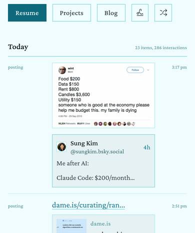
Phone, top of Today. Content gets 206 of 358px; “posting”, “3:17 pm” and the day tally are 9.6px.
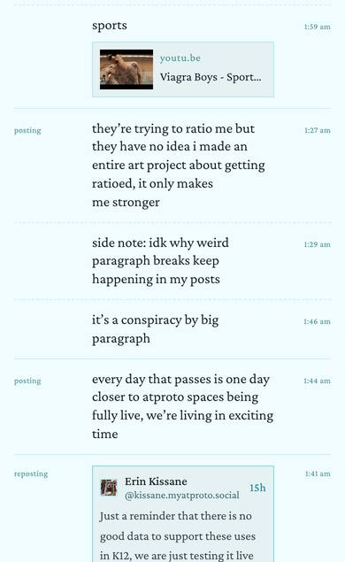
Phone, the 1:27 am thread. About 27 characters a line; the continuations have no link of their own.
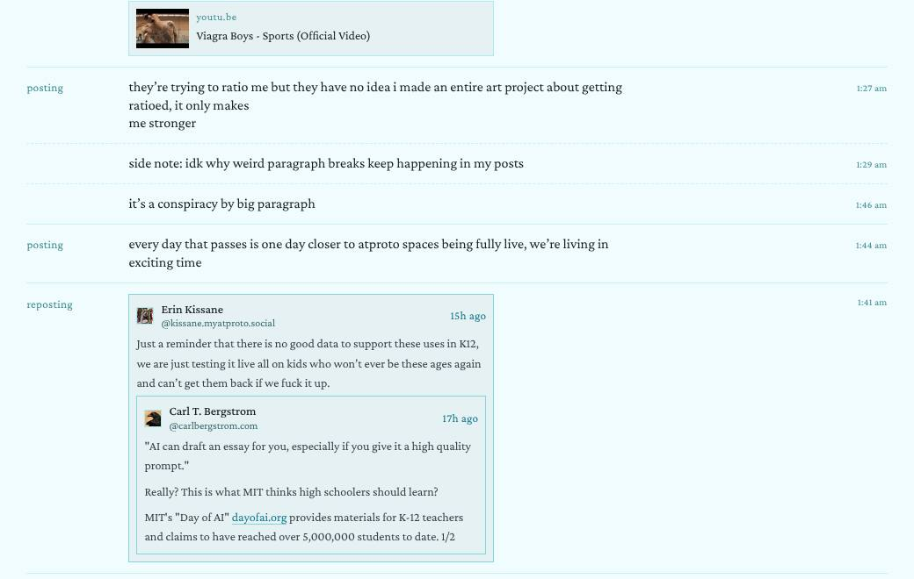
Desktop, the same rows. Text stops at 934px, the link card at 762px, the repost box at 762px; the time sits out at 1146–1210px.
new dispatch! bluesky put profile links in your own repo and about 41,000 accounts wrote them in four days, the whole atmosphere patched for a broken certificate authority, spaces shipped the big alpha, and grain had a very mysterious spike ⊂(◕‿◕)つ
Phone, 390px. Left and centre at 1 pm (sky-13): the top of Today and the 1:56 am thread — the same rows as the two phone crops above. Right: three other row kinds at 7 pm (sky-19), the hour where the live labels are weakest. Third-party images are placeholders.
dame.isplaying tennis 19h ago
listening toKilling Time by Magdalena Bayfollowed by6,679 people on Bluesky
65bpm53cal65db81%stationaryon day12,227of their life
Just a reminder that there is no good data to support these uses in K12, we are just testing it live all on kids who won’t ever be these ages again and can’t get them back if we fuck it up.
dame.is/posting
11
1 pm5
Desktop, 1200px at 1 pm. The same thread as the desktop crop above, in a 1200×800 viewport. The pointer is on the 1:27 am row's “posting”; the 1:46 am continuation's time has keyboard focus. Chrome labels are drawn in --ink-muted so the frame passes AA; the live strip uses --ink-faint.
1A running head. Below about 36rem each row opens with one line: the gerund at left (14px italic, the italic gerund of the section titles) and the time at right (13px, tabular). It replaces the 80px and 56px label columns, so the record gets the whole 358px. LAY-01, FEED-01, MOB-02
2Full-width body. Dame's text at 17px/1.4 runs 46–54 characters a line instead of about 27; the image and the quote box run edge to edge at 358px instead of 206px. FEED-01, MOB-02, TYP-11
3One baseline for the day. “Today” at 18px, its tally in 13px small caps on the same baseline — up from 9.6px. MOB-02
4Continuations keep their time. A thread follow-on shows only its time, right-aligned under the dashed rule — and that time is now a link, so the 20–25 continuation rows among home's first 71 can be reached by keyboard. FEED-01, FEED-03
5Labels that hold at every hour. At 7 pm --accent is 4.05:1 and --ink-muted 3.98:1 on the page; mixed 25% and 20% toward --ink they reach 4.73:1 and 4.57:1, their worst hour. Today's --ink-faint labels run 2.49–4.02:1. MOB-02
6A status reads as a sentence. The label becomes “logging” (a link to /logging) instead of “dame.is”, and the status keeps its subject: “dame is playing tennis”, in the hero's own words. LAY-01, NAV-04
7A night of moths. With the width back, the specimen strip grows from 36px to 56px thumbnails. “mothing” goes to /mothing; “10:39 pm” goes to the night's own page, /mothing/2026-10-16. NAV-04, FEED-03
8One edge, time beside it. Text, link cards and repost boxes all stop at one 34em edge, and the time column follows 12px later, so a time sits about 40px past its content instead of 212–480px. Row rules stop at the time and leave a clean right margin. The measure itself stays near today's (about 89 characters) — posts run one to three lines. FEED-07, LAY-04
9A row says it's a link. On hover (pointer devices only) a 2px accent bar appears in the left gutter and the gerund and time underline. No wash, no shadow; touch keeps today's whole-row tap. INT-07, FEED-03
10Visible focus. Tab stops on every row's time, continuations included, with a square 2px accent ring offset 2px — at least 4.05:1 against the page at all five hours (3:1 needed). FEED-03
11Two links, two jobs. The gerund, now in the italic of the section titles, goes to its section — the browser's status line reads dame.is/posting; “reposting” goes to /?verbs=reposting. The time is the record's permalink, like a page number. NAV-04
Build notes
src/components/Feed.css:2409-2427 — replace the @media (max-width: 600px) column-narrowing with a restack keyed to the ledger's own width, so 150–200% text size restacks too: .feed-ledger { container-type: inline-size } and @container (max-width: 36rem) { .feed-item-ledger { grid-template-columns: minmax(0,1fr) auto; grid-template-areas: "verb time" "body body" } }, with .ledger-verb, .ledger-time, .ledger-body assigned to those areas and .ledger-track-row (:2132) spanning 1 / -1. The continuation's empty verb span (FeedLedgerRow.jsx:139-140) keeps the time on the right.
Feed.css:1827-1835 — desktop tracks become var(--ledger-verb-col) minmax(0, 34em) var(--ledger-time-col) with --ledger-time-col: 4.5rem, and the list (day header included) is capped at calc(var(--ledger-verb-col) + 34rem + var(--ledger-time-col) + 2 * var(--ledger-col-gap)) so the row rules stop at the time.
Feed.css:1883-1886, :2261, :2292, :2315 — one cap: .ledger-body { max-width: 34em } and max-width: 100% for images, link cards and quote boxes (keep the 20rem height cap on single images).
src/components/FeedLedgerRow.jsx:141-147 — the verb links to its section (/posting, /listening, /mothing, /logging…; otherwise /?verbs=<verb>, the param FeedFilters.jsx already reads). :176 — the time becomes <Link to={href}><time dateTime> on every row; href already resolves a moth batch to its night via batchHref (src/lib/observationBatches.js:145). LEDGER_VERB_LABELS (:59) stops renaming logging to “dame.is”.
Hover and focus: .feed-item-ledger:hover::before and :focus-within::before draw the 2px var(--accent) bar at left: -0.875rem; a.ledger-time:focus-visible gets outline: 2px solid var(--accent); outline-offset: 2px. Keep hover inside @media (hover: hover), as src/styles/typography.css:74 explains.
Label inks: next to the sky mapping in src/styles/theme.css (~line 167) add --ink-label: color-mix(in srgb, var(--accent) 75%, var(--ink)) and --ink-meta: color-mix(in srgb, var(--ink-muted) 80%, var(--ink)) — or derive both with a 4.5:1 floor in src/lib/skyTheme.js:234-250.
The sky palette
A sky that stays legible at every hour, and paper by day
The hour's faint ink (the ‘dame is’ lead, every ledger verb and time, the day's stats) clears 4.5:1 only at 7 am and 9 am, and by day the chrome's cyan spills onto photo mats. Proposed: after each hour is derived, solve its text inks against its own page, keep in-page surfaces one quiet step off that page, and paint the right sky from the very first frame.
MOB-01
IDN-02
TYP-01
FEED-04
IDN-01
INT-02
IDN-13
INT-06
MOB-07
Now
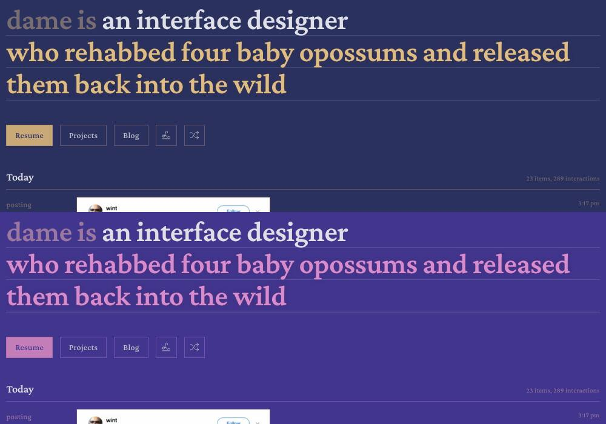
6 am (top) and 7 pm. The 48 px ‘dame is’ measures 2.49:1 and 2.63:1, under even the 3:1 large-text bar. The 11–13 px day stats and ledger labels nearly vanish, and the 7 pm Resume label is 3.31:1.
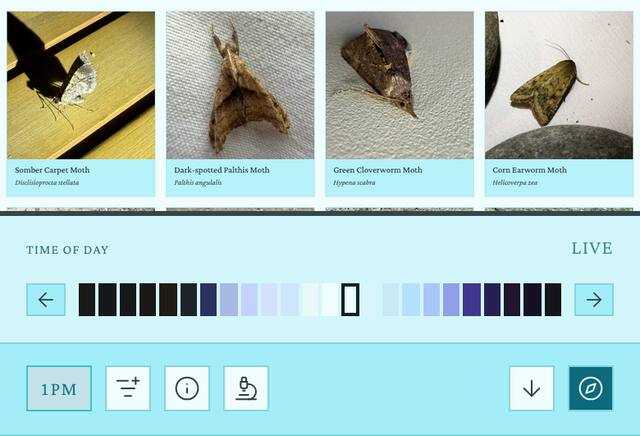
1 pm. Moth captions sit on --page-edge, which the hour's surfaceSep 200 pushes to chrome-strength cyan. In the hour sheet the 11 am–2 pm swatches have no edge, and every cell is 10×20 px.A cold load at 1 pm, left to right: 0.15–0.8 s retired parchment #f1ead4; 1.5 s untuned cyan, a different hero phrase and a lone ‘Fetching latest activity…’; 3 s the tuned sky with snapshot rows; 6 s the live feed replaces the top rows in place.
Proposed
HourToday · --ink-faint as derived1Floored · solved to 4.5 : 1Token
The contrast strip. Each band is that hour's real page. The middle column is set in today's faint ink on purpose: it is the specimen. Ratios are WCAG 2 relative luminance, computed from skyTheme.js with the live is.dame.sky tuning. The floors keep hue and saturation and step only lightness, so 6 am stays a grey-rose and 7 pm a lilac.
dame.isplaying tennis 12h ago
listening toKilling Time by Magdalena Bayfollowed by6,679 people on Bluesky
65bpm53cal65db81%stationaryon day12,227of their life
2dame isan interface designerwho rehabbed four baby opossums and released them back into the wild
Home at 6 am (desktop, with an actual-size detail) and 7 pm (phone), floored. Same palettes, same three-tone sentence; only the quiet inks are solved. The pencil voice stays the quietest text on the page, below ink and soft, but you can now read it.
dame.isplaying tennis 19h ago
listening toKilling Time by Magdalena Bayfollowed by6,679 people on Bluesky
65bpm53cal65db81%stationaryon day12,227of their life
1 pm, /mothing/2026-10-16. The chrome keeps the owner's tuned cyan; in-page surfaces stop borrowing it. Each photograph sits on the bare sky-page inside a 1 px ink-12% keyline, and its caption is set on the page like a plate caption. The pale Palthis photo is where the keyline earns its place.
The hour sheet, live at 1 pm and held at 7 pm. The ribbon is drawn from the avatar's own sky bands (SKY_BANDS, deep sky at the top, horizon at the bottom), so noon reads as cyan rather than white on white. The 44 px ribbon is one press-and-drag target, and the ink thumb and its tag show the hour on screen. The accent caret marks the real hour.
10
First paint
dame.is
listening tofollowed by
dame isa creative technologistwho gave a talk titled “From Toilets to Moths” at a conference
Today
Snapshot rows fade in, in place
dame.isplaying tennis 19h ago
listening toKilling Timefollowed by6,679
dame isa creative technologistwho gave a talk titled “From Toilets to Moths” at a conference
repostingPoe · new dispatch! bluesky put profile links in your own repo…2:30 pm
A cold load at 1 pm, proposed. The first frame is already the tuned 1 pm sky, with the hero in place and a skeleton shaped like the ledger. Snapshot rows replace the bars where they stand. The two live posts newer than the snapshot (3:22 pm and 3:17 pm) wait behind a running-head note instead of pushing the rows down.
1Solve the inks after the sky is derived. Step each text token's lightness away from its ground, keeping hue and saturation, until it clears 4.5:1. Faint and accent are solved on --page and the raised pair on both chrome surfaces. Quote and link cards sit one nest step off the page, where a page floor drops to about 4.13, so they get their own solved pair, as the chrome already does (7 pm: faint #c7b2ca, accent #e1a5d8). Muted is then lifted to at least 1.15× faint's ratio so the ramp can't invert; at 7 pm a plain floor would leave faint at 4.58, above muted at 4.53. MOB-01's 7 pm #bfa7c3 computes to 4.499, so the solver lands on #c0a9c4. Midnight (4.02 today) is floored too. MOB-01, IDN-02, FEED-04.
2‘dame is’ stays a lead, not a smudge. At 6 am it goes from 2.49 to 4.57:1. It is still the quietest of the three tones, a grey-rose under the near-white role and the amber clause, so the sentence keeps its grammar at the hour it is most often screenshotted. IDN-02.
3Chrome labels clear AA on both bar surfaces. ‘Listening to’, ‘followed by’ and ‘on day’ use --sky-ink-faint-raised. That is solved against both --surface-raised and --surface-deep: 4.07 → 4.52 at 6 am, 3.78 → 4.53 at 7 pm. The sub-rows also step up to the 13 px metadata size, so their small caps land at 12.35 px rather than 11.4. MOB-01, TYP-01.
4The ledger's columns become readable columns. The day stats and the verb and time labels move from 2.49:1 to 4.57:1, and from 11.2 px to one 13 px metadata size. They are still clearly marginalia: smaller and quieter than the post text, and set on the same faint hue. FEED-04, TYP-01.
5Nothing under 12 px on phones. The ×0.8 step that set verb, time and day stats at 9.6 px is gone. They use the same 13 px metadata token as desktop, in the floored lilac. ‘posting’ and ‘3:17 pm’ still fit today's 5rem and 3.5rem columns. TYP-01, MOB-01.
6The accent fill mixes toward the hour's ink, not black. At night, mixing toward #000 darkens the fill toward its dark label. Mixing 15% toward --ink (the same trick --danger already uses) gives the 7 pm Resume label 3.31 → 4.89:1. By day nothing visibly moves (1 pm: 6.02 → 6.11). The accent floor takes 7 pm links from 4.05 to 4.52. IDN-02, MOB-01.
7Paper by day: photos on the page itself.--page-edge stops scaling with surfaceSep, so the tuned 1 pm chrome keeps its cyan but the tiles lose the #b7f1fa mat. A 1 px ink-12% keyline holds each photo's edge, and the caption sits on the page. “Paper” here means the hour's own page, not a warm neutral. IDN-01.
8A ribbon you can actually hit. The 24 swatches of 10×20 px become one 44 px press-and-drag slider (role="slider", aria-valuetext) with hairline hour divisions. It gets a --rule outline so no hour loses its edge, ticks at 12a · 6a · 12p · 6p, an ink thumb with its hour tag, and 44×44 steppers. The open chip's label moves to --ink: today it is accent on an accent tint, 3.88:1 at 1 pm. MOB-07.
9Held is not live. When the sky is held, the header says ‘Held at 7 pm’ and offers an outlined ‘Return to live’ button. The accent caret stays on the real hour, and the bar's hour chip turns dashed, so the state survives closing the sheet. Live gets a small accent square and the current hour. INT-06.
10The right sky from frame one. A 24-hour palette table inlined in <head>, with the tuning baked in at build, means the first paint is the tuned hour, with no parchment and no untuned cyan. The ledger-shaped skeleton holds the feed's place. Live records merge by key, and newer ones wait behind ‘2 new entries’. INT-02, IDN-13.
Build notes
src/lib/skyTheme.js: add a solveContrast(vars, day) pass at the end of paletteForHour (:431), after applyOverride (:382–408). It nudges HSL L by 0.005 away from the page for --sky-ink-faint (≥4.5 vs --sky-page), --sky-ink-muted (≥max(4.5, 1.15×faint)), --sky-accent (≥4.5), and --sky-ink-faint-raised/-muted-raised (≥4.5 vs both --sky-surface-raised and --sky-surface-deep). The unfloored offsets live at :235 and :289.
Test: loop h0–23 with the is.dame.sky snapshot next to src/lib/skyTuning.test.js and assert every ratio above, so a future tuning record can't regress it. Surface the per-hour ratio row in SkyThemeStudio.jsx.
Cards: PostEmbed.css paints quote and link cards one nest step off the page (:73–74, :144–145). Re-scope --ink-faint/--ink-muted/--accent there to values solved against that surface, exactly as theme.css:275–279 does for .chrome-bar with the -raised pair.
src/styles/app.css:249–269.home-hero-cta-primary: change color-mix(… var(--accent) 90%, #000) to 85%, var(--ink) (border 72%, hover 78%). Make the same change to .chrome-nav-bottom:hover at ChromeBar.css:669.
Type: one --text-meta: 0.8125rem in src/styles/theme.css beside --text-xs (:103). Use it for .day-header-meta/.ledger-time/.ledger-verb in Feed.css (:1814, :1854, :1872), and delete the ×0.8 mobile rule at :2419–2423.
Paper by day: drop * sep from --sky-page-edge (skyTheme.js:241, :295) so surfaceSep only moves chrome. In Mothing.css:116 (.mothing-tile) and Curating.css:27 (.curating-block-button), set background: none, put outline: 1px solid color-mix(in srgb, var(--ink) 12%, transparent); outline-offset: -1px on the image, and set the caption padding-inline to 0 (.mothing-tile-caption, :152).
First paint: scripts/prefetch.mjs:716–725 already snapshots is.dame.sky. Bake it into the bundle as vite.config.js does for __NAV_SEED__ (:41, :87), and call setSkyTuning() before applySkyTheme() in src/main.jsx:37. Also emit a tiny inline <head> script in index.html that sets data-theme="sky" and the core --sky-* vars, and replace the parchment :root fallbacks in theme.css:4–8 and the #e3d8ba/#13180ftheme-color metas.
Feed: swap the ‘Fetching latest activity…’ line (Home.jsx:703–707) for FeedSkeleton (Skeleton.jsx:111) shaped as verb | body | time. Merge live items by URI. Items newer than the first visible row go to a small-caps running-head link.
Sheet: in SkyHourSheet.jsx:60–77, change role="tablist" to one role="slider" with pointer drag and aria-valuetext. Export SKY_BANDS (skyTheme.js:41) for the cell gradients. In SkyHourSheet.css, ribbon 44 px (:80–115) and steppers 44 px (:59). Give the header (SkyHourSheet.jsx:36–48, .css:28–45) separate live and held styles. Add data-held on the chip (ChromeBar.jsx:699–712) and a dashed border at ChromeBar.css:562. Set the .chrome-nav.is-open label (:553) in --ink (12.35:1 at 1 pm, 5.61 at 7 pm).
Collections
The portfolio and the galleries open on their pictures, not on a list of titles
/creating and /curating default to the same title-and-meta list as every other index, their image views are hidden behind a site-wide toggle inside the compass menu, and on a phone a 222-image channel is one picture per screen. Proposed: each collection opens in its own form (a contents page of plates, a contact sheet per channel), with a small ‘plates · index’ switch on the page and the year where the age used to be.
COL-01
IDN-04
COL-02
LAY-03
COL-04
LAY-09
IDN-06
COL-11
COL-08
INT-14
Now
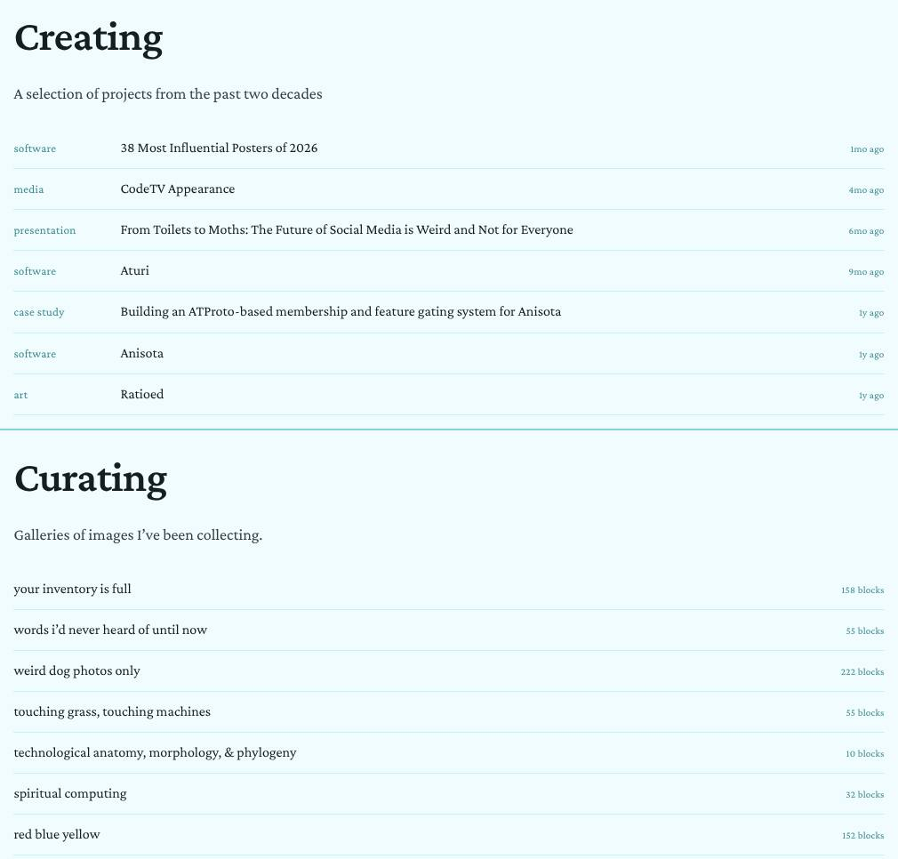
/creating and /curating, desktop. A portfolio and ‘galleries of images’, both drawn as the same text ledger; 7 of 21 works read ‘1y ago’.
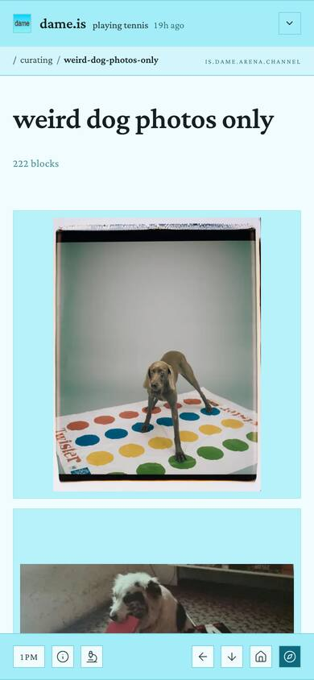
Channel, phone. One image a screen; the page is 82,547px tall.
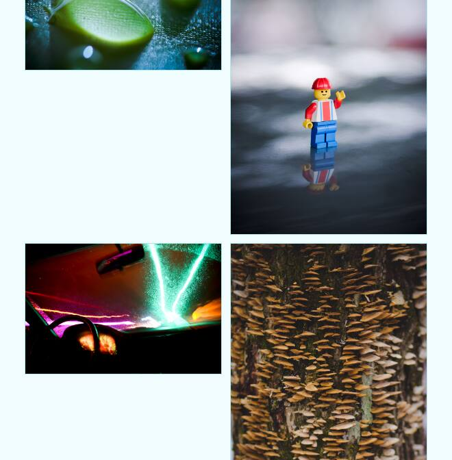
Photographs: Era 1, desktop. A fixed two-up grid in the 588px measure leaves holes beside every portrait.
Proposed
dame.isplaying tennis 19h ago
listening toKilling Time by Magdalena Bayfollowed by6,679 people on Bluesky
65bpm53cal65db81%stationaryon day12,227of their life
/creating at 1 pm, desktop, as it opens. A contents page of plates in reading order, newest first: the live order, kinds and years from the 21 portfolio records. Covers are each work’s own image; the Anisota case study has none in its record, so it keeps a captioned placeholder, and coverless works get a typographic plate.
/creating on a phone at 7 pm, both sides of the switch. Left: plates two-up, with the next two at 9 pm below to show a typographic plate at night. Right: ‘index’, the whole portfolio, with the year as its folio from 2026 back to 2011 (lining figures: see build notes).
dame.isplaying tennis 19h ago
listening toKilling Time by Magdalena Bayfollowed by6,679 people on Bluesky
65bpm53cal65db81%stationaryon day12,227of their life
woman, wall of devicesseed-pod necklacefrogspawn in a handforest clearingi’d rather be bugging than debuggingtouching grass is too ambiguous, you gotta touch very specific…
/curating at 1 pm, desktop. One row per channel in the owner’s order: what the channel holds, in curated order, before its name is read. Titles, descriptions, counts and dates are are.na’s; text blocks are the channel’s own words; the image squares are placeholders for third-party pictures.
A channel on a phone at 1 pm, and one of its images opened. Left: the first fifteen of 222 blocks as a three-up contact sheet, in the channel’s curated order. Right: the lightbox on block 3, captioned with where it came from.
dame.isplaying tennis 19h ago
listening toKilling Time by Magdalena Bayfollowed by6,679 people on Bluesky
65bpm53cal65db81%stationaryon day12,227of their life
Selected images from early in my photographic journey.
11
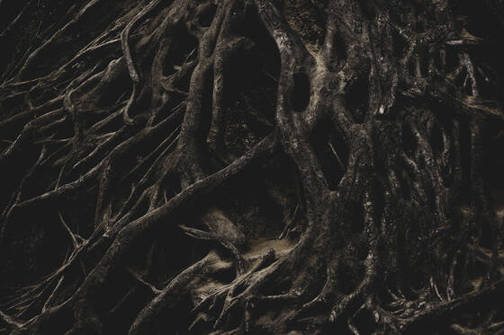
pl. 112
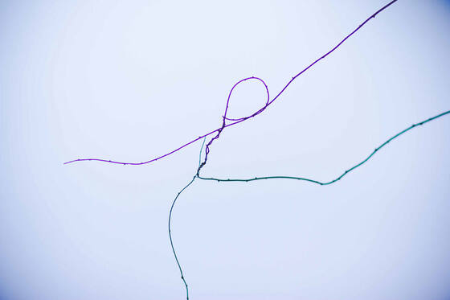
pl. 2pl. 3
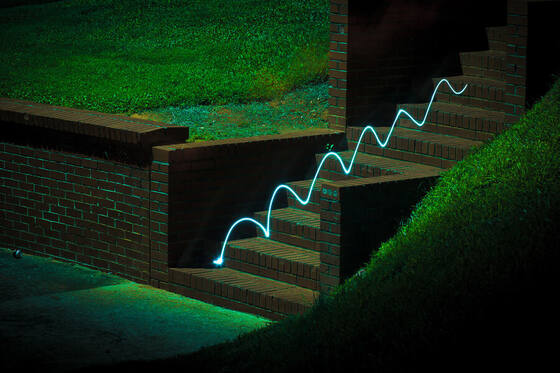
pl. 4pl. 5
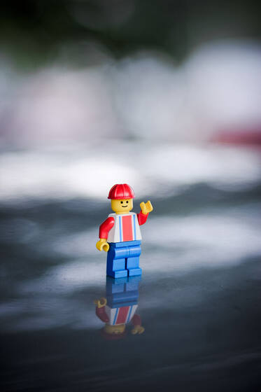
pl. 6
pl. 7
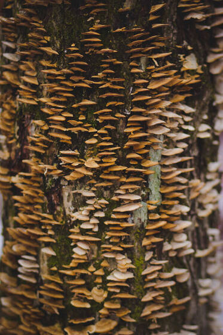
pl. 8
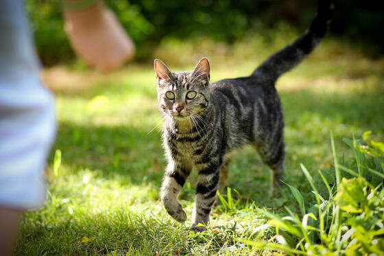
pl. 9
1 pm
/creating/photographs-era-1-part-i at 1 pm, desktop (75%). Title, colophon and text stay on the 588px measure (between the dashed guides); the series runs in justified rows across the 980px frame the stylesheet already computes. The photographs are the series’ own, in order, at their real 3:2 and 2:3 ratios.
1A view switch on the page, for this page. ‘plates · index’ in small caps beside the intro replaces two glyphs with no visible label that appear only while the compass menu is open. /creating and /curating open on plates; a visitor’s choice is kept per section, and the home feed keeps its own ledger preference. COL-01, IDN-04
2Kind and year, not age. One small-caps line, ‘software · 2026’. The year is what a portfolio needs; ‘1mo ago’ goes stale, and today all seven works from 2025 read ‘1y ago’ while the 2011 photographs read ‘15y ago’ here and ‘16 years ago’ on their own page. COL-08
3A title page for works without a cover. A rule inset 12px, kind top-left, title centred, year bottom-right, on the paper. It replaces the blank 4:3 box with a lone ❧. Three records have no cover or image: CodeTV Appearance, Ratioed, and ‘An Early Collaboration with an LLM…’. COL-11
4Covers as plates. Every cover is cropped to 4:3 and set on bare paper with a neutral 1px keyline (ink at 14%). No cyan mat, no card, no lift on hover: hover darkens the keyline. A grid in reading order, row by row, replaces the round-robin masonry, so newest-first reads left to right. IDN-06, COL-01
5Two-up plates on phones. 173px covers with the same caption beneath: the 21 works take 11 rows, and every one shows its picture. The fixed 4:3 crop keeps each row’s covers level, however long the titles run. COL-01
6The year as the index’s folio. ‘index’ is today’s ledger with the age column replaced by the year. The year appears once per run, with a dotted leader down to the run’s last work, so the column reads 2026 to 2011 like a book’s index. Screen readers still hear every year. COL-08
7Each channel shows what it holds. The title, the are.na description in italic where the channel has one, then the first six blocks in curated order, cropped square. Text blocks stay as text, so ‘words i’d never heard of until now’ shows its words. IDN-04, COL-01
8Count and date as a folio. ‘158 blocks’ at the right edge, with ‘updated October 26, 2026’ beneath. Curating.jsx already loads the description and updatedAt, and the ledger throws both away. The word stays ‘blocks’, because channels mix images, text and links. COL-01, COL-08
9A three-up contact sheet on phones. 117px squares with 4px gutters and a hairline round each, cropped to fill, on the paper rather than a cyan mat: fifteen or more images a screen instead of one. 222 blocks make 74 rows, about 9,300px instead of 82,547px. The lightbox still shows each image whole. COL-02, LAY-03, IDN-06
10The lightbox as a tipped-in plate. A 1px neutral keyline replaces the 40px soft shadow, and a caption says where the image came from. Block 3’s are.na title is a filename (‘0_0-1-.jpeg’), so the channel stands in, followed by ‘are.na · connected November 2, 2024 · record ↗’. Swiping steps through the images, as the arrow keys do; the counter stops being aria-hidden. INT-14
11Photo series run wider than the text. Galleries use --doc-overhang, which already reaches the 980px frame but is used only by Ratioed. Justified rows (each photo’s flex-grow set by its aspect ratio) end flush, so a portrait beside a landscape no longer leaves a hole: three landscapes, then two landscapes and a portrait. COL-04, LAY-09
12Numbered plates. ‘pl. 1’ to ‘pl. 17’ in small caps under each photograph. All 17 image blocks in this record have empty alt text, so for now the plate number is the only label each image has. The URL says part-i and the title says Part II; one of them is wrong in the record. IDN-06, COL-04
Build notes
Per-section view: add a useSectionView(section, fallback) hook next to src/hooks/useFeedLayout.jsx, keyed dame.view.creating / dame.view.curating. Like the existing hook, it stores only an explicit choice. Creating.jsx:101-102 and Curating.jsx:85-86 read it instead of the global layout. The switch is a two-button role="group" with aria-pressed, rendered beside PageShell’s intro (add a slot after .page-intro). LayoutToggle (rendered at ChromeBar.jsx:682) keeps its ‘Home feed layout’ label and stops re-skinning the sections.
Plates: replace MasonryGrid on these two pages with a CSS grid, repeat(auto-fill, minmax(min(16rem, 46%), 1fr)), which gives 3-up at 1008px and 2-up at 358px. .creating-grid-link img gets aspect-ratio: 4/3; object-fit: cover. Drop the --page-edge background, border-radius and translateY(-2px) in src/pages/Creating.css, and use outline: 1px solid color-mix(in srgb, var(--ink) 14%, transparent) for the keyline.
Typographic plate: rewrite .creating-grid-placeholder (Creating.jsx:36-39, Creating.css:54-62) to render workCategory(v), v.title and the year from v.createdAt inside an inset rule, instead of the ❧.
Dates: the index folio and plate captions use new Date(v.createdAt).getFullYear(); retire relativeTime at Creating.jsx:43 (cards) and :168 (ledger). COL-08 asks for old-style figures, but the Crimson Pro the site loads from Google Fonts has none: its GSUB lists only ccmp dnom frac liga locl numr pnum tnum (checked with fontTools; small caps are synthesized too). The mockup therefore sets years in lining figures. onum would need a self-hosted cut that has it, which is worth checking upstream before promising. FlatLedger gets an optional runStart flag per row to draw the dotted leader. Curating dates use formatDateFull (src/lib/time.js:155).
Curating rows: in scripts/prefetch.mjs (the gallery object at about line 823), add strip: snap.blocks.slice(0, 6).map(normalizeBlock) next to cover. Render text blocks with the existing .curating-text-card idiom, minus its --surface-raised fill.
Phone grid: below 34rem, src/pages/Curating.css:12 becomes repeat(3, minmax(0, 1fr)) with gap: 4px; wider screens keep the 11rem track. (COL-02’s minmax(min(7rem, 30%), 1fr)) also works on phones, but on desktop it would give eight columns.) .curating-block-button loses padding, the --page-edge fill and the hover lift, and its img goes from object-fit: contain to cover.
Lightbox: in src/components/Lightbox.css:69, replace box-shadow with outline: 1px solid color-mix(in srgb, var(--ink) 22%, transparent). Add a caption row to the controls in Lightbox.jsx (around the counter at line 285, which loses aria-hidden). Use pointer-drag stepping that is off under reduced motion.
Galleries: add { value: 'justified' } to GALLERY_LAYOUTS in src/components/LeafletDocument.jsx (each figure flex: var(--ar) 1 0 from the block’s aspectRatio), and give .leaflet-gallerymargin-inline: calc(-1 * var(--doc-overhang)) (Blogging.css:130; RatioedBlock.css:29 is the precedent). Plate numbers come from ::before on a CSS counter.
Contrast as drawn: the small-caps lines use --ink-muted at 1 pm (6.19:1 on --page) and 9 pm (5.89:1). At 7 pm --ink-muted is 3.98:1, so the mockup uses color-mix(in srgb, var(--ink-muted) 50%, var(--ink)) = 5.55:1. Today’s --ink-faint (3.79:1 at 1 pm) would fail for these captions; that fix belongs to the palette concept.
Collections
/mothing becomes an almanac of nights, and each night opens as a drawer of plates
Today /mothing prints all 519 observations as 40px-thumbnail rows on one 32,683px page, and the way into each night's gallery is a heading that shows no link cue on a phone. Proposed: one ruled entry per night (a date folio, a filmstrip of Dame's photographs, the counts and an explicit “see the night →”), grouped by season, with the night pages laid out as plates, two to a row on a phone.
COL-03
COL-02
LAY-03
LAY-06
COL-07
IDN-06
Now
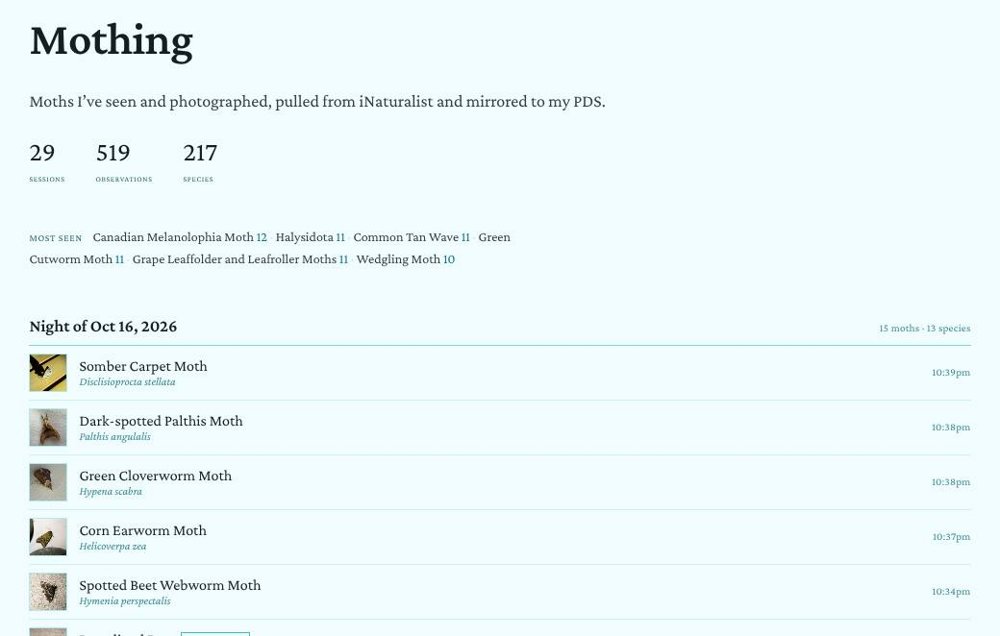
/mothing, desktop, 1 pm. All 29 nights and 519 moths on one 32,683px page. Each moth is a 40px square, “Green / Cutworm Moth” breaks across a line, and the night heading, the only way into that night's gallery, is underlined only on hover.
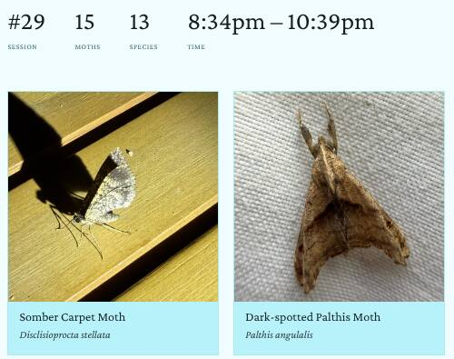
/mothing/2026-10-16. The gallery the index never previews. Its captions sit on --page-edge slabs, which are cyan at 1 pm.
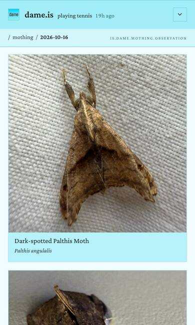
The same night, phone.minmax(12rem) plus a 1rem gap needs 400px of a 358px column, so the grid is one-up: 15 moths take 7,255px.
Proposed
dame.isplaying tennis 3h ago
listening toKilling Time by Magdalena Bayfollowed by6,679 people on Bluesky
65bpm53cal65db81%stationaryon day12,227of their life
Mothing
Moths I’ve seen and photographed, pulled from iNaturalist and mirrored to my PDS.
/mothing/2026-10-16: desktop at midnight (sky-00, shown at 65%) and phone at 1 pm (sky-13). The same figures component as the index, then plates on bare paper: four to a row on a desktop, two at 171px on a phone. The desktop view is cut after its twelfth plate; the night's last three are Sparganothis Fruitworm, Greater Wax Moth (a first sighting) and Laudable Arches.
dame.isplaying tennis 3h ago
Mothing
Moths I’ve seen and photographed, pulled from iNaturalist and mirrored to my PDS.
Phones at 9 pm (sky-21). Left: the whole /mothing index, about 1,400px as drawn against 33,006px today. Each night is a folio line, a four-cell strip, its counts and a link you can see without hovering. Right: the night page scrolled to its first lifer, with six moths on one screen where today there is one.
1One figures component, everywhere a page counts. Hairline-ruled cells, the numeral first so every numeral sits on one baseline, a small-caps label beneath and an optional one-line note. It is the Ratioed table in the /mothing voice: ink numerals at weight 400, accent labels, no boxes. On a phone the short figures go three-up and the time span takes its own full-width row, so no orphaned tile is left over. “Sessions” becomes “nights” to match the page's own words. This is the component's /mothing use; c-11 proposes it for the rest of the site. LAY-06, COL-07.
2Most seen becomes six plates. Each plate is a square photo, the name in serif and the count as ×12. Nothing breaks mid-name any more (“Green / Cutworm Moth”), and a tap opens the photo in the existing lightbox, as a tile does today. Halysidota has no common name, so its genus is set in italic. COL-03.
3Nights are grouped by season, and older seasons fold. A small-caps season header carries its dates and tally (2 nights · 34 moths · 27 species). Only the current season is open, so the page goes from 32,683px to under two screens and renders 22 thumbnails where it now renders 519 rows. COL-03.
4Each night is one ruled entry. A folio on the left (No. 29, Oct 16, Friday), a filmstrip of the first eight photographs at 72px ending in a “+7” cell, then the counts, the time at the light and a first-sightings count that uses the chip's existing count form. COL-03, IDN-06.
5The way in is visible at rest. “see the night →” is accent text with a resting --accent-soft underline, and the folio and filmstrip link to the same page. Touch screens, which never hover, now get the cue. COL-03.
6The full ledger stays. The existing one-row-per-observation ledger becomes the index you choose, for searching by name, and stops being the page's default. COL-03 → COL-01.
7Plates on paper. The photo sits on the page with a neutral --ink 12% keyline, not on a --page-edge caption slab (cyan at 1 pm) and not with a 2px hover lift. Hover darkens the keyline instead. The crop stays square, because a species drawer reads best in an even grid and the lightbox shows the whole frame. IDN-06.
8A specimen label. The time in small caps, the common name in serif, the binomial in italic and the first-sighting chip on its own line when it applies. The time now appears on the night page as well as in the ledger. COL-02, LAY-03.
9Two-up on a phone.minmax(min(12rem, 46%), 1fr) gives 2 × 171px on a 358px column and leaves desktop at four-up. At 9 pm the scrolled view holds six moths where today it holds one. The audit's two-column prototype measured 2,785px against today's 7,255px. COL-02, LAY-03.
10The night entry on a phone. The folio collapses to one line, the strip to four cells, and the counts and link move below. The season tally drops species so that it stays on one line. COL-03.
Build notes
src/pages/Mothing.jsx 189–208: replace .mothing-stats and the run-in .mothing-toplist with a shared <Figures> (model: .ratioed-piece-figures in src/pages/RatioedPiece.css 55–75, with the numeral first and the label beneath) and a Most seen plate row. stats.topSpecies (computeStats, src/lib/inaturalist.js) has taxonId but no photo, so take the newest observations entry with that taxon and use photoUrl(photo, 'small').
src/pages/Mothing.jsx 218–264: render one <NightEntry> per buildSessions() session in place of the per-observation ledger. Its parts are photographed(session).slice(0, 8), nightSummaryParts(), nightPath() (all in src/lib/mothing.js) and <FirstSightingChip count={n}>, where n counts firstIds.has(o.id). Strip thumbs are srcSetsquare 1x and small 2x, loading="lazy".
Add a pure seasonOf('YYYY-MM-DD') to src/lib/mothing.js (string math, no Date(), like formatNightDate) and wrap each season in <details>, with the newest season open. Keep the current ledger behind useFeedLayout() as the “every observation” view.
src/pages/Mothing.css 272–284: give .mothing-night-link a resting text-decoration-color: var(--accent-soft) rather than one under @media (hover: hover) only.
src/pages/Mothing.css 88–95: .mothing-grid becomes repeat(auto-fill, minmax(min(12rem, 46%), 1fr)). In 100–124 .mothing-tile gets background: none; border: 0 and loses the translateY(-2px) hover, and the img gets border: 1px solid color-mix(in srgb, var(--ink) 12%, transparent).
src/components/MothTile.jsx: add the time line from formatObservedTime(obs.observedTime) above the name. src/pages/MothingNight.jsx 146–151: the MothStat labels become night, moths, species and “at the light”, and nightSpan() gets a compact form that writes the meridiem once (8:34–10:39 pm).
Chrome
The chrome steps aside while you read, and every tool says what it does
Mid-post today, a quarter of a laptop screen and a fifth of a phone is pinned chrome (225 of 900px, 175 of 844px), the bottom bar is a row of identical wordless squares, and at 320px the compass falls off the screen. Proposed: one running-head line while you read, with the atmosphere as a masthead that scrolls away; small-caps words beside the desktop tools and first-visit captions on phones; and a priority order that keeps the compass on screen at any width.
LAY-02
MOB-03
NAV-05
MOB-09
MOB-06
INT-01
MOB-05
INT-13
INT-11
NAV-12
MOB-08
NAV-11
IDN-07
Now
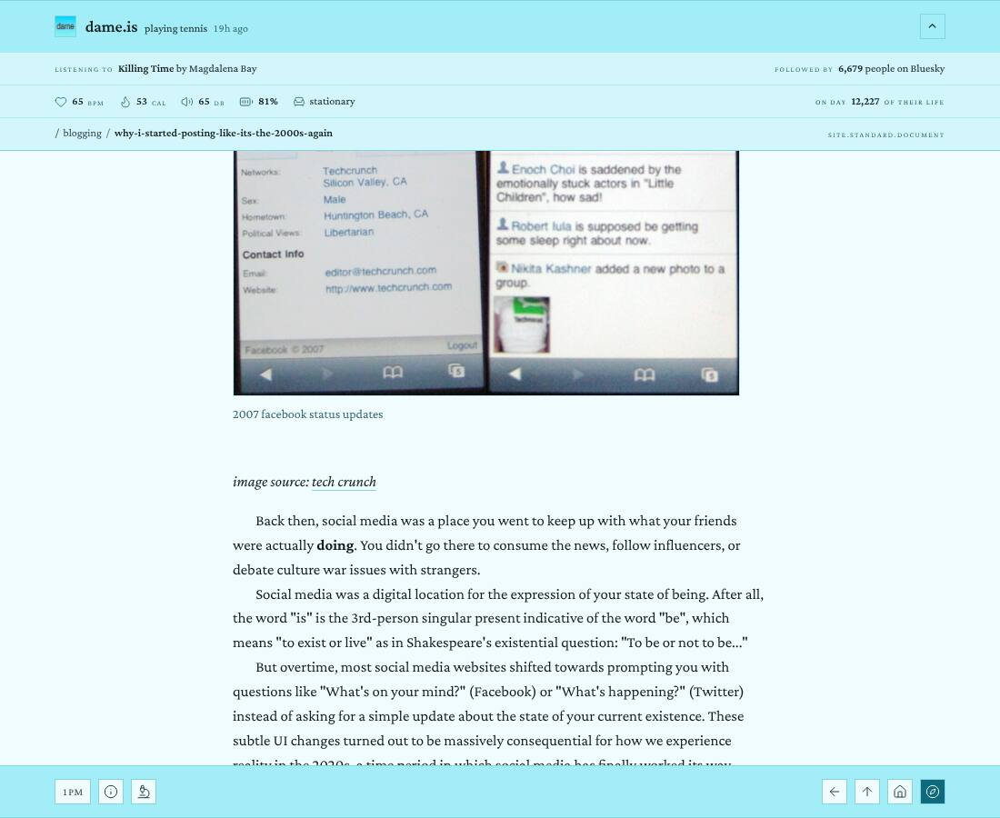
Desktop, mid-post, 1 pm. Four pinned tiers make 167px on top, plus a 58px bar below. That leaves 675 of 900px for the post.
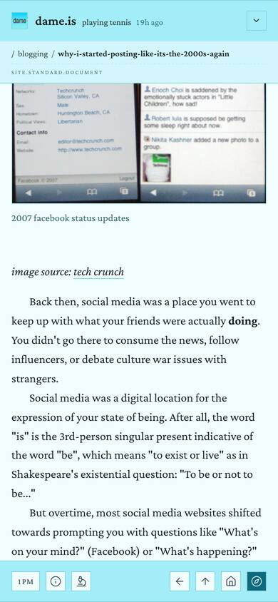
Phone, mid-post. The NSID wraps under the slug, so the strip is two rows. That makes 117px on top and 58px below.320px, /posting scrolled. The bar holds nine items in one row. The compass, the only way into the menu, is cut off by the screen edge.
Back then, social media was a place you went to keep up with what your friends were actually doing. You didn't go there to consume the news, follow influencers, or debate culture war issues with strangers.
Social media was a digital location for the expression of your state of being. After all, the word "is" is the 3rd-person singular present indicative of the word "be", which means "to exist or live" as in Shakespeare's existential question: "To be or not to be..."
But overtime, most social media websites shifted towards prompting you with questions like "What's on your mind?" (Facebook) or "What's happening?" (Twitter) instead of asking for a simple update about the state of your current existence. These subtle UI changes turned out to be massively consequential for how we experience reality in the 2020s, a time period in which social media has finally worked its way inside almost every facet of our lives.
image · a third-party screenshot of Facebook's “what's on your mind?” prompt
While I'm glad that the concept of "posting" on social media evolved over time, I am sad that we seemed to essentially abandoned the traditional "status update" of Facebook's yesteryears in the process. I wish people still made simple reports of what they were doing, eating, reading, or listening to.
I think this loss is part of a larger phenomenon of everyone becoming much more disembodied and less grounded while we're inhabiting digital spaces. To help combat this shift in my own life, I decided to create a new personal website this year that felt more "alive" and reflective of my lived experience.
+109 px · four more linestoday the chrome ended herepinned while reading 58 + 58 = 116 px · 12.9% today 225 px · 25%1234
Desktop, the same post mid-read, 1 pm. Only the running head and the bottom bar stay pinned: 116 of 900px instead of 225. The band above the dashed line used to be chrome and now holds four more lines of the post. The bar keeps its square hairline chips and filled compass; each chip now has a word beside it.
In November of 2007, Facebook made a tiny change to its user interface that would massively influence what we know of today as a "post" on social media. What was that change?
They removed the mandatory word "is" from the beginning of what were once called "status updates".
Initially, the status format forced you to write about yourself in the third person; you couldn't get rid of the verb "is" after your name, so getting your feelings across often required some grammatical maneuvering. (source)
In November of 2007, Facebook made a tiny change to its user interface that would massively influence what we know of today as a "post" on social media. What was that change?
They removed the mandatory word "is" from the beginning of what were once called "status updates".
Initially, the status format forced you to write about yourself in the third person; you couldn't get rid of the verb "is" after your name, so getting your feelings across often required some grammatical maneuvering.
The top of the same post: desktop in the 9 pm palette, phone on a first visit in the 7 pm palette. Content is as captured at 1 pm. At the top nothing is lost: the atmosphere rows and the trail sit in the page under the running head and scroll away with it. The phone keeps the atmosphere folded but names it, and its bar captions each chip until the visitor first taps it.
Back then, social media was a place you went to keep up with what your friends were actually doing. You didn't go there to consume the news, follow influencers, or debate culture war issues with strangers.
Social media was a digital location for the expression of your state of being. After all, the word "is" is the 3rd-person singular present indicative of the word "be", which means "to exist or live" as in Shakespeare's existential question: "To be or not to be..."
But overtime, most social media websites shifted towards prompting you with questions like "What's on your mind?" (Facebook) or "What's happening?" (Twitter) instead of asking for a simple update about the state of your current existence. These subtle UI changes turned out to be massively consequential for how we experience reality in the 2020s, a time period in which social media has finally worked its way inside almost every facet of our lives.
image · Facebook's newer status prompt+69 px: the lines by the bracket, top right, sat under today's crumb strip. Pinned now: 48 + 58 = 106 px, 12.6% (today 175 px, 20.7%)
Phones while reading. Left: the post at 390px and 1 pm, with one 48px running head. Middle and right: /posting on a 320px iPhone mini with Display Zoom, in the 6 am palette, with the bar at rest and with the compass sheet open. The compass is pinned last and never clips. Whatever doesn't fit moves to the foot of the sheet, by the thumb. Ledger labels are drawn at AA contrast.
About this site
A key to the two bars
atmosphereWhat Dame is doing, listening to, and the readings from Dame's phone. It sits at the top of every page.
skyThe palette follows the sky in Dame's hourly avatar, on Eastern time. Pick an hour to see it.
filterChoose which kinds of records a feed shows.
inspectTurn the page inside out: every block shows the AT Protocol record behind it.
upOne level up the trail. It never leaves the site.
contentsEvery page Dame is: available, welcoming, creating, blogging…
dame.is a personal website built on top of the AT Protocol (atproto). The data behind most of what you see here is stored on an independently hosted Personal Data Server (PDS).
12
Resting: home, 7 pm palette
Filter sheet open: the chip shows the sheet's × on a 20% tint
13
Just closed, proposed: identical to resting
Just closed, today: the sticky :hover leaves a 14% tint that reads as open, or as “filters customised”
First paint: the box is reserved and filled with this hour's sky
Details. Left: a key at the top of the ⓘ sheet, above the existing about text. Middle: the filter chip resting, open, and just closed, at 7 pm, plus today's lingering tint for comparison. Right: the mark's box is held from the first frame, so the wordmark never jumps. The dashed guide marks its left edge.
1One running head while reading. Once the page scrolls (past the title on a post, past the first day on a feed), the trail takes the status's place in the 56px bar. It names the page by its title, in italic, not by its slug, and the NSID sits at the right in small caps. The crumb strip stops being a tier of its own. LAY-02 · MOB-05 · INT-13
2Four more lines a screen. Chrome pinned while reading drops from 225px to 116px of 900 (25% → 12.9%). At the post's 26.9px leading, 109px is four lines. At the very end, the colophon (written · updated · published on the AT Protocol) prints in the page instead of sliding up as a 45px third bar. LAY-02
3Tools that say what they do. On desktop, each chip has a small-caps word inside the same button, so the word is part of the target. Every chip also gets a title. The hour chip shows a sliver of this hour's avatar and reads 1 pm et · sky, so a visitor in London won't mistake it for a clock. NAV-05 · MOB-09 · INT-11
4Up, by name. ← becomes ↖ and says where it goes. It always goes to the trail's parent, never back out of the site to a search result; history stays with the browser's own back button. The in-page “← Albums” eyebrows go. INT-01 · NAV-11
5The atmosphere is the masthead. At the top nothing is lost: listening, followers, vitals and the trail sit in the page and scroll away with it. The chevron brings them back over the page at any time. The vitals row gets a lead label like its siblings, Dame's phone · 2h ago. Followed by and on day become links. NAV-12 · INT-13 · LAY-02
6The chevron says “atmosphere”. On phones the folded tier gets a word and one 46px-tall button running from the status to the edge (the dashed box). Today it is a bare 28px chevron in the hardest corner to reach. The status stays its own link. INT-13 · MOB-08
7Captions on a first visit. Each phone chip carries a 12px small-caps caption in --ink-muted (≥ 4.74:1 on the bar at every sampled hour). After the first tap on the bar the captions go, and the bar returns from 72px to 58px. MOB-09 · NAV-05
8A slim running head on phones. One 48px line holds the trail, with the title ellipsized. The NSID moves to x-ray, where records are the point. Pinned chrome while reading is 106px, 12.6% of 844; today it is 175px, 20.7%. MOB-05 · MOB-08
9A priority order; the compass is pinned. The compass never shrinks and is always last. ⌂ leaves the phone bar, because the wordmark already goes home. The scrolled-past count rides the ↑ chip and is read out as “7 posts above”. When the row overflows, ⓘ moves out first, then ↖. A hairline separates tools from navigation once the gap is narrow. MOB-03 · NAV-05 · INT-11
10What doesn't fit goes in the sheet. Chips that overflow the bar appear at the foot of the compass sheet as labelled chips, so nothing is lost at 320px or at 150% text. MOB-03
11Layout in words. On a feed, with the sheet open, the left of the bar reads layout: ledger · cards with the current one underlined in accent, instead of a near-black square. It isn't drawn off feeds. INT-11
12A key at the top of ⓘ. Each glyph sits in its chip with a one-line italic gloss, in rows ruled like the ledger. The key names the atmosphere and the sky, and inspect is no longer the fourth paragraph below the fold. MOB-09 · NAV-12 · NAV-05
13Open looks open, closed looks closed. While a chip's sheet is open, its glyph becomes the sheet's ×, a change of shape rather than tint. Hover tints apply only under (hover: hover), so a chip tapped closed can't keep the lingering tint. The compass keeps its fill when open: today's --accent-soft ground gives its glyph 2.03:1 at 1 pm. MOB-06
14The mark holds its place. The 1.3em box is reserved from the first frame and filled with this hour's sky band; the avatar replaces it once decoded. Today dame.is jumps 34px right when the mark arrives. IDN-07
Build notes
src/components/ChromeBar.css:40-58: .chrome-bar-top is sticky and holds both tiers. Keep it sticky but give it top: calc(-1 * var(--masthead-h)), so the masthead scrolls off and only .chrome-bar-primary stays. Render .chrome-bar-secondary-wrap (101-111) and the crumb strip in the flow, not absolutely positioned.
ChromeBar.jsx:332: inside .chrome-cluster, cross-fade <NowStatus /> to the crumb <nav> (plus the day label on feeds) once useScrolledDown() (1192) fires. Take the last crumb's label from the page record's title, not from the slug that buildCrumbs (1083) returns.
ChromeBar.jsx:613: goBack() becomes navigate(parentPath), with aria-label and title set to “Up to {parent}”. Drop the eyebrows at ListeningAlbum.jsx:74, MothingNight.jsx:102 and RatioedPiece.jsx:472.
ChromeBar.css:764-771: in .chrome-bottom-row, give .chrome-nav-bottomflex-shrink: 0. A ResizeObserver (scrollWidth > clientWidth) moves chips by priority (ⓘ, then ↖) into a new tools row in ActionDock.jsx. Under 700px, drop the Home MotionLink. Fold .chrome-scroll-count (ChromeBar.jsx:923) into .chrome-scroll-jump, and remove its pointer-events: none (ChromeBar.css:817).
Words: add a new .chrome-nav-label (all-small-caps, 0.875rem, --ink-soft, 6.64–11.92:1 on --surface-raised across the five sampled hours) at min-width: 60rem, and set title on every .chrome-nav. First-visit captions sit behind a try/catch localStorage flag. The key is a static block in InfoSheet.jsx, above the PDS-editable about body.
ChromeBar.css:536-551: wrap the hover rules in @media (hover: hover) and (pointer: fine). Open chips render lucide X, which is already imported at ChromeBar.jsx:4. .chrome-nav-bottom.is-open (678-682) keeps the 90% accent fill.
VitalsPanel.jsx:57: add a .chrome-signal-label “Dame's phone”, and age it from the is.dame.state record's createdAt. The 65 bpm shown was the 11:00 ET record, 2h old at the 1 pm capture. Check before giving the dB reading a legend: in every recent record, soundLevel equals heartRate (45/45, 50/50, 65/65, 67/67). Wrap ProfileStats.jsx and DayOfLifeTicker.jsx in links.
Label contrast: .chrome-signal-label, .chrome-crumb-nsid, .chrome-crumb-day and .vital-unit use --ink-faint, which gives 3.03–4.43:1 on --surface-raised at the five hours (computed). The drawings use --ink-muted on chrome (4.74–7.56:1) and color-mix(--ink-muted 60%, --ink) on --page (≥ 5.20:1).
ChromeBar.jsx:316: replace the {showAvatar && …} guard with an always-rendered .chrome-mark box (ChromeBar.css:366-374), whose background is the hour's band from SKY_BANDS in src/lib/skyTheme.js. LayoutToggle.jsx:23-38 becomes a text segmented control, rendered only where useFeedFilter().available. The footer strip (ChromeBar.css:733-762) becomes <Footer /> at the end of .main.
Navigation
The compass menu becomes the site’s table of contents
Today the compass opens nine bare gerunds under a 12px label, with a /path that repeats each one, a “you are here” marked only in the hover colour, and about 290px of dead sheet above. Proposed: a contents page that finishes the sentence “dame is…”. It is grouped, glossed and folioed with what’s fresh, marks the current page in type instead of colour, and the page titles speak the same grammar.
NAV-03
IDN-08
TYP-12
NAV-13
NAV-08
SYS-02
MOB-11
INT-04
MOB-12
Now
/blogging, menu open, desktop, 1 pm. There is about 290px of empty sheet, and clicking it doesn’t close the menu. The current row (blogging) and the hovered row (logging) are the same teal. Bottom left, the page tools give way to an unlabelled black layout toggle.Phone, 1 pm. About 350px of blank sheet. The open compass puts --page on --accent-soft, 2.03:1.Menu → Account. Nothing says why a visitor would sign in. The button is disabled (ink at 50%) until you type, so it looks broken.
Proposed
dame.isplaying tennis 19h ago
listening toKilling Time by Magdalena Bayfollowed by6,679 people on Bluesky
65bpm53cal65db81%stationaryon day12,227of their life
dame isblogging
A book of long-form posts. Each entry is a site.standard.document record.
I’m looking for my next job3mo ago
Building an ATProto-based membership and feature gating system for Anisota1y ago
The contents sheet on /blogging. Desktop at 1 pm (sky-13): a compact sheet rises from the bar over a veiled page, set in three grouped columns. Phone at 7 pm (sky-19): the full-height touch sheet, now filled to the thumb with two-line rows. Folios are the newest record in each section as of the 1 pm capture. The veiled page is inert behind the dialog, so its washed-out text is incidental under WCAG 1.4.3. Atmosphere-bar labels are drawn in --ink-muted here, not the live --ink-faint (3.0:1 on --surface-raised at 1 pm), so every frame passes AA.
dame.isplaying tennis 19h ago
listening toKilling Time by Magdalena Bayfollowed by6,679 people on Bluesky
65bpm53cal65db81%stationaryon day12,227of their life
dame isblogging
10
A book of long-form posts. Each entry is a site.standard.document record.
the guestbook Sign in with any atproto account and leave a note that you were here. Every signature lives on the signer’s own PDS and reaches this page as a backlink.
Chapter openings. /blogging at 1 pm and /welcoming on a phone at 7 pm. The H1 is the sentence the menu and the URL already spell, set on the hero’s ruled line with the unused .gerund style. The avatar is a placeholder for a third-party image.
8
12 am
rest, now7.88
open, now7.19
open, new10.50
6 am
rest, now5.55
open, now4.01
open, new7.30
1 pm
rest, now6.02
open, now2.03 fails
open, new6.47
7 pm
rest, now3.30 <4.5
open, now2.79 fails
open, new4.59
9 pm
rest, now5.83
open, now4.77
open, new8.14
account
Sign in with your own atproto account to sign the guestbook, or to edit your own records in /exploring.12
Above: the compass button’s --page-glyph contrast at the five sampled hours. “Rest, now” is today’s color-mix(accent 90%, #000). “Open, now” is --accent-soft. “Open, new” is color-mix(accent 80%, ink) with a × glyph. Mixing toward --ink instead of black moves the fill away from --page at night too. At 7 pm, black pulls the pink accent toward the violet page, under the ≥4.5:1 that ChromeBar.css’s own comment promises. Here: the Account view at 9 pm on a phone (home route, so no back or home button). The open account chip uses the same wash-and-hairline “on” as the layout chips.
The close control, and the view behind the person icon. All ratios are computed with the WCAG formula from the live sky tokens (kit palettes.css). The glyph is a non-text control, so 3:1 is the floor. The new fill clears 4.5:1 at every sampled hour.
1Contents in the site’s grammar. The sheet opens on “dame is…” set like the hero lead (Crimson 600 at 30px in --ink-muted). Today’s label is 12px --ink-faint, 3.47:1 on --surface-deep at 1 pm. Each row finishes the sentence with a one-line gloss taken from that page’s own intro. The rows sit under three small-caps heads: writing & work, life signals, about & visitors. The heading links to the front page. (NAV-03, IDN-08)
2Folios say what’s alive. A dotted leader runs to a tabular freshness folio under a “latest” head: now, today, 19h, 2d, 10d, 1mo, 3mo. Each is the newest record in that section. Counts go in the gloss: 7 posts, 21 projects, 19 channels, 29 nights, 36 signatures, 179 collections. /themself has no profile record yet, so it gets no folio rather than a made-up one. (IDN-08, NAV-03)
3You are here, in type. The current row gets a filled square, 600 weight and the italic accent of .page-title .gerund, so it matches the H1 you just left. The sheet’s running head says “now reading dame.is/blogging”. That head replaces the per-row /path column, which repeated each label word for word, and still keeps the URL grammar in view. (NAV-03)
4Hover is an underline, not a colour. The hovered “logging” only gains an accent underline, so it can’t be mistaken for the current “blogging”. Today both turn rgb(15,117,138). (NAV-03)
5The whole map. /posting joins life signals, and /listening/albums is indented under listening as a sub-entry. /exploring comes back under about & visitors, but that is the owner’s call: it has hidden: true in is.dame.nav/self. /sharing stays out while it is a placeholder. (NAV-03)
6A compact sheet over a veiled page. With a fine pointer the sheet is only as tall as its contents. The page sits under a 55% --page veil, which reads as “behind” and closes the menu on click. Today a click in the ~290px blank band does nothing. Esc and the × still work. (INT-04, MOB-12)
7Labelled layout chips. The menu-open bar now reads “layout · ledger | cards” instead of two bare glyphs. The on chip uses the single selected grammar: a 16% accent wash, an accent hairline and ink text (13.0:1 at 1 pm, 5.9:1 at 7 pm), not a solid ink square. It only appears on routes that honour it, and its group label changes from “Home feed layout” to “Collection layout”. (NAV-13, SYS-02)
8The compass turns into ×, on a fill that holds. When open, the button keeps a dark fill and shows ×. --accent-soft becomes color-mix(accent 80%, ink), so the --page glyph clears 4.5:1 at all five sampled hours. The same token fixes the resting compass at 7 pm, where today’s black mix gives 3.30:1. (MOB-11, SYS-02)
9Phone: full height, now full. On touch the sheet still fills the gap down to the thumb, as designed. The gap is now used: glosses drop to a second 14px line, and all eleven rows plus albums fit a 390×844 screen with no blank band. (INT-04, NAV-03)
10Titles speak it too. Section H1s read “dame is blogging”. The lead is --ink-muted, not the hero’s --ink-faint: 6.2:1 at 1 pm and 4.0:1 at 7 pm, at 48 and 36px. The gerund uses the existing .gerund rule on the hero’s ruled line. Record pages keep their own titles, and <title> stays “dame.is blogging”. (TYP-12, IDN-08)
11/welcoming still says “guestbook”. The H1 “Guestbook” becomes “dame is welcoming”, and “the guestbook” leads the intro. Menu word, URL and title now agree, and the plain noun stays as a gloss for first-time visitors. (NAV-08, TYP-12)
12Account says what it’s for. One standfirst line says why to sign in: to sign the guestbook or edit your own records in /exploring. The empty-state button becomes an accent hairline instead of ink at 50% opacity, and the labels move from --ink-faint to --ink-muted. (NAV-13)
Build notes
src/lib/navRoutes.js: give DEFAULT_ROUTES and the is.dame.nav items optional gloss, group and parent fields (for /listening/albums), and pass them through effectiveNavRoutes. Add /posting. src/components/NavMenuPanel.jsx gets inputs for the new fields.
src/components/ActionDock.jsx:114–127: render <Link to="/">dame is…</Link> plus a running head from useLocation(), then one <section> per group. Each row becomes gerund, leader and folio, with the gloss under them; drop .dock-route-path. Folios come from a useNavFolios() hook that reads caches the pages already fill, never a fetch-on-open.
src/components/ActionDock.css:8–13, 56–94: under @media (pointer: fine), change .dock-panel to height: auto; max-height: var(--dock-panel-h) with a top hairline, give .dock-backdropcolor-mix(in srgb, var(--page) 55%, transparent), and lay the groups out on a 3-column grid. Lines 125–132: .dock-heading moves to --ink-muted at --text-2xl.
ActionDock.css:162–172: hover becomes text-decoration: underline with no colour change. .is-active gets font-weight: 600; font-style: italic; color: var(--accent) plus a ::before square, keyed on aria-current="page".
src/styles/theme.css (the [data-theme='sky'] block at line 166): add --accent-fill: color-mix(in srgb, var(--accent) 80%, var(--ink)). src/components/ChromeBar.css:659–682: .chrome-nav-bottom, its hover and .is-open all use it, with no --accent-soft. ChromeBar.jsx:1040: render <X> instead of <Compass> while dockOpen.
src/components/LayoutToggle.jsx:23: change the aria-label to “Collection layout” and show the words. LayoutToggle.css:27–31: .is-active becomes the accent wash with an accent border and --ink text. ChromeBar.jsx:673–684: mount it only on the routes that call useFeedLayout (Home, Posting, Logging, Listening, Blogging, Creating, Curating, Mothing).
src/components/PageShell.jsx:42–46: add a gerund prop that renders <span class="page-title-lead">dame is</span> <span class="gerund">…</span>, reusing src/styles/app.css:103–106 and the ruled background of .hero-sentence (app.css:120–151). /welcoming passes gerund="welcoming" and leads its intro with “the guestbook”.
src/components/SignInPanel.jsx:161–189: add the standfirst <p>. SignInPanel.css: .signin-label moves to --ink-muted, and .signin-button:disabled becomes a transparent background with an accent border and accent text instead of opacity: 0.5.
Records
Every record is a page you can land on
Feed rows and shared links land on record pages that open on a raw rkey, set the record at body size under a highlighted at:// string, and, for 10 of 17 verbs, offer a section crumb that leads to “Nowhere to be found”. Proposed: one plate for every record. The crumb names the moment and always goes somewhere, the record’s own sentence is the H1, a colophon dates it, earlier and later turn the page, and the URI drops to a folio.
NAV-01
COL-05
NAV-06
NAV-09
NAV-11
SYS-10
COL-06
NAV-14
Now
/logging/3mysojzqy3z23, desktop, 1 pm. The crumb ends in the rkey. The status sits at body size beside a teal “dame.is”, and the loudest thing on the page is the highlighted URI, which breaks mid-token. The column is 484px here and 588px on a post.A repost’s section crumb, clicked (two captures stacked). “reposting” links to /reposting, which doesn’t exist, so the visitor lands on the generic not-found page and its em-dash footer. Liking, following, observing, photographing, feeding, listing, commenting, crafting and flushing do the same./posting/3myujs5nl522g, phone. No heading or byline. The page opens on someone else’s screenshot, and the only label is the TID in the crumb.
Proposed
dame.isplaying tennis 19h ago
listening toKilling Time by Magdalena Bayfollowed by6,679 people on Bluesky
65bpm53cal65db81%stationaryon day12,227of their life
2
dame isplaying tennis
3logged Monday, October 26, 2026·5:36 pm · day 12,226
/logging/3mysojzqy3z23, desktop, 1 pm. The record in the first “Now” crop, as a page. Times are set in the record’s own clock: its createdAt is written 17:36:37-04:00, so the page says 5:36 pm. The capture browser ran in UTC, which is why the live page printed 9:36 PM. Small labels are drawn in --ink-muted rather than the live --ink-faint (3.79:1 on --page at 1 pm), so the frame passes AA.
dame.isplaying tennis 19h ago
dame reposted Poe9
reposted Tuesday, October 27, 2026·10:30 am · day 12,227
Poe@poe.atpota.toOct 26
new dispatch! bluesky put profile links in your own repo and about 41,000 accounts wrote them in four days, the whole atmosphere patched for a broken certificate authority, spaces shipped the big alpha, and grain had a very mysterious spike ⊂(◕‿◕)つ
new dispatch! bluesky put profile links in your own repo and about 41,000 accounts wrote them in four days, the whole atmosphere patched for a broken certificate authority, spaces shipped the big alpha, and grain had a very mysterious spike ⊂(◕‿◕)つ
A shared repost, phone, 1 pm, and where its crumb goes. Left: the whole of /reposting/3myuh64psn623. Right: tapping “reposting” opens /reposting, the home ledger filtered to reposts (Eastern time, so today holds two). Avatars, the link-card image and the quoted screenshot belong to other people and are drawn as placeholders.
dame.isplaying tennis 1d ago
dame isletting the possums go on a full moon
logged Sunday, October 25, 2026·9:28 pm · day 12,225
Following “earlier” from the tennis status, phone, 9 pm; and a URL with nothing behind it, midnight. The possums status carries an is.dame.state reference, so its vitals sit under the colophon, and both neighbours exist. The not-found page keeps the plate’s grammar and hands the visitor the menu’s own list.
the plate14
slot
a status/logging/3mysojzqy3z23
an essay/blogging/creating-a-decentralized-bathroom-at-protocol
a mothing night/mothing/2026-10-16
Running headThe chrome crumb. Parent resolved, last crumb a human label.
/ logging / Oct 26 · 5:36 pm
/ blogging / Creating a decentralized…
/ mothing / Oct 16
TitleH1 on ruled lines: the record’s sentence, or its own title.
dame isplaying tennis
Creating a decentralized bathroom (powered by the AT Protocol)
Night of Oct 16, 2026
ColophonOne small-caps line. Past tense from the verb registry.
logged Monday, October 26, 2026 · 5:36 pm · day 12,226
One plate, three pages. The detail-page skeleton, filled for the tennis status, the essay between “How I made an automated dynamic avatar” and “A guestbook and welcome message” on /blogging, and the October 16 mothing night. Every value comes from the live pages and records; the essay’s date and day number are from its publishedAt.
1The crumb names the moment, and its parent resolves. The last crumb is a short human label (date and time for statuses, posts, plays and reposts; a title cut to about 28 characters for documents) instead of 3mysojzqy3z23. The rkey stays in x-ray and the folio. The parent is looked up in the verb registry, not copied from the path. (NAV-06, NAV-01)
2The record’s sentence is the H1. “dame is playing tennis” in the hero’s grammar and ruled lines: muted lead, the status in accent. The tab title follows. The column is pinned to the 588px measure (width: 100% on .record-page), so a short status no longer shrinks it to 484px. (NAV-06, COL-05)
3One colophon line. The verb’s past tense, then weekday, date, time and day of life in small caps, replacing “yesterday at 9:36 PM on October 26, 2026 (Day 12,226)”. The relative age stays in the footer (“written 19h ago”). (COL-05, COL-06)
4One row of quiet actions. “Open in…” keeps the waypoints picker. “Inspect record” switches on x-ray for this page, like the microscope, and replaces the boxed “Inspect Data”. A play’s Apple Music and Spotify links join this row instead of stacking a second button style above it. (COL-05)
5Earlier and later turn the page. A ruled strip in the MothingNight earlier/later pattern: the previous status and how long before, the next one or “none yet”, and a centred link up to the whole section. Labels are 12px small caps in --ink-muted, 6.19:1 on --page at 1 pm. (COL-05, NAV-09, COL-06)
6The URI becomes a folio. 12px IBM Plex Mono in --ink-muted, centred, unhighlighted, breaking only after a slash (<wbr>) instead of mid-token. Copying and exploring it stay one tap away in x-ray. (COL-05)
7↖ means up, not history. The bar’s back control goes to the same resolved parent as the crumb and says so (“Up to logging”), so a visitor who arrived from a Bluesky link isn’t sent back off the site. History stays with the browser’s own Back. (NAV-11, NAV-01)
8“reposting” goes somewhere. It links to /reposting, one of the indexes generated for verbs that have no page of their own, and ↖ uses the same path. Flushing’s crumb stays plain text while vercel.json redirects /flushing to flushes.app. (NAV-01)
9A repost says whose post it is. “dame reposted Poe”: muted subject, ink verb, accent name. Poe’s post follows as a quotation in the embed treatment, dated by Poe’s own clock, and the “dame reposted 2h ago” kicker becomes the colophon. (NAV-06)
10Empty replies take one line. “Replies · none yet · reply on Bluesky” replaces the heading over 150px of blank space. It stays on reposts, where it follows the reposted post’s thread. (COL-05)
11/reposting is a real page. The home ledger, filtered through the ?verbs= state that FeedFilters already reads, under a hero in the site’s grammar, “dame is reposting”. A small-caps line says what’s filtered and clears it. Day headers, the NSID running head and x-ray work as they do on the home page. (NAV-01)
12Vitals stay with their status. When a status carries a stateRef, the live VitalsChip sits under the colophon: 62 bpm, in vehicle, 1099 cal for the possums. “playing tennis” has no stateRef, so the desktop page shows none. (COL-05)
13Not-found speaks the site’s language. “dame is nowhere to be found”, the requested path in mono, the likeliest page (the home page’s Projects button already goes to /creating), then the menu’s list. The footer drops “written — · updated —”. (NAV-14)
14One plate for every detail page. Running head, title, colophon, body, actions, replies, foot, folio. Records, essays, works, albums, nights and Ratioed takes fill the same slots, and the in-page “← Albums / ← Mothing / ← Ratioed” links go: the pinned crumb is the one way up. (COL-06, SYS-10, NAV-11)
15Essays end with a next page. After the comments: the previous and next essays by date and “all 7 essays”. Works on /creating get the same foot. (NAV-09)
Build notes
src/components/ChromeBar.jsxbuildCrumbs (1083–1096): resolve each parent through verbConfig() in src/lib/verbRegistry.js, render a crumb with no destination as text, and take the last label from the page through a new crumb prop on src/components/PageShell.jsx. Point goBack’s fallback (610–618) at the same parent and make the control “up”.
src/App.jsxgeneratedRecordRoutes (89–108): also emit /${verb} for verbs outside BESPOKE_VERB_ROUTES (line 66) that have no hand-written page, rendering Home’s ledger with verbs preset (resolveActiveVerbs, src/components/FeedFilters.jsx:220). Skip flushing while vercel.json:70 redirects it.
src/pages/Record.jsx: titleFor (788–798) returns a sentence for every verb from pastTense; headTitleFor (804) follows; RecordMeta (766–777) becomes the colophon; the “Back to {verb}” links in the missing and error states (220, 236) use the resolved parent.
src/pages/Blogging.css.record-page (399): add width: 100%. .record-page-aturi: drop the dotted rule and highlight, centre it, and replace word-break: break-all with <wbr> after each slash.
src/components/AturiActions.jsx: rename “Inspect Data” to “Inspect record” and toggle useXray() (src/hooks/useXray.jsx); .record-aturi-actions in src/pages/Record.css loses its boxes. src/components/Comments.jsx collapses to one line when ready and empty.
Earlier/later: lift .mothing-night-nav (src/pages/MothingNight.jsx 164–178) into a shared foot. For records, read the snapshot first, then com.atproto.repo.listRecords with cursor=<rkey>&limit=1 for the older neighbour and reverse=true for the newer.
Remove .album-crumb (src/pages/Albums.css:7), .mothing-night-crumb (src/pages/Mothing.css:289), .ratioed-piece-crumb (src/pages/RatioedPiece.css:26) and their JSX. src/components/RecordTimestamp.jsx (52–54) renders nothing without a record; src/pages/NotFound.jsx takes the hero sentence and the menu list.
Clock: give formatTime/formatDateFull in src/lib/time.js a timeZone (the record’s offset, or America/New_York as RATIOED_ZONE in src/lib/ratioed.js:376 already does) for colophons only.
Reading
Set essays like a book: one text block, a drop cap, a 66-character line, and the next essay at the end
Today a blog post opens flat (the drop-cap rule never matches LeafletDocument’s markup), runs about 85 characters a line, signals paragraphs two ways, prints straight quotes in a 48px title and stops at the reply thread. The proposal sets the same record as a book page. The text hangs from the chrome’s edge, the facts move into the margin, and the essay ends with ❧ and the next essay.
IDN-03
TYP-02
TYP-03
TYP-04
TYP-07
TYP-08
TYP-13
NAV-09
IDN-12
LAY-05
Now
Desktop, 1 pm. The title starts 196px right of the breadcrumb. There is no drop cap, the title’s apostrophe is a straight tick, and lines run about 85 characters. Paragraphs 1–2 get a gap and an indent, later ones the indent only. The source passage and the “Dame is …” lines are indented like body text.Phone, 1 pm. The same flat opening at 16.8px, with inch marks around “is” and “status updates”.The end, two slices joined. The last paragraph runs straight into Replies with no end-mark. About 2,400px of replies later the page stops at the footer strip. There is no earlier or later essay.
Proposed
dame.isplaying tennis 19h ago
listening toKilling Time by Magdalena Bayfollowed by6,679 people on Bluesky
65bpm53cal65db81%stationaryon day12,227of their life
site.standard.document
Why I started posting like it’s the 2000s again
In November of 2007, Facebook made a tiny change to its user interface that would massively influence what we know of today as a “post” on social media. What was that change?
They removed the mandatory word “is” from the beginning of what were once called “status updates”.
Initially, the status format forced you to write about yourself in the third person; you couldn’t get rid of the verb “is” after your name, so getting your feelings across often required some grammatical maneuvering. (source)Sourcethe-independent.com
In those days, all of our posts looked like this:
Dame is watching a movie
Dame is hanging out with friends
Dame is sad
Facebook status updates, 2007 · third-party screenshot (TechCrunch)
2007 facebook status updatesimage source: tech crunch
Back then, social media was a place you went to keep up with what your friends were actually doing. You didn’t go there to consume the news, follow influencers, or debate culture war issues with strangers.
Social media was a digital location for the expression of your state of being. After all, the word “is” is the 3rd-person singular present indicative of the word “be”, which means “to exist or live” as in Shakespeare’s existential question: “To be or not to be…”
28em · 560px · median 66 characters a line
13456789
2
1PM
Desktop, the opening, 1 pm (drawn as a tall window). The chrome bars are unchanged except that their faint labels are drawn one step darker, so every label in these frames clears 4.5:1 (live: 3.0–3.8:1; c-02 owns that change). Breadcrumb, title and text block share one left edge, and the facts sit in the margin beside the title. The body is 20/31 in a 28em measure. One paragraph signal throughout, the quotation inset on a rule, the examples as a stack, and the credit directly under its caption. The figure is a placeholder for the third-party screenshot.
They removed the mandatory word “is” from the beginning of what were once called “status updates”.blocks.textrecord text, as writtenThey removed the mandatory word "is" from the beginning of what were once called "status updates".4 straight quotes, curled on the page only
Initially, the status format forced you to write about yourself in the third person; you couldn’t get rid of the verb “is” after your name, so getting your feelings across often required some grammatical maneuvering. (source)blocks.textlayout: "inset"set by the author, not guessed from italics
In those days, all of our posts looked like this:blocks.text
The same lines with inspect on, 1 pm. The blocks.text tags move from the left gutter into the margin column, next to their blocks. Paragraph 2’s note quotes the record as Dame wrote it, straight quotes and all. The page shows the typeset copy, and the record itself never changes.
dame.isplaying tennis 19h ago
site.standard.document
Why I started posting like it’s the 2000s again
Published
Jan 29, 2025
Elapsed
2 yrs
Essay
1 of 7
In November of 2007, Facebook made a tiny change to its user interface that would massively influence what we know of today as a “post” on social media. What was that change?
They removed the mandatory word “is” from the beginning of what were once called “status updates”.
Initially, the status format forced you to write about yourself in the third person; you couldn’t get rid of the verb “is” after your name, so getting your feelings across often required some grammatical maneuvering. (source)
In those days, all of our posts looked like this:
7PM
10
Heading ladder inside a document · 7 pm
proposed / was
H2
Understanding Bluesky
28px · 600hairline abovewas 22px
H3
Backstory
22px · italic 500was 18px · 600
H4
1. Custom feeds (algorithms)
20px · 600 · accentwas 16.8px: --text-md is unset
H5
A. Open
20px · italicwas 16.8px, same as H4
Body
A significant portion of the network’s data is publicly accessible via open APIs and storage.
20 / 31 · 28emwas 16.8 / 26.9 · 65ch
Caption
Jack Dorsey’s tweet announcing the Bluesky project
16px · italicwas 14px roman
Margin
Published January 29, 2025
15 / 22new
Page title unchanged: 48px, 36px on a phone. Leaflet level 1 maps to h2 because the page owns the h1. Specimens are real headings from “How to use Bluesky to grow your brand”.
12
Phone at 7 pm, and the ladder. The same opening at 18/28, about 47 characters a line. The margin folds back into today’s band, with “Essay 1 of 7” as a third column. The ladder separates heading levels by style as well as size. Today H4 and H5 render at body size because --text-md is never defined.
dame.isplaying tennis 19h ago
listening toKilling Time by Magdalena Bayfollowed by6,679 people on Bluesky
65bpm53cal65db81%stationaryon day12,227of their life
site.standard.document
For speed and efficiency’s sake, I created an Apple Shortcut that is triggered via my iPhone’s Action Button that allows me to quickly type in the update and have it sent to the Bluesky account via the API. This allows me to post an update in less than 15 seconds from either my phone or my watch.
Here’s a template of the shortcut I use if you’re interested in seeing it in action: shortcut link
What other helpful frameworks from the web’s past have we accidentally discarded? What new methods might we create to foster more groundedness in our digital lives?
❧
Replies
7 replies · 2 reposts · 1 quote · 40 likes
Reader A1y ago
@reader-a.example
Bluesky comments is awesome!!
Reader B1y ago
@reader-b.example
You have quickly become one of the people I’d most like to meet. You do some cool shit, Dame. Thanks for sharing.
1314
9PM
dame.isplaying tennis 19h ago
site.standard.document
Here’s a template of the shortcut I use if you’re interested in seeing it in action: shortcut link
What other helpful frameworks from the web’s past have we accidentally discarded? What new methods might we create to foster more groundedness in our digital lives?
❧
Replies
7 replies · 2 reposts · 1 quote · 40 likes
9PM
14
The end of the essay, 9 pm: desktop at 65%, and a phone. A ❧ closes the text, then an earlier/later block in the same voice as mothing’s “Earlier night / Later night”. This is the first essay, so the earlier cell says so instead of disappearing. The replies follow, unchanged apart from a lifted tone for their small text. On the phone the later essay comes first. Avatars are placeholders.
1A typeset title (TYP-07, TYP-13). it’s takes a real apostrophe at 48px, and text-wrap: balance breaks the title into two even lines. This is a display-only pass, so the record keeps its straight tick (see 11).
2One left edge (LAY-05). The breadcrumb, title and text block all start at the chrome’s edge: x = 96 at 1200px, 230 at 1440. Today the column is centred and starts 196px right of the breadcrumb. The freed right side becomes the margin.
3Facts in the margin (LAY-05, NAV-09). The Published / Elapsed band becomes a colophon beside the title, with two new rows. “Essay 1 of 7” is a page number for the blog. “Edition” is the record’s CID, which x-ray already calls “this exact version”. Under about 62rem it folds back into the band (10).
4The drop cap returns (IDN-03, TYP-02). The rule already exists but never matched .leaflet-doc > p.leaflet-paragraph. Here it is a three-line accent ‘I’ via initial-letter: 3 (Firefox keeps its tuned float). The rest of the first line is in letterspaced small caps.
5A 66-character line (TYP-03, TYP-13). The body is 20/31 in a 28em (560px) measure. Measured on this essay’s paragraphs in Crimson Pro, that gives a median of 66 characters a line (60–72), against 85 (75–93) at today’s 16.8px in 588px. The brief suggested 34em at 19px, but that measures a median of 84, so 28em at 20px is used instead. The measure is set in em of the body, not ch of the zero. Paragraphs get text-wrap: pretty, but in Chromium it does not engage next to an initial letter, so on the phone the first paragraph still ends on “change?” by itself.
6One paragraph signal (TYP-04). Paragraphs are separated by an indent only, with no extra 16px gap after the first paragraph of a run. Vertical space appears only around insets, figures and headings. The paragraph after one of those breaks starts flush, so a break is never marked twice.
7A real quotation, sourced in the margin (TYP-04, LAY-05). The italic source passage is inset on the existing 2px accent-soft blockquote rule, and its text lines up with the paragraph indent. The author sets the inset; it is not guessed from italics. Its link also gets a sidenote naming the host.
8Examples as a stack (TYP-04). The three “Dame is …” lines are inset, unindented and 4px apart, so they read as specimens rather than three stray one-line paragraphs.
9The credit sits under its caption (TYP-04). The record’s credit block starts with “\n”, which renders a blank line and leaves the credit 75px below the caption. Trimming that newline puts it directly under the italic caption at caption size.
10Phone (TYP-02, TYP-03). The same opening at 18/28, about 47 characters a line. The margin folds into today’s band, now with a third column, “Essay 1 of 7”. The band’s labels move from --ink-faint (2.63:1 at 7 pm) to a mixed label tone that measures at least 4.88:1 at all five sample hours.
11X-ray shows the manuscript (TYP-07). With inspect on, each block’s tag sits in the same margin, which fits c-12’s “x-ray as marginalia”. Paragraph 2’s note quotes the record’s own text with its four straight quotes marked. The page is the typeset copy, and the record is never rewritten.
12A heading ladder (TYP-08). H2 28px/600 with a hairline above, H3 22px italic, H4 20px/600 in the accent, H5 20px italic. Each step has about twice as much space above it as below. The 46 H4/H5 headings in the Bluesky guide stop reading as bold sentences.
13An end-mark (IDN-03, IDN-12). ❧ in the accent, centred on the text block with 3rem above and below. It is the fleuron already used as a placeholder on /creating, made the site’s one ornament.
14Earlier, later, and the whole blog (NAV-09). Essays are ordered by publishedAt. The later essay is the dynamic-avatar post (February 5, 2025), and the earlier cell says plainly that there is none. “All 7 essays in blogging” closes the block. The brief said 8, but the index and the PDS both list 7.
Build notes
src/components/LeafletDocument.jsx: in LeafletPage (l.178), add first-paragraph to the first non-empty text block. In TextBlock (l.273), trim leading and trailing \n and shift each facet’s byteStart/byteEnd by the bytes removed. In blockLayoutStyle (l.222), add layout: 'inset' | 'stack' | 'credit' next to indent, spaceTop and spaceBottom. In clampLevel (l.598), map level 1 to h2.
src/styles/typography.css: add .leaflet-doc > .first-paragraph::first-letter to both drop-cap lists (l.154 and the @supports fallback at l.191), plus ::first-line { font-variant-caps: all-small-caps; letter-spacing: .04em }, keeping font-variant-caps: normal on the initial. The inset reuses blockquote (l.105). Fix the stale “68ch” comment (l.26).
src/components/LeafletDocument.css: at l.1–18, set .leaflet-doc to 1.25rem/1.55 (1.125rem under 700px), .leaflet-paragraph { margin: 0; text-wrap: pretty } and + .leaflet-paragraph { text-indent: 1.5em }. At l.31–42, set the ladder: h2 --text-2xl, h3 --text-xl italic 500, h4 1em 600 --accent, h5–h6 1em italic, and delete the undefined --text-md. Make the caption at l.84 italic --text-base.
src/styles/theme.css l.83: add --measure-prose: 28em next to --measure: 65ch, which UI text keeps.
src/pages/Blogging.css l.100–152: replace the margin: 0 auto centring of .blog-article and .page:has(> .blog-article) with a grid of var(--measure-prose) plus a minmax(14rem, 1fr) margin, starting at the main gutter. Use subgrid so the .page-title from PageShell.jsx l.43 shares the text column. --doc-overhang (l.130) becomes right-only. Under 62rem the margin stacks.
src/components/DocumentMeta.jsx already accepts columns. Pass Published, Elapsed, Essay n of N and Edition (CID), and render it in the margin on wide screens and as the band below that.
src/lib/leafletRichText.jsxrenderLeafletText (l.15): add a smart-punctuation pass per text segment, after facet slicing, that skips link, code and mention facets. Apply the same pass to the title in BlogPost.jsx and the ToC in Blogging.jsx (l.97).
src/pages/BlogPost.jsxStandardPostBody: after <LeafletDocument>, add an end-matter block. It holds ❧ (❧, as in Creating.jsx l.38) and the earlier/later essays from the same blogs list (showOnBlog && !isDraft, sorted by publishedAt). Copy the markup and styles from MothingNight.jsx l.164–178 and Mothing.css l.296–336.
src/components/Xray.css l.274–300 and l.324–362: move the blocks.text tags and InspectMargin into the margin column, and add a per-block note that prints the raw plaintext.
First impressions
A first page that introduces Dame, and an about page that exists
Today the only statement about Dame on the home page is a sentence that rewrites itself every 4–8 seconds and can’t be held on a phone. /themself stops after a one-line bio, and the 404 is a single stray line. Proposed: a fixed standfirst under the hero, with hold and shuffle beside the sentence; a /themself that still works without its profile record; and a 404 that gives the visitor the table of contents.
NAV-02
NAV-07
MOB-10
INT-12
INT-09
COL-11
NAV-10
Now
Home, desktop, 1 pm. The hero sentence is the only statement about Dame, and it changes every 4–8 s. Only hover or keyboard focus pauses it. The last two buttons are unlabelled icons./themself, desktop. The Bluesky card, then about 450 px of blank page. The handle isn’t a link, and the footer prints “written — · updated —”.404, phone. “Try the home page.” takes the book’s paragraph indent, so it reads as a stray line.
Proposed
dame.isplaying tennis 19h ago
listening toKilling Time by Magdalena Bayfollowed by6,679 people on Bluesky
65bpm53cal65db81%stationaryon day12,227of their life
dame isan interface designerwho rehabbed four baby opossums and released them back into the wild
1·
2
Dame is a product engineer and designer who builds social software on the AT Protocol. Almost everything below is a live record from their own data server. What am I looking at?
Today
23 items, 289 interactions
posting
screenshot of a third-party post (image in Dame’s post)
3:17 pm
1 pm
dame.isplaying tennis 19h ago
dame isan interface designerwho rehabbed four baby opossums and released them back into the wild
4held·
Dame is a product engineer and designer who builds social software on the AT Protocol. Almost everything below is a live record from their own data server. What am I looking at?
Today
23 items, 286 interactions
posting
third-party image
3:17 pm
1 pm
Home at 1 pm, the same sentence as the “Now” shot. Desktop, left: the sentence is rotating, so its folio offers hold. Phone, right: the visitor has tapped it, so the closing rule turns solid accent and the folio offers resume. The standfirst under it doesn’t change. On a phone it runs to four lines and the labelled guestbook button takes a second row, so Today starts 209 px lower than it does now (623 against 414 px from the top of the screen). Chrome labels are drawn in --ink-muted, not the live --ink-faint (3.47:1 on the 1 pm sub-bar), so every label in these frames clears AA.
dame.isplaying tennis 19h ago
listening toKilling Time by Magdalena Bayfollowed by6,679 people on Bluesky
65bpm53cal65db81%stationaryon day12,227of their life
/themself with no is.dame.profile/self record, as it is today. Desktop at 1 pm, whole page; phone at 9 pm, whole page. Everything below the card comes from records the site already reads. When Dame writes the profile record, its tagline, photos and body go between the card and these two lists.
dame.isplaying tennis 19h ago
listening toKilling Time by Magdalena Bayfollowed by6,679 people on Bluesky
65bpm53cal65db81%stationaryon day12,227of their life
Nowhere to be found
No record exists at dame.is/this-page-does-not-exist.
9This page intentionally left blank
1 pm
dame.isplaying tennis 19h ago
Nowhere to be found
11No record exists at dame.is/sharing.
This page intentionally left blank
1 pm
The 404, desktop and phone at 1 pm, whole page. Desktop: a mistyped address. Phone: /sharing, which renders the same page for visitors until a sharing record exists (so does /ethos, which redirects there).
1Hold and shuffle sit with the sentence. They are set in small caps on the right, under its last rule, like a folio. Shuffle moves out of the “Primary destinations” nav it was misfiled in. The rotation also stops by itself after three swaps, and whenever the hero scrolls out of view. MOB-10, INT-12.
2A standfirst that doesn’t move. Two sentences name Dame’s work and say what this page is, then “What am I looking at?” opens the ⓘ sheet. The CTA row right under it is the “start here”, so the standfirst doesn’t repeat Projects and Blog as inline links. It uses the existing .page-intro voice (18 px, --ink-soft, 10.53:1 at 1 pm), and its first words are in small caps, echoing the hero’s “dame is”. Every fact in it is already published on the site: the résumé title, the hero’s roles and clauses, and the ⓘ sheet. NAV-02.
3The CTA row is destinations only, and every one is labelled. The guestbook glyph becomes “Sign the guestbook”, its existing aria-label made visible. On a phone it wraps to a second row. Resume keeps its filled accent (--page on the fill, 6.02:1). NAV-02.
4Held. Tapping the sentence or “hold” freezes it, and a second tap resumes. The closing rule turns 2 px --accent (5.10:1 against --page at 1 pm), and the folio reads “held · resume”. That is a pause any touch user can find, which is what WCAG 2.2.2 asks for. The h1 never becomes a live region. MOB-10, INT-12.
5The card stays, and the handle becomes a link to the Bluesky profile. Nothing here waits for is.dame.profile/self, so the page no longer ends at the bio. NAV-07, COL-11.
6Find Dame is a two-column ledger of real routes in: Bluesky (6,679 followers), the one address the site publishes (resume@dame.is), the résumé and the guestbook (36 signatures). NAV-07.
7Dame is also… lists six gerund links. Each gloss is cut from that page’s own intro or stats line, and each folio is its latest record. Curating has no dated record behind it, so its folio is empty rather than a dash. NAV-07, COL-11.
8No placeholder dates. With no record behind the page, the footer prints only “Published on the AT Protocol”. Both desktop pages here fit the window, so the ↓ chip is gone as well. INT-09.
9“This page intentionally left blank.” The book idiom is set between hairlines, and the intro repeats the address that was asked for. The stray “Try the home page.” and its 1.5em indent are gone. INT-09.
10The dead end becomes a contents page. These are the compass menu’s own rows, in the same is.dame.nav order, so a wrong turn lands on the whole site. If c-06’s glossed contents ships, this list picks it up, and c-07’s “you may want…” line sits above it for near-miss paths such as /projects. Paths are set in --ink-muted on --page (6.19:1). In the menu the same paths are --ink-faint on --surface-deep, which measures 3.47:1. INT-09, NAV-02.
11/sharing stops talking to its author. With no is.dame.page/sharing record, visitors get this page and not “write one and refresh”. The hint is shown only to the signed-in owner. NAV-10, COL-11.
Build notes
src/pages/Home.jsx (PageShell at l.663): pass an intro. src/components/PageShell.jsx l.47 already renders it as p.page-intro. Source the copy from a new home entry in src/lib/pageRegistry.js via usePageContent('home'), so it can live at is.dame.page/home. “What am I looking at?” calls openPanel('info'); useChromePanel is already wired in Home for the guestbook (l.259). The sheet it opens renders the about entry of pageRegistry.js (l.91, read by InfoSheet.jsx l.20); give that copy one opening paragraph on Dame and the sections before the atproto primer, so the link answers the question it asks.
src/components/HeroSentence.jsx l.135–159: add held and a swap counter. Stop both timers after three swaps, or when an IntersectionObserver reports the hero off-screen. An onClick on .hero-sentence toggles held. Give PageShell an afterTitle slot for the hold / shuffle row (a button[aria-pressed] plus the existing shuffleRef), and delete .home-hero-shuffle from the CTA nav (Home.jsx l.687–695).
src/styles/app.css l.120: add .hero-sentence.is-held { border-bottom: 2px solid var(--accent) }. The guestbook button (Home.jsx l.678–686) gets visible text, which drops the square aspect-ratio rule it shares with .home-hero-shuffle (app.css l.273–279).
src/pages/About.jsx: link .about-handle (l.95) to https://bsky.app/profile/dame.is. When extended is null, render a FindDame ledger and an AlsoList. FindDame reads profile.followersCount, the active is.dame.resumecontact.email (Resume.jsx l.197) and the guestbook page.total (fetchGuestbookEntries, src/lib/guestbook.js). AlsoList is useNavRoutes(), with glosses from pageDefault(slug).intro. The record’s own links (l.51, rendered as .about-links at l.106) take over FindDame’s rows once is.dame.profile/self exists.
src/components/RecordTimestamp.jsx l.53–55: return null instead of “written — · updated —”. ChromeBar.jsx l.950–964: render .chrome-scroll-jump only when the existing maxScroll measure (l.1398) is > 4. The status ticker (ChromeBar.css l.860–874) gets the hero’s rule too: one pass, then rest on the ellipsized copy, since it also pauses only on hover or focus.
src/pages/NotFound.jsx: echo useLocation().pathname in the intro, and swap the <p> for the blank-page rule and a shared RouteList, extracted from the .dock-routes map in ActionDock.jsx l.115–127. Set .dock-route-path (ActionDock.css l.186) to --ink-muted while you’re there.
src/pages/Sharing.jsx l.24–26 (route at App.jsx l.243; /ethos redirect at vercel.json l.67): with no record and no owner session, return <NotFound/>. Keep the authoring hint behind useEditMode.
The ledger
Dame’s posts at full voice, other people cited in the margin, and a ledger that says where it ends
Now reposts are tinted Bluesky cards that take about a third of the feed’s height. Threads run backwards against the time column, day headers count “interactions”, and past the first few days the ledger shows only a sample of what Dame did, then stops without an end marker. Proposed: other voices become hairline citations, a thread becomes one dated block, each day says what it holds, and the ledger stops where its data stops.
FEED-05
IDN-05
FEED-06
FEED-09
FEED-11
FEED-12
FEED-02
FEED-10
LAY-08
COL-09
SYS-08
Now
Home, desktop, 1 pm. Two reposts fill the screen. The Poe row is 231px tall and the seed paste soy goblin row 297px. Dame’s own “gm from cooper” gets one line before the fold. The cards say “1d ago” and “10h ago”, while the time column says “2:30 pm”.Further down. The 1:27 am thread makes the time column run backwards (1:46 then 1:44), and the Erin Kissane repost holds a box inside a box. At the bottom, after 554 rows and 83,499px, the ledger stops at “January 1, 2011 · creating” with no end marker, beside a bare “546”. Long before that it is a skewed sample: posts are capped at 100. October 23, for example, lists 8 reposts and 3 listening sessions but none of the 61 posts Dame wrote that day.Single-type pages. On /logging each one-status day spends about 126px on a heading, a rule and a gap, and “dame.is” repeats in every row 116px from its sentence. /listening does the same with “listening”. In its top lists three covers show the browser’s broken-image glyph.
Proposed
dame.isplaying tennis 19h ago
listening toKilling Time by Magdalena Bayfollowed by6,679 people on Bluesky
65bpm53cal65db81%stationaryon day12,227of their life
new dispatch! bluesky put profile links in your own repo and about 41,000 accounts wrote them in four days, the whole atmosphere patched for a broken certificate authority…
Top of Today, desktop at 1 pm, in a screen the same height as the one above. It now holds the day header and five records, two of them reposts, and Cooper’s photo starts at the fold. The two reposts drop from 231px and 297px to 111px and 84px. Dame’s own image and photo keep their full size. Third-party images are placeholders. Labels are drawn in an AA-passing mix (--ink-muted 80% with --ink, 7.6:1 here); the live --ink-faint is 3.8:1.
Just a reminder that there is no good data to support these uses in K12, we are just testing it live all on kids who won’t ever be these ages again and can’t get them back if we fuck it up.
we released our latest batch of rehab possums back into the wild last night under a full moon 🥲
always a little bittersweet, but very happy for these little guys 🤍
photo · two opossums under a full moon
look at this little doofus
photo · a possum on the enclosure
from Oct 26, 8:57 pm11
The same hour as the second screenshot above, desktop at 1 pm. Read down the right-hand column and it now runs one way: 1:46, 1:44, 1:41, 1:37. Each thread is one entry, dated by its newest post, as the feed already sorts it. The possum thread began at 8:57 pm the night before, and its block says so. The frame is cut partway through that thread.
dame.isplaying tennis 19h ago
listening toKilling Time by Magdalena Bayfollowed by6,679 people on Bluesky
65bpm53cal65db81%stationaryon day12,227of their life
The end of the home ledger, desktop at 1 pm. Each collection loads its 100 newest records, so posts run out first. When the screenshots were taken, the 100th post back was from 1:31 pm on Saturday, October 24 (public author feed). The last complete day is Sunday, so the ledger stops after Sunday’s last entry. The live page keeps going for hundreds more rows of reposts, listens and statuses, back to 2011.
dame.isplaying tennis 19h ago
listening toKilling Time by Magdalena Bayfollowed by6,679 people on Bluesky
65bpm53cal65db81%stationaryon day12,227of their life
/logging, desktop at 1 pm. Twelve statuses over seven days fit on a screen that today holds six over five. Each status reads as one sentence, and the day it belongs to sits in the margin.
Left: no art (a 1px --rule square with a plate mark inset 3px, on --rule-soft). Right: the placeholder these mockups use for real art.
Left: /listening on a phone at 7 pm. The 9:27 pm session is open. Its Imaginal Disk cover is the one that failed in the screenshot above, so it is drawn as the empty plate. Middle: top tracks at 1 pm and 9 pm, with plates where the screenshot showed the broken-image glyph. The plate is drawn from the hour’s rule tokens, and the title stays on its line. The tinted squares are placeholders for album art.
1A day header that says what the day holds. “Today” plus the date in small caps on the left. On the right, counts that match the rows below: “posted 18 · reposted 5”. These are the same 23 records the live header calls “23 items”, including the possum thread’s two posts from Oct 26 (see 11). Each count links to its page, and the day-of-life folio closes the line. “289 interactions” goes. FEED-09
2A quote inside Dame’s own post is set as a citation, not a box. It hangs behind a 1px --accent-soft rule under Dame’s image. The author’s line comes first, then two lines of their text in --ink-soft. Every other voice in the ledger uses this same device. IDN-05
3A link-only post prints the link once. The URL Dame pasted (“dame.is/curating/ran…”) matches the embed, so it is dropped and the card becomes one reference line: host in small caps, then the title. The title loses its own “— dame.is” suffix because the host already says it. FEED-12
4A repost is a marginal citation. There is no tint, border or avatar. The row reads as a sentence: “reposting Poe”. The text is clamped to two lines with “+ more”, which expands it in place the way a listening session opens, and the link card shrinks to a reference line. The row is 111px; it was 231px. FEED-05 · IDN-05
5One clock per row. The original post’s date is a muted absolute “· Oct 26”, not an accent-coloured “1d ago” that is louder than the row’s own time. The time column stays the only clock, and the external link moves to the author’s name. FEED-11
6Media in a citation is one 60px thumbnail. The tweet screenshot that took about 190px of the seed paste soy goblin row becomes a 3.75rem thumb beside the quote. This row is 84px; it was 297px. FEED-05
7A thread is one entry. The first gutter cell says “posting” and then “thread · 3”. A 1px --accent bracket joins the members, with a tick at each one, and dashed rules between them as today. FEED-06
8The time column runs one way. A thread’s folio is its newest time (1:46 am, where the feed already anchors it) with “from 1:27” beneath. The column now reads 1:46, 1:44, 1:41, 1:37 instead of 1:27, 1:29, 1:46, 1:44. FEED-06
9Each post keeps its own time as a small margin note by its tick, like a verse number. Each one links to its post, so no member loses its permalink. FEED-06
10A quote inside a quote indents again and turns italic, with its own author line. Box-in-box nesting goes. IDN-05
11A thread that crosses midnight says so. Members from another day than the header carry the date (“Oct 26 · 8:59 pm”), and the folio reads “from Oct 26, 8:57 pm”. The thread stays whole under Today. FEED-06
12The honest horizon. The ledger stops at the oldest moment every collection still covers: the newest of each capped collection’s oldest loaded record, rounded to a whole day. A fleuron between hairlines marks the end, and one sentence says how far back it is complete. Older days are no longer labelled as if they were whole. FEED-02
13Ways on, on purpose. “Earlier:” links each gerund page, whose own history goes back further. “Load the week before” is a quiet .s-btn that fetches the next page of each collection by cursor and moves the horizon back seven days. FEED-02
14The bottom bar says where you are. The day in view, “Oct 25”, sits beside ↑ instead of a bare “546”. It is the same label the strip already reads from the day headers. FEED-02
15Running dates replace day headings on /logging. The first status of each day carries the date and day-of-life in the left margin, and a full-strength --rule starts each day. There is no 18px heading or 48px gap: a one-status day is 59px instead of about 126px. LAY-08
16“dame.is” runs into the sentence. The small-caps name reads as one line with the status: “dame.is playing tennis”. It no longer repeats in a 104px column. The time stays the row’s link (FEED-03’s permalink, drawn in c-01). FEED-10 · LAY-08
17/listening drops the word “listening”. The freed column holds a 36px cover of the session’s newest release. The headline becomes “track — artist”, and “+ 15 more” replaces “· 16 songs +”. COL-09 · FEED-10
18An open session lists its tracks under the cover column, newest first, each with its own time. The day header keeps its useful “songs · min” and drops the artist count on phones. COL-09
19The empty plate. When art is missing or fails to load (onError), the cover becomes a hairline square with a plate mark, never the browser’s broken-image glyph. The same component serves top lists, session rows and album shelves. SYS-08
Build notes
Citations. Replace RepostQuote (src/components/FeedLedgerRow.jsx:235) with a <blockquote class="ledger-cite">: author line, text, optional .ledger-ref, nested quote. Its RelativeTimeText (:279, :282) becomes an absolute short date. In src/components/Feed.css, the .ledger-embed .post-embed-quote / .ledger-repost overrides (:2315–2381) give way to border-left: 1px solid var(--accent-soft); padding-left: var(--space-3); color: var(--ink-soft); font-size: var(--text-sm); -webkit-line-clamp: 2, after the blockquote rule in src/styles/typography.css:105. A nested .ledger-cite adds margin-left: 1em; font-style: italic. Media inside becomes one 3.75rem thumb.
Link-only posts. In summarizePost (FeedLedgerRow.jsx:380), drop the text, or its trailing URL, when it is a prefix of embed.external.uri once the scheme and the “...” truncation are stripped. Render the card as .ledger-ref (host in all-small-caps + title) and strip a title suffix equal to “— host”.
Threads.groupSelfReplyThreads (src/lib/threadGrouping.js:41, the _thread object at :111–119) already sets _thread.{length, isFirst, isLast, anchorAt}. Render “thread · N” when isFirst instead of the bare continuation at FeedLedgerRow.jsx:91, put anchorAt in the time cell with “from” + the first member’s time, and draw member times as tick links. Prefix a member’s time with its date when its day ≠ the group’s day (threadAwareDateKey, :133).
Day headers.dayStatsLine (src/pages/Home.jsx:110) returns per-verb counts (“posted N · reposted N · listened to N tracks · logged N”) instead of items/interactions. DayOfLifeHeader (src/components/DayOfLifeHeader.jsx) takes that as meta and always prints the dayOfLife folio.
Horizon. With INITIAL_FETCH_MAX = 100 (Home.jsx:51), track for each collection that returned a cursor the createdAt of its oldest record. The horizon is the newest of those, floored to the start of the next whole day. Filter older rows and render a <LedgerHorizon> where the load sentinel sits (Home.jsx:768). “Load the week before” calls listRecords with each cursor. The ❧ fleuron isn’t in the Google Fonts subsets of Crimson Pro that index.html loads, so ship it as a small inline SVG.
Bottom bar. Swap the scrolledPast count (src/components/ChromeBar.jsx:919–927) for the short form of useCurrentDayLabel (:1111).
Single-type pages. Make FeedItem.jsx:300 pass showVerb into FeedLedgerRow; Posting.jsx:84 and Listening.jsx:152 already send false. Logging’s LEDGER_VERB_LABELS “dame.is” (FeedLedgerRow.jsx:59) becomes an inline small-caps prefix. On /logging the first row of a day takes the date cell and border-top: 1px solid var(--rule), and .feed-day-group + .feed-day-group (Feed.css:70) drops its --space-7. Give the date cell a data-day so useCurrentDayLabel (ChromeBar.jsx:1111), which queries .day-section-header .day-header, still finds the day. summarizeListen (:415) leads with the newest play’s “track — artist” and a cover.
Covers. Replace the local Cover in src/components/ListeningStats.jsx:188 with AlbumCover, whose onError already falls back to .album-cover-empty (src/components/AlbumCover.jsx:60–80). Restyle that class (src/pages/Albums.css:131) and .listen-rank-cover-empty (ListeningStats.css:191) as the plate: border: 1px solid var(--rule) on a --rule-soft mix, with an inset ::after hairline.
System
One set of controls: a button, an “on”, a figures band, two label voices and a sheet header, used everywhere
Today about eleven quiet buttons run from 27 to 40px tall. “Selected” is drawn five ways and numbers in six stat-block styles. Section heads come at 12, 14, 22 and 28px, and dates in five formats. The filter sheet shows all of it at once. Proposed: one small kit, set out like a type specimen and checked at 1 pm and 7 pm, and the filter sheet rebuilt from it as a book index.
SYS-01
SYS-02
SYS-03
SYS-05
SYS-06
SYS-07
SYS-11
TYP-05
TYP-06
TYP-09
TYP-10
LAY-06
COL-07
IDN-11
FEED-08
LAY-12
INT-08
MOB-13
Now
Filter sheet, desktop, 1 pm. A ragged cloud of 17 chips. The white “off” chips (replying, liking, flushing) are the brightest things on the sheet. Four counts read a capped “100”, “ONLY” appears 17 times, and the title is 16px where every other sheet title is 12px./listening, desktop. “Selected” is a solid accent fill here but a pale wash in the filter sheet. The numerals are accent-bold in boxes, and “463” rides about 11px high because its tile is centred and carries a note. The page’s sub-heads are 12px tracked caps under a 22px section head.Record page and guestbook. Two button families stacked on one page, and a locale “10:40 AM” clock where the ledger says “3:17 pm”. On /welcoming the count is the heading, “36 SIGNATURES” in 28px bold small caps, the loudest line after the title.
Proposed
dame.is · the kit
One set of controls
Every button, state, figure, label, date and sheet header on the site, drawn from one kit. Set at the 1 pm sky; the strip below repeats it at 7 pm.
14px Crimson Pro in sentence case, 0.02em · square, 1px --rule hairline · hover: 8% wash and an --accent-soft hairline · focus: 2px accent ring · primary: --accent-fill, one per view · disabled: a dashed hairline, never a 50% slab
II
On
One look for “selected”, wherever it appears.
2
filter line a box, not a tintsegmented /listening, /logging, albums
bar chip rest, then open3
compass rest, then open
on = a 16% accent wash, a 1px accent hairline and ink. A solid fill means the one primary action, never a state.
ink on the wash 13.0:1 · accent hairline against the bar 4.1:1 · today’s open compass, --page on --accent-soft, 2.0:1
III
Figures
Label above, numeral below, one baseline.
4
plays
126
minutes
463
≈ 7.7 hrs
tracks
102
artists
36
albums
38
ruled /listening, /logging, /exploring and Ratioed. Ink numerals, no boxes. On a phone it wraps 2-up and the last cell spans.
sessions
29
observations
519
species
217
inline page heads: /mothing, /listening/albums, a night, an album
IV
Heads & labels
One section head. One label voice. Nothing below 11px.
5
Today
23 items, 289 interactions
Signatures
36
section head 22px semibold, sentence case, on a hairline. A count is meta on the same rule, not the heading.
eyebrow
listening to · top tracks · filter the ledger
meta
3:17 pm · 23 items · ≈ 7.7 hrs
units
65bpm53cal65dB81%
code
fm.teal.feed.play
6
Eyebrow: real capitals at 11px, weight 500, 0.1em, muted, so labels stop leaning on synthesized small caps. Units keep their case. Plex Mono only for NSIDs, at-uris and CIDs.
48Page title
28Heading
22Section head
16Body, the reading voice
14Small: buttons, glosses
13Meta: times, counts
11Eyebrow, the floor
V
Dates & times
One formatter, one house style.
7
role
house style
replaces
long date
January 29, 2025
22 June 2026
short date
Jan 29, 2025
2026-10-27on phones
clock
3:17 pm
10:39pm · 10:40 AM
hour
1 pm
1PM
relative
19h ago, 3d ago under 30 days, then the date
1y ago and 2 years agofor one post
machine
2026-10-27x-ray and raw data only
night of Oct 16, 2026
Somber Carpet Moth10:39 pm
Dark-spotted Palthis Moth10:38 pm
Green Cloverworm Moth10:38 pm
Corn Earworm Moth10:37 pm
Spotted Beet Webworm Moth10:34 pm
time column tabular figures, so the colons line up
reference card compact in a repost, full in a document. Same host eyebrow, title, fill and hairline.
The kit, 1 pm (sky-13). A specimen page for styles/controls.css. Every value is a token the sky theme already writes, plus a few new ones, chiefly --wash-selected, --accent-fill and --text-2xs. Content is real: the /listening and /mothing figures, the home day head, the guestbook count, the night of Oct 16.
10
the same kit at 7 pm
every ratio below is computed from the 7 pm tokens
--page on --accent-fill 4.6:1 · today’s black mix 3.3:1 · quiet label 5.6:1
ink on the wash 5.9:1 · hairline against the bar 4.8:1 · compass glyph 4.6:1, open 5.9:1 (today 2.8:1)
plays
126
minutes
463
≈ 7.7 hrs
tracks
102
artists
36
albums
38
numerals 7.5:1 · labels and notes 4.9:1 on the 7 pm page
The same strip at 7 pm (sky-19). At dusk the accent turns pale pink, so today’s “accent plus 10% black” primary drops the Resume label to 3.3:1. Mixing toward --ink instead keeps every fill above 4.5:1 at the five sampled hours. That is the same --accent-fill token c-06 uses for the compass.
dame.isplaying tennis 19h ago
listening toKilling Time by Magdalena Bayfollowed by6,679 people on Bluesky
65bpm53cal65dB81%stationaryon day12,227of their life
dame is an interface designer
who rehabbed four baby opossums and released
8
Filter the ledger
14 of 17 kinds · the defaults · ·
11
words
making
noticing
12
social
13Counts are what’s loaded: at most the latest 100 records from each collection, so 100+ means there are more. ~ marks an estimate from the last saved snapshot; — means not loaded yet.
1 pm2
Home at 1 pm, desktop, filters open. The 17 kinds become an index in two columns under four group heads. Each line has a box, the gerund, a one-line gloss, dot leaders and a count. “only” appears on the hovered or focused line. The page behind is today’s, apart from the kit’s label voice and the open filter chip, which wears the “on” look.
dame.isplaying tennis 19h ago
Filter the ledger
8
14 of 17 kinds · ·
words
11
12
making
noticing
1 pm
dame.isplaying tennis 19h ago
Filter the ledger
noticing
social
Counts are what’s loaded: at most the latest 100 records from each collection, so 100+ means there are more. ~ is an estimate from the last snapshot; — is not loaded yet.13
7 pm
Phone, 1 pm and 7 pm. One column, rows of 44px or more on a coarse pointer, the gloss on a second line. “only” is its own target, set apart from the count, not fused to the toggle. At 7 pm (scrolled to the end) the header stays put, and the box and the type still separate on from off with no help from the tint.
1One Button, four tiers, three heights. Quiet, primary, text and icon share one base: 14px serif, sentence case, 0.02em, a square 1px hairline. They come at 28 (record actions, x-ray), 36 (default) and 44px (touch). Hover, focus and disabled are the same on every tier. Disabled is a dashed hairline instead of the grey 50% “Sign in to sign” slab. This replaces about 11 treatments at 27–40px, including four separately styled “load more” buttons. Small caps stay with labels, not actions. (SYS-01)
2One “on”. A 16% accent wash, an accent hairline and ink text. It is used for the filter box, the segmented “7 days”, open bar chips such as the filter chip while its sheet is open, and the layout toggle. That replaces today’s solid-accent tabs, black layout chip and dashed pills. Solid fill now only ever means “the primary action”. On/off is carried by a ☑/☐ box as well as colour. (SYS-02, INT-08, MOB-13)
3The open compass passes. Today it puts --page on --accent-soft: 2.0:1 at 1 pm and 2.8:1 at 7 pm, under the 3:1 a control needs. Open, it now takes the “on” look and shows ×: 13.0:1 and 5.9:1. At rest it stays filled with --accent-fill. c-06 keeps the fill when open instead. Either clears AA, but this way every open toggle in the bar looks the same. (SYS-02)
4One figures primitive, two layouts. A small-caps label sits above a 28px ink numeral in tabular figures, with an optional italic note under it. Cells align to the top, so “≈ 7.7 hrs” no longer lifts 463. “Ruled” is a hairline band with no outer box (listening, logging, exploring, Ratioed). “Inline” is the open colophon row (mothing’s 29 · 519 · 217, albums, a night, an album). Accent is kept for figures that are links. This replaces six stat-block styles and five copied stylesheets. (SYS-03, LAY-06, COL-07, IDN-11, TYP-06)
5One section head. 22px semibold, sentence case, with meta right-aligned on the same hairline. “36 SIGNATURES” becomes “Signatures … 36”, which is the home day head’s “Today … 23 items, 289 interactions” pattern. The same tier serves “Replies”, “Recent listening” and the résumé’s “Experience”. (SYS-05, TYP-09)
6Two label voices and a floor. The eyebrow is real capitals at 11px, weight 500 and 0.1em, in a muted ink that clears 4.5:1. Meta is 13px tabular. The scale is 48 · 28 · 22 · 16 · 14 · 13 · 11. That replaces 26 rendered sizes, 13 of them between 9.3 and 12.6px. Units keep their case (“65 dB”, not “65 DB”). (SYS-05, TYP-05)
7One date and time house style. Long dates read “January 29, 2025”, short “Jan 29, 2025”, clocks “3:17 pm”, and the hour chip “1 pm”. Relative times are used only under 30 days and are rounded the same way everywhere, so one post can’t read “1y ago” and “2 years ago” at once. ISO dates appear only in x-ray. Time columns use tabular figures. (SYS-11, TYP-10, TYP-06)
8One sheet header. A 44px row with an eyebrow title at the gutter, optional meta and text actions, and a 28px hairline × whose right edge sits over the compass. This header goes on BottomSheet, so info, filters, guestbook, time of day and open-in stop rebuilding it. “Time of day” keeps “Live” beside its ×. The filter title drops from 16px to 11px to match the others. (SYS-06)
9One reference card. PostEmbed’s link card and the Leaflet website block become one LinkCard, in a compact and a full size. Both get the same host eyebrow, title size, fill and --rule-soft hairline, which also replaces the undefined --text-md. The résumé’s “Selected work” stays an index list. (SYS-07)
10Proven at 7 pm. Every text pair in the strip clears 4.5:1 on the dusk tokens. Today’s black-mixed primary gives 3.3:1 at 7 pm, and --accent-fill (accent mixed 20% toward ink) gives 4.6:1. The “on” wash under ink gives 5.9:1. Labels use the muted ink that c-02 solves per hour; here it is drawn as --ink-muted mixed 30% toward --ink. (SYS-01, SYS-02)
11The filter sheet is an index. Lines are ruled, in two columns on desktop and one on a phone, under four group heads: words, making, noticing, social. Each reads ☑ gerund, gloss, dot leaders, then the count in tabular figures. Off lines get an empty box and muted type (5.3:1 or better on the sheet), not a white chip that outshines the “on” ones. Gerunds, counts and boxes line up on shared verticals. (FEED-08, LAY-12, INT-08, MOB-13)
12“only” stops shouting. On desktop it appears on the hovered or focused line, in a fixed column so nothing shifts. On a phone it is always shown, as its own target the full height of the row (44 × 57px), 12px clear of the count. Today’s 35 × 30px half-chip sits flush against the toggle. (FEED-08, MOB-13)
13Counts say what they are. Collections that hit the 100-record first fetch (Home.jsx:51) read “100+” instead of a total-looking “100”. “~85” stays the snapshot estimate, and flushing shows “—” because it isn’t loaded until switched on. The header reads “14 of 17 kinds · the defaults”, and the footer says what the numbers count. (INT-08, FEED-08)
Build notes
src/styles/theme.css, the [data-theme='sky'] block: add --wash-selected: color-mix(in srgb, var(--accent) 16%, var(--page)), --wash-hover (8%), --accent-fill: color-mix(in srgb, var(--accent) 80%, var(--ink)) (shared with c-06) and --text-2xs: 0.6875rem (the floor), plus --text-meta: 0.8125rem (shared with c-02) and --control-h-sm/md/touch: 1.75rem / 2.25rem / 2.75rem.
New src/styles/controls.css holds .btn, .btn--primary|--text|--icon|--sm, .is-on, .eyebrow, .section-head and .figures[data-layout=ruled|inline], plus a ~20-line Button.jsx. Map .home-hero-cta-btn (app.css:226–269), Record.css:49–68, MusicServiceLinks, .signin-button (SignInPanel.css:31–56) and the four load-mores (Feed.css:978, Guestbook.css:377, RatioedParticipants.css:184, blocks/RatioedBlock.css:94) onto it.
“On”: ChromeBar.css:553–557 (.chrome-nav.is-open, ink glyph) and :678–682 (compass .is-open, drop --accent-soft). Also LayoutToggle.css:27–31 (no ink fill) and FeedFilters.css:161–201. Extract <Segmented> (role=group, aria-pressed) from the identical blocks in ListeningStats.css:33–57, StateStats.css and Albums.css:59–83, and from RatioedParticipants.css:25–47.
Figures: one <Figures layout> rendering a <dl> like DocumentMeta.jsx, with align-items: start. It replaces .listen-stat-tile (ListeningStats.css:67–110, justify-content: center is what lifts 463), StateStats.css:65–104, Mothing.css:3–27, Albums.css:14–41, ExploringHome.css:48–90 and RatioedPiece.css:55–71.
Heads: Guestbook.jsx:280 renders <h2 class="section-head">Signatures</h2> with the count in a meta span. Delete Guestbook.css:131–136 and Comments.css:7–13. Never put .small-caps on an h2/h3 (typography.css:113). Add stylelint declaration-property-value-disallowed-list for raw px/rem in font-size and letter-spacing outside theme.css.
Time: one <Time variant="clock|date|dateShort|relative"> over src/lib/time.js. Delete formatObservedTime (src/lib/mothing.js:32–38) in favour of formatWallClockTime. Make relativeTime (:16) and relativeDay (:73) round alike, return the date past 30 days, and drop formatDateLong (:145). The hour chip loses text-transform: uppercase (ChromeBar.css:562–575), and formatTime’s locale AM/PM goes too.
Sheets: give BottomSheet.jsxtitle, meta, actions and onClose props that render the shared header, then delete the copies in InfoSheet.css:13–44, GuestbookSheet.css:31–70, WaypointsSheet.css:16–66, SkyHourSheet.css:14–23 and FeedFilters.css:123–150. Link card: LeafletDocument.css:137–195 renders PostEmbed’s .post-embed-link-card (PostEmbed.css:162–225).
Filter index: in src/lib/verbRegistry.js add gloss and group per verb (replying gets its own in FeedFilters.jsx). FeedFilters.jsx:122–207 renders <ul> lines with aria-pressed toggles and a sibling “only” button. Counts come from Home.jsx:519–548: pass a capped set (collections that returned INITIAL_FETCH_MAX) to print “100+”.
Signature features
X-ray keeps the page and writes its records in the margins, on every page
On a blog post x-ray reads like an annotated edition, but on home it swaps every row for an at:// line, hiding the posts it should explain, and it skips the live signals in the bar. Proposed: one marginalia grammar everywhere, where the content stays, the collection and the rkey/CID take the verb and time columns, every signal names its record (or admits it isn't one), and a tapped row opens its tree beside it.
IDN-10
INT-03
Now
Home, x-ray on, 1 pm. Every row collapses to at://…/app.bsky.feed.post/<rkey> plus a CID, so you can't tell which one is the dril image. The bar and the hero carry no records, and the HUD says only “the protocol data”.Phone. The same collapse, with the DID and CID dropped.The reference: a blog post in x-ray, today. The prose stays, blocks.text glosses sit in the left margin, and the Atmosphere record tree hangs in the right one. This is the grammar the rest of the site should speak.
new dispatch! bluesky put profile links in your own repo and about 41,000 accounts wrote them in four days, the whole atmosphere patched for a broken certificate authority, spaces shipped the big alpha, and grain had a very mysterious spike ⊂(◕‿◕)つ
inspecting71 records in this feed — tap a row to open its record7
1 pm
Desktop, 1200px at 1 pm, x-ray on. The same moment as the “Now” crop. The posts are still there, one step quieter; the margins, the two label columns, the bar and the hero carry the protocol. Chrome labels and times are drawn in --ink-muted so the frame passes AA (the live bar uses --ink-faint). Third-party images are placeholders.
new dispatch! bluesky put profile links in your own repo and about 41,000 accounts wrote them in four days, the whole atmosphere patched for a broken certificate authority, spaces shipped the big alpha, and grain had a very mysterious spike ⊂(◕‿◕)つ
pdspds.atpota.to└repo@dame.isdid:plc:gq4f…23tj└collectionapp.bsky.feed.repost└record3myuh64psn623← you are herecidbafyreibz…izathis exact versionsubject→ @poe.atpota.toapp.bsky.feed.post/3myrvxkhmbsicbafyreid4…tjathe post it points at
Desktop at 9 pm, scrolled to the 2:30 pm repost and tapped. Content as captured at 1 pm. The tapped row returns to full ink, its record opens in the empty right half of the same row, beside the post it describes, and the HUD names it.
In November of 2007, Facebook made a tiny change to its user interface…
Home ledger · a block record
app.bsky.feed.postgm from cooper3myudozd7n22ubafyreiba…is4
Atmosphere bar · an inline record, and a non-record
playing tennisis.dame.now
6,679 peoplenot a record · AppView count
Face
IBM Plex Mono, 10.5–11px; the explanations stay in the serif
Ink
--accent 85% + --ink: 6.11:1 at 1 pm, 7.91:1 at 9 pm (today's glosses: 2.57:1)
Marks
dotted underline = inline record; bracket = block record; italic = not a record
12
Phones at 390px, on c-01's running head, and the grammar. Left, 1 pm: each row gains one caption line under its running head and keeps its content. Middle, 9 pm (content as at 1 pm): the tapped row's record opens directly under the caption you tapped, above the photo. Right: the three marks, measured.
1Every live signal names its source. Status, now-playing and the vitals get a dotted underline and a mono tag: is.dame.now; fm.teal.feed.play (the newest play — it reads fm.teal.actor.status while that hasn't expired); is.dame.state, one record behind all five vitals, so one underline spans them. Followers and the day count say in italic that they aren't records: an AppView count, and a sum from BIRTHDATE. Tapping any of them opens the same tree as a row. INT-03
2The hero phrases are records too. “an interface designer” and the opossum clause are is.dame.hero.phrase records (3mphmc3wnki2d, part: role; 3mpyjpejoxt2d, part: clause). Each gets the underline, with its tag at the end of its ruled line. “dame is” stays plain. INT-03
3The verb column becomes the collection. ‘posting’ becomes app.bsky.feed. / post, broken after the authority so it fits the existing 6.5rem column and nothing moves when x-ray toggles. Posts and reposts still tell apart at a glance. IDN-10, INT-03
4The content stays. Rows keep their height and their posts; text drops one step to --ink-muted (6.19:1 at 1 pm, 5.89:1 at 9 pm) instead of display: none or 35% opacity, which would fail AA. You can see which record is the dril image. IDN-10, INT-03
5The time column becomes the address. The rkey sits over a short CID; the rkey is a TID, so it still encodes the time. In x-ray the column widens to 5.5rem; the body's left edge doesn't move, and the body is capped at --measure anyway. IDN-10
6A bracket says “this is a record, and it opens”. A hairline bracket in the left margin marks each record row, the way blocks.text marks a paragraph, and the pointer becomes a hand over it. Today nothing says a row can be tapped. INT-03
7The HUD counts instead of shrugging. “71 records in this feed — tap a row to open its record” replaces “the protocol data”. DETAILS lists the page's collections with counts, linked to /exploring, instead of three dashes. INT-03
8A tapped row opens its tree in its own margin. Today's panel (pds → repo → collection → record → cid) moves into the empty right half of the row, beside the post, with the full at:// broken at each “/”. A repost also names its subject, Poe's post and its CID. Today the row prints that subject CID, bafyreid4…tja, beside the repost's own URI, whose CID is bafyreibz…iza. IDN-10, INT-03
9The HUD names what you're on. Hover, focus or tap puts that record's at:// in the bar, linked to its /exploring page, as the HUD already does on a blog post. IDN-10
10On phones, one caption line. Under c-01's running head, nsid/rkey and the short CID fit on one line (50 characters at 10.5px is about 315 of 358px). The caption is the row's accessible description, not aria-hidden. INT-03, IDN-10
11The panel opens under your thumb. On a phone the tree drops directly beneath the caption you tapped, above the photo. That keeps the “panel under the tap” behaviour that today's collapse was built to protect. INT-03
12One grammar, measured. Mono at 10.5–11px in one x-ray ink: dotted underlines for inline records, brackets for block records, italic serif for things that aren't records. The blog's blocks.text glosses join it. They are drawn at 62% opacity today, which gives 2.57:1 at 1 pm. IDN-10
Build notes
src/components/Xray.css:87–99: drop the display: none on .ledger-verb / .ledger-body / .ledger-time. Under :root[data-xray="on"], set .ledger-body to color: var(--ink-muted) and swap the verb and time cells for the manifest's parts rather than overlaying one line.
src/components/LedgerXrayLine.jsx:15: remove aria-hidden and render two cells, .ledger-xray-nsid (column 1, with a <wbr> after the authority) and .ledger-xray-key (column 3: rkey over shortenCid). The row gets aria-describedby pointing at them.
src/components/Feed.css:1783–1787: under x-ray set --ledger-time-col: 5.5rem; the body keeps max-width: var(--measure), so no content moves.
src/lib/feedBuilder.js:207 (repostToFullPostItem): cid: view.cid || item.cid replaces the repost record's CID with the subject's. Keep item.cid, store the subject's as subjectCid, and add a subject level to XraySubstratePanel (src/components/XraySubstrate.jsx).
src/components/Xray.css:105: at ≥1080px, place .feed-item-ledger > .xray-substrate in the row's right half (grid-column: 2; justify-self: end; width: 21rem, aligned to the row's top) instead of 1 / -1; phones keep it in flow under the tapped caption.
Chrome and hero: add data-atproto / data-at-uri in NowStatus.jsx (record.uri), NowPlaying.jsx (play.atUri), VitalsPanel.jsx (the useDameState record) and HeroSentence.jsx (each phrase's URI from is.dame.hero.phrase). ProfileStats.jsx and DayOfLifeTicker.jsx get a “not a record” note instead.
src/components/XrayLayer.jsx:87: replace “the protocol data” with a count of the feed's [data-atproto] and its distinct collections. A probe of the live home on 28 Oct found 60 records in 4 collections (app.bsky.feed.post 33, .repost 17, fm.teal.feed.play 6, is.dame.now 4), so compute it rather than hard-code it. On hover or focus show the row's URI with the existing AtUriMono.
Xray.css:11–18 tokens: --xr-ink: color-mix(in srgb, var(--accent) 85%, var(--ink)) (today it is var(--accent)) and --xr-field at 10% instead of the 16% --highlight, so the tree's labels clear AA (--ink-muted on the field: 5.40:1 at 1 pm, 5.00:1 at 9 pm). The .leaflet-doc::after glosses lose their opacity: 0.62.
src/components/DebugSheet.jsx (DETAILS): on aggregate routes, list collections with counts linked to /exploring/<did>/<collection> (explorerPathFromAtUri in src/lib/atproto.js).
Visitors
The guestbook becomes a visitors’ book you write in first and sign once
Today /welcoming reads like a comment thread: the count is the loudest type after the title, each note sits between a name stack and a CID line, and signing opens a sheet that wants a handle before you can write a word, behind a grey slab that looks broken. Proposed: a ruled register where the notes are the loudest thing, and a sign sheet that starts with the note, shows you the line you’ll leave, then signs with your handle in one hop.
INT-10
COL-14
TYP-09
SYS-12
COL-11
Now
/welcoming, desktop, 1 pm. “36 SIGNATURES” at 28 px tracked caps outshouts every note. Each entry stacks name, handle, note, a CID line and a place line, about 148 px a signature.Sign sheet, phone. Handle first, note later. “Sign in to sign” is ink at 50% over cyan, and about 60% of the sheet is empty.Handle typed. Enabled, it becomes the site’s only near-black primary.
Proposed
dame.isplaying tennis 19h ago
listening toKilling Time by Magdalena Bayfollowed by6,679 people on Bluesky
65bpm53cal65db81%stationaryon day12,227of their life
Guestbook
Leave a note that you were here, and sign it with any atproto account. Every signature lives on the signer’s own PDS and reaches this page as a backlink.
You’ll hop to your PDS to approve, then land back here, signed. It asks for one permission: writing guestbook entries.
1PM
/welcoming and its sign sheet, 1 pm (sky-13). The register uses the live book’s notes and dates, newest first; the signers’ names, handles and places are replaced with placeholders. Square placeholders stand in for signers’ avatars. The sheet is shown as it opens, with the cursor already in the note.
dame.isplaying tennis 19h ago
Sign the guestbook
11 / 300
Preview
11
37
I was here.
@alice.bsky.socialjust now
Minted on your own PDS as is.dame.guestbook.entry
Sign as
10
You’ll hop to your PDS to approve, then land back here, signed. It asks for one permission: writing guestbook entries.
7PM
Guestbook
Leave a note that you were here, and sign it with any atproto account. Every signature lives on the signer’s own PDS and reaches this page as a backlink.
Signatures are gathered from backlinks by microcosm.
Ready to sign at 7 pm (sky-19), and an empty book at 9 pm (sky-21). The note and handle are demo input (alice.bsky.social is the handle the audit typed into the live sheet). The empty book is the page column only, with no chrome; its copy keeps today’s line, which already speaks to the visitor.
1The intro leads with the note, on ruled paper. “Leave a note that you were here, and sign it with any atproto account” puts writing before signing in, as the sheet now does. The intro sits on the home hero’s 14% ink rules, so the page reads as a lined book from the first line. It is still the is.dame.page/guestbook record’s intro, so this is a content edit. INT-10.
2One section head. “Signatures” is 22 px semibold in sentence case. “36, newest first” is 13 px tabular meta on the same hairline, the home day head’s “Today … 23 items” pattern and c-11’s section tier. Today the count is a 28 px tracked-caps h2, the loudest type under the H1. TYP-09, COL-14.
3The next line is yours. The call to action becomes the book’s next blank line, numbered 37, with the page’s one filled button at its end. It opens the same sign sheet as today (and as the home page’s signature button), with the cursor in the note. The fill is the Resume primary on the shared --accent-fill (c-06, c-11), and --page on it is 6.50:1. INT-10.
4The note is the loudest thing. Each entry is a register line. Its number hangs in the margin, the note is 18 px ink (16.25:1), and beneath it runs a small-caps signature line: a 20 px square avatar, name, handle, then the place in the signer’s own words in italic, all in --ink-muted (6.19:1). A one-line entry takes about 90 px on desktop, against about 148 px today. COL-14.
5The date is the folio and the permalink. “Sep 1, 2026” closes the signature line on the right and links to the record page, as “1mo ago” does today. Dates are in Eastern time, like the sky. The CID fingerprint line leaves the default view. X-ray and the record page still show it. COL-14.
6The sheet opens on a header, not a paragraph. It uses c-11’s shared sheet header: the eyebrow “Sign the guestbook” and a 28 px hairline ×. The paragraph that restated the page intro is gone. INT-10.
7Write first. A serif textarea at 18 px on --page, “Leave a note…”, with a live “0 / 300” count (ENTRY_TEXT_MAX_GRAPHEMES; today it appears only under 40 left). “Signing from” folds behind “Add a place” until asked for. The note sits at the top of the full-height sheet, where the keyboard can’t cover it. INT-10.
8A proof of your line. The empty half of today’s sheet now shows the entry exactly as the register will set it: number 37, your note, your handle, “just now”. A fingerprint line says where it will live: on your own PDS, as an is.dame.guestbook.entry record. INT-10, COL-14.
9Then sign, once. The sheet has one handle field (handle, DID or PDS URL, as now) and one button, “Sign with atproto →”. Disabled is a dashed --rule hairline with --ink-muted text (5.67:1 on the sheet), not a 50% ink slab. One line says what happens: a hop to your PDS that asks for one permission, the existing repo:is.dame.guestbook.entry grant, then back here, signed. INT-10.
10Enabled is the site’s primary, at every hour. It is the same filled button as Resume, on --accent-fill. --page on it is 4.59:1 at 7 pm. Today’s black-mixed Resume fill gives 3.31:1 there, and today’s sign button is a near-black slab. INT-10.
11The preview is live, and the draft survives the hop. The proof updates as you type the note and the handle. Once the handle resolves, the public AppView can fill in your avatar and name. The button saves the draft to sessionStorage, and on return from OAuth the record is written from it. You land on /welcoming with your line on top: no second tap, no retyping. At 7 pm the muted ink on --page is drawn 30% toward --ink (4.88:1), the per-hour fix c-02 proposes. INT-10.
12An empty book that speaks to the visitor. This is the .empty-note primitive SYS-12 calls for, used here first. An NSID eyebrow sits over today’s own italic line, which already speaks to the visitor, and below them is the blank line numbered 1 with the primary. Nothing is indented, because .empty-note sets text-indent: 0 and the p + p prose rule can’t reach it. All text clears 5.89:1 at 9 pm. SYS-12, COL-11.
Build notes
src/pages/Guestbook.jsx:268–277: the .guestbook-cta button moves into the list as a first <li class="guestbook-entry-blank"> (number = count + 1) that calls openPanel('guestbook'). At :280 the h2 drops .small-caps, renders “Signatures” and puts the count in a meta span (c-11’s .section-head). Delete Guestbook.css:131–136.
src/components/GuestbookEntryRow.jsx: render the note (:127) first, then one signature line (avatar 20 px, name, handle, location, then the .guestbook-entry-time link from :120 formatted as a short date). Drop the CID span (:139–146) from the default view and keep it behind XrayTag. Moderation controls ride at the end of the signature line. Guestbook.css:153 becomes a two-column grid with a hanging number, and .guestbook-entry-text (:251) goes to var(--text-lg).
src/components/GuestbookSheet.jsx:91: always render GuestbookSignForm, and retire GuestbookSignIn (:102–144) with its paragraph and “Sign in to sign”. Signed out, the form’s footer is the handle field plus “Sign with atproto”. Signed in, it reads “Signing as @handle” plus “Sign the guestbook”.
src/components/GuestbookSignForm.jsx: always show the count (drop the remaining < 40 gate at :78), and fold .guestbook-location-field (:84) behind “Add a place”. Render the preview with <GuestbookEntryRow preview entry={draft}/>, so the proof is the real row.
Draft across OAuth: before signIn(…, {intent: 'guestbook-sign'}), write {text, location} to sessionStorage['dame.guestbook.draft'] next to the existing autosign flag (src/hooks/useAtprotoSession.jsx:142). Guestbook.jsx:219–227 then signs from the draft instead of only reopening the sheet, and hands the entry over as justSigned.
src/components/SignInPanel.css:31–56: .signin-button stops being background: var(--ink) with :disabled {opacity: .5}. It maps onto c-11’s .btn--primary on --accent-fill (color-mix(in srgb, var(--accent) 80%, var(--ink)) in src/styles/theme.css), and disabled becomes a dashed --rule hairline. Scope string stays GUESTBOOK_SCOPE (src/lib/oauthClient.js:35).
Copy: the intro is the is.dame.page/guestbook record (fallback in src/lib/pageRegistry.js:77–83). The empty state at Guestbook.jsx:307 moves from .feed-empty to a new .empty-note primitive (SYS-12, reusable by the feed, stats, /sharing and the 404), which sets text-indent: 0 against typography.css:41. The ruled intro reuses .hero-sentence’s gradient (src/styles/app.css:144–151) at the intro’s 1.6 line height.
Roadmap
Effort: S is under a day, M a few days, L a week or more. “Now” holds the most visible problems with the cheapest fixes, plus the two structural fixes that unblock the rest: the contrast floor and the responsive ledger.
Item
Effort
Findings
Mockup
Now
Sky contrast floor: a post-derivation lightness pass (faint and accent ≥4.5:1, muted ≥6:1, filled labels ≥4.5:1, ΔE between faint and accent), a 24-hour unit test and a ratio row in the Sky studio; the compass's open state stays dark
Paths that work: crumbs resolve through the verb registry (a filtered ledger for verbs without an index); Back uses router state and means 'up' on deep links
No more visitor-facing dead ends: /themself fallback, /sharing hint shown to the owner only, a 404 with a voice, hide em-dash footers and the useless scroll chip
Small correctness fixes: reuse AlbumCover in /listening, define --text-md, sign-in error in --danger, text-wrap, upright code, scope the p+p indent to prose
Native section layouts by default (plates, contact sheet, numbered contents) with a visible per-section 'plates · index' switch; album tiles with a folio line
Tools that say what they do: small-caps labels on desktop, a title on every chip, a '69 of 142' folio, a key in ⓘ, a vitals label with freshness, now-playing that ages, larger chevron and crumb targets
All 130 verified findings, grouped by theme and ordered by severity. Each was checked by an independent verifier; where it corrected the detail or the severity, the corrected version is shown with its note. Evidence names refer to the capture corpus behind this audit.
1 The sky needs a floor: legible at every hour, paper by day, steady on arrival 13 findings · 5 high · 2 medium · 6 low
The palette is derived each hour with no contrast check. --ink-faint carries the ledger verbs and times, the day stats, the link-card hosts and the hero's 'dame is'. It measures 2.49:1 at 6am, 2.63:1 at 7pm and 2.50:1 at 8pm, clears 4.5:1 only at 7am and 9am, and at 7am it lands almost exactly on the accent. By day, the owner's surfaceSep tuning also scales --page-edge, so image mats, moth caption slabs and Exploring cards turn chrome-strength cyan. The tuning record arrives after first paint, so a cold load goes white → retired parchment → untuned cyan → tuned page, and the brand mark pops in and pushes the wordmark 34px right. After dark, white screenshots are the brightest objects on the page. The hour chip and its sheet don't distinguish frozen from live, have no hour labels, and use 10×20px cells on phones.
FEED-04highThe labels that structure the ledger (verb, time, day stats) are the smallest and lowest-contrast text on the page
accessibility · Home feed / activity ledger UX · effort M · verifier: confirmed · mockup c-02
/, /posting, /logging
What we saw. The verb and time columns, plus the day stats, are what make the ledger a ledger. They are all set in --ink-faint at 9.6–13.2px. In the sky palette that colour sits between 2.49:1 and 4.23:1 against the page for 22 of 24 hours. At dawn (h06) and dusk (h19–20) the labels nearly disappear (home__desktop__h06__s1.png). On mobile the rule `calc(var(--text-xs) * 0.8)` also drops the 1.1 --mono-scale, so Crimson Pro, which has a small x-height, renders at 9.6px.
Why it matters. Scanning a ledger means reading down the verb and time columns. When those columns can't be read, the page is just a stream of embeds, and low-vision readers lose the timeline entirely. The light and dark themes had --ink-faint re-tuned, but the sky palette, the only theme actually shipped, did not.
Recommendation. Use --ink-muted for the verb and time text (6.19:1 at h13 and 3.98:1 at h19, still to be tuned), and keep --ink-faint for rules only. Alternatively, add a floor to skyTheme.js so --sky-ink-faint reaches at least 4.5:1 against --sky-page every hour. Keep labels at least 12px on mobile: drop the 0.8× step once FEED-01 stacks the labels and frees the width. Small caps with 0.06em tracking can carry the 'marginal note' look instead of pale colour.
Verifier. I re-ran skycontrast.mjs on the is.dame.sky tuning record. --sky-ink-faint on --sky-page reaches 4.5:1 only at h07 (5.50) and h09 (4.97). It is 2.49 at h06, 2.63 at h19, 2.50 at h20, 3.79 at h13 and at most 4.23 elsewhere, so 22 of 24 hours fail. The metrics JSON shows the same 2.49:1 on 'posting' (ledger-verb) and '3:17 PM' (ledger-time) at h06. The labels are barely visible in home__desktop__h06__s1.png, home__desktop__h19__s1.png and home__mobile__h19__s0.png. Sizes check out: 13.2px and 11.22px on desktop, 9.6px on mobile (Feed.css:2419-2423 drops --mono-scale). --ink-muted is 6.19 at h13 and 3.98 at h19, as stated. The more precise prior reference is RECOMMENDATIONS §3.3 (sky derivation has no contrast floor) together with §3.1. Both are still open for the sky palette.
home__desktop__h06__s1.png and home__desktop__h19__s1.png (verbs/times nearly invisible)
home__mobile__h19__s0.png
Live computed sizes: desktop verb 13.2px, time 11.22px, day-meta 11.22px; mobile verb/time/day-meta 9.6px
skycontrast.mjs over is.dame.sky tuning: --sky-ink-faint on --sky-page = 2.49 (h06), 2.63 (h19), 2.50 (h20), 3.79 (h13); ≥4.5:1 only at h07 and h09 (22 of 24 hours fail)
What we saw. The hero's three-tone grammar (muted lead → ink role → accent clause) and the ledger's quiet verb and time columns all depend on --ink-faint being a stable, legible 'pencil' tone. With the live tuning applied, it clears AA against the page in only 2 of 24 hours. At 6am, 7pm and 8pm it falls below 3:1, which fails even for the 48px hero lead. Its hue also wanders: grey at 8am, teal at 1pm, dusty mauve at 7pm. At 7am it lands almost exactly on the accent, so the sentence loses its structure. The 7pm primary button label is 3.3:1. The theme.css comment claims '~4.80:1' for the midnight faint, but the live value is 4.02:1.
Why it matters. This is the colour of the site's metadata voice, its folio-like timestamps and the opening words 'dame is'. When that voice disappears or turns into the accent, the page loses its book hierarchy, and it does so at the dawn and dusk hours that are the theme's showpieces.
Recommendation. Add a post-override solving pass that keeps the owner's inkWarmth/inkContrast hue choices but moves OKLab L until faint is ≥4.5:1 on --page and on --surface-raised, muted ≥6:1, and accent ≥4.5:1. Darken or lighten the accent fill, not the label, until the fill label is ≥4.5:1. Also enforce a minimum ΔE (~15) between faint and accent so the hero lead can never collapse into the clause. Add a node test over h0–23 using skyTheme.js, skyTuning.js and the sky.json snapshot (skycontrast.mjs is a working template), and show the per-hour ratio row in the Sky studio so the owner sees a failure while tuning.
Verifier. I re-ran a verification script with the live tuning. faint/page is 4.02 at h0, 2.49 at h6, 5.50 at h7, 3.31 at h8, 4.97 at h9, 3.79 at h13, 2.63 at h19, 2.50 at h20 and 3.37 at h21, so AA holds only at 7am and 9am. At h7, faint #183295 and accent #153184 are nearly identical, and extra/identity/home-h07.png shows 'dame is' in the same blue as the clause. home__desktop__h06__s0.png shows the 48px lead and the 'posting'/'3:17 pm' ledger metadata washed out. The 7pm accent-fill label measures 3.31:1. app.css:154-156 and Feed.css:1854-1858 use --ink-faint as claimed. Even the default 1pm hour fails AA for the small ledger verbs and timestamps. This affects most visitors at most hours, so high is right. RECOMMENDATIONS §3.3/§3.4 are correctly marked as still open. One nit: the theme.css:174 '~4.80:1' comment describes the static fallback #778989, not the live derived value, so it is not really a false claim about the live value. One part of the recommendation needs changing. Locking faint's hue to the page with chroma ≤0.04 would silently override the owner's inkWarmth tuning control.
Computed with src/lib/skyTheme.js + skyTuning.js + the live sky.json snapshot for h0–23 (a verification script): --ink-faint vs --page is ≥4.5:1 only at 7am (5.50) and 9am (4.97); 6am 2.49, 8pm 2.50, 7pm 2.63, 9pm 3.37, 1pm 3.79, midnight 4.02
home__desktop__h06__s0.png, home__desktop__h19__s0.png: 48px hero lead 'dame is' at 2.49:1 and 2.63:1 (below even the 3:1 large-text bar); ledger 'posting', '3:17 pm' and '23 items, 289 interactions' nearly vanish
extra/identity/home-h07.png: faint #183295 ≈ accent #153184, so 'dame is' and the clause are the same blue
extra/identity/home-h08.png: faint is a neutral grey #6b7080 on a periwinkle page
Pixel-measured 'Resume' button at 7pm: label #41348d on fill #c37eb9 = 3.33:1 (home__desktop__h19__s0.png)
src/lib/skyTheme.js:235, :289 (inkFaint lightness offsets, no contrast floor); :344-366 applyOverride/warmContrast pulls faint toward the horizon pop
INT-02highFirst load flashes three palettes and swaps the feed twice, with no home skeleton
visual · Interaction, motion, feedback & states · effort M · verifier: confirmed · mockup c-02
/ (first visit), every route on cold load
What we saw. Timeline on a fresh desktop load: white (150 ms) → retired parchment theme (400–800 ms, CSS loaded before JS) → built-in 1 pm sky #cbf0f6 with dash placeholders and a lone faint 'Fetching latest activity…' line (1.5 s) → tuned sky #f0fcfe with the snapshot feed (3 s) → live feed replaces the snapshot rows in place (~6 s). The hero also swaps from fallback phrases to PDS phrases. None of the palette swaps is animated. On mobile /mothing the skeleton is label/bar/time rows, while the real rows have a 40 px thumbnail, a name and an italic Latin name, and the stats and 'most seen' blocks pop in above the list. Measured CLS stays low (0.03), so the problem is perceived instability, not layout shift.
Why it matters. The sky palette is the site's identity. Opening on a beige page, then two different cyans, reads as broken theming rather than 'the sky at this hour'. A feed you have started reading that then replaces itself erodes trust in the 'live ledger'.
Recommendation. (1) Add a ~1 KB inline <head> script with a 24-entry hour → {page, ink, surface} table that sets data-theme='sky' and the core --sky-* variables before the first paint, and change the :root fallbacks away from parchment. (2) Bake is.dame.sky/self into the bundle at build time, as is already done for is.dame.nav (vite.config.js:34), so tuning is present at first paint. (3) Add html{transition: background-color .6s, color .6s} for the hourly tick and the sky picker. (4) Give home a ledger-shaped skeleton (verb bar | two-line body | time bar ×6) under the hero. (5) Merge live items into the snapshot by key instead of swapping, and if new items land above the fold, show a quiet '2 new ↑' running-head note rather than prepending.
Verifier. The load frames show what the finding says. 800 ms is a flat parchment #f1ead4 (theme.css:4-8 :root fallback; index.html theme-color meta is also #e3d8ba). 1.5 s is the built-in cyan with '—' placeholders and a lone 'Fetching latest activity…' (Home.jsx:704-707). 3 s is the paler tuned sky with snapshot rows. 6 s replaces the top row ('moats don't work…') and changes the vitals. data-theme='sky' is set only inside the module (main.jsx:32), and the is.dame.sky tuning arrives by fetch (useTheme.jsx:131-155). Mothing mobile early vs settled: the intro copy changes, the generic FeedSkeleton shape doesn't match the thumbnail rows, and the stats block pops in. How long the parchment phase lasts depends on network, but the built-in→tuned palette swap and the feed replacement happen on every cold load.
extra/interaction/load-home-desktop-6000ms.png (live feed replaces the snapshot: top row changes to 'moats don't work…', meta still 'Fetching latest activity…')
What we saw. The static light theme's --ink-faint was retuned to about 4.65:1 (theme.css comment), but the site only ships the sky theme, and that maps --ink-faint to a per-hour value with no floor. Across the day the faint ink sits between 2.5:1 and 4.2:1 on the page. This ink colours the ledger's gerund and time labels, day-stat lines, link-card hosts and the hero's 'dame is' lead. On phones the ledger labels also shrink to 9.6px Crimson Pro, which has a low x-height. At 6am, 7pm and 8pm even the 36px hero lead fails the 3:1 large-text minimum.
Why it matters. The ledger's verb and time columns are how a reader scans the feed, so they are not decoration. On a phone outdoors, or at dawn and dusk (when the palette is at its moodiest and the site most wants to be seen), that metadata disappears. This is a WCAG 1.4.3 failure for most of the day, on the home page.
Recommendation. Add a post-derivation contrast pass in buildBaseVars / paletteForHour. For each text token (inkFaint, inkMuted, accent, and the raised variants against surface-raised and surface-deep), step HSL lightness away from the page in 0.005 increments, keeping hue and saturation, until the token clears 4.5:1. Floored values stay recognisably 'of the hour': 06h #796d71→#a59b9e, 13h #3c8b90→#367d82, 19h #9c77a2→#bfa7c3, 20h #6c5b8b→#9687b1, 21h #716a7c→#877f92. Once lightness alone can no longer separate muted from faint, separate them with small caps, letter-spacing or italic rather than lightness. Separately, stop shrinking ledger labels below 12px on mobile (see MOB-02). Add a unit test that asserts every hour's text tokens are ≥4.5:1, so future tuning records can't regress this.
Verifier. Recomputed with the live tuning snapshot (a verification script skyval-verify.json): --ink-faint on --page is >=4.5:1 only at 07h (5.50) and 09h (4.97). It is 2.49 at 06h, 2.63 at 19h, 2.50 at 20h, 3.37 at 21h and 3.79 at 13h, matching metrics/home__mobile__h*.json tokens. Feed.css:2419-2423 drops the ledger verb, time and day meta to calc(0.75rem*0.8)=9.6px at <=600px. skyTheme.js:235/289 has no floor, and reset.css:66-71 admits the dawn and dusk collapse. home__mobile__h19__s0.png shows faint 'posting', '3:17 pm' and the 'dame is' lead. Prior §3.3 asked for exactly this contrast pass and it is still open. The fix (floor lightness while keeping hue and saturation) stays inside the sky palette.
shots/extra/mobile/ledger-labels-by-hour.png: the same 'Today / posting / 3:17 pm' strip at 13h, 06h, 19h, 21h and 00h. The labels are barely visible at 06h, 19h and 21h.
shots/home__mobile__h06__s0.png, home__mobile__h19__s0.png: the hero lead 'dame is', '23 items, 289 interactions', the 'posting' verbs, times and the 'dame.is' link-card host all fade into the page.
Computed from src/lib/skyTheme.js plus the live is.dame.sky tuning; tokens match metrics/home__mobile__h13.json. --ink-faint on --page is 3.79:1 at 13h, 2.49 at 06h, 2.63 at 19h, 2.50 at 20h and 3.37 at 21h. It clears 4.5:1 only at 07h (5.50) and 09h (4.97).
Other tokens also fail on --page: --ink-muted 3.98:1 at 19h; --accent (links, hero clause) 4.05 at 19h, 4.21–4.29 at 11, 12, 15 and 16h; the Resume and compass fill label 3.31 at 19h.
src/lib/skyTheme.js:235 and :289: inkFaint is derived as page lightness ±0.18 / +0.13, with no contrast check in buildBaseVars.
src/styles/reset.css:66-71: the codebase's own comment says --ink-faint 'collapses to 2.05:1 on the 06:00 page and 2.17:1 at 19:00 — a hint nobody can read at dawn or dusk'.
src/components/Feed.css:2420-2423: ledger verb, time and day-meta drop to calc(--text-xs × 0.8) = 9.6px at ≤600px, all in --ink-faint.
metrics/home__mobile__h13.json: contrastFailCount 31, e.g. '3.79:1 @9.6px "posting" (ledger-verb)'.
TYP-01highMetadata type falls to 9.28–11.4px (9.6px on mobile ledgers) and is set in --ink-faint, which drops to 2.5:1 at some hours
What we saw. The visible sub-12px metadata is: on mobile, the ledger verb, time and day-stats at 9.6px (home, posting, logging, listening, creating and curating ToCs); on desktop, ledger time and day-header meta at 11.22px (the desktop verb is 13.2px); ratioed ISO dates and table heads at 9.28–10.6px; and the chrome signal labels at 11.4px. All are in --ink-faint, which measures 3.79:1 at h13 and 2.49–2.63:1 at h06 and h19. The '11.4px ×616' and '26 distinct sizes' figures are inflated by hidden x-ray spans and should not be quoted as visible type.
Why it matters. These labels carry the gerund framing ('posting', 'listening') and the page-number metadata that define the site. At dawn and dusk they become texture rather than text, and they fail WCAG 1.4.3 at their size. Shrinking type to make a fixed column fit lets layout dictate legibility.
Recommendation. Set a hard floor: nothing renders below 12px (0.75rem). Replace the ad-hoc multipliers (×0.8, ×0.85, 0.58–0.68rem) with one metadata token, e.g. --text-meta: 0.8125rem (13px), lining tabular figures, colour --ink-muted. On mobile, keep the size and change the layout instead: drop the 5rem/3.5rem side columns and make verb and time a running-head line above the entry. Add the post-derivation contrast floor so --ink-faint is never below 4.5:1 for text in skyTheme.js, or reserve --ink-faint for rules and decoration only.
Verifier. The core claim holds. Feed.css:2418-2424 sets .ledger-verb, .ledger-time and .day-header-meta to calc(0.75rem*0.8) = 9.6px on mobile. Feed.css:1814-1817 and 1872-1875 put ledger-time and day meta at 11.22px on desktop. RatioedBlock.css:183,443 uses 0.58rem (9.28px), with 0.62 and 0.68rem elsewhere. All of these are coloured --ink-faint (rgb 60,139,144 on home mobile). Recomputing from the metrics tokens gives faint-on-page contrast of h06 2.49, h19 2.63, h21 3.37, h13 3.79 and h00 4.02, which matches the audit. In home__desktop__h19__s0.png and home__mobile__h06__s0.png, '23 items, 289 interactions', 'posting' and '3:17 pm' are close to invisible. Some of the cited evidence is inflated, though. The '11.4px ×616' desktop count and much of the 26-size spread come from hidden x-ray spans (span.did/.nsid/.rkey/.ledger-xray-cid, which a probe showed are all display-hidden Plex Mono). The visible 11.4px items are only the roughly 7 chrome signal labels per page. On desktop, .ledger-verb renders at 13.2px (×1.1 mono-scale in serif mode), not below the floor. High severity is still warranted: this is the home feed's metadata, it fails AA on every capture, and at dawn and dusk it is effectively unreadable.
home__mobile__h13__s0.png ('posting', '3:17 pm', '23 items, 286 interactions' at 9.6px)
home__mobile__h06__s0.png (same labels nearly invisible on navy)
home__desktop__h19__s0.png
logging__mobile__h13__s1.png
ratioed__mobile__h13__s0.png
metrics: mobile font-size histogram has 9.6px ×239, 9.28px, 9.92px, 10.08px, 10.37px; desktop has 11.22px ×231 and 11.4px ×616; 26 distinct sizes overall vs 8 tokens
Feed.css:2418-2424 mobile override font-size: calc(var(--text-xs) * 0.8) = 9.6px for .ledger-verb/.ledger-time/.day-header-meta (also drops --mono-scale)
Feed.css:1814-1817 and 1872-1875: 0.75rem × 0.85 × 1.1 = 11.22px
IDN-01mediumIn daylight the sky paints the chrome and every in-page surface vivid cyan, so the 'book page' reads as an app screen
/, /blogging/*, /curating/*, /mothing/*, /creating, all detail pages
What we saw. At 1pm the hour-13 tuning (surfaceSep 200) separates the chrome from the near-white page. The primary chrome strip and bottom bar are #a3edf9; the vitals and listening rows are a lighter #d3f6fc. Because skyTheme.js:241 (and :295 at night) also multiplies --sky-page-edge by surfaceSep, every in-page object filled with --page-edge picks up chrome-strength cyan. That includes the curating mats (#b7f1fa), moth caption slabs and cards-layout captions. Photographs and captions then sit in the same saturated colour as the UI furniture. The saturated dusk pages (6pm #909fea, 7pm #41358d) are a deliberate part of the sky arc and are not a defect.
Why it matters. The concept is a book interior lit by the sky. When the loudest colour on screen is UI furniture and image mats, photos and text lose the hierarchy. Daytime is also when most people visit and share screenshots, so the brand reads as a 'cyan app' rather than a book.
Recommendation. Keep the page and chrome colours the owner tunes per hour. Decouple in-page surfaces from surfaceSep: stop multiplying --sky-page-edge by sep (skyTheme.js:241, :295), or add a separate in-page token. Derive mats, caption slabs and tiles from the existing --nest-step ink-into-page mix, so they always sit one quiet step off the page while surfaceSep keeps acting only on chrome. If the owner wants softer daytime chrome, add a 'chromeChroma' knob to the is.dame.sky tuning record next to surfaceSep rather than hard-capping it. Optionally add a thin SKY_BANDS[h] top→bottom gradient 'horizon' hairline on the bars. Do not blend a warm paper neutral into the sky page; that undoes the single sky palette.
Verifier. The measurements hold. I sampled home h13: page #f0fcfe (OKLab C 0.013), primary top strip and bottom bar #a3edf9 (C 0.075), curating mat #b7f1fa. Chrome takes 188px of 900 on home and 224px on detail pages. skyTheme.js:241/:295 does scale --sky-page-edge by surfaceSep, and sky.json sets hour 13 to surfaceSep 200. Curating.css:27 and Mothing.css:116 paint tiles with --page-edge (42 uses repo-wide). Two parts are overstated. (1) The chrome's saturation is the owner's explicit per-hour tuning, not an accident. Only the knock-on effect on in-page surfaces (mats, caption slabs) is clearly unintended. (2) The 6-7pm 'coloured glass' complaint is taste, and it contradicts the audit's own strength #3, which praises the 7pm indigo page. 'Reads as an app screen' is subjective. The page is coherent and legible, so high overstates the impact. The recommendation also works against the identity. It mixes 55% warm paper into the day page, caps dusk page chroma, and cites the admin doc's 'paper-and-moss' palette as the target. That is the retired static theme the owner deliberately replaced with the single always-on sky theme (main.jsx:28-30).
home__desktop__h13__s0.png: page #f0fcfe (OKLab chroma ≈0.013) vs top and bottom bars #a3edf9 (chroma ≈0.075, about 6× the page)
blogpost__desktop__h13__s0.png: chrome covers 224 of 900px (top 166 + bottom 58) on detail pages
curating-channel__desktop__h13__s0.png: every image letterboxed in a #b7f1fa cyan mat
mothing-night__desktop__h13__s0.png and extra/identity/creating-cards-h13.png: cyan caption slabs
extra/identity/home-h18.png, extra/identity/blogpost-h18.png: at 6pm the reading page itself is #909fea (chroma ≈0.11); 7pm #41358d (chroma ≈0.14)
live is.dame.sky record (shots/../dl/sky.json): hour 13 has page #f0fcfe, surfaceSep 200
src/lib/skyTheme.js:241-242 and :295-296: surfaceSep scales --sky-page-edge as well as --sky-surface-raised
src/pages/Curating.css:27, src/pages/Mothing.css:116: mats and captions use var(--page-edge)
MOB-07mediumSky-hour sheet: 24 unlabeled 10×20px swatches, and the midday swatches vanish into the sheet
accessibility · Mobile experience & accessible design (MOB) · effort M · verifier: adjusted · mockup c-02
all pages (1PM chip → Time of day sheet)
What we saw. The time-of-day arc is 24 ~10×20px cells with 2px gaps and 24×20px steppers. Cells carry accessible names (role=tab, aria-label '1pm' etc.) but no visible hour ticks, so sighted visitors can't tell which sliver is which hour, and the pale 11am–2pm cells have no edge against --surface-deep.
Why it matters. Tapping a 10px target reliably is close to impossible (WCAG 2.5.8 sets a 24px minimum). Without labels, visitors land on random hours and can't explore the 'whole day' story the sheet is meant to tell.
Recommendation. On coarse pointers, turn the arc into a scrubber: one 44px-tall ribbon you press and drag across, with the palette live-previewing under your finger and a floating label ('6 AM') riding above the touch point. Put tick labels under the ribbon (12a · 6a · 12p · 6p) in small caps. Outline each swatch with a 1px --rule hairline so pale hours keep their edges. Make the steppers 44×44. Expose it as role='slider' with aria-valuetext='6 AM, dawn'.
Verifier. The sizes are verified: SkyHourSheet.css gives cells height 20px at <=560px with 24 columns and 2px gaps (~10px wide at 390px), steppers 1.5rem wide, and no coarse-pointer enlargement. skyhour-sheet-crop.png shows the 2pm cell nearly invisible against the sheet. 'Unlabeled' is only true visually: each cell is role=tab with aria-label={skyHourKey(h)} (e.g. '1pm') inside a role=tablist 'Hour', so screen-reader users do get hour names. The steppers are also undersized (20px tall), so the 2.5.8 'equivalent control' exception doesn't rescue it.
Measured at 390px: each .sky-hour-sheet-cell is 10×20px with 2px gaps, and the ‹ › steppers are 24×20px (SkyHourSheet.css:61-66 width 1.5rem; :87-95; :111-114 height 20px ≤560px). There is no coarse-pointer enlargement.
The 11am–2pm swatches (≈#e9f8fb–#f0fcfe) sit on --surface-deep #d3f6fc with no outline. In the crop the 2pm cell is almost invisible.
There are no hour labels or ticks: only the selected cell's hollow outline tells you where 'now' is.
GAP-06lowThe sky ignores the reader: OS dark mode is ignored and a chosen hour is lost on reload
accessibility · Cross-cutting gaps · effort S · verifier: adjusted
all pages
What we saw. The palette always follows Dame's Eastern hour. A different hour picked in the sky sheet lasts for the session but is lost on reload or the next visit. prefers-color-scheme is never consulted, so readers abroad at night, or with OS dark mode, start every visit on Dame's current, possibly bright, palette.
Why it matters. This is eye comfort and accessibility for light-sensitive readers and night readers, a large share of a global audience. It is also a missed identity moment: 'read by your own sky' is a natural extension of the concept.
Recommendation. Keep Dame's live sky as the default for everyone. Persist the reader's hour choice per viewer (localStorage in try/catch) and mark the chip when it is not live. Add a second mode at the top of the sky sheet: "Dame's sky · 1 PM ET" | 'Your sky · 2 AM'. 'Your sky' runs the same 24 palettes on the reader's local hour, so night readers get a night palette without leaving the sky system. Use prefers-color-scheme: dark only to suggest 'Your sky' (a small dot on the chip or a one-line hint in the sheet), never to swap the palette silently.
Verifier. Verified in code. useTheme.jsx:74 keeps skyOverride in useState(null), so it survives SPA navigation but not a reload. grep finds no prefers-color-scheme in src/. main.jsx pre-paints applySkyTheme(easternHour()). pref-dark-os-tokyo-2am__mobile.png shows the pale day palette. 'A bright cyan page for the whole visit' is slightly overstated, since a chosen hour holds for the rest of the session until reload. The single always-on 'Dame's sky' theme is a deliberate identity decision; main.jsx notes that the static light/dark themes were retired. Following OS dark mode is not a WCAG requirement, and a pale page is the web's default. Low, not medium. The recommendation to automatically switch to a night palette when the OS prefers dark would show night at 1 pm ET for every always-dark-mode user. That breaks the core promise that the page shows Dame's current hour, so it does not fit the identity as written.
extra/gaps/pref-dark-os-tokyo-2am__mobile.png: OS dark mode on, a reader in Tokyo at 2 am local; the blog post renders in the pale 1 pm daylight palette (body rgb(240,252,254)); matchMedia('(prefers-color-scheme: dark)') = true
gap/pref.cjs: picking '12am' in the sky sheet sets the body to rgb(24,25,25), and after reload it is back to rgb(240,252,254)
src/hooks/useTheme.jsx:74 skyOverride = useState(null) (not persisted); src/main.jsx:37 pre-paints applySkyTheme(easternHour()); grep finds no prefers-color-scheme or prefers-contrast in src/
For contrast: extra/gaps/pref-forced-colors__mobile.png shows forced-colors works well
GAP-10lowAfter dark, white screenshots become the brightest thing on the page
visual · Cross-cutting gaps · effort S · verifier: confirmed
What we saw. The night palettes are carefully tuned, but content images render at full daylight brightness. Photographs sit well on the dark page. UI screenshots and white link thumbnails don't: they are the brightest things on screen and pull the eye at 12 am.
Why it matters. The night hours are where the sky concept is strongest (IDN strengths). A glaring white rectangle breaks the lamp-lit mood and is uncomfortable at night on a phone.
Recommendation. When the sky palette is dark (skyTheme already emits color-scheme), dim embedded and feed images slightly, e.g. img.feed-media, .post-embed img { filter: brightness(.85) contrast(1.05) }, and restore full brightness on hover, focus and in the lightbox. Optionally flag predominantly-white images at snapshot time and dim them further (~.75). Keep a --rule hairline frame on images so white edges don't dissolve into light day palettes.
Verifier. home__mobile__h00__s0.png shows a pure-white dril screenshot as the first ledger media, directly under the hero, on the near-black midnight page. It is the brightest element on screen by far. grep finds brightness() only on SkyHourSheet/SkyThemeStudio swatches, with no night treatment for content images. skyTheme.js already sets color-scheme per hour, so a dark-palette hook exists. A mild dim with full brightness restored in the lightbox keeps the content intact and suits the lamp-lit mood. Low polish.
home__mobile__h00__s0.png: at midnight (page ≈ #181919) the first ledger row is a pure-white dril-tweet screenshot about 205×130 CSS px, directly under the hero
home__desktop__h00__s1.png: a white 'oliver★' screenshot and link-card thumbnails glow against the night page
grep 'brightness(' over src/**/*.css: only SkyHourSheet/SkyThemeStudio swatches, plus grayscale in Xray.css and RatioedLive.css; no night treatment for content images
Counter-example: mothing-night__desktop__h00__s0.png and extra/identity/curating-channel-h00.png, where photographs look good at night
IDN-07lowThe chrome avatar mark shrinks the lettered sky-avatar to an illegible 21px smudge that repeats the wordmark in sans-serif
What we saw. The chrome mark is Dame's live hourly Bluesky avatar at ~21px. Its sans 'dame' lettering is tiny and repeats the serif wordmark beside it. Its visibility depends on the asynchronously loaded is.dame.sky record, so it appears after first paint and shifts the 'dame.is' wordmark ~34px to the right.
Why it matters. The mark is the smallest and most-seen brand element, and the one live link between the site and Dame's hourly Bluesky identity. At this size it adds clutter where it should add a clear signal of 'this is the sky right now'.
Recommendation. Keep the live avatar, but reserve its 1.3em box from the first frame and fill it with a CSS SKY_BANDS[h] top→bottom gradient as the placeholder, swapping in the avatar once decoded. The wordmark then never moves, and the first frame already says 'this hour's sky'. If the owner prefers the gradient permanently, offer it as a mark style in the is.dame.sky record rather than replacing the avatar outright. Show the full lettered avatar at size in the sky-hour sheet.
Verifier. The mark is ~21px at 1x with 'dame' in sans lettering, and it does duplicate the wordmark (extra/identity/desktop-avatar-zoom.png). 'Illegible smudge' is overstated, since the letters are faintly readable even in the zoom. The layout shift is real. home__desktop__h13__early.png shows no mark and 'dame.is' at x=230, then x=264 once loaded. The mark is gated on the sky record (useTheme.jsx setMarkVisible(skyMarkVisible(record))) and the span renders only when showAvatar is true (ChromeBar.jsx:316). --surface-soft is undefined but falls back to transparent harmlessly. The mark is a deliberate, owner-toggleable link to the live Bluesky avatar. Swapping it for a synthetic CSS gradient removes that AT-Protocol-native signal, which the finding itself calls the mark's value. This is polish plus a small layout-shift bug, so low.
extra/identity/desktop-avatar-zoom.png: 8× zoom of the mark at h00/h06/h13/h19/h21
extra/identity/mobile-topbar-hours.png
extra/identity/sky-avatars-source.png: the source art (grainy gradient + chrome-embossed sans 'dame')
home__desktop__h13__early.png vs home__desktop__h13__s0.png: the mark pops in late and pushes 'dame.is' about 34px right
What we saw. The pre-paint script applies the built-in hourly palette. The owner's tuning record (which overrides the page colour at 16 of 24 hours, plus surfaceSep, warmth and glow) only arrives after a fetch. At 1pm the first paint is a mid-cyan page that then snaps to near-white, and the header wordmark shifts right when the avatar mark loads.
Why it matters. The atmosphere should feel steady, like light, rather than flickering between two palettes on arrival. The first frame is also what link previews and quick visits see.
Recommendation. Inline the sky.json tuning (it is already snapshotted at build time) into index.html, or import it synchronously into main.jsx, and call setSkyTuning() before the pre-paint applySkyTheme so the first frame uses the final palette. Reserve the mark's box from the first frame (see IDN-07).
Verifier. home__desktop__h13__early.png shows page #cbf0f6 (sampled) with no avatar mark and the wordmark at x≈230. The settled capture shows #f0fcfe with the mark and the wordmark at x≈264. main.jsx:37 calls applySkyTheme(easternHour()) with no tuning installed, and useTheme.jsx installs is.dame.sky asynchronously (fetchSnapshot('sky') then the live PDS record), also gating the mark. This is not a reduced-motion artifact, because the colour values themselves differ. RECOMMENDATIONS §3.3 notes the pre-override first paint, so 'still open' is fair. It overlaps with IDN-07 on the wordmark shift.
home__desktop__h13__early.png: page #cbf0f6 (untuned 1pm derivation), no avatar mark, 'dame.is' at x=230
home__desktop__h13__s0.png: page #f0fcfe (tuned), mark present, 'dame.is' at x=264
src/main.jsx:37: pre-paint applySkyTheme(easternHour()) runs with no tuning installed
src/hooks/useTheme.jsx:128-150: is.dame.sky is installed asynchronously (fetchSnapshot('sky') and then the live PDS record)
INT-06lowSky-hour picker: frozen and live look identical, and the swatches are unlabeled and tiny on phones
ux · Interaction, motion, feedback & states · effort M · verifier: adjusted · mockup c-02
all (bottom bar hour chip)
What we saw. When the sky is frozen on another hour, the sheet's 'Live' control looks the same as the live-state label. The closed bar shows only the chosen hour ('7PM') with no frozen marker. The 24-cell ribbon has no hour labels or real-time caret, and its cells are ~10×20 px on phones, although ←/→ step buttons give a larger alternative. The override resets on reload.
Why it matters. The hour-derived palette is the site's signature. Visitors who explore it should understand what they are looking at ('this is 7 pm') and how to get back to now. Without that the playful control makes the site look broken ('why is it purple at noon?').
Recommendation. Header: 'TIME OF DAY · live, 1 pm ET' with a small accent dot when live. When frozen: 'Frozen at 7 pm' plus a visible outlined 'Return to live ↺' button. Chip: show a frozen state (dotted border or a small ✳ after '7PM'). Under the ribbon, set tick labels in small caps (12a · 6a · noon · 6p) and a caret under the real current hour. On phones, render 2 rows × 12 cells at 28 px tall, or a horizontally scrollable ribbon with 28 px cells, and give the cells hit areas extended by ::before like .chrome-nav.
Verifier. Accurate details: 'Live' as a button and 'Live' as a label share one faint mono style (SkyHourSheet.jsx:36-48, .css:28-45). After closing, the only cue is the chip text '7PM' (the pink ring in the closed screenshot is the focus outline). The cells have no hour labels or now-marker. Mobile cells are about 10×20 px (height 20 px at ≤560 px). The stakes are lower than stated, though. The override is plain React state (useTheme.jsx:74), not persisted, so it lasts only until reload and only for the visitor who chose it. The chip always shows the chosen hour. Larger prev/next step buttons already sit beside the ribbon as a touch alternative. This is polish, not medium friction.
extra/interaction/skyhour-override-7pm-sheet-desktop.png (after picking 7 pm the header still reads a faint 'LIVE', same style as when live)
extra/interaction/skyhour-override-7pm-closed-desktop.png (sheet closed: the only cue is '7PM' on the chip)
state-skyhour-open__mobile__h13.png
Measured: mobile swatches 10.3 × 20 px with 2 px gaps (SkyHourSheet.css:83, 87-115)
src/components/SkyHourSheet.jsx:36-48 (Live label vs Live button share one style, SkyHourSheet.css:28-45)
SYS-04lowCards sit on three surface levels, and at night tiles sink while embeds rise
visual · Component system & visual consistency · effort S · verifier: adjusted
What we saw. By day, moth tiles, curating tiles and Exploring lexicon cards are painted --page-edge (#b7f1fa at 1pm), a saturated cyan close to the chrome bars. Post, quote and link embeds use the quieter oklab nest mix (#e5f1f3), and the Leaflet link card and résumé work rows use the page colour. At midnight the two families do step in opposite directions (#131313 vs #1f2020 on #181919), but the deltas are about 1.05–1.08:1 and barely visible. This is cross-page inconsistency, and its main visible cost is that the Exploring cards read like chrome by day.
Why it matters. The nest scale was built to solve exactly this, and the comment in theme.css says so, but only PostEmbed adopted it. The result is that the Exploring and Curating grids look like a different, louder theme by day and recessed by night, which undercuts the calm 'printed plate' character.
Recommendation. Unify card fills on the nest mix without declaring it as :root tokens. Add one shared class, e.g. .surface { background: var(--page-edge); background: color-mix(in oklab, var(--ink) calc((var(--nest, 0) + 1) * var(--nest-step)), var(--page)); border: 1px solid var(--rule-soft); }, so the mix resolves at the element against whatever --page/--ink are in scope, exactly as PostEmbed does. Apply it to lexicon cards, curating tiles and moth caption strips, and keep --page-edge for chrome. If --surface-soft/-2/-3 must exist for the blocks.css references, declare them on the consuming selectors (or on *), not on :root, so the sky studio's subtree re-theming still works.
Verifier. The daytime observation is accurate. Lexicon cards (exploring__desktop__h13__s1), curating tiles (curating-channel__desktop__h13__s0) and moth captions all use --page-edge, a saturated cyan close to the chrome bars, while embeds use the grey-cyan nest mix (PostEmbed.css:162-168, 251-258). The midnight 'opposite depth' claim is technically true but barely perceptible: tile caption to page is 1.055:1 and embed to page 1.079:1. Each page is also internally consistent, so visitors meet the difference across pages, not side by side. More importantly, the recommendation conflicts with a documented constraint. theme.css:227-230 says the nest scale is deliberately a step rather than named levels, because the mix must re-resolve against whatever --page/--ink are in scope (the sky studio re-themes subtrees). A --surface-1 declared on :root would bake in :root's --page and inherit that fixed value into re-themed subtrees.
extra/sys/card-surfaces.png
Pixel samples at 1pm: page #f0fcfe · quote / link embed #e5f1f3 · moth tile caption & lexicon card #b7f1fa · Aturi link card #f0fcfe (no fill)
src/components/LeafletDocument.css:137-150, src/pages/Resume.css:220-229 (page fill / none)
src/styles/theme.css:209-232 (the nest scale's own comment: everything 'painted --page-edge … read as one flat card')
2 The ledger, re-set for a phone and as a set of links 12 findings · 3 high · 6 medium · 3 low
At 390px the ledger keeps its three desktop columns (80px verb | 206px content | 56px time). Dame's posts run about 27 characters per line, embeds render at 57% of the available width, and the labels drop to 9.6px. The label columns are sized in rem, so enlarging text shrinks the content column: 114px at 150% and one letter per line at 200% (WCAG 1.4.4/1.4.10). On desktop, content ends on three different right edges (666, 762 and 934) while the time sits alone at 1146. Rows navigate on a blank-space click but show no hover or cursor. The only link in a row is the faint verb, and it opens the record rather than the section. Thread continuations (about a third of rows) have no keyboard route to their own record. Home's main content has no links into /mothing, /listening or /logging. Single-kind pages repeat 'posting', 'listening' or 'dame.is' on every row, and /logging spends about 126px of scaffolding per one-entry day.
FEED-01highOn phones the ledger squeezes Dame's words into a 206px column (~27 characters per line)
visual · Home feed / activity ledger UX · effort M · verifier: confirmed · mockup c-01
/, /posting, /logging
What we saw. At 390px the grid keeps all three desktop columns. The verb takes 80px and the time 56px, so only 53% of the screen is left for content. Dame's posts wrap at about 27 characters per line, so a 136-character post takes 5 lines. Below each post the embed ends at x=310, leaving a 64px empty strip under the time column (home__mobile__h13__s2.png: 'it's a conspiracy by big / paragraph'). The two label columns step down to 9.6px to fit. Cards use the full 358px and also show engagement, but switching layouts is hidden in the compass dock as two unlabeled glyphs (state-nav-open__desktop__h13.png).
Why it matters. Most visitors to a personal site arrive on a phone. The ledger is the default layout (useFeedLayout.jsx:6), so the core page reads like a narrow newspaper column with large side margins. That works against the 'book interior' idea of generous text and a good line length. It also shrinks the ledger's density advantage on mobile from 2× to 1.67×.
Recommendation. Make the ledger responsive instead of offering a separate layout. Below about 600px, stack each row: a running-head line with the verb in small caps on the left and the time on the right, then the content at full width (358px). Let embeds use the full column, with images capped at about 20rem tall. Keep the 3-column grid at 600px and wider. A CSS-only prototype gives 45 cpl and readable 12.5px labels at about the same total height (more text per line, larger images).
Verifier. A live re-probe at 390px matches exactly. The verb column is at x=16, 80px wide; the body at x=104, 206px; the time at x=318, 56px. Verb and time compute to 9.6px. home__mobile__h13__s0/s2.png and posting__mobile__h13__s1.png show posts wrapping at about 27 characters and embeds ending at about x=310, with an empty strip under the time column. Feed.css:2409-2427 sets 5rem and 3.5rem columns and calc(var(--text-xs)*0.8). useFeedLayout.jsx:6 makes ledger the default. In state-nav-open__desktop__h13.png the layout switch is two unlabeled glyphs. This is the core page at first impression on phones, so high is right. The running-head restack in the recommendation is on-brand.
Live probe @390px: verb col x=16 w=80, body x=104 w=206, time x=318 w=56; a 136-char post wraps to 5 lines (27 cpl); after restack it is 358px wide, 3 lines (45 cpl)
Page height for 71 rows on mobile: ledger 16,885px vs cards 28,125px; desktop 13,616 vs 26,849
What we saw. Under 600px the ledger keeps three columns (80px verb, 206px content, 56px time, 8px gaps), so record content gets 206px of the 358px column. Plain-text posts wrap at 5–7 words per line. Quote boxes inside reposts drop to about 170px and wrap at 3–5 words. 'posting' fills about 30px of its 80px column. On /logging every row repeats 'dame.is'. On /posting the verb column tells 'posting' from 'replying', so it is not redundant there.
Why it matters. Home is the site's front door and most visits are on phones. The record content, which is the point of the page, gets about half the screen and every post turns into a tall, narrow ribbon, so scroll length roughly doubles. The marginal columns pay for themselves on desktop but not at 390px.
Recommendation. Under 600px, use the two-line row (grid-template-areas 'verb time' / 'body body'), so the verb and time sit as a small-caps running head over a full-width 358px body, as already proved in proto-mobile-ledger-after. Drop or inline the verb only on /logging ('dame.is playing tennis' as one sentence). Keep it on /posting, where it marks replies.
Verifier. Verified: lay-measure ledger:mobile gives cols '80px 206px 56px' with an 8px gap. home__mobile__h13__s1/s2 and chrome-end-home-mobile show narrow ribbons, and a quote nested in a repost wraps at 3–5 words per line. Feed.css:2409-2420 and 1827-1835 match. proto-mobile-ledger-after shows the 358px body. One sub-claim is wrong: on /posting the verb column carries information. posting__mobile__h13__s1 shows 'replying' rows between 'posting' rows. Only /logging repeats the same label ('dame.is', per FeedLedgerRow.jsx LEDGER_VERB_LABELS). Plain-text posts wrap at 5–7 words per line, not 4–5.
What we saw. The ledger's three-column 'verb | content | time' grid is a strong desktop idea that the mobile breakpoint only narrows. The two label columns and gaps still take 152px of a 358px column, which leaves 206px for the content: post text, quoted posts and images. Images therefore render at about 57% of the available width, quote cards wrap after 3–4 words, and the labels are cut to 9.6px to fit. Because the columns are in rem, any user who enlarges text makes the label columns grow while the content column shrinks, until it reaches 22px.
Why it matters. The feed is the home page and most of what a phone visitor sees. Cramped 206px media wastes the photos that give the site its warmth. The 9.6px labels compound the contrast problem in MOB-01. The text-zoom collapse fails WCAG 1.4.4 (Resize Text) and 1.4.10 (Reflow) for exactly the low-vision users who change their font size.
Recommendation. Below roughly 36rem, or better with a container query when the body column would be under about 18rem (so text zoom also triggers it), restack each ledger row. The first line is a caption: verb on the left and time on the right, at 12px small caps letter-spaced 0.12em in floor-contrast ink. The record then follows at the full column width. Keep the hairline row rules, the dashed thread-continuation rule and the day header ('Today ······ 23 items'). Drop the verb on continuations, as now. Keep the three-column grid at 600px and above. Apply the same restack to the flat ledgers (/creating, /blogging), where the kind label becomes the caption.
Verifier. The 5rem + 3.5rem + 2×0.5rem tracks at <=600px (Feed.css:2413-2417) leave 206px of the 358px column. home__mobile__h13__s0/s1.png show 206px embeds and the dog photo between mostly empty label gutters, and state-cards-layout shows the same content at full width. textzoom-150-posting.png (1–2 words per line) and textzoom-200-posting/home.png (one letter per line) prove the collapse, since rem columns grow while content shrinks. That is a real 1.4.4/1.4.10 break, not a capture artifact. One overstatement: at 390px quote cards wrap at about 5–6 words, not 3–4 (3–4 is the 320px case). The caption-line restack keeps the verb | content | time idea, so it fits the identity.
Measured at 390×844: .ledger-verb 80px | .ledger-body 206px | .ledger-time 56px, with two 8px gaps (Feed.css:2414-2418: --ledger-verb-col 5rem, --ledger-time-col 3.5rem). At 320px the body is about 136px (shots/extra/mobile/bottombar-posting-320.png: one-to-three words per line).
shots/home__mobile__h13__s0.png and __s1.png: embedded posts, link cards and the dog photo are 206px wide, centred between two mostly empty label gutters. posting__mobile__h13__s1.png shows the same.
shots/state-cards-layout__mobile__h13.png: the same post in cards layout uses the full 358px. shots/extra/feed/proto-mobile-restack-s0.png (feed lens) shows a full-width restack working.
Text-size test (root font 125/150/200%, as with a browser default-font-size setting): body column 160px at 125%, 114px at 150% (shots/extra/mobile/textzoom-150-posting.png: one or two words per line), 22px at 200% (textzoom-200-posting.png: one letter per line).
Feed.css:1827-1830: the grid is fixed rem columns, with no container query or stacking fallback.
COL-09medium/listening repeats 'listening' in every ledger row and shows no artwork in the history
What we saw. On a page that is only listening, each session row spends its first column on the word 'listening'. On phones that column costs 80px of a 358px row and pushes song/artist text into 2–3 lines. Meanwhile the history has no covers, although the page's top lists and album shelf show art everywhere else.
Why it matters. The column is pure redundancy at the cost of legibility on the most-used viewport, and it contradicts the pattern the other single-type pages already follow. Covers are the fastest way to scan a listening history.
Recommendation. Make ledger rows honour showVerb={false}, or route /listening through a single-type ledger variant. Reuse the freed column for a 40px square cover of the session's first release (art is already fetched via AlbumCover/albumArt). Keep time in the right folio column.
Verifier. Verified. listening__mobile__h13__s2.png shows 'listening' in every row, and artist names wrap ('Magdalena / Bay', 'Creedence / Clearwater Revival'). Listening.jsx passes showVerb={false}, but FeedItem renders FeedLedgerRow without it, and the verb column is 6.5rem on desktop and 5rem on phones (Feed.css). /posting also passes showVerb={false} and gets the column anyway, but there it carries information (posting / replying / reposting). On /listening it is pure repetition.
listening__desktop__h13__s1.png and s2: every row begins with 'listening' in the 104px verb column
listening__mobile__h13__s2.png: the verb column (5rem) takes ~25% of row width, so artist names wrap ('Magdalena / Bay', 'Creedence / Clearwater Revival')
src/pages/Listening.jsx passes showVerb={false}, but src/components/FeedItem.jsx:300-307 renders FeedLedgerRow without it, and FeedLedgerRow.jsx:92-96 always derives the label
src/components/Feed.css:1784 (--ledger-verb-col 6.5rem) and :2414 (5rem on phones)
FlatLedger (src/components/FlatLedger.jsx:8-11) already drops the redundant verb column for single-type pages, so /listening is the odd one out
FEED-03mediumClicking a row navigates, but nothing shows it, and continuation rows can't be reached by keyboard
accessibility · Home feed / activity ledger UX · effort S · verifier: adjusted · mockup c-01
/, /posting, /logging
What we saw. Ledger rows navigate when blank space is clicked but show no hover, focus-within or cursor change. The only link in a row is the verb label (13.2px desktop, 9.6px mobile). Thread continuations, about 20–25 of the first 71 rows on the live site, render an empty aria-hidden verb cell and a plain <span> time, so keyboard and screen-reader users have no route to those posts' own pages. Their text is still readable inline, and the thread head is linked.
Why it matters. Discoverability and access to the core action on the core page. A reader who wants a post's permalink, for example to share it, has to find a 9.6px word in the margin. Unexpected navigation from clicking blank space breaks text selection and causes accidental exits.
Recommendation. Make the time cell the row's permalink, like a page number in a book: an <a> wrapping a <time datetime> on every row, continuations included. Give rows a quiet hover and focus-within state: the verb and time turn accent-coloured and a 2% ink wash appears behind the row. Set cursor: pointer on navigable rows, or drop the blank-space click entirely and rely on the visible verb and time links.
Verifier. The facts hold. row-hover and row-nohover__desktop.png are byte-identical (same md5). Computed row cursor is 'auto'. No CSS rule styles .feed-item-ledger on :hover or :focus-within. FeedItem.jsx:188-211 handles the click on the <li> only. FeedLedgerRow.jsx:139-147 renders continuations as an empty aria-hidden span, and :176 renders the time as a span. A re-probe found 25 continuation rows in the first 71, and 20 of them have no link to their record. High overstates it, though: the content of continuations is fully readable inline, the thread's head row keeps a visible verb link, and the missing piece is a per-post permalink and route rather than access to content. The prior review rated the matching mouse-only lightbox pattern Low. Medium fits: a real keyboard gap (WCAG 2.1.1) on a third of rows, plus a missing affordance.
extra/feed/row-nohover__desktop.png vs extra/feed/row-hover__desktop.png (identical; no hover state)
Live probe: hovering row body → cursor 'auto', li background transparent; clicking empty row space navigated to https://dame.is/posting/3myuievrrx22g
Live probe: 23 of the first 71 ledger rows (all thread continuations) contain no link to their own record; time cell is a <span> on every row
src/components/FeedItem.jsx:188-211 (handleRowClick on <li>, mouse/touch only)
src/components/FeedLedgerRow.jsx:139-147 (continuations render an empty aria-hidden verb span), :176 (time is a plain span)
src/components/Feed.css:2098-2106 (pointer cursor only on expandable/lightbox rows)
INT-07mediumLedger rows give almost no hover or affordance for their main link
accessibility · Interaction, motion, feedback & states · effort S · verifier: adjusted · mockup c-01
/, /posting, /logging, /listening
What we saw. The ledger row's links to its record page (the gerund and the time) are set in faint mono with no underline and read as labels. Hover only shifts the colour (about 1.34:1) with no underline, row cue or destination hint. The underlined links in a row are body links that go elsewhere. This is an affordance and discoverability issue, not a WCAG 1.4.1/1.4.11 failure.
Why it matters. Record pages, the 'permalink to a protocol record', are a key AT-Protocol experience. Visitors won't find them if the entry point looks like a caption. Colour-only hover with a sub-3:1 delta also fails the spirit of WCAG 1.4.1/1.4.11.
Recommendation. On a row's :hover / :focus-within, draw a 2 px accent rule in the left margin beside the verb (like a reader's pencil mark), underline the verb and time (text-decoration-color: var(--accent-soft)), and fade in a faint marginal note of the destination ('→ app.bsky.feed.post'). Keep it pointer:fine only, per the existing iOS tap-repaint caveat in typography.css.
Verifier. Confirmed. hover-verb-before and hover-verb-after are practically identical. Feed.css:1854-1870 gives a.ledger-verb faint mono with no decoration, and hover only changes the colour to --accent (also on a.ledger-time). The WCAG framing is wrong: 1.4.1 concerns links inside blocks of text, while the verb sits in its own column, and neither 1.4.1 nor 1.4.11 requires a hover state. This is an affordance and discoverability problem, not an accessibility failure. It still matters at medium because the verb and time are the only route to record pages from the home feed.
extra/interaction/hover-verb-before.png vs hover-verb-after.png (practically identical)
Measured at 1 pm: a.ledger-verb #3c8b90 → #0f758a on hover, a 1.34:1 shift with no underline; cursor is the only other change
src/components/Feed.css:1854-1870 (.ledger-verb faint mono, no decoration) and 2192-2196 (time link hover)
embedded image card .post-embed-images has cursor:auto (no row-level click)
LAY-08mediumDay-grouped single-type pages spend ~126px per one-entry day
What we saw. /logging shows one or two short statuses per day, but each day gets a full section: an 18px H3, a full-strength rule, the row with its own hairline, then a 48px gap. Two thirds of each day's height is scaffolding. The verb column repeats 'dame.is' on every row (intended to complete the sentence 'dame.is playing tennis'), but the 104px column and 12px gap split that sentence across a gutter. On mobile the same column costs 88px.
Why it matters. A status log should scan like a diary or a ship's log: dense, dated, rhythmic. At ~126px per entry you see about five days per screen, and the page grows to 40,000px. The split 'dame.is ___ playing tennis' also weakens the gerund sentence the site is built on.
Recommendation. On sparse single-type feeds, move the date into the left margin column as a running date (shown on the first row of each day, e.g. 'Oct 24 · day 12,224'), drop the per-day H3, rule and 48px gap, and separate days with a slightly heavier hairline. Keep the full day headers only on the dense mixed home feed. Render the logging sentence inline ('dame.is playing tennis', with 'dame.is' in faint ink) rather than across two grid cells.
Verifier. logging__desktop__h13__s1 shows day headers at y≈216, 342, 469 and 595, so about 126px per single-entry day. logging__mobile__h13__s1 shows the same scaffolding. The page is 40,244px tall on desktop. Feed.css:70-72 sets --space-7 between groups. FeedLedgerRow.jsx LEDGER_VERB_LABELS confirms 'dame.is' is the verb on every logging row, splitting the sentence across a 104px column and a 12px gap. The running-date margin is on-brand (a diary or ship's log). Small overlap with LAY-01's /logging verb point, but the focus here (day scaffolding) is distinct.
logging__desktop__h13__s1.png: day headers at y=216, 342, 469, 595, so each single-status day costs ~126px (H3 + full rule + one 46px row + 48px group gap)
logging__mobile__h13__s1.png: 'Yesterday' / 'October 25' / 'October 24' groups of 1–2 rows each with ~58px gaps
metrics: logging page height 40,244px desktop / 42,360px mobile
FeedLedgerRow.jsx:53-61 (logging rows labelled 'dame.is' in the verb column on every row)
NAV-04mediumHome ledger never links to sections: the verb opens the record and the time is plain text
ux · Navigation, wayfinding & information architecture · effort S · verifier: confirmed · mockup c-01
/, /posting, /logging, /listening
What we saw. In the ledger the left-column gerund ("listening", "mothing", "logging") is the obvious link to that part of Dame's life, but it opens the single record. The right-column time, which on the web conventionally works as a permalink, isn't a link. Apart from the Resume / Projects / Blog buttons, home's main content has no link to any section, so a visitor who enjoys the moth rows has no route from the feed to /mothing.
Why it matters. Home is the hub, and in this IA it should fan out to the sections. Without that, the 9-row compass menu is the only way across, and NAV-03 shows it is incomplete.
Recommendation. Split the two links by column. The gerund links to its section index (or the filtered ledger for verbs without one, see NAV-01), and the time becomes the record's permalink, styled like a page number with a hover underline. The whole-row click can keep opening the record. On section pages like /posting, where every row repeats the page's own gerund, the verb could link to the filtered home view or be dropped.
Verifier. Verified. In FeedLedgerRow.jsx:139-145 the verb cell is <Link to={href}>, the record href, and ledger-time at :176 is a plain <span>. On home, only the three CTAs lead to sections. One implementation caveat: for listen batches, observation batches and photo observations, the row tap expands the batch or opens the lightbox (FeedItem.jsx handleRowClick). For those rows the verb cell is currently the only link to the record, so the time-as-permalink half of the recommendation is required, not optional.
What we saw. On mobile, the ledger content column is 206px (80px verb column, 56px time column, 2×8px gaps), so Dame's posts set at 16px run about 30 characters per line and embeds are capped at 206px. On desktop, posts can run about 88 characters per line at 1.3 leading, but most are 1–3 lines, so the impact is small.
Why it matters. The feed is the home page. Very short lines on mobile make one-sentence posts look like poems, and long tight lines on desktop are tiring to read. Dame's own words end up less readable than the posts they quote.
Recommendation. Merge with TYP-01 as a single mobile-ledger change. Below 600px, keep the ledger semantics but move verb and time into a running-head line above each entry ('posting' left, '3:17 pm' right, both at the TYP-01 metadata size in --ink-muted), so text and embeds use the full 358px. Optionally cap desktop .ledger-text at about 34em. Leave leading at 1.3–1.4 for short entries rather than matching the 1.6 used for long-form.
Verifier. The mobile half is solid. The grid is 5rem | 1fr | 3.5rem with 8px gaps, so .ledger-text gets 206px. In state-chrome-toggle__mobile__h13.png, a 130-character post wraps to 5 lines at about 30 characters per line, and embeds are squeezed to 206px while the verb column is mostly empty. The desktop half is weak. Feed posts are typically 1–3 lines (posting__desktop__h13__s1.png), so an 88-character measure and 1.3 leading cost little at that length, and tighter leading for short feed entries than for long-form is defensible. The mobile fix is identical to TYP-01's running-head recommendation, so the two should be presented as one 'mobile ledger layout' change to avoid double-counting.
state-chrome-toggle__mobile__h13.png and home__mobile__h13__s0.png (a two-sentence post wraps to 5 lines in the middle column)
posting__desktop__h13__s1.png (posts wrap at about 88 characters with tight leading)
measured grid on home: mobile 80px | 206px | 56px (+ 2 × 8px gaps), so .ledger-text is 206px wide ≈ 31 characters; desktop .ledger-text is 588px (capped by p { max-width: 65ch }) ≈ 90 characters
.ledger-text 16px / line-height 20.8px (1.3) at Feed.css:1888-1891, while quoted embeds (.post-embed-quote-text) use 14px / 22.4px (1.6)
Feed.css:2413-2418 mobile column widths
FEED-07lowOn desktop the time column sits 200–480px from the content it belongs to
visual · Home feed / activity ledger UX · effort M · verifier: adjusted · mockup c-01
/, /posting, /logging
What we saw. On desktop the time column is pinned at x≈1146–1210 while text stops near x≈934 (65ch measure), single images at x≈666 and quotes at x≈762. For image posts the time sits about 480px from its content, joined only by the row's hairline rule. The cards layout has the same gap ('1h ago' at the far right in cards-desktop-s0.png).
Why it matters. Related information should sit close together. A timestamp floating far from its post looks like it belongs to the page margin. It weakens the ledger's tidy-table feel and leaves the right third of every desktop screen as decorative space.
Recommendation. Bring the two metadata columns together in the left margin as marginalia: the verb on top and the time under it, in a 7rem column like a margin note. Let the content column sit at its natural measure. Use the freed right margin for something useful at wide widths, such as quiet per-row engagement ('♡ 15 · ↻ 1', see FEED-09) or nothing at all. Alternatively, size the grid's middle track to its content (minmax(0, 40rem)) so the time hugs the content's right edge.
Verifier. The measurements are right. A re-probe at 1440 gives verb x=230 w=104, body x=346 w=588, time x=1146 w=64. In home__desktop__h13__s0.png the image ends at about 666 while '3:17 pm' sits at about 1174, a gap of about 480px. Text rows leave about 240px. But a right-aligned time column joined to its row by a full-width hairline is a standard ledger or table pattern, and the rule does connect the time to its row. The cost is a weaker visual link and unused width on the right, not a usability failure, so this is polish rather than medium friction. Both alternatives (marginalia stacked under the verb, or a content-sized middle track) are on-brand.
FEED-10low/posting and /logging repeat the same word in every row's verb column
content · Home feed / activity ledger UX · effort S · verifier: confirmed · mockup c-10
/posting, /logging
What we saw. Posting.jsx asks for showVerb={false}, but the ledger renderer ignores it, so a page titled 'Posting' prints 'posting' beside almost every row and spends 116px of column on it. On /logging every row begins 'dame.is' in the margin, about 116px from its status ('dame.is going for a walk 3:34 pm'). The sentence the label is meant to complete is split apart by the grid.
Why it matters. Repeated labels are noise that hides the useful exceptions ('replying', thread starts) and takes width the content needs, especially on mobile (FEED-01). The /blogging flat ledger shows the house pattern already exists.
Recommendation. Honour showVerb={false} in the ledger and use the two-column flat ledger on single-verb pages, printing a marker only for exceptions ('↳ reply', 'thread · 3'). Ship this together with or after FEED-03's time-as-permalink (<a><time>) so that every row keeps a visible, keyboard-reachable link once the verb label goes. On /logging, set 'dame.is' in small caps run into the status as one sentence.
Verifier. Posting.jsx:84 passes showVerb={false}, but FeedItem.jsx:300-308 renders FeedLedgerRow without it, and only the cards path checks showVerb (:309). posting__desktop__h13__s1.png shows 'posting' on almost every row, with only 'replying' differing. logging__desktop__h13__s2.png shows 'dame.is' on every row. The flat ledger (Feed.css:2154-2160) already drops the redundant column. One caveat: in the ledger the verb label is the row's ONLY link, so removing it before the time becomes a permalink would cut the keyboard route to every row on these pages.
posting__desktop__h13__s0.png, posting__desktop__h13__s1.png ('posting' on nearly every row; only 'replying' differs)
logging__desktop__h13__s2.png, logging__mobile__h13__s2.png ('dame.is' on every row)
src/pages/Posting.jsx:84 (passes showVerb={false}) vs src/components/FeedItem.jsx:300-308 (ledger path ignores showVerb)
What we saw. At 1440 the ledger's middle column is 787px, but content inside it ends on three different edges: text at 934 (65ch), single images at 666 (the 20rem cap) and link, quote and repost boxes at 762 (the 26rem cap). Embed rows therefore leave 384–480px blank before the right-aligned time, while text rows leave about 212px. The far-right time follows the same table-of-contents convention as the flat ledgers.
Why it matters. In a ledger the metadata should sit with what it describes. As laid out, the timestamp column reads as a separate, orphaned list, and the right third of the page is unused on every row. It also undercuts the book idea, where page-number-style metadata sits in the margin next to the text.
Recommendation. Unify the embed caps with the text measure (max-width: 100% of .ledger-body, or one shared cap), so every row's content shares one right edge. Moving the time under the verb as marginalia is optional. If it is done, apply it to the flat ledgers too, or it creates a new inconsistency with the praised table-of-contents idiom.
Verifier. The numbers are accurate: lay-measure ledger:desktop gives cols '104px 787px 64px', body 346→934, image embeds to 666, quote and link boxes to 762, time 1146→1210, visible in home__desktop__h13__s1/s2. But a time column pinned to the far right is the same table-of-contents 'page number' idiom this audit praises in its strengths, for /blogging and the nav menu, and Feed.css:1821-1826 documents it as deliberate. So 'orphaned metadata that undercuts the book idea' is contestable taste. The real defect is the three different embed caps (20rem, 26rem, 65ch), which give ragged right edges inside the content column. That is polish-level.
extra/layout/proto-desktop-ledger-time-in-margin.png: time moved under the verb
3 A ledger that tells the truth about itself 12 findings · 1 high · 4 medium · 7 low
Each collection is fetched once, capped at 100 records. Busy collections run out after a few days while sparse ones reach back years. Dame's own posts stop after Oct 25, Oct 23 shows no posts though Dame posted 61 times that day, and the feed ends at 'January 1, 2011' with no end-mark. Meanwhile the day headers imply completeness and the filter counts of '100' look like totals. Reposts are tinted, bordered, unclamped Bluesky cards that take about 34% of the feed's height, while a quote inside Dame's own post is clamped to two lines. Some rows show two clocks ('11:16 pm' beside '17h ago'). Threads run oldest-first inside a newest-first column and cross midnight without a date. Year-only works print '12:00 am'. Day headers mean different things on different pages. The filter sheet is a ragged chip cloud in which the white 'off' chips stand out more than the tinted 'on' ones.
FEED-02highDeeper in the feed the ledger shows a skewed sample but labels each day as if it were complete
functional · Home feed / activity ledger UX · effort M · verifier: confirmed · mockup c-10
/
What we saw. Each collection is fetched once with a cap of 100 records, then merged. Busy collections like posts and listens run out after a few days, while sparse ones like creating, blogging and listing go back years. As you scroll, Dame's own posts stop after Oct 25, reposts stop after Oct 3, and September 2026 shows only status logs and follows. October 23 is headed '11 items' even though Dame posted 61 times that day. The feed keeps scrolling through gaps ('March 29 → January 1, 2026 → December 1, 2025') and ends at 'January 1, 2011 / creating / Photographs: Era 1 (Part II)' with no end marker. The only progress cue is an unlabeled number ('546') next to the scroll-to-top arrow.
Why it matters. A ledger is trusted because it is complete. Day headers with item counts suggest a full record, so the deep feed misrepresents Dame's activity, as if they stopped posting in September. Visitors can't tell whether they reached the end of the history, the end of what was loaded, or a quiet stretch.
Recommendation. Compute the oldest date at which every active collection is still complete (the newest of each collection's oldest loaded record) and stop the unified ledger there. Below it, add a printed-style colophon: 'The ledger is complete back to Sat, Oct 25 — 312 records. Older: posts · logs · listens · works ›', each linking to its gerund page or /exploring. As a longer-term fix, paginate each collection with its cursor so the horizon moves as the reader scrolls. Give the scrolled-past counter a unit, or replace it with the date currently in view.
Verifier. Home.jsx:47-51 caps every collection at 100 and says deeper history isn't fetched. A re-probe of the live site found 189 day groups and 555 rows. Posting rows exist only for Today, Yesterday and Oct 25. Oct 24 reads '8 items' with no posts. Oct 23 now reads '61 items' because listening sessions count each play, yet it has 0 posting rows (reposting 8, listening 3, logging 1). The public getAuthorFeed (a saved verification response) shows 61 Dame posts on 2026-10-23 and 10 on 10-24 (UTC). state-home-scrolled-deep__desktop__h13.png shows Oct 23 as only reposts and listening. home-feed-end__desktop.png ends at 'January 1, 2011 · creating', and the bottom bar shows a bare '546'. There is a site footer ('LATEST RECORD 1H AGO · PUBLISHED ON THE AT PROTOCOL') but nothing marks the end of the ledger. The exact counts drift because the site is live; the skew does not. This is a silent data-completeness defect with misleading day counts, so it counts as broken even though it only shows past about 3 days of scrolling.
extra/feed/home-feed-end__desktop.png
state-home-scrolled-deep__desktop__h13.png (Oct 23: only reposts/listening)
Live probe of all 189 day groups: posting rows on Today=19, Yesterday=13, Oct 25=13, then 0 posting rows Oct 24→Oct 1; Oct 23 header reads '11 items' (reposting 8, listening 3, logging 1)
Public AppView getAuthorFeed: Dame authored 61 posts on 2026-10-23, 10 on 10-24, 10 on 10-22
Sept 2026 day groups contain only logging/following; feed ends at 'January 1, 2011 · creating' with no end marker (554 rows, 83,499px)
src/pages/Home.jsx:47-51 (INITIAL_FETCH_MAX = 100 per collection; 'deeper history isn't fetched')
src/pages/Home.jsx:571-584, 768-784 (client-side reveal only; no terminal state)
Bottom bar shows a bare '546' (ChromeBar.jsx:918-927 'items scrolled past')
FEED-05mediumReposts outweigh Dame's own posts: they are framed, tinted, unclamped and take about 35% of the feed's height
visual · Home feed / activity ledger UX · effort M · verifier: adjusted · mockup c-10
/
What we saw. A repost is a tinted, bordered box with avatar, name, handle and relative time. Its text is unclamped and its own media and link card render (height-capped by the ledger rules at 20rem for images and 10rem for video), and it can contain a nested quote box with full text. Dame's own posts are plain serif text. Reposts are about 22% of rows but about 34% of feed height on both viewports. A quote inside Dame's own post is clamped to 2 lines, so the emphasis runs opposite to authorship.
Why it matters. The page is meant to be Dame's ledger. When boxed reposts dominate, scrolling feels like browsing Bluesky instead of reading Dame's record, and the repost boxes break the clean ruled rhythm that makes the ledger work.
Recommendation. Give reposts a compact, citation-style treatment: '@poe.atpota.to —' then the post text clamped to 2 lines at --text-sm, a single 3.75rem thumbnail if there is media, and no nested quote. Set it as an epigraph with a 1px left rule and no box or tint. Expand inline on tap, the same way listening sessions do. Keep the tinted box for the rare quote inside Dame's own post.
Verifier. The weight imbalance is real. A re-probe of the first 71 rows found 16 reposts taking 4,403 of 13,067px on desktop (34%) and 5,795 of 16,931px on mobile (34%). home__desktop__h13__s1.png shows two boxed reposts filling the viewport above the one-line 'gm from cooper'. CSS confirms repost text is unclamped while a quote inside Dame's own post is clamped to 2 lines (Feed.css:2318-2381). One claim is overstated: repost media does not render at full size. It inherits the ledger caps (images max-width 20rem with max height 20rem, video max-height 10rem, link cards 26rem), so its height comes mostly from unclamped text and nested quotes. The epigraph recommendation is on-brand.
home__desktop__h13__s1.png (two reposts fill the viewport; Dame's 'gm from cooper' is one line)
state-home-scrolled-deep__desktop__h13.png, state-home-scrolled-deep__mobile__h13.png (repost → video → nested quote, ~590 CSS px tall on mobile)
Live probe (first 71 rows): reposting rows avg 275px desktop / 362px mobile vs Dame's text-only posts 67px / 113px; 16 reposts = 4,403 of 12,580px (35%) desktop, 5,795 of 15,958px (36%) mobile
src/components/FeedLedgerRow.jsx:235-296 (RepostQuote renders full author head, full text, embeds)
src/components/Feed.css:2350-2381 (repost text unclamped; media and nested quote re-enabled)
FEED-06mediumThread blocks reverse the time column's order and are pulled across midnight
ux · Home feed / activity ledger UX · effort M · verifier: confirmed · mockup c-10
/, /posting
What we saw. Self-threads are lifted to their newest post's position but listed oldest-first. So the time column, otherwise newest-first, briefly runs the other way (1:27 → 1:29 → 1:46, then back to 1:44). A thread that crosses midnight is also placed on the later day. On /posting, an Oct 26 '8:57 pm' post sits under the 'Today' header and sticky strip, followed by 12:12 am, 1:13 am and 1:37 am. The only sign that rows belong together is a dashed rather than solid rule and an empty verb cell, which on mobile looks like a missing label.
Why it matters. The time column only works if it reads in one direction. Reversed or cross-day times without a date make readers doubt the timeline. A thread is also one of the more meaningful things Dame writes, yet it reads as a few unlabeled rows.
Recommendation. Mark threads clearly: the first member's verb cell reads 'thread · 4', and a vertical hairline in the verb gutter joins the members like a margin bracket. Give the block a time range ('8:57 pm – 1:37 am') on the first row and lighter per-post times. Prefix any member that falls on a different calendar day with a short date ('Oct 26 · 8:57 pm'). Optionally order thread members newest-first to match the page, or keep oldest-first but label the block 'read down ↓'.
Verifier. In home__desktop__h13__s2.png the time column reads 1:27, 1:29, 1:46, then 1:44 and 1:41 am. In posting__mobile__h13__s1.png an '8:57 pm' (Oct 26) post sits under the TODAY strip right after '1:44 am'. posting__mobile__h13__s2.png shows the members at 12:12, 1:13 and 1:37 am with blank verb cells. threadGrouping.js:85-133 confirms the threads are emitted oldest-first, anchored at the newest post, and day-keyed to anchorAt. This is a deliberate choice, but no date marks the cross-day member and nothing labels the thread. The margin-bracket recommendation is on-brand.
src/components/FeedLedgerRow.jsx:91-96 (continuations get no label)
FEED-08mediumIn the filter sheet, 'off' chips stand out more than 'on' chips, and the counts and verbs are unexplained
ux · Home feed / activity ledger UX · effort M · verifier: adjusted · mockup c-11
/
What we saw. Active chips get a --highlight fill and an accent border; inactive chips get a --page (near-white) fill and a --rule border, and aria-pressed is set. The difference is low-contrast in the sky palette, and the white OFF chips (replying, liking, flushing) stand out most against the pale-cyan sheet, which makes the state ambiguous at a glance. Counts are loaded-record tallies capped by the 100-per-collection fetch ('logging 100', 'mothing 100', 'observing 100', 'reposting 100'), and 'liking ~85' is a snapshot estimate. Verbs are ungrouped and unexplained, 'ONLY' repeats 17 times, and once the sheet is closed the only sign of a filter is the tinted filter icon in the bottom bar.
Why it matters. A filter control has to show its state at a glance. When salience is inverted, people misread what is shown and leave the sheet confused. The cap-like counts back up the misleading completeness from FEED-02.
Recommendation. Rework the sheet as a ruled checklist grouped like a table of contents: 'Words' (posting, replying, blogging, logging), 'Making' (creating, crafting, photographing), 'Listening & watching' (listening, mothing, observing), 'Social' (reposting, liking, following, listing, feeding, commenting) and 'Other' (flushing). Each line gets a square check box (☑ or ☐), the gerund, a one-line gloss in ink-muted ('flushing — toilet check-ins via Flushes'), and a right-aligned count labelled 'since Oct 25'. Show 'only' on hover or focus, or move it to a long-press. When filtered, print a one-line note above 'Today': 'Showing mothing only · reset'.
Verifier. State IS distinguishable. The active chip has a --highlight fill and an accent border, the inactive one has a --page fill and a --rule border (FeedFilters.css:190-201), and the buttons expose aria-pressed (FeedFilters.jsx:170). So 'nothing marks a chip as checked except that subtle fill' is inaccurate. The real issue is weak and ambiguous contrast: in state-filters-open__desktop/mobile__h13.png the near-white OFF chips (replying, liking, flushing) are the most eye-catching objects on the pale-cyan sheet, which can read as 'selected'. The other claims check out. Counts are loaded-record tallies capped at 100 (logging, mothing, observing and reposting all read 100). Liking shows a snapshot estimate (~85). 'ONLY' repeats 17 times. The only cue to a custom filter once the sheet is closed is the tinted bottom-bar icon (ChromeBar.jsx:533, 732). The index-style checklist recommendation is on-brand.
What we saw. In the home ledger, reposted and quoted posts appear as bordered, ink-tinted boxes (PostEmbed.css:251-263) with a ~20px avatar (Feed.css:2321 override), a display-name/handle stack and a relative timestamp, nesting box-in-box for quote chains. They are already condensed (max-width 26rem), but they are still the visually heaviest, most Bluesky-client-like objects on the page, and they break the ledger's 'hairline between rows is the only structure' rhythm.
Why it matters. A book quotes other voices through indentation, rules and attribution, not boxed widgets. The card treatment pulls the most-used part of the site (the home stream) back toward 'generic feed' and weakens the ledger idea.
Recommendation. Typeset quotation instead of boxing it. Remove the border and fill. Set quoted text in ink-soft with the site's own blockquote device: a 1px accent-soft left rule and 1em indent (typography.css:105). Move attribution to one small-caps line under the quote, '— POE · @poe.atpota.to · 1D', with an optional 16px square avatar inline. Nested quotes indent another 1em and switch to italic, never another box. Reduce link cards to a single hairline 'reference' line: host in small caps · title.
Verifier. The visual claim holds. home__desktop__h13__s1/s2.png show reposts and quotes as bordered, nest-tinted boxes with an avatar, name/handle stack and relative time, with box-in-box nesting (Erin Kissane → Carl T. Bergstrom). They are the heaviest objects in the ledger. The details are partly wrong, though. On home these render inside .ledger-embed, which Feed.css:2315-2324 already condenses: avatar 1.25rem (~20px, which the zoom confirms), max-width 26rem, a two-line text clamp. The 32px avatar comes from PostEmbed.css:289, which applies only outside the ledger. The typeset-quotation recommendation keeps attribution clear and fits the book identity. Medium is reasonable for the most-visited page.
home__desktop__h13__s1.png: Poe and 'seed paste soy goblin' reposts as tinted, bordered cards with avatar, handle and timestamp headers
home__desktop__h13__s2.png: Erin Kissane → Carl T. Bergstrom as a box inside a box
FEED-09lowDay headers are inconsistent and cryptic, and show a total no row explains
content · Home feed / activity ledger UX · effort S · verifier: adjusted · mockup c-10
/, /posting, /logging
What we saw. On home the right side of each day header reads '23 items, 289 interactions', where 'interactions' means likes, reposts and replies received, which is never explained. On /posting and /logging the same header reads 'Day 12,227' instead. No ledger row shows its engagement, although the cards layout does ('2 replies · 1 repost · 15 likes'), so the 289 can't be traced to anything. The sticky strip says 'TODAY' in the ledger but 'TODAY, OCTOBER 27, 2026' in cards. The 'Today' header itself is 18px under a 48px hero (H1 → H3), so the feed starts without a clear section heading.
Why it matters. Day headers are the ledger's chapter heads. If the same slot means different things on different pages, people learn to ignore it, and the day-of-life count, one of the site's nicest ideas, appears only on some pages.
Recommendation. Use one format on every feed page: on the left 'Today' plus a small-caps date ('Tue 27 Oct'); on the right a 'running head' with 'day 12,227 · 24 records'. Drop 'interactions' from the header. Instead show quiet per-row engagement in the ledger (for example '♡ 15' under the time, faint) so the totals are traceable. Make the sticky strip match ('Today · Oct 27 · day 12,227') in both layouts.
Verifier. Everything stated is accurate. Home reads 'Today … 23 items, 289 interactions' (Home.jsx:100-124), while /posting and /logging read 'Day 12,227' (posting__desktop__h13__s0.png, logging__desktop__h13__s2.png). The ledger sticky strip says 'TODAY' and the cards strip says 'TODAY, OCTOBER 27, 2026'. Ledger rows show no engagement, while cards show '2 replies · 1 repost · 15 likes'. The headings go H1 to H3 with no H2. But these are wording and consistency issues in secondary metadata. 'interactions' is fairly self-explanatory, and the inconsistency only shows when comparing pages. That is polish, not medium friction on the primary task.
posting__desktop__h13__s0.png, logging__desktop__h13__s0.png ('Today … Day 12,227')
state-cards-layout__desktop__h13.png (sticky strip 'TODAY, OCTOBER 27, 2026') vs home__desktop__h13__s1.png (ledger strip 'TODAY')
extra/feed/cards-mobile-s2.png (cards show '9 replies · 11 reposts · 174 likes'; ledger rows show none)
src/pages/Home.jsx:100-124 (interactions = likes+reposts+replies received on that day's posts)
src/components/DayOfLifeHeader.jsx:30-32 (default meta 'Day N')
FEED-11lowReposts and quotes show two clashing time systems in one row
content · Home feed / activity ledger UX · effort S · verifier: confirmed · mockup c-10
/, /posting
What we saw. The ledger's time column uses absolute lowercase clock times ('11:16 pm'). The repost or quote header inside the same row shows a relative time ('17h ago', '1d ago'), and a nested quote adds a third ('21h ago'). The relative time is larger (13.2px) and accent-coloured as a link to bsky.app, so it outweighs the row's own 11.2px time. The cards layout uses relative times throughout ('2h ago').
Why it matters. Two clocks in one row make the reader work out which event each refers to (the repost or the original post), and the less important one is visually louder.
Recommendation. Keep one time system per layout. In the ledger, show the original post's time as a muted absolute date ('Oct 26') or drop it, and keep the external link on the author name. Leave the time column as the only clock. Cards can stay relative.
Verifier. In listen-expanded-desktop.png the repost head shows '17h ago', the nested quote '21h ago' and the row time '11:16 pm'. In home__desktop__h13__s1.png the Poe box reads '1d ago' against '2:30 pm'. FeedLedgerRow.jsx:275-284 uses RelativeTimeText, linked and accent-coloured, while the row time uses formatTime. Frozen-clock values don't affect the point, since the issue is mixing formats, not their values. Low is right.
extra/feed/listen-expanded-desktop.png (repost row: '17h ago' and nested '21h ago' in the box, '11:16 pm' in the time column)
home__desktop__h13__s1.png ('1d ago' in Poe box vs '2:30 pm' row time)
Live computed: quote-head time 13.2px accent link vs row time 11.22px ink-faint
src/components/FeedLedgerRow.jsx:275-284 (RelativeTimeText in repost head) vs :130-134, :176 (absolute formatTime)
FEED-12lowLink-only posts show the URL twice, and the truncated URL becomes the loudest text in the row
content · Home feed / activity ledger UX · effort S · verifier: adjusted · mockup c-10
/, /posting
What we saw. When Dame posts a bare link, the row's text is that URL, truncated to 'dame.is/curating/ran…' in underlined accent at 16px. Directly below is a link card for the same URL with a readable title ('random shit my youtube algorithm recommends me'). The truncated URL is the loudest text in the row and repeats the card. Bluesky does not hide such text when rendering; its composer avoids it by stripping trailing URLs at post time.
Why it matters. A truncated URL is meaningless as a headline and repeats the card. Bluesky and most clients hide link text that matches the embed.
Recommendation. If the post text, after trimming, equals or is a prefix of the external embed's URI, render no text and let the card stand alone. Alternatively, use the card's title as the summary line.
Verifier. The duplication is real. home__desktop__h13__s0/early.png and posting__desktop__h13__s0.png show an underlined, truncated 'dame.is/curating/ran…' at 16px above a link card for the same URL with a better title, and summarizePost renders the text whenever it exists. The supporting claim that 'Bluesky and most clients hide link text that matches the embed' is inaccurate: the Bluesky composer strips a trailing URL before posting, but renderers show the post text as stored. The case for the fix rests on redundancy and the meaningless truncated headline, not on client convention.
home__desktop__h13__early.png, home__mobile__h13__s0.png, posting__desktop__h13__s0.png ('dame.is/curating/ran...' underlined above a dame.is link card for the same URL)
extra/feed/cards-mobile-s1.png (same duplication in cards)
src/components/FeedLedgerRow.jsx:380-406 (summarizePost renders the text even when it is only the embed's URL)
FEED-13lowYear-only works show a false time: 'January 1, 2011 · 12:00 am'
content · Home feed / activity ledger UX · effort S · verifier: confirmed
/
What we saw. Works that only have a year (photography eras, notebooks, early projects) are stored as YYYY-01-01T00:00. The ledger groups each under its own 'January 1, 2014' header and prints '12:00 am' in the time column, which looks precise but isn't.
Why it matters. False precision undermines a ledger. It also adds five near-empty 'January 1' chapters at the end of the feed.
Recommendation. Detect records at midnight on Jan 1, or with an explicit date-precision field, and show the year in the time column ('2014') or leave it blank. Group them under year headers in an 'Earlier works' section, or leave them out of the unified ledger in favour of /creating (see FEED-02).
Verifier. home-feed-end__desktop.png shows 'January 1, 2019 / 2014 / 2011' groups (and 'January 2, 2021'), each row reading '12:00 am' under its own header. A re-probe confirms the last day groups are January 1 dates holding creating and document rows. This is false precision at the very end of the feed. Low is right.
Live probe: last day groups are all 'January 1, YYYY' with only creating rows
INT-08lowFilter chips show on/off only through a 1.35:1 tint; quick pills read as disabled
accessibility · Interaction, motion, feedback & states · effort S · verifier: adjusted · mockup c-11
/ (filter sheet), /posting, /creating
What we saw. Included and excluded filter chips differ only in fill and border colour, with no glyph. The difference is readable but relies on colour alone. Counts that hit the page-size cap show as '100', like real totals. The small-caps 'ONLY' sub-buttons are about 35×30 px on mobile.
Why it matters. This is the main way to shape the activity feed. If the state can't be read at a glance, the filter feels unpredictable, and the result ('No records match these filters.') looks like a bug.
Recommendation. Mark the state with a glyph and typography as well as fill: included = '✓' before the icon with accent label and ink count; excluded = label in --ink-faint, count struck through or shown as '—', and no fill. Make the quick actions plain text links in small caps separated by middots ('show all · none · defaults'). Show caps honestly ('100+'). Add a live summary in the sheet header: 'SHOWING 13 OF 17 KINDS'.
Verifier. In state-filters-open (both viewports) and filters-defaults-desktop, the three excluded kinds (replying, liking, flushing) stand out at a glance: they are near-white with a pale border, while included chips have a tinted fill and a darker accent border (FeedFilters.css:190-201). So 'telling them apart takes study' is overstated. The filled 'DEFAULTS' pill correctly signals that the current set equals the defaults. The dashed borders on the quick pills are a taste point. The valid parts are polish: state is carried only by colour and weight with no glyph, the many '100' counts look like totals although they are page caps (the chip already uses '~85' for estimates, so a matching '100+' is natural), and the ONLY sub-buttons are small.
What we saw. The 17 gerund filters are flex-wrapped pills whose widths depend on label and count, so the 'only' sub-buttons and the counts land at a different x in every chip. Compare the nav menu, which presents the same gerunds as a ruled ledger with paths right-aligned (state-nav-open__desktop__h13.png).
Why it matters. This sheet is a table of contents of the record types, the most AT-Protocol-native list on the site. As a cloud it is hard to scan and compare counts, and it breaks the ruled-ledger language used everywhere else.
Recommendation. Lay the filters out as a grid: 3 columns on desktop and 2 on mobile, each cell holding a checkbox glyph, gerund, right-aligned tabular count and a trailing 'only' column. Better still, use a single-column ruled list with counts aligned like page numbers.
Verifier. state-filters-open__desktop__h13 shows three flex-wrapped chip rows of 6, 7 and 4 chips ending at different x-positions. state-filters-open__mobile__h13 shows 2-up chips of unequal width, so the counts and the ONLY buttons never align. FeedFilters.css:10-14 is flex-wrap. Minor note: the cited '270px vs 278px' are 2x device pixels, about 135 and 139 CSS px. A ruled grid echoing the nav-menu ledger is on-brand.
state-filters-open__desktop__h13.png: three rows of chips ending at x≈1091, 1143 and 909 with no column alignment
state-filters-open__mobile__h13.png: 2-up chips of uneven widths (e.g. 'REPLYING 66' 270px vs 'LOGGING 100' 278px), so the ONLY buttons don't line up
FeedFilters.css:10-14 (.feed-chips flex-wrap)
MOB-13lowFilter chips show on/off by tint alone, and the 'only' half is a 35×30 target fused to the toggle
accessibility · Mobile experience & accessible design (MOB) · effort S · verifier: confirmed · mockup c-11
/ (filter sheet), /posting, /creating
What we saw. Each type chip is two buttons in one box. Tapping the left part toggles the type, while tapping the 'ONLY' part wipes every other type. The two sit edge to edge at 30px tall. On/off is conveyed by fill colour, which at some hours sits close to the sheet surface.
Why it matters. This fails WCAG 1.4.1 (Use of Color) in spirit. A slightly-off tap on 'only' is a destructive change to the filter set that's hard to notice.
Recommendation. Add a shape cue that fits the zero-radius vocabulary: a small filled square ■ before 'on' gerunds and a hollow □ before 'off' ones, or strike the off label with a hairline. Separate 'only' with an 8px gap and render it as an explicit small-caps text button. Use a 44px min-height on coarse pointers.
Verifier. state-filters-open__mobile__h13.png: off chips (replying, liking, flushing) differ from on chips only by a white vs --highlight fill plus border and text colour (FeedFilters.css:197-228). The 'ONLY' button abuts the toggle inside one bordered box at ~30px tall. Toggles do expose aria-pressed (FeedFilters.jsx:171), so assistive tech gets state, and the 'Defaults'/'Show all' pills make an accidental 'only' easy to undo, which keeps this low. The ■/□ cue fits the zero-radius vocabulary.
shots/state-filters-open__mobile__h13.png: 'replying', 'liking' and 'flushing' (off) differ from the others (on) only by a white vs 16%-accent fill and border colour.
FeedFilters.css:189-228: .feed-chip-wrap.is-active changes only background (--highlight), border-color and text colour.
Measured: toggle 96×30, with 'Show only replying' 35×30 directly abutting it and no gap. Labels are 12px small caps; counts are 11.2px in --ink-faint (3.79:1).
4 The book devices are designed but not applied 12 findings · 0 high · 7 medium · 5 low
Drop caps render only on the résumé and the Exploring intro, because the shared rule targets the retired .blog-prose markup and essays now render through .leaflet-doc. The essays get the least book treatment of any page type. Long-form is 16.8px at a median of about 85 characters per line, because --measure is 65ch of Crimson's wide zero. The first paragraph break in each run gets space plus an indent and later ones only the indent. Straight quotes appear even in the 48px H1. h3 is 1.07× body and h4–h6 inherit body size through an undefined --text-md. Lines end in runts. There is no end-mark and no next essay. Photo series are held to the 588px measure as 288px thumbnails with holes beside portrait frames, even though --doc-overhang is already computed. Only the résumé prints well; an essay printed at night comes out pale grey.
COL-04mediumPhoto series on creating works leave large holes and are squeezed into the 588px reading measure
What we saw. Photo works use the leaflet gallery's fixed two-up grid. With mixed portrait and landscape frames, every row is as tall as its tallest image, and the shorter neighbour leaves a page-coloured hole beneath it, so the sequence reads as broken. The whole series also stays inside the prose measure, so on desktop each photograph is about 287px wide with 400+px of empty margin on both sides.
Why it matters. Photographs are the work on these pages, and holes and thumbnail-scale plates undercut a portfolio piece. A book interior handles mixed formats with plates and justified spreads, not a spreadsheet grid.
Recommendation. For galleries, use justified rows: each figure gets flex-grow and flex-basis proportional to its aspect ratio, so every row is flush and hole-free. Alternatively use a 2-column CSS-columns masonry, or a 'plate' layout where portrait frames span two rows. Let galleries opt into the wide figure width the CSS already reserves for oversized figures (the 'room for a figure to outgrow the measure' rule in Blogging.css) so photo series run at ~980px. Add short captions or plate numbers in small caps. Fix the slug/title mismatches in the portfolio data.
Verifier. Verified. creating-work-photos__desktop__h13__s1.png and s2 show large empty cells beside tall portraits. The photos are about 286px wide (x 427–713) inside the 588px measure. LeafletDocument.css sets a fixed 2-column grid. The --doc-overhang breakout already exists in Blogging.css:106-131 but is used only by RatioedBlock, so letting galleries opt in is cheap. The slug/title mismatch is confirmed in works.json: 'photographs-era-1-part-i' is titled 'Photographs: Era 1 (Part II)', and 'photography' is titled 'Era 2 (Part I)'. Justified rows and numbered plates fit the book idiom.
creating-work-photos__desktop__h13__s1.png: a landscape (green leaf) cell beside a tall portrait (Lego figure) leaves ~240px of empty page under the landscape; the same happens under the windshield shot
creating-work-photos__desktop__h13__s2.png: the left column is empty beside the portrait 'hand with shoe' photo
creating-work-photos__mobile__h13__s1.png: the same holes at phone size (empty cell left of the mushroom portrait)
src/components/LeafletDocument.css:293-302 (.leaflet-gallery fixed 2-column grid, items keep their natural aspect, so row height = tallest cell)
Photos render ~287px wide on a 1440px screen because .creating-work-page is capped at --measure (src/pages/Blogging.css .blog-article/.creating-work-page max-width: var(--measure))
Content hygiene: scripts/portfolio/works.json has slug 'photographs-era-1-part-i' titled 'Photographs: Era 1 (Part II)' and 'Photographs: Era 2 (Part I)' with slug 'photography'. The URL and title disagree (breadcrumb vs H1 in creating-work-photos__desktop__h13__s0.png)
IDN-03mediumBlog posts never get the drop cap, and they end without an end-mark
What we saw. The drop cap is the design's headline book device for long-form writing. The résumé summary and the Exploring intro have it, but blog posts, the site's longest prose, do not. They now render through LeafletDocument (.leaflet-doc > p.leaflet-paragraph), and the shared rule still targets the retired .blog-prose markup. The essay also has no closing ornament: the last paragraph flows straight into an embedded post, the comments and the footer.
Why it matters. Blog posts are where a visitor spends the most reading time and where 'a book's interior' should be clearest. Today the résumé feels more like a book than the essays do.
Recommendation. In LeafletDocument, add className 'first-paragraph' to the first non-empty text block. Then add `.leaflet-doc .first-paragraph::first-letter` to both drop-cap rules (typography.css:154 and the Firefox @supports block at :192). Optionally set the opening line in small caps (`::first-line { font-variant-caps: all-small-caps; letter-spacing: .04em }`). Close every document with a centred accent fleuron (❧ is already used in Creating.jsx:38) and 3rem of space before Comments.
Verifier. The drop cap claim is correct. BlogPost.jsx:208 renders <LeafletDocument>, and LeafletDocument.jsx:281 emits p.leaflet-paragraph. None of the selectors at typography.css:154-158/:192 (.dropcap, .blog-prose > p:first-of-type, .blog-prose .first-paragraph, .about-longform) match it, while Blogging.css:368 still says the drop cap applies. blogpost-h18 shows 'In November of 2007' opening flat, and available__desktop__h13__s0.png shows the working 'I' drop cap. This is a real regression against the stated brief. Readers can still read the essays normally, though, and the missing end-mark is a new enhancement rather than a defect. That fits medium (a noticeable inconsistency on an important page), not high.
blogpost__desktop__h13__s0.png: 'In November of 2007…' opens flat
available__desktop__h13__s0.png ('I' drop cap) and exploring__desktop__h13__s0.png ('A' drop cap): the treatment works elsewhere
blogpost__desktop__h13__bottom.png: the article runs straight into the comment thread and footer
src/styles/typography.css:154-158 and :192: drop-cap selectors only cover .dropcap, .blog-prose > p:first-of-type, .blog-prose .first-paragraph, .about-longform
src/pages/BlogPost.jsx: StandardPostBody renders <LeafletDocument>; src/components/LeafletDocument.jsx:281 emits p.leaflet-paragraph inside .leaflet-doc, which no drop-cap selector matches
src/components/LeafletDocument.jsx:278: spacers are also <p>, so :first-of-type is unreliable
TYP-02mediumDrop caps never render on blog posts, project write-ups or the About page; only the résumé and Exploring get one
What we saw. The drop cap is described as 'the shared treatment behind every first-paragraph initial letter (blog posts, the resume summary, the about page)', but every long-form page now renders through LeafletDocument. That puts paragraphs one level deeper and under different class names, so the rule only fires on the résumé summary, the Exploring lead and legacy markdown HTML.
Why it matters. The drop cap is the clearest 'book interior' signal named in the design intent, and it is missing from the long-form reading pages and appears only on utility pages. It is also a two-line fix.
Recommendation. Add `.leaflet-doc > .leaflet-paragraph:first-child::first-letter` (and `.about-longform .leaflet-doc > .leaflet-paragraph:first-child::first-letter`) to both the initial-letter block and the @supports fallback in typography.css. Use :first-child so a document that opens with a heading or image does not get a cap mid-page. If project write-ups should stay plainer, scope it with `.blog-article .leaflet-doc…`. Add a visual regression check on one blog post so this cannot silently regress again.
Verifier. The finding is accurate. typography.css:154-157 targets .dropcap, .blog-prose > p:first-of-type, .blog-prose .first-paragraph and .about-longform > p:first-of-type. BlogPost.jsx:208 and CreatingWork.jsx:133 render LeafletDocument directly, giving <div class=leaflet-doc> plus Fragment-flattened <p class=leaflet-paragraph>, which no selector matches. About.jsx:123 nests it one level too deep for the child combinator. Screenshots confirm there is no initial on blogpost or ratioed, while the résumé 'I' and Exploring 'A' do render. The About case is latent for now because /themself renders empty (record missing). Severity is overstated. This is a silent regression of an explicitly stated design intent, but it causes no task or comprehension harm, and visitors cannot see that something is missing. It belongs at medium as a top quick win, not high. The recommended selector works because LeafletPage returns a Fragment, so blocks are direct children of .leaflet-doc. One caveat: a document that starts with an empty spacer <p class=leaflet-spacer> would defeat :first-child, so use :first-child or a sibling-of-spacer variant.
blogpost__desktop__h13__s0.png ('In November of 2007' has no initial)
blogpost__mobile__h13__s0.png
ratioed__desktop__h13__s0.png ('I began this social art experiment' has no initial)
creating-work-software__desktop__h13__s0.png ('Aturi is…' has no initial)
available__desktop__h13__s0.png and exploring__desktop__h13__s0.png (drop caps do render here)
typography.css:154-157 selectors are .blog-prose > p:first-of-type, .about-longform > p:first-of-type and .dropcap
BlogPost.jsx:208 and CreatingWork.jsx:133 render <div class="leaflet-doc"><p class="leaflet-paragraph">, which no selector targets
About.jsx:123-124 wraps LeafletDocument inside .about-longform, so the child combinator > misses the grandchild <p>
TYP-03mediumLong-form lines run ~85 characters (up to 98) at 16.8px because --measure is in ch of a wide-zero font
/blogging/:slug, /creating/:slug, /creating/ratioed, /available, page intros on index pages
What we saw. On desktop and tablet, long-form body text is 16.8px Crimson in a 588px column, which holds about 82–90 characters per line (median about 85). Page intros at 18px wrap at about 88–91. Mobile is about 45 characters per line and is not affected.
Why it matters. Long-form is where a 'book interior' is judged. Well over 75 characters per line makes return sweeps error-prone and gives the page a web-default density rather than book density. Raising the size fixes the length and the small-x-height problem together.
Recommendation. Keep the ~588–600px column and raise long-form body text to 1.25rem (20px) on desktop and tablet and 1.125rem (18px) on mobile, with line-height 1.55. Express the measure in em, not ch (e.g. --measure-prose: 30em ≈ 70–72 characters for Crimson), and use it for .leaflet-doc, .blog-prose, .page-intro and the résumé summary. Update the stale comment.
Verifier. The measurements check out. LeafletDocument.css:3 sets 1.05rem (16.8px). --measure is 65ch (theme.css:83), and the typography.css comment still says 68ch, so it is stale. Counting lines in blogpost__desktop__h13__s0/s1 gives 82–90 characters ('Social media was a digital location for the expression of your state of being. After all,' is 90). The listening and welcoming intros wrap at about 88–91. More than 75 characters per line at a small-x-height size is real reading friction on the long-form pages. However, the post remains comfortably readable, with 1.6 leading and a 588px column, and mobile is about 45 characters per line and fine. That is noticeable friction on an important page, not harm to the primary task, so medium. The recommendation (a larger body size and a measure expressed in em) is on-brand.
blogpost__desktop__h13__s0.png and __s1.png
state-tablet-blogpost__desktop__h13.png (same 588px column, same long lines at 820px)
rhythm probe on .leaflet-doc: 16.8px/26.88px, column 588px, median 85 characters per full line, max 98, across 45 lines
theme.css:83 --measure: 65ch; Crimson Pro '0' measures 0.565em but the average character is 0.41em, so 65ch ≈ 90 characters
LeafletDocument.css:3 font-size: 1.05rem (16.8px) on desktop and mobile
listening__desktop__h13__s0.png: the 18px intro wraps at about 91 characters
typography.css:24-30 comment says '--measure is 68ch' (stale vs 65ch)
TYP-04mediumParagraph rhythm mixes two signals: a 16px gap after each run's first paragraph, then indent-only; credit lines and examples are indented like body text
What we saw. Within every run of paragraphs, the first paragraph keeps margin-bottom: 16px and the later ones get indent and zero margin. The break between paragraphs 1 and 2 is therefore signalled twice (space plus indent) and every later break once. Single-line italic examples ('Dame is sad') and the quoted source passage are indented like running prose, so they read as stray body lines. A leading '\n' in a text block becomes a blank line, which detaches image credits from their figures.
Why it matters. Book typography uses one paragraph signal consistently. The uneven rhythm and floating credit lines make the long-form pages look unedited even though the type itself is good.
Recommendation. Make indent-only the default: `.leaflet-paragraph { margin: 0 }` and `+ .leaflet-paragraph { text-indent: 1.5em }`, with vertical space only from figures, headings, lists and spacers. Trim leading and trailing newlines in TextBlock so credits sit directly under their caption. Do not auto-detect italic paragraphs as asides. Use the existing per-block `indent: false` and `spaceTop`/`spaceBottom` controls for example lines and credits, and optionally add an explicit 'aside/inset' layout hint in the same extension family (inset 1.5em, no indent, accent-soft left hairline), so the author decides what is a quotation.
Verifier. Confirmed in LeafletDocument.css:11-18. The first paragraph of each run keeps margin-bottom 16px and later ones get a 1.5em indent with 0 margin, so the first break is signalled twice and later breaks once. This is visible in blogpost s0 ('change?' → gap plus indent → no gaps after) and in headings-h4-desktop and headings-h2h3-desktop. The record's text block is literally '\nimage source: tech crunch' (verified in the PDS dump), and the caption-to-credit gap measures about 75px in blogpost s1. The example status lines are indented like prose. The recommendation needs one correction: LeafletDocument already supports per-block `indent` and `spaceTop`/`spaceBottom` overrides (LeafletDocument.jsx:210-230, authored in the admin block editor). Auto-detecting 'all-italic paragraph means aside' is a heuristic that will misfire on legitimately italic paragraphs.
blogpost__desktop__h13__s0.png (gap plus indent between paragraphs 1 and 2, then no gap; the 'Dame is watching a movie' example lines are each indented)
blogpost__desktop__h13__s1.png (caption, then about a 75px hole, then an unindented 'image source: tech crunch', then a gap, then an indented 'Back then…')
extra/typography/headings-h2h3-desktop.png (gap plus indent after the first post-heading paragraph)
rhythm probe: gaps run 16, 0, 0, 0… after every heading or figure; the one-line 'image source' paragraph is 54px tall
What we saw. The records are authored in different editors, so punctuation varies between documents and sometimes within one. The renderer outputs it verbatim, so the biggest type on the page ('it's' in the 48px H1) shows a straight tick and quoted terms in body text use inch marks.
Why it matters. A book is typeset, not pasted. Curly quotes and true ellipses and dashes are among the most visible signs of care in serif text, and the site already uses curly quotes in its own UI strings, so the documents look inconsistent next to it.
Recommendation. Add a display-only typesetting pass (smartypants-style: quotes and apostrophes, '...' → '…', ' - ' and '--' → ' — ', digit-hyphen-digit → en dash) applied to each rendered text segment after facet byte-slicing, so facet offsets are never disturbed. Skip code facets, URLs, handles and at-URIs. Apply the same pass to titles (page-title, ToC rows). X-ray mode keeps showing the raw record, which fits the AT-Protocol transparency theme: the page is the typeset view and the inspector is the manuscript.
Verifier. The straight apostrophe in the 48px H1 'like it's' is visible in blogpost desktop and mobile, along with straight-quoted '"post"' and '"is"' in body text and 'be...' in s1. The blogging ToC shows the inconsistency side by side: 'I’m looking for my next job' is curly and 'Why I started posting like it's…' is straight. Site UI strings use curly quotes (listening intro 'I’m', 'month’s'). My recount of the PDS docs gives about 686 straight vs 196 curly marks, 32 '...' vs 12 '…' and 30 ' - ' vs 8 em dashes, which is the same order as the audit. TextBlock passes plaintext through untouched. A display-only pass with x-ray showing the raw record fits the AT-Protocol transparency theme well.
blogpost__desktop__h13__s0.png (H1 "like it's", body '"post"', '"is"', '"status updates".')
blogpost__mobile__h13__s1.png ('"To be or not to be..."')
What we saw. Inside documents, headings differ from body almost only by weight. h3 is 1.07× body, and h4 and h5 are identical to each other and to body size. Header level 1 renders a second <h1>.
Why it matters. Long guides depend on their heading ladder for scanning. The current ladder flattens 'section' and 'sub-point', so the 46 h4/h5 headings in the longest guide read as bold sentences.
Recommendation. Define --text-md, or remove it, and differentiate levels by style as well as size, as a book would: h2 1.5rem/600 with 2.5em space above; h3 1.25rem italic 500; h4 body size 600 in --accent as a run-in-friendly numbered point; h5/h6 body-size italic. Map leaflet level 1 to h2 (the page owns the h1) and shift the other levels down so the outline stays valid.
Verifier. LeafletDocument.css:31-42 maps h2 to --text-xl (22px), h3 to --text-lg (18px) and h4–h6 to var(--text-md), which is defined nowhere (only grep hits are LeafletDocument.css:42 and 188). The declaration is therefore invalid at computed-value time and font-size inherits 16.8px. headings-h4-desktop.png shows '1. Custom feeds (algorithms)' at body size, distinguished only by weight, and 'Backstory' (h3) barely stands apart. The PDS docs contain 40 h4 and 6 h5. RECOMMENDATIONS §9.1 is still open. One small correction: the current corpus has no level-1 headers (levels are 2:101, 3:26, 4:40, 5:6), so the 'second <h1>' is latent in clampLevel/HeaderBlock, not observed. Mapping level 1 to h2 is still sensible defensive work.
extra/typography/headings-h2h3-desktop.png (h3 'Backstory' 18px is barely distinguishable from body)
extra/typography/headings-h4-desktop.png (h4 '1. Custom feeds (algorithms)' computed 16.8px, the same as body)
LeafletDocument.css:31-42: h1 --text-2xl 28px, h2 22px, h3 18px, h4-h6 var(--text-md), which is undefined in theme.css so it inherits 16.8px
PDS: 173 header blocks; 'How to use Bluesky…' uses 40 h4 and 6 h5; leaflet level-1 headings render a second <h1> under the 48px page title
GAP-08lowOnly the résumé prints well: an essay printed after dark comes out grey, with relative dates and no attribution
functional · Cross-cutting gaps · effort S · verifier: confirmed
/blogging/:slug, /creating/:slug, /mothing/:night, all non-résumé pages
What we saw. Print support stops at the résumé. Every other page prints the live sky tokens on white paper, so at night hours the ink is pale. Relative dates go onto paper, where they will soon be wrong, and the printed essay has no site name, URL or record reference.
Why it matters. For a site designed as 'a book's interior', the printed page is the purest test of the idea. Essays and project write-ups are what people print or save as PDF to read later or cite.
Recommendation. Move the .resume print token block to :root inside @media print, keeping the résumé's compact type scale scoped to .resume. In print, show absolute dates and hide ELAPSED, swap replies and video players for a one-line 'n replies on Bluesky', and add a printed colophon with the canonical URL, at:// URI and print date. Offer the print chip on long-form pages too.
Verifier. print-compare.png clearly shows the 9 pm blog print with pale grey title and body, the 1 pm print in black, and the résumé in black. Only three @media print blocks exist (Resume.css:350, ChromeBar.css:985, ScrollFrame.css:178), and the token re-grounding is the résumé's. The print chip is gated on onResumePage (ChromeBar.jsx:842). RECOMMENDATIONS §12 'Print styles only on the resume' is still open. Low is right: printing essays is occasional.
extra/gaps/print-compare.png: left is the blog post printed at 9 pm ET, grey title and body; middle is the same post at 1 pm, black; right is the résumé, black with the name 'Dame'
extra/gaps/print-blogpost-h21.png: CSS hands print a --ink of rgb(226,223,231), which Chromium darkens to about #908e93, roughly 3.2:1 on white
src/pages/Resume.css:350-420: the black-ink token remap is scoped to .resume; src/components/ChromeBar.css:985-991 hides the bars on every page
pdftotext of gap/pdf/blogpost-h13.pdf: prints 'Elapsed 2 years ago', replies '1y ago', a '0:00' video stub, and no URL or byline on the page; the print chip exists only on /available (ChromeBar.jsx:842)
IDN-06lowPhotographs are handled as UI thumbnails (matted, force-cropped, held to the text measure) instead of as plates
What we saw. Photographs are presented as UI tiles rather than as plates. Curating images are letterboxed (not cropped) inside square tinted mats with a hover lift. Moth photos are cropped 1:1 above caption slabs. Document galleries keep the natural aspect but stay inside the 588px reading measure, even though --doc-overhang is already computed to let figures widen (used only by RatioedBlock). Image keylines take the sky tint from --rule-soft.
Why it matters. Photography, curation and moth observations are a large share of the content and the most emotional part of it. A book reproduces pictures as plates: uncropped, given room, neutrally framed and captioned. The current treatment makes them read as a media grid.
Recommendation. Widen .leaflet-gallery and lone .leaflet-image into the margins with margin-inline: calc(-1 * var(--doc-overhang)). Replace the translateY hover lifts with a keyline darkening. Use a neutral ink-12% keyline for images and an italic caption, optionally with a small-caps 'PL.' prefix. Leave the mat colour fix to IDN-01. Optionally dim embedded images slightly at night hours.
Verifier. Partly inaccurate, and it overlaps IDN-01. The Photographs gallery images are not cropped: LeafletDocument.css:48-54 uses height:auto with no object-fit. They render at natural aspect, two-up at ~288px each inside the 588px measure (creating-work-photos__desktop__h13__s0.png). The curating mats are letterboxed with object-fit contain, so they are not cropped either; their cyan colour is the IDN-01 surfaceSep issue. What does hold: moth tiles are force-cropped 1:1 (Mothing.css object-fit: cover, aspect-ratio 1/1), which is a defensible convention for a species grid with a lightbox for the full image. There are translateY(-2px) hover lifts (Curating.css:32-35, Mothing.css:120-123). Keylines use the sky-tinted --rule-soft. --doc-overhang is computed (Blogging.css:130) but only RatioedBlock uses it. With the mat colour moved to IDN-01, what remains is polish.
creating-work-photos__desktop__h13__s0.png: a photo essay as a two-up grid about 588px wide on a 1440px screen
src/components/LeafletDocument.css:293-318 (gallery stays in the measure); src/pages/Blogging.css:127-130 computes --doc-overhang, but only RatioedBlock.css:29 uses it
What we saw. Apart from hairlines, drop caps and the hero rules, the site carries no ornament: no section breaks between days, no end-marks, no colophon device. A lovely fleuron exists, but only as one empty-image placeholder on /creating, while the mothing grid uses a butterfly emoji for a missing moth: the wrong insect and an emoji in a serif book. The grain that gives the hourly avatars their atmosphere never reaches the site's surfaces.
Why it matters. Small, repeated ornaments are what make a book interior recognisable at a glance. They are inexpensive, and they would help the site read less like a generic feed.
Recommendation. Adopt one ornament family. Use ❧, or a custom-drawn moth-wing fleuron, in accent for blog end-marks, day dividers on long ledger scrolls, every empty-image placeholder (replace 🦋) and the 404 page. Consider bringing back the ruled texture only under long-form leaflet paragraphs at about 4% ink, and adding the avatar's grain at 2–3% to the chrome bars so the chrome feels like sky rather than flat UI.
Verifier. I grepped all `content:` values in src/**/*.css. They are only '·', '•', '▾/▸', one '◆', counters and attrs; there are no section or end marks. PAPER_ENABLED = false at usePaper.jsx:12. The ❧ placeholder is at Creating.jsx:38 and the 🦋 emoji placeholder at MothTile.jsx:58. Fair, low-cost polish. It overlaps slightly with IDN-03's end-mark suggestion, but the scope here is a site-wide ornament family.
All CSS generated content is bullets, middots and disclosure triangles; there are no section or end marks (grep of content: in src/**/*.css)
src/hooks/usePaper.jsx:12: PAPER_ENABLED = false (the ruled/dot paper texture is paused); the hero's ruled lines are the only texture left
src/pages/Creating.jsx:38: ❧ fleuron placeholder (visible in extra/identity/creating-cards-h13.png, 'CodeTV Appearance')
src/components/MothTile.jsx:58: 🦋 emoji placeholder for a missing moth photo
extra/identity/sky-avatars-source.png: the avatar's film grain does not appear anywhere on the site
LAY-09lowPhoto galleries are locked to the 588px measure on wide screens
What we saw. The document column correctly caps prose at 65ch, and the stylesheet already computes how far a figure may widen into the margin (--doc-overhang, up to the 980px frame). Only the Ratioed data table uses it. Photo galleries in a photography portfolio piece therefore render as 288px thumbnails, and single figures don't match the text edge.
Why it matters. On a photography page the images are the content. Art books let plates break the text block while captions keep to the measure, and the mechanism for that is already in place here.
Recommendation. Apply margin-inline: calc(-1 * var(--doc-overhang)) to .leaflet-gallery (and optionally to a 'wide' single image) so plates span the full 980px frame on desktop, with captions kept at the measure. Snap single figures to the text column's exact width (100%) so their right edge matches the prose.
Verifier. creating-work-photos__desktop__h13__s0 shows a 2-up gallery at 426–1014 with each plate about 288px wide and about 196px of empty margin each side. LeafletDocument.css:293-296 confines .leaflet-gallery to the column. Only RatioedBlock.css:29 uses --doc-overhang (Blogging.css:115-130). In blogpost__desktop__h13__s1 the figure ends at about 983 against the text edge near 1010, likely the image's intrinsic width, which is minor. Letting plates break the text block is an established art-book convention, so this is on-brand.
creating-work-photos__desktop__h13__s0.png: 2-up gallery with each photo 288px wide inside 426–1014 on a 1440 screen, with ~200px of blank margin on each side
blogpost__desktop__h13__s1.png: the screenshot figure sits at 426–983 and ends 31px short of the 1014 text edge
LeafletDocument.css:293-296 (.leaflet-gallery grid inside the article cap)
Blogging.css:115-130 defines --doc-room/--doc-overhang so figures can widen to the 980px frame, but only RatioedBlock.css:29 uses it
TYP-13lowNo text-wrap balancing or pretty-wrapping, so headings and paragraphs end in one-word lines
What we saw. Runts (single short words on the last line) appear in most long-form paragraphs at desktop width, and multi-line ToC titles break unevenly on mobile.
Why it matters. Runts are a classic typesetting flaw that book readers notice. The fix is a two-line progressive enhancement with no layout risk.
Recommendation. Add `text-wrap: balance` to h1–h3, .page-title, .page-intro and ToC titles, and `text-wrap: pretty` to .leaflet-paragraph, .blog-prose p, .ledger-text and comment bodies. Optionally enable `hyphens: auto` (with lang='en', already set) for mobile prose only, with hyphenate-limit-chars: 6 3 3.
Verifier. A grep finds no text-wrap, hyphens or hanging-punctuation declarations in src CSS. Runts are visible: 'change?' alone in blogpost s0, and 'PDS' alone in the blogging mobile ToC. This is a progressive enhancement with no layout risk, correctly rated low.
blogpost__desktop__h13__s0.png (paragraph 1 ends with 'change?' alone)
blogpost__desktop__h13__s2.png ('a record of them.')
blogging__mobile__h13__s0.png (title wraps to leave 'PDS' alone; 'Bluesky profile' widow)
grep: no text-wrap, hyphens or hanging-punctuation declarations in any public CSS (only reset.css:23 text-rendering)
5 Collections hide their own pictures 8 findings · 1 high · 4 medium · 3 low
One global 'feed layout' preference defaults to the text ledger, so the portfolio (/creating), the image galleries (/curating), the essays (/blogging) and the moth archive (/mothing) all open as bare text lists. The richer views already exist (cover plates, a numbered contents page with summaries and full dates, specimen tiles), but the only way to them is two unlabeled glyphs that appear only while the compass is open. Three phone grids miss two columns by 6–42px, so a 222-image channel becomes an 82,547px single-file scroll of letterboxed photos. /mothing lists all 519 observations as 40px-thumbnail rows on one 32,683px page, and its night galleries sit behind headings with no link cue on touch. Album titles are cut to 10–12 characters. The 13.6k px Ratioed essay has no contents. The lightbox has no swipe, caption or provenance.
COL-01highVisual collections default to a text-only ledger; their image and TOC views are hidden behind a global toggle inside the nav menu
What we saw. /creating, /curating, /blogging and /mothing each have a purpose-built visual presentation: cover masonry for works and galleries, a numbered table of contents with summaries and full dates for the blog, and specimen tiles for moths. All four read one site-wide 'feed layout' preference whose default is 'ledger', so a first-time visitor sees a portfolio and an image collection as plain text lists. Switching requires opening the compass menu, noticing two unlabeled glyphs at bottom-left, and knowing that the 'Home feed layout' control also re-skins every section.
Why it matters. These are the sections where the content is visual or editorial: a portfolio, image galleries, a moth archive, a book of essays. Showing them as text-only lists removes the main reason to browse them, makes /creating and /curating read like any other feed, and hides work that has already been designed and built. The toggle is undiscoverable for visitors, which is who these pages are for.
Recommendation. As proposed: per-section defaults (plates on /creating and /curating, the numbered TOC on /blogging, nights on /mothing) and a visible small-caps 'plates · index' switch by the heading, remembered per section. Leave the home feed's global preference alone. On /curating, show the description and updated date, and say 'items' (or 'images' only when the channel is all images) instead of are.na's 'blocks'.
Verifier. Verified. creating__desktop__h13__s0.png and curating__desktop__h13__s0.png show text-only ledgers. The cards captures (cards-creating, cards-curating, cards-blogging, cards-mothing) show the richer views already built. In state-nav-open__desktop__h13.png the only switch is two unlabeled glyphs bottom-left, and only while the menu is open. Code matches every citation: useFeedLayout.jsx:6 has DEFAULT='ledger' under one global key, ChromeBar renders LayoutToggle only when dockOpen, LayoutToggle.jsx:23 has aria-label 'Home feed layout', and all four pages branch on the global layout. For a site that is 'available for hire', showing the portfolio as a text list is a first-impression problem, so high stands. Two small inaccuracies. First, /mothing's ledger is not bare text: it has 40px thumbnails (COL-03). Second, the hook's own comment mentions a 'brief cards-by-default era', so a global cards default was tried and reverted, which makes per-section defaults the right framing. Renaming 'blocks' to 'images' may be wrong for are.na channels that hold text or link blocks.
creating__desktop__h13__s0.png and creating__mobile__h13__s0.png: portfolio of 21 works rendered as kind | title | '1y ago' text rows, no imagery
curating__desktop__h13__s0.png: 'Galleries of images I've been collecting.' rendered as 18 text rows + 'N blocks'
extra/collections/cards-creating__desktop.png, cards-curating__desktop.png, cards-blogging__desktop.png: the same pages with dame.feedLayout=cards show cover masonry and a numbered TOC that already exist
available__desktop__h13__s1.png: /available's 'Selected work' shows cover thumbnails for the same works, so covers exist in the records
state-nav-open__desktop__h13.png: the only layout control is two unlabeled icons bottom-left, visible only while the compass menu is open
src/hooks/useFeedLayout.jsx:6 (DEFAULT = 'ledger', one key shared by every section)
src/components/ChromeBar.jsx:673-682 (LayoutToggle rendered only when dockOpen)
src/components/LayoutToggle.jsx:23 (aria-label 'Home feed layout' though it changes every section)
COL-02mediumEvery image grid collapses to one column on phones, producing 80k–230k px scrolls
What we saw. Three grids collapse to one column at 390px because their minimum track is wider than half the 358px content box: the are.na channel grid (minmax(11rem)), moth night and cards tiles (minmax(12rem)) and the /exploring stat cards (minmax(11rem)). A 222-image channel becomes an 82,547px scroll and a 15-moth night about 7,255px. The album shelf (minmax(9rem)) already goes 2-up on phones, so the site has the right pattern in one place. At day hours the channel tiles also sit on a light-cyan --page-edge mat (#b7f1fa at h13) that frames every photo. At night it blends into the page.
Why it matters. Galleries are browsed by scanning, and one image per screen turns scanning into slow paging. Phones are where people browse odd dog photos and moths. Single-file layout also hides the collection's character, which comes from seeing many images at once, and it inflates memory and decode cost for hundreds of lazy images.
Recommendation. Use phone-aware tracks, following the album shelf: minmax(min(7rem, 30%), 1fr) for are.na channels (a 3-up contact sheet) and minmax(min(10rem, 46%), 1fr) for moth plates (2-up with captions). Tighten gaps below 34rem. Cropping to object-fit: cover squares on phones is fine because the lightbox shows the full image. Turn /exploring stats into a 2-column hairline tally.
Verifier. The core claim holds. curating-channel__mobile__h13__s0.png shows one 358px tile per row, metrics give 82,547px mobile vs 9,478px desktop, mothing-night mobile is 7,255px vs 2,073px, and the CSS lines are correct (Curating.css:12, Mothing.css:90, ExploringHome.css:50, Curating.css:28 page-edge mat). The title and summary overstate it, though. 'Every image grid' is wrong: the album shelf uses minmax(9rem) and is already 2-up on phones (extra/collections/albums-wait__mobile.png), which shows the fix is a token change. The /exploring stat stack is about 535 CSS px, not ~1,100 (that figure is device pixels in a 2x capture). A single column is slow to scan but not broken, and every tile opens the lightbox, so medium fits better than high.
curating-channel__mobile__h13__s0.png: one 358px square tile per row. Page height 82,547px on mobile vs 9,478px on desktop (metrics-summary.txt)
mothing-night__mobile__h13__s1.png: 15 moths stacked 1-up, 7,255px tall vs 2,073px on desktop
What we saw. /mothing lists all 29 nights and 519 observations on one 32,683px page. Each moth is a 40px thumbnail in a 980px row; tapping a row opens it in the lightbox. The link to each night's gallery page is the 'Night of …' heading, which has no underline at rest (hover-only), so phones show no link cue. 'Most seen' is a run-in sentence, and one name breaks across lines ('Green / Cutworm Moth').
Why it matters. This is the page with the most personal and atmospheric content on the site, mothing by night under a sky-derived palette. Its index reads like a spreadsheet. Visitors can't see the moths, can't find the galleries, and face a 33k px scroll. It is the single biggest redesign opportunity in this lens.
Recommendation. Make /mothing an almanac of nights rather than a dump of observations. Header tallies (29 nights · 519 moths · 217 species). 'Most seen' becomes six specimen plates. Then one entry per night: folio date and session number, counts, time span, and a filmstrip of 6–8 square thumbnails (72–96px) with a '+7' plate, the whole entry linking to the night page with an explicit 'see the night →'. Group nights under month or season small-caps headers and collapse older seasons. Keep the full observation ledger as the 'index' alternative (COL-01). Give .mothing-night-link a resting underline in --accent-soft.
Verifier. Mostly accurate. mothing__desktop__h13__s0/s1 show 40px thumbnails, the page is 32,683px with all 29 nights inline, and .mothing-night-link has no resting underline, only a hover one (Mothing.css:272-284), so there is no cue on touch. Two parts are overstated. 'Visitors can't see the moths' is wrong: every row with a photo is a button that opens the lightbox (Mothing.jsx:98-107, onClick={() => onOpen(obs)}). Only one 'Most seen' name breaks across lines ('Green / Cutworm Moth'); 'Grape Leaffolder and Leafroller Moths' stays on one line. The finding also overlaps COL-01, which covers the ledger default and the hidden specimen-tile view. What is left (no per-night summary, a hidden path to the night galleries, everything on one page) is real but sits on a secondary page, so medium.
mothing__desktop__h13__s0.png, s1, s2: 40px thumbnails beside names and times. A moth is a speck inside a 40px square
metrics-summary.txt: mothing 32,683px tall on desktop, 33,006px on mobile, 562 interactive elements (every observation, every night, in one page)
src/pages/Mothing.css:272-284 (.mothing-night-link has no underline; the affordance is hover-only, so none on touch)
src/pages/Mothing.jsx:198-210 (Most seen as inline text), 219-262 (all sessions × all observations rendered)
mothing-night__desktop__h13__s0.png: the night page is the good gallery the index never previews
IDN-04mediumThe default 'ledger' layout flattens every section into the same text list, and the imagery and book contents pages are hidden behind a toggle
What we saw. The global 'ledger' default, a deliberate owner choice (useFeedLayout.jsx:6 and its comment), makes /blogging, /creating and /curating identical title-and-meta lists. The richer forms that already exist (numbered contents with summaries and full dates, image masonry) are reachable only through a layout toggle that appears only inside the open compass dock. /curating describes 'Galleries of images' and shows none.
Why it matters. Each gerund is a different facet of a person. Giving all of them the same spreadsheet form makes the site read as a generic index and hides its strongest visual material. The 'ledger' is a great form for an activity stream, but it is the wrong form for a book's contents page or a picture gallery.
Recommendation. Keep the ledger for the home stream and logs. Give each section its native form by default: /blogging as a numbered contents page with dot leaders to a full date folio; /creating as a catalogue (small 4:3 plate in the left column, title, category in small caps, year as folio); /curating as contact-sheet rows (channel title, a strip of six thumbnails, block count as folio). Make the toggle per section ('book' / 'ledger') rather than global.
Verifier. The observation is accurate. blogging/curating/creating at h13 render near-identical FlatLedger lists. The numbered contents page with summaries and full dates (Blogging.jsx:87-110) and the image masonry exist only in 'cards'. The LayoutToggle shows only while the compass dock is open (ChromeBar.jsx:672-684), so few visitors will find it. However, ledger-by-default is a deliberate recent owner decision: useFeedLayout.jsx refers to 'the brief cards-by-default era' and persists only explicit picks so a future default change reaches everyone. The pages work and read cleanly, so high overstates it. It is a missed opportunity for identity on important index pages, which is medium. The per-section 'native form' recommendation (contents page, catalogue, contact sheet) is on-brand and does not simply revert to cards.
blogging__desktop__h13__s0.png, creating__desktop__h13__s0.png, curating__desktop__h13__s0.png: three structurally identical lists (title left, small accent meta right)
extra/identity/blogging-cards-h13.png: the numbered table of contents (01, 02…, summary, 'July 16, 2026' + '3mo ago') exists only in 'cards'
extra/identity/curating-cards-h13.png, extra/identity/creating-cards-h13.png: image-led masonry only in 'cards'
src/hooks/useFeedLayout.jsx: DEFAULT = 'ledger', one global key 'dame.feedLayout'
src/pages/Blogging.jsx:74-86 (FlatLedger: title + relative time) vs :87-110 (TOC with number, summary, full date)
LAY-03mediumThree auto-fill grids fall to one column on phones by 6px (82,547px curating page)
What we saw. On a 358px phone column, .curating-block-grid and .exploring-home-stats (11rem tracks plus a 12px gap, 364px needed) each miss two columns by 6px. .mothing-grid (12rem plus a 16px gap, 400px needed) misses by 42px. Result: the 222-block curating channel is 82,547px tall (9,478px on desktop), with each image contained in a 358px square with cyan letterbox bands. The five exploring stats take about 550px. Mothing-night shows its 15 moths one per screen. /listening/albums stays 2-up through its 7.5rem override.
Why it matters. A gallery's job is to show many images at once, the way are.na and a contact sheet do. One-up on mobile turns browsing into a slog and buries everything below the fold. The fix is one token per rule.
Recommendation. Use minmax(min(10rem,100%),1fr) for the curating and exploring grids. For mothing, either use the same rule or keep one-up as a deliberate 'specimen plate' choice. Switching to object-fit: cover is optional. A tighter cell pad (or none) keeps uncropped curated images while shrinking the letterbox.
Verifier. Confirmed for curating: Curating.css:10-17 is minmax(11rem,1fr) with a 0.75rem gap, which needs 364px against a 358px column. channel:mobile:grid cols '358px'. The page is 82,547px tall. curating-channel__mobile__h13__s1 shows one letterboxed image per screen. ExploringHome.css:48-53 (auto-fit, 11rem) misses by the same 6px, and exploring__mobile__h13__s1 shows five stacked boxes. Mothing.css:88-95 is minmax(12rem) with a 1rem gap, which needs 400px, so it misses by 42px, not 6. The title's '3 grids by 6px' is inaccurate. One-up for the 15 mothing-night specimen photos is also defensible for ID detail. A one-up gallery is friction on a secondary page, not breakage, so medium rather than high.
curating-channel__mobile__h13__s0.png, curating-channel__mobile__h13__s1.png: one 358px square per image, landscape images letterboxed in bright cyan
metrics: curating-channel mobile height 82,547px vs 9,478px desktop; mothing-night mobile 7,255px vs 2,073px; exploring mobile 10,168px
What we saw. Each ~150px tile puts rank, title and the play count '6×' on one line with nowrap, so most album titles are cut to 10–12 characters. The artist line is also ellipsized ('Gezebelle Gabur…').
Why it matters. On a shelf of records, the title is the label, and a shelf of ellipses forces hover or tap to identify albums you can't recognise from art alone.
Recommendation. Move rank and count to their own metadata line ('No. 49 · 6 plays · 3 mo') and allow a 2-line clamp on the title. Consider 5-up on desktop (minmax(10.5rem, 1fr)) for a little more caption width.
Verifier. Verified in extra/collections/albums-wait__desktop.png: 9 of 12 titles are truncated, and the artist 'Gezebelle Gabur…' is too. Albums.css:91 has minmax(9rem) and :163-170 has nowrap with an ellipsis. Low is correct.
extra/collections/albums-wait__desktop.png: 9 of 12 visible titles truncated ('The Art of Lovi…', 'Music to Refin…', 'Remember Th…', 'SOS Deluxe: L…', 'Twin Temple (…', 'The New Abno…', 'Preacher's Da…', 'This Is The Wo…', 'Let's Hope Het…')
albums__desktop__h13__s0.png ('Music, Fashio…', 'Age of the Exh…'); extra/collections/albums-wait__mobile.png ('Music, Fashion, Fi…', 'Everybody Screa…')
What we saw. /creating/ratioed is a 13.6k px data essay with no in-page contents. Every section heading ('Stats', 'When things happened', 'Reactions no one can see', …) stays on the 588px measure at x=426, while the figures they introduce break out to the 980px frame at x≈230. Each title therefore floats about 200px right of its figure's left edge. The opening example is a quote-post chain three levels deep. On mobile a single 'Backlinks' bullet sits alone under Materials.
Why it matters. On a page this long, readers need anchors, and misaligned heading/figure pairs make the breakout figures feel detached from the text instead of composed spreads.
Recommendation. Align a breakout figure's heading with the figure's left edge, with a small-caps section number. Add a compact contents row after the intro (or a margin index at ≥1200px). Consider showing one take in the opening example rather than the three-deep chain. No relabelling of the stats grid is needed.
Verifier. Two parts are wrong. The stats-table claim misreads a cropped screenshot: an extra capture (extra/verify-collections/ratioed-stats.png) shows the uppercase labels sit under their values ('41 PIECES', '462min TOTAL TIME ALIVE', '511 PEOPLE INVOLVED', '679:30 RATIO'), and the second row follows the same value-over-label pattern, so the labels match their cells. The hero claim is overstated: the intro paragraph ('I began this social art experiment… use a social media post as a medium for art') comes before the nested quote chain (ratioed__desktop__h13__s0.png), although three nested quote boxes in progressively darker fills are real. Confirmed: a DOM probe shows all 8 h2s (Materials … Participants) at x=426 while the breakout figures and the stats grid start at x=230/287. The page is 13,588px tall, and on mobile a lone 'Backlinks' bullet sits between sections.
Heading map (col-extra2.cjs): 9 h1/h2 sections from 'Materials' (y 1583) to 'Participants' (y 10784); page height 13,588px desktop, 14,910px mobile
extra/collections/ratioed-y4100__desktop.png: 'When things happened' and 'Reactions no one can see' headings sit at x≈426 (588 measure) while the chart and stats table they introduce start at x≈230–287 (980 width)
Same screenshot: the stats table's header row (PIECES / TOTAL TIME ALIVE / PEOPLE INVOLVED / RATIO) sits over cells that answer different questions ('5m44s average duration', '32s typical first touch')
ratioed__mobile__h13__s2.png: a stray single bullet 'Backlinks' sits alone between Materials and Timelines
ratioed__desktop__h13__s0/s1.png: the hero is a quote-post nested three deep, with progressively darker fills, before the reader learns what the piece is
INT-14lowLightbox lacks swipe, caption and provenance, and uses the system's only soft shadow
ux · Interaction, motion, feedback & states · effort M · verifier: adjusted · mockup c-03
/curating/*, /creating/* photos, feed images
What we saw. The lightbox steps through 222 images by buttons or arrow keys only, with no swipe on touch. It shows no visible title, source, date or record link. Its frame uses a 40 px soft shadow, one of a few soft shadows in an otherwise hairline system (Modal.css also uses one).
Why it matters. Swipe is expected on phones, and missing provenance hides the curating page's AT-Protocol story. The shadow is a small break from the book-plate aesthetic.
Recommendation. Add horizontal drag/swipe (motion drag='x' with a threshold, disabled under reduced motion) and a caption line in the controls bar: block title in italic serif, 'from are.na · saved Oct 12', and a mono 'record ↗' link (or the x-ray tag when inspect is on). Replace the shadow with a 1 px --rule hairline frame, like a tipped-in plate.
Verifier. Swipe is missing: Lightbox.jsx has no touch or drag handlers. Visible provenance is missing: only 'reverse image search' and '3 / 222' show, and the alt goes only into the aria label. Lightbox.css:69 does use box-shadow 0 16px 40px. But 'the system's only soft drop shadow' is false: Modal.css:83-85 has '0 1px 2px, 0 18px 48px var(--shadow)', and theme.css:239-241 applies sky glow shadows to the avatar and CTAs. The hairline-frame suggestion is still reasonable as consistency polish.
state-lightbox__desktop__h13.png, state-lightbox__mobile__h13.png (only 'reverse image search', '3 / 222' and arrows; no title, channel, date or record)
src/components/Lightbox.jsx (no touch or drag handlers; the counter is aria-hidden)
6 Records are landing pages, but read like debug output 11 findings · 1 high · 7 medium · 3 low
Every home-ledger row and most shared links land on a record page. For 10 of 17 feed verbs the section crumb leads to 'Nowhere to be found', and in a fresh tab Back falls back to the same 404. For a visitor arriving in the same tab (from search or an aggregator), Back leaves the site. Posts and plays have no H1, the trail ends in a TID, and the loudest element is a highlighted at:// string. Records are 484px or 588px wide depending on content, two button styles stack, and an empty 'Replies' section fills the lower half. Detail pages start at x=230, 426 or 478. Some carry a third back link above the H1. Some print 'WRITTEN — · UPDATED —'. Only Ratioed and moth nights have previous/next. Tapping a row 4,000px down briefly shows the home hero under the new page.
NAV-01highSection crumb (and Back fallback) on record pages leads to a 404 for 10 of 17 feed verbs
functional · Navigation, wayfinding & information architecture · effort S · verifier: confirmed · mockup c-07
What we saw. buildCrumbs links each path segment to the cumulative path. Verbs with their own page (blogging, logging, listening…) get a working parent crumb. Verbs that exist only as /{verb}/:rkey record routes get a crumb pointing at /{verb}, and that index route doesn't exist. Every repost, like, follow, iNaturalist observation, photo, feed, list, comment and crafting record therefore shows a section crumb that opens "Nowhere to be found", and the flush crumb sends the visitor to flushes.app. The bottom-bar Back button uses the same parentPath when there is no in-app history (a link opened in a new tab), so Back lands on the 404 too.
Why it matters. Breadcrumbs are this site's main 'where am I / go up' device; the code comment at ChromeBar.jsx:144-148 says the crumb replaced per-page back links. Reposts are the 2nd-largest stream (100 records in the filter sheet), so the most common shared-link landing pages have a broken 'up' path, and an AT-Protocol-curious visitor who clicks the gerund lands on an error.
Recommendation. Resolve the parent crumb through the verb registry instead of the raw path. If the verb has an index page, link there. If not, link to the home ledger pre-filtered to that verb (/?verbs=reposting, a URL shape FeedFilters.jsx:52 already supports), or render the crumb as plain text. Never link a crumb to an external redirect. Use the same resolved parent for goBack's fallback. Optionally add thin generated index routes (/reposting, /liking…) that render the filtered ledger with the gerund as H1 ("Reposting"), so every gerund in the URL grammar is a real place.
Verifier. Verified everything I checked. buildCrumbs (ChromeBar.jsx:1083-1096) links each cumulative path segment. generatedRecordRoutes (App.jsx:89-108) creates only /{verb}/:rkey for the 10 verbs without a bespoke page. A live curl returns 404 for /reposting, /liking, /following, /observing, /photographing, /feeding, /listing, /commenting and /crafting. reposting-crumb-click__desktop.png shows "Nowhere to be found" after clicking the crumb on record-reposting__desktop__h13__s0.png. goBack (ChromeBar.jsx:610-618) falls back to the same parentPath when history.length is 1. A broken 'up' link on every record page of 10 verbs counts as broken, so high stands. Two details need correcting. First, the crumb is a client-side <Link>, so clicking "flushing" renders the in-app 404; flushes.app is reached only on a hard load of /flushing. Second, reposting is not the 2nd-largest stream. The filter sheet shows listening 170 and posting 123 ahead of it, and reposting is tied at the 100 cap with logging, mothing and observing.
What we saw. Every home-ledger row links to one of these pages, but the record page gives the record little presence. A logged status, the site's signature 'dame is …' sentence, is set as a small line next to a teal 'dame.is'. The most prominent element is a highlighted at:// string. The page width changes with content length (484px vs 588px). Two button styles stack. An empty replies section takes the lower half. There is no way to step to the previous or next record in the collection.
Why it matters. These are high-traffic leaf pages (shared links and feed taps), and they are where the 'every element is a record' idea should feel most tangible. Right now they read as debug output. The URI and inspect affordances belong to x-ray, which already exists.
Recommendation. As proposed: set the record's sentence large, add one colophon line, one row of actions, prev/next within the collection, the at:// URI as a quiet mono folio with <wbr> after each '/', and width:100% on .record-page. Collapse an empty replies section to one line ('no replies yet · reply on Bluesky') instead of dropping it on reposts, because there it reflects the reposted post's thread.
Verifier. Verified. On record-logging__desktop__h13__s0.png the column is x 478–962 (484px) and the at:// URI wraps mid-token. On record-posting it is x 426–1014 (588px). .record-page in Blogging.css:399-402 has max-width and auto margins but no width:100%, the bug the .blog-article comment warns about. record-listening shows two button styles stacked. record-reposting s1 shows 'REPLIES' and 'No replies yet.' over a large blank area. One detail is misread: on reposts, Record.jsx passes payload.subjectUri to Comments, so the section shows replies to the reposted post. That is intentional and can be useful, so it doesn't need to go. It should collapse when empty.
record-logging__desktop__h13__s0.png: the status 'playing tennis' at body size, then a highlighted at:// URI wrapping mid-token ('…/3mysojzqy3z' / '23'). The column is 484px (x 478–962)
record-posting__desktop__h13__s0.png: the same template at 588px (x 426–1014). Width follows content because .record-page lacks width:100% (src/pages/Blogging.css:399-402), the exact shrink-to-fit bug the .blog-article comment in the same file warns about
record-listening__desktop__h13__s0.png / s1: two differently-sized button rows ('Open in Apple Music / Search on Spotify' vs small 'Open in… / Inspect Data')
record-reposting__desktop__h13__s1.png and record-posting s1: 'REPLIES' heading + 'No replies yet.' with ~150px of blank space, shown even on a repost of someone else's post
record-logging__mobile__h13__s0.png: about 60% of the screen empty below the URI. Breadcrumb ends in the TID '3mysojzqy3z23'
src/pages/Record.jsx:253-292 (no title for short-form, AturiActions + Comments + raw URI always rendered)
COL-06mediumDetail pages use five different header, back-link, column and footer patterns
What we saw. Each detail page was designed on its own. Some carry a '← Parent' link above the title that duplicates the breadcrumb strip in the top bar, others don't. Column width and alignment change from page to page. Prev/next sequencing exists on two pages only. Pages without a single backing record print em-dash placeholders in the footer.
Why it matters. In a book, every chapter shares a running head, a measure and a folio, and that consistency makes the variety inside the content feel intentional. Here the shell itself varies, so moving between sections feels like moving between sites. The em-dash footers read as broken data.
Recommendation. Define one detail 'plate' template with fixed slots. Choose one way back: either rely on the breadcrumb strip or keep the in-page crumb everywhere, via one shared component. Then H1, a colophon row (reuse DocumentMeta), the body in the measure with figures allowed to break out to 980px, and a foot strip with '← previous · index · next →' within the collection. Center /available like other measure pages, or deliberately use the right 390px for a sidebar (contact, skills). In RecordTimestamp, render nothing (or a collection-level 'latest record …') instead of 'written — · updated —'.
Verifier. Verified. In-page crumbs appear on album, ratioed-piece, participants and mothing-night but not on creating-work or the curating channel, and the top strip already shows the breadcrumb. The crumb CSS and JSX exist four times (Albums.css:7, MothingNight.jsx:101, RatioedPiece.jsx:471/539, RatioedParticipants.jsx:297). /available is a 588px column pinned left with empty space on the right (Resume.css:1-6 has max-width but no auto margins). 'WRITTEN — · UPDATED —' renders on album, mothing-night, ratioed-piece, participants and themself (RecordTimestamp.jsx:52-54). Prev/next exists only on Ratioed pieces ('← take 40') and nights ('EARLIER NIGHT ← Sep 13, 2026'). The fix fits the book-interior identity.
In-page '← Parent' link present on ratioed-piece, ratioed-participants, albums, album and mothing-night (ratioed-piece__desktop__h13__s0.png, album__desktop__h13__s0.png, mothing-night__desktop__h13__s0.png), absent on creating-work, curating-channel and blogpost (creating-work-software__desktop__h13__s0.png, curating-channel__desktop__h13__s0.png)
Back link implemented four times: .album-crumb (src/pages/Albums.css:7), .mothing-night-crumb (MothingNight.jsx:101), .ratioed-piece-crumb (RatioedPiece.jsx:471/539, RatioedParticipants.jsx:297)
Column: creating work and blog post are centered 588px; ratioed piece, album, night and participants are left-aligned 980px; /available is a 588px column pinned left with ~390px empty on the right (available__desktop__h13__s0.png; src/pages/Resume.css:5 max-width without auto margins)
Footer shows the placeholder 'WRITTEN — · UPDATED —' on album, mothing night, ratioed piece, participants, themself and record-posting (album__desktop__h13__bottom.png, mothing-night__desktop__h13__s2.png, ratioed-piece__desktop__h13__s2.png, ratioed-participants__desktop__h13__s2.png): src/components/RecordTimestamp.jsx:52-54
Only ratioed piece and mothing night offer prev/next ('← take 40', 'EARLIER NIGHT ← Sep 13, 2026'); creating works, albums and channels are dead ends apart from the breadcrumb
INT-01mediumThe bottom bar's ← Back button leaves the site on deep links
functional · Interaction, motion, feedback & states · effort S · verifier: adjusted · mockup c-05
/mothing/2026-10-16, /blogging/*, /posting/*, all non-home routes
What we saw. goBack() treats history.length > 1 as in-app history. Visitors who land on a deep link in a tab that already has history (search result, link aggregator, URL typed into an existing tab) are sent off the site by the in-app ← (verified: lands on example.com). Links opened in a new tab or in-app browser, which covers Bluesky web and app, start with history.length 1, so they correctly fall back to the breadcrumb parent (verified: lands on /mothing).
Why it matters. Most visitors arrive by deep link from a Bluesky post. For them the most prominent navigation control, sitting in the persistent bar next to Home, exits the site. That is destructive and surprising, and it undercuts the breadcrumb hierarchy the running head works hard to convey.
Recommendation. Decide from router state instead of the browser: if useLocation().key === 'default' (the first entry React Router saw) or a sessionStorage in-app navigation counter is 0, navigate(parentPath), otherwise navigate(-1). Show the destination in the title and aria-label, e.g. 'Back to mothing'.
Verifier. I re-ran int-back.cjs: example.com → /mothing/2026-10-16 gives history.length 3, and the ← chip lands on https://example.com/. ChromeBar.jsx:613-618 contradicts its own comment. My extra test vint-back2.cjs opened the same URL from a target=_blank link, which is how Bluesky web opens external links (the iOS app uses an in-app browser, also fresh history). There history.length was 1 and ← correctly went to /mothing. So the claim that 'most visitors arrive from Bluesky and get ejected' is overstated. The bug hits same-tab arrivals: search results, aggregators, and a URL typed into an existing tab. Real and easy to fix, but not high.
extra/interaction test int-back.cjs: example.com → dame.is/mothing/2026-10-16, history.length = 3, tapping .chrome-back-btn lands on https://example.com/
state-guestbook-sign__mobile__h13.png, notfound__mobile__h13__s0.png (← shown on every non-home page)
INT-05mediumRoute transition jumps the old page to the top while it fades out
functional · Interaction, motion, feedback & states · effort S · verifier: confirmed
all route changes from a scrolled page
What we saw. On a forward navigation the effect scrolls the window to 0 on the same commit that starts the exit fade, while AnimatePresence still renders the outgoing page. Clicking a row 4,000 px down therefore flashes the home hero, 'Resume / Projects / Blog' and the first feed rows during the 180 ms fade-out. A blank frame follows, then the new page. In the bottom bar the arriving ← and ⌂ chips fade in while the ↓ chip slides, and they overlap for about 100 ms.
Why it matters. Each navigation shows a brief flash of the wrong page, which reads as jank in a site whose motion is otherwise very carefully engineered.
Recommendation. Reset scroll in AnimatePresence onExitComplete (just before the new route mounts), or drop the exit fade and fade in only (about 160 ms), which also halves perceived latency. For the bar, give the entering chips layout='position' with a 60 ms delay, or animate width from 0, so they never overlap their neighbours.
Verifier. route-120ms.png shows the home hero, CTA row and first feed rows ghosted at y=0 under the new '/ posting / 3myszxai47n23' running head. The previous frame (route-40ms) was still at y≈4000. RouteTransition.jsx:33-35 resets scroll on the pathname commit while AnimatePresence mode='wait' (44-55) keeps the outgoing page fading over 0.18 s. The bottom bar at 120 ms shows '18' under the arriving ← and ↓ overlapping ⌂. This is a visible flicker on every forward navigation from a scrolled feed, which is the common 'tap a row' path.
extra/interaction/route-0-before.png (home scrolled to y=4000)
extra/interaction/route-120ms.png (y=0, outgoing opacity 0.16: the home hero ghosts over the new post page's running head)
extra/interaction/crop-bar-route-120ms.png (the fading-in home chip overlaps the ↓ chip mid-layout animation)
extra/interaction/route-220ms.png / route-400ms.png (blank, then the new page fades in)
src/components/RouteTransition.jsx:33-35 (window.scrollTo(0,0) runs on the pathname change)
src/components/RouteTransition.jsx:44-55 (AnimatePresence mode="wait", 0.18 s exit + 0.18 s enter)
LAY-05mediumPage content starts at four different x-positions across templates
What we saw. Index pages, home and the chrome all hang from x=230 (at 1440). Documents (blog posts, creating works, Ratioed) centre a 588px column at x=426, 196px right of the breadcrumb directly above them. Generic record pages centre at x=426 for posts but at x=478 for logging/listening records (a narrower 484px column). The résumé, also long-form, is left-flush at 230 with a 392px empty right margin. /themself puts its h1 at 366 beside the avatar. Moving between a list and its items makes the reading edge jump left and right.
Why it matters. A book interior keeps a fixed text block: the gutter and margins don't move from chapter to chapter. Here the breadcrumb, title and first paragraph of a post sit on different edges, and sibling record pages don't agree on width. The site reads as several templates instead of one bound volume.
Recommendation. Choose one text-block rule. Since the chrome hangs left, anchor every long-form column (documents, records, résumé) at the same left edge as index pages (x = gutter) at 65ch, and turn the freed right margin (~390px at 1440) into a marginalia column. The PUBLISHED / ELAPSED / TAGGED meta strip, figure captions and footnote-style link notes would live there and stack inline under 900px. Give .record-page the same 65ch as documents (resolved against the body font) so every record is the same width.
Verifier. Verified in lay-measure edges and the screenshots. Index h1s sit at x=230. blogpost__desktop__h13__s0 has its title at 426 under a breadcrumb at 230. record-logging and record-listening sit in a centred 478–962 column, while record-posting sits at 426–1014. available__desktop__h13__s0 is left-flush at 230–818. state-tablet-blogpost shows breadcrumb 49 against title 116. Blogging.css:100-104 and 399-402 centre with margin: 0 auto, and Resume.css:1-6 does not. ratioed-piece and ratioed-participants hang at 230 while the /creating/ratioed index centres at 426, which strengthens the finding. One weak example: /themself's h1 at 366 is a natural offset beside the avatar, on a page already broken by the missing profile record. The left-anchored text block with marginalia is on-brand (book sidenotes).
What we saw. The record pages most often shared, Bluesky posts and plays, have no H1 and no sentence saying whose activity this is or what it is. The trail ends in a TID like "3myujs5nl522g" that means nothing to a person. Blog and work pages have the opposite problem: the last crumb is the full slug, repeating the H1 just below it in hyphenated form, and on mobile it pushes the NSID onto its own line.
Why it matters. Shared links usually land on a record page, so for many visitors this is page one. Without a heading in the 'dame is…' voice they can't tell they are on Dame's site looking at Dame's post, and the current-location crumb is unreadable.
Recommendation. Give every record page a gerund sentence as its H1, in the hero's two-tone style: "dame was posting · Oct 27, 3:17 pm", "dame was listening to Killing Time by Magdalena Bay", "dame reposted @poe.atpota.to". The verb registry already has pastTense labels (verbRegistry.js:45). Make the last crumb a short human label (a date and time for posts and plays, the title truncated to ~28ch for documents), keep the rkey in x-ray and the NSID slot, and update document.title the same way.
Verifier. record-posting__mobile__h13__s0.png and record-listening__desktop__h13__s0.png open with media, with no heading or byline, and the crumb ends in a TID. blogpost__mobile__h13__s0.png shows the 46-char slug crumb repeating the H1 and pushing the NSID to a second line; top chrome is about 116 CSS px. One nuance: the repost record page already has a "DAME REPOSTED 2H AGO" kicker and a human document title. The gap is real for posts and plays (title "A post — dame.is"), which is where the recommendation applies most.
record-posting__mobile__h13__s0.png, record-posting__desktop__h13__s0.png (crumb "/ posting / 3myujs5nl522g", page starts with an image and no byline or heading)
probe HEAD: /posting/3myujs5nl522g h1=[] title "A post — dame.is"; /listening/3myu2dis7dzwn h1=[]
blogpost__mobile__h13__s0.png (crumb repeats the 46-char slug under the H1's own text and wraps the NSID to a 2nd line: top chrome ≈117 CSS px)
src/components/ChromeBar.jsx:449-452 (last crumb = decoded raw segment)
NAV-09mediumEssays and works end in a dead end: no next/previous, no 'more in this section'
ux · Navigation, wayfinding & information architecture · effort M · verifier: confirmed · mockup c-07c-08
/blogging/:slug, /creating/:slug
What we saw. After 6,600px of essay and its comments, the only ways on are the chrome's Back, Home and compass. There is no next or previous essay, no link to 'all 7 essays', and no related work. Mothing nights and Ratioed takes already sequence their siblings, so the omission is inconsistent as well as costly.
Why it matters. The end of a long-form read is when an engaged visitor is most likely to continue. The design intent is a book's interior, and books turn the page.
Recommendation. Add a colophon block at the end of every blogging and creating page: previous and next titles (chronological), a link to the section index with its count, and optionally 'from the same year' or the same tag. Set it like a book's end matter: hairline, small-caps labels, serif titles, page-number-style dates.
Verifier. blogpost__desktop__h13__bottom.png ends at the last comment and then the footer. BlogPost.jsx and CreatingWork.jsx contain no prev/next. MothingNight.jsx:164-178 and RatioedPiece.jsx PieceNav already implement the earlier/later pattern. The count of 7 essays matches blogging__desktop__h13__s0.png. A book-style colophon is on-brand.
blogpost__desktop__h13__bottom.png, blogpost__mobile__h13__bottom.png (page ends at the last comment, then the footer strip)
creating-work-software__desktop__h13__s0.png (Aturi ends after one link card)
grep: no prev/next in src/pages/BlogPost.jsx or src/pages/CreatingWork.jsx
src/pages/MothingNight.jsx:169 and src/pages/RatioedPiece.jsx:1168 (older/newer pattern already exists elsewhere)
LAY-07lowIndex/detail page template drift: title position, title size and section heads vary
What we saw. Detail pages carry a redundant in-page '← Parent' link above the H1, a third back affordance after the pinned breadcrumb and the bottom-bar back button, adding about 35px before the title. Section headings use several treatments: serif-bold 'Recent listening', small-caps 'TOP TRACKS' on the same page, letterspaced accent '36 SIGNATURES', inline 'MOST SEEN' and small caps over a rule ('EXPERIENCE'). On /welcoming the CTA, a full rule and the heading put about 120–130px before the first signature. Title offsets differ by template only because of the breadcrumb reservation.
Why it matters. Readers learn a page's anatomy once and then scan by it. Titles that land at different heights and sizes, and section heads that change style per page, make the site feel assembled rather than typeset, and duplicated back affordances spend vertical space on wayfinding that the breadcrumb already provides.
Recommendation. Drop the in-page back link, or turn it into a small-caps kicker in the title's own slot, and rely on the breadcrumb. Standardise section heads on small caps over a hairline, keeping serif h2 for in-content headings. The vertical title offsets can stay as they are.
Verifier. The H1 offsets (194 / 232 / 267) are systematic, not drift. Detail pages reserve the pinned breadcrumb (.main padding adds --chrome-crumb-pin-h, app.css:56-81), and back-link pages add the link. Each template is internally consistent. The 36px title on /available is a résumé header with name and role beneath, and /themself is broken by its missing record. Two parts hold. The '← Listening / ← Albums / ← Ratioed' link is a third back affordance alongside the breadcrumb and the bottom-bar back button, and it costs about 35px (albums__desktop__h13__s0, album__desktop__h13__s0). Section heads also vary, even within /listening ('Recent listening' serif bold against 'TOP TRACKS' small caps). These are polish-level consistency issues.
extra/layout/lay-measure.json desktop h1 top: 194 (index pages), 232 (documents, curating channel), 267 (albums, album, mothing night: '← Listening' back-link above the title under the pinned breadcrumb); mobile h1 top 90 / 128 / 151 / 162 / 250
h1 font-size 48px on index pages vs 36px on /available and /themself
albums__desktop__h13__s0.png, album__desktop__h13__s0.png, ratioed-participants__desktop__h13__s0.png: in-page back link + breadcrumb + bottom-bar back button
Guestbook intro → list: button, 40px, full rule, 46px, heading, 41px before the first entry (welcoming__desktop__h13__s0.png) vs 40px intro → first row on /blogging
NAV-11lowFour competing 'go back' affordances on detail pages, applied inconsistently
ux · Navigation, wayfinding & information architecture · effort S · verifier: confirmed · mockup c-05c-07
What we saw. Some detail pages still carry the '← Section' eyebrow the pinned crumb was meant to replace, so the same parent link appears twice, about 80px apart. Blog and work pages don't have it. The bottom-bar ← mirrors browser history, so after arriving from Bluesky in the same tab it leaves the site, even though it sits next to ⌂ and reads as an in-site control.
Why it matters. Redundant and inconsistent controls make the trail harder to trust. A Back that unexpectedly exits the site is costly for visitors from a shared link.
Recommendation. Remove the remaining in-page eyebrows; the pinned crumb is the standard. Make the bar's ← mean 'up one level' (the resolved crumb parent, see NAV-01) and leave history-back to the browser, or label it 'up' with a ↖ glyph so the two can't be confused.
Verifier. album__desktop__h13__s0.png shows the crumb "/ listening / albums / charm-by-clairo" with an in-page "← Albums" about 100px below. The ChromeBar.jsx:144-148 comment says the crumb replaced those eyebrows. goBack calls navigate(-1) whenever history.length > 1, which counts cross-site entries, so in-site Back can leave the site. Low is right.
album__desktop__h13__s0.png (crumb "/ listening / albums / charm-by-clairo" + in-page "← Albums" ~80px below + bottom-bar ← and ⌂)
What we saw. Five sub-pages show an in-page '← Parent' link above the H1, built by three page-specific classes, on top of the chrome breadcrumb strip that already shows the path. Other sub-pages of the same depth (a curating channel, a blog post, a creating work, record pages) show none.
Why it matters. A navigation element that appears on some sibling pages and not others reads as an accident. Two breadcrumbs stacked 80px apart also add chrome noise to a deliberately quiet page head.
Recommendation. Pick one rule. Preferred: make it a PageShell prop (parent={{ to, label }}) rendered by a single .page-crumb, in the style of a book's running head, on every sub-page including channels, posts, works and records. Alternatively, drop it everywhere and let the chrome strip be the only breadcrumb.
Verifier. Verified on both viewports. album__desktop and album__mobile show the chrome strip '/ listening / albums / charm-by-clairo' and then '← Albums' about 70–90px below it. mothing-night and the ratioed piece also have in-page crumbs. curating-channel__desktop__h13__s0 and creating-work-software have none. There are three page-specific classes (Albums.css .album-crumb, Mothing.css .mothing-night-crumb, RatioedPiece.css .ratioed-piece-crumb). Applying it on some sibling sub-pages and not others is a fair low-severity consistency point.
album__desktop__h13__s0.png (chrome strip '/ listening / albums / charm-by-clairo' plus in-page '← Albums')
src/components/PageShell.jsx ('above' slot, opt-in per page)
7 First impressions and the map 17 findings · 0 high · 7 medium · 10 low
The only statement about Dame is a rotating sentence that rewrites itself every 4–8 seconds forever, with no pause on touch (WCAG 2.2.2). Nothing stable says who Dame is, and the ⓘ sheet explains atproto rather than Dame. The compass lists 9 bare gerunds with no gloss. The current row looks the same as the hovered row, about 290px of the desktop sheet is dead space, and opening it swaps in an unlabeled layout toggle. The page titles don't speak the 'dame is ___' grammar: the .gerund style is never used and /welcoming is titled 'Guestbook'. /themself (the target of /about) is a dead end with em-dash footers. /sharing shows owner instructions to visitors. The 404 offers one link, and an empty filter result offers no reset. The 16k–42k px archives have no search, although search is built and switched off. The hiring story is split across a résumé and an essay that name different roles and inboxes.
COL-11mediumEmpty and coverless states address the owner, not the visitor
What we saw. /themself, which is linked from the nav, renders only the Bluesky avatar, handle and bio, then an empty page and a 'WRITTEN — · UPDATED —' footer, because its profile record is missing. /sharing, an orphan route not in the nav, shows owner-facing authoring copy ('write one and refresh') to anyone who reaches it. In the non-default cards view of /creating, a coverless work shows a blank 4:3 field (about 270px tall on a phone) with a lone fleuron, which reads like a failed image load.
Why it matters. Visitors land on these from the nav and feed. An instruction meant for the site owner, or a blank page, looks broken and undercuts the polish of the rest of the site.
Recommendation. Give /themself a visitor-facing fallback built from the profile, with links to /available, /creating and /welcoming. Show owner instructions on /sharing only in edit mode. Visitors should see a short italic line with an onward link, or the route can 404 until a record exists. Replace the fleuron placeholder with a typographic plate: title, category and year on a ruled panel.
Verifier. Partly accurate. sharing__desktop__h13__s0.png does show owner copy ('No is.dame.page/sharing record yet — write one and refresh.', Sharing.jsx:24-26), indented about 96px. But /sharing is not in the navigation (src/lib/navRoutes.js DEFAULT_ROUTES omits it), so visitors reach it only by direct URL, and 'Hide /sharing from navigation' is already the case. The fleuron placeholder appears only in the non-default cards view (cards-creating). The visitor-facing case that matters is /themself, which is in the nav and shows only avatar, handle and bio above about 450px of empty page and an em-dash footer (themself__desktop__h13__s0.png). Medium holds because of /themself.
sharing__desktop__h13__s0.png: public page reads 'No is.dame.page/sharing record yet — write one and refresh.', indented ~96px from the title's left edge (src/pages/Sharing.jsx:24-26)
themself__desktop__h13__s0.png: avatar, handle and bio, then ~450px of empty page and a 'WRITTEN — · UPDATED —' footer
extra/collections/cards-creating__desktop.png and cards-creating__mobile.png: a coverless work (CodeTV Appearance) becomes a large empty box with a lone ❧ fleuron, ~270px tall on a phone (src/pages/Creating.css:54-62 .creating-grid-placeholder, Creating.jsx:39-41)
GAP-07mediumNo way to find anything in 16k–42k px archives, though search is built and switched off
ux · Cross-cutting gaps · effort S · verifier: confirmed
What we saw. Every archive is a single long scroll with no search, no month index and no 'jump to'. The search sheet and the ?q= filter exist and mostly work, but the only way in is typing a query string into the URL, and an active query is invisible on the page.
Why it matters. A personal archive's value is recall ('the possum post', 'that Clairo album', 'when did Dame start mothing?'). Without search, the depth the site is built on is invisible, and visitors stop after the first screen.
Recommendation. Switch search back on, but not as another unlabeled 28px chip (NAV-05/MOB-09). Put a text field at the top of the compass sheet, 'Search the record…', with per-gerund match counts. Show an active query as a removable line above the ledger: "12 records matching 'tennis' · clear". Extend matchesQuery to /mothing (common and Latin names) and /curating. Add a month index to the running-head day strip.
Verifier. ChromeBar.jsx:48-51 sets SEARCH_ENABLED = false, and its comment says the feature is 'built and wired'. Logging.jsx:23/59 implements ?q via matchesQuery. search-hidden-logging-q-tennis.png shows no sign above the fold that a filter is active. metrics-summary.txt confirms the heights (logging 40,244/42,360, mothing 32,683, curating-channel 82,547 mobile). I found no month index or jump-to component. Minor nuance: /posting, /creating and the home feed have filter sheets, and /mothing has a sticky 'Night of …' running head, so 'no way to find anything' is slightly strong. Recall across multi-thousand-record archives is still unserved, and the fix is mostly a switch-on. Medium is right.
src/components/ChromeBar.jsx:48-51: SEARCH_ENABLED = false hides the SearchSheet trigger; the comment says the feature is 'built and wired'
gap/q.cjs: /logging?q=tennis narrows the page from 40,244px to 5,497px and /?q=moth gives 2,145px, but /mothing?q=underwing has no effect (32,683px both ways)
extra/gaps/search-hidden-logging-q-tennis.png: with ?q active, nothing above the fold says the page is filtered
INT-09mediumEmpty, error and 404 states are bare or author-facing
content · Interaction, motion, feedback & states · effort S · verifier: confirmed · mockup c-09
/sharing, /themself, /this-page-does-not-exist (404), / with all filters off
What we saw. Empty states fall into two kinds. Some are instructions to the owner shown to the public ('write one and refresh'); others are a single line with no way forward (404, empty filter). The 404 gets the book first-line indent on 'Try the home page.', so it looks like a stray paragraph. The footer's page-number metadata prints dashes when no record backs the page. The ↓ scroll-to-bottom chip appears even when the page doesn't scroll (404, /sharing and /themself on desktop).
Why it matters. Dead ends are where the site's voice matters most and where it is currently absent. A protocol-native 404 ('no record at this address') could teach the model and guide the visitor onward, and the current versions read as unfinished.
Recommendation. Write an 'empty page' voice with a book idiom: the 404 becomes 'This page intentionally left blank', followed by the gerund menu inline ('dame is… blogging · creating · mothing …') and 'look this address up in the explorer →' for at-uri-shaped paths. /sharing for visitors: 'Nothing handed off yet.' Keep the authoring hint behind the owner session. Empty filter: 'Nothing here with these filters' plus [restore defaults] and [show all] text buttons. Hide the footer meta when there is no record, and hide the scroll chip when maxScroll ≤ 4.
Verifier. Each claim checks out. sharing__mobile shows 'No is.dame.page/sharing record yet — write one and refresh.' to visitors (Sharing.jsx:25) above a 'WRITTEN 3MO AGO' footer. The 404 indents 'Try the home page.' because of p + p {text-indent:1.5em} (typography.css). The 404 and home footers print 'WRITTEN — · UPDATED —'. The ↓ scroll chip shows on the unscrollable 404. Show-none leaves an off-centre italic line with no reset. /sharing is not in the nav, so it carries less weight, but the 404 and the empty /themself (a nav item) are real dead ends.
sharing__mobile__h13__s0.png ('No is.dame.page/sharing record yet — write one and refresh.' shown to visitors, while the footer says 'WRITTEN 3MO AGO')
notfound__desktop__h13__s0.png, notfound__mobile__h13__s0.png ('Try the home page.' indented 1.5em by typography.css:42; footer 'WRITTEN — · UPDATED —'; ↓ scroll chip on an unscrollable page)
themself__desktop__h13__s0.png (empty below the profile header)
extra/interaction/filters-show-none-closed-desktop.png ('No records match these filters.' off-centre italic, no reset action)
MOB-10mediumThe page's H1 rewrites itself every 4–8 s with no way to hold it
accessibility · Mobile experience & accessible design (MOB) · effort S · verifier: confirmed · mockup c-09
/
What we saw. The rotating 'dame is <role> <clause>' sentence is charming on desktop, where it fits on two lines. On mobile the clause wraps to four lines, and a slow reader (or anyone glancing up from the feed) often sees it change mid-sentence. Apart from the OS reduced-motion setting there is no pause, stop or hide control.
Why it matters. WCAG 2.2.2 (Pause, Stop, Hide) requires a pause for content that starts on its own and moves or updates for more than 5 s. More practically, it is the site's thesis statement, and people should be able to finish reading it.
Recommendation. Tap or press on the sentence holds it (a 'held' state with a small visible cue, e.g. the rule under the last line turns solid accent), and a second tap resumes. Stop automatically after about 3 rotations, or once the visitor scrolls past the hero. Make the ⤨ button two-state (pause ‖ when running, shuffle ⤨ when held). Make sure the H1 never becomes an aria-live region.
Verifier. HeroSentence.jsx:137-158: part A swaps every 4000+rand·4000ms and part B every 4500+rand·4000ms. The cycle stops only for reduced motion or a hidden tab (paused is set only by visibilitychange), with no hover, focus or tap pause. home__mobile__h13__s0.png shows a five-line 36px H1 with a four-line clause. It auto-updates for more than 5s alongside other content with no pause mechanism, which fails WCAG 2.2.2. The screenshots can't show the rotation (reduced motion was forced), but the code is unambiguous. Tap-to-hold with a solid accent rule is on-brand.
src/components/HeroSentence.jsx:135-158: part A swaps after 4000 + rand×4000 ms and part B after 4500 + rand×4000 ms. The cycle stops only for prefers-reduced-motion or a hidden tab.
shots/home__mobile__h13__s0.png: on a phone the H1 is five 36px lines, with the clause 'who rehabbed four baby opossums and released them back into the wild' filling four of them, about 20 words to read before it can swap.
The ⤨ 'Shuffle hero statement' button (35×35) triggers more change; it never pauses.
NAV-02mediumFirst-time visitors get no stable answer to "who is Dame / what is this site"
ux · Navigation, wayfinding & information architecture · effort S · verifier: adjusted · mockup c-09
/
What we saw. The only statement about Dame on home is a deliberately playful rotating sentence; the live records hold 10 roles × 12 clauses. It is often professional but not reliably so, and nothing stable sits beside it: no one-line description of the person or the site, no 'start here'. The ⓘ primer explains the protocol, not Dame or the sections, and has no links. On mobile the hero is about 195 CSS px; the first ledger rows are Dame's own posts, and reposts of other people follow from row 3 (home__desktop__h13__s1.png).
Why it matters. The 5-second test fails unpredictably: the professional identity behind the primary 'Resume' CTA is visible only some of the time. Recruiters and first-time visitors from a shared link have to decode both the person and an unfamiliar AT Protocol site in one glance.
Recommendation. Keep the rotating sentence as the brand moment, and add a fixed standfirst under it in the book's voice: one or two sentences with the real name, profession and what this page is, plus inline links to two or three sections and a 'what am I looking at?' link that opens the ⓘ sheet. Rewrite the ⓘ sheet opening to cover Dame and the site's structure first (a short list of the gerund sections with links, including /exploring), and keep the atproto explainer below it. Consider dropping reposting/following from DEFAULT_HOME_VERBS for the first screenful, or starting the ledger with Dame-authored records.
Verifier. The core point holds. The H1 is a rotating combination: the live is.dame.hero.phrase records hold 10 roles × 12 clauses, not the 10×11 fallback. There is no stable one-line statement of who Dame is. The ⓘ sheet (state-info-open__desktop__h13.png) covers atproto and the PDS, not the person or the sections. Several claims are overstated, though. About a third of the roles are professional (interface designer, design engineer, creative technologist), and many clauses are work-related ("built anisota.net", "makes social software with open protocols"). The filled "Resume" CTA sits directly under the hero, so the hiring path never depends on the sentence. On mobile the hero is about 195 CSS px tall, not ~390: home__mobile__h13__s0.png is a 2x image, and the hero spans about 390 image px. The first ledger rows are Dame's own posts (posting at 3:17 pm and 2:51 pm in home__desktop__h13__s0/s1); reposts begin at row 3. The whimsy is deliberate brand voice, so this is noticeable friction for first-time visitors and recruiters rather than a broken first impression.
home__desktop__h13__s0.png, home__mobile__h13__s0.png (hero is the only statement; 5 lines and ~390 CSS px tall on mobile)
src/components/HeroSentence.jsx:21-45 (10 roles × 11 clauses incl. "a weird little guy", "a they/them", "a sourdough baker"), :140-154 (re-rolls every 4–8 s)
state-info-open__desktop__h13.png + probe: ⓘ sheet text is about atproto/PDS/Atmosphere, contains 0 links, and never says who Dame is or what the sections are
home__desktop__h13__s1.png (first feed screens after the hero are reposts of other people: Poe, seed paste soy goblin)
src/lib/verbRegistry.js:356-368 (DEFAULT_HOME_VERBS includes reposting/following/listing/feeding)
NAV-03mediumCompass menu is an incomplete, unglossed map with a color-only "you are here"
ux · Navigation, wayfinding & information architecture · effort M · verifier: adjusted · mockup c-06
/ (menu open on every page)
What we saw. The menu lists 9 rows. /posting is absent, and /exploring is hidden by the owner's is.dame.nav record, though it is reachable via "Inspect Data" on record pages. Rows are bare gerunds with no gloss for coined words like "mothing" or "themself". The current section is marked only by the same accent colour used for hover, so on desktop the 'you are here' row and the hovered row look identical (nav-open-on-blogging-hover__desktop.png). On desktop the list is bottom-anchored under about 290px of empty sheet.
Why it matters. A newcomer can't tell what's behind "mothing" or "themself" without visiting, and can't see what the site contains as a whole. The three lists (menu 9 / routes 13 / filter verbs 17) disagree, so the menu feels arbitrary.
Recommendation. Keep the path column, since it is part of the gerund/URL identity, but set it in the page-number gutter style. Add a one-line --ink-soft gloss per row. Mark the current row typographically (a manicule or §, or 'you are here' in small caps) and make hover an underline. Add /posting to the is.dame.nav record, and propose unhiding /exploring as the owner's call. Grouping under small-caps heads and filling the empty band with the live hero sentence are both good on-brand options.
Verifier. Three claims verified. The active row (blogging) and the hovered row (logging) are indistinguishable in nav-open-on-blogging-hover__desktop.png; ActionDock.css gives both the hover and .is-active states color: var(--accent). The menu shows 9 bare gerunds with no gloss. About 290px of empty band sits above the list on desktop. Some claims are wrong or overstated. /exploring was deliberately hidden by the owner (hidden:true in the live is.dame.nav/self record), and it is reachable from the "Inspect Data" button on every record page (AturiActions.jsx links into /exploring), not only from crumbs or x-ray. /posting is not the largest stream; listening has 170 records. /sharing is a placeholder that NAV-10 itself says to hide, so counting it as missing contradicts that finding. Calling the path column "redundant" is partly taste: it reinforces the URL grammar ("dame.is/blogging"). The menu works and lists every major section, so the issues are friction, not a broken primary task. Medium, not high.
state-nav-open__desktop__h13.png, state-nav-open__mobile__h13.png (9 rows: available for hire, welcoming, creating, blogging, listening, logging, mothing, curating, themself)
probe ROUTES: live is.dame.nav record omits /, /exploring, /posting; src/lib/navRoutes.js:7-19 defaults include home + exploring
extra/nav/nav-open-on-blogging-hover__desktop.png (active "blogging" and hovered "logging" both rgb(15,117,138), indistinguishable)
src/components/ActionDock.css:163-172 (hover and .is-active both = color: var(--accent))
state-filters-open__desktop__h13.png (17 verbs in the filter sheet vs 9 menu rows)
NAV-07mediumIdentity and contact are scattered: /themself is a dead end and the résumé never shows Dame's name
content · Navigation, wayfinding & information architecture · effort S · verifier: adjusted · mockup c-09
/themself, /available
What we saw. /themself, where /about redirects, renders only the Bluesky identity card and a one-line bio, then blank space. The handle is unlinked, there is no contact method, and the WRITTEN/UPDATED footer shows em-dash placeholders, because is.dame.profile/self doesn't exist and the page has no fallback. The only contact on the site is resume@dame.is on /available, and the global footer has no contact or elsewhere links.
Why it matters. 'About', 'contact' and 'hire me' are the three things newcomers look for on a personal site. Here they live in three places (/themself, /available, nowhere), and /themself, the conventional one, ends the journey.
Recommendation. Give /themself a graceful no-record fallback: a linked handle, a small-caps 'FIND DAME' ledger (Bluesky, email, résumé →), a 'dame is also…' list of gerund links, and no WRITTEN/UPDATED footer when there is no record. Optionally add a quiet small-caps contact line to the footer strip. Drop the /available name eyebrow; the brand already names Dame.
Verifier. /themself is confirmed as a dead end: avatar, name, handle and one-line bio, then blank page, no links, and a "WRITTEN — · UPDATED —" footer (themself__desktop__h13__s0.png). CORPUS.md already lists this as a known fact caused by the missing is.dame.profile/self record. The /available half is overstated. The persistent top-bar brand "dame.is" names Dame on every screen, the person goes by "dame" (there is no full name to add), and /available has a contact email plus a Website link above the fold. A name eyebrow there adds little. The real gaps are the /themself fallback and the absence of any contact line outside /available.
themself__desktop__h13__s0.png, state-footer-reached__mobile__h13.png (avatar, "dame", @dame.is, one-line bio, then ~450px of blank page; footer "WRITTEN — · UPDATED —")
probe THEMSELF LINKS: [] (zero links in main, handle not linked)
available__desktop__h13__s0.png (H1 "Available for hire", no name on screen)
src/pages/Resume.jsx:27-31 (PRINT_NAME 'Dame' shown only in @media print)
src/components/Footer.jsx:4-15 (footer = timestamp + 'Published on the AT Protocol', no links)
GAP-05lowThe hiring story is split across pages that pitch different roles and inboxes
content · Cross-cutting gaps · effort S · verifier: adjusted
/available, /blogging/3mqrsdovjjf2d ('I'm looking for my next job'), / (hero + Resume CTA)
What we saw. /available and the July 16 'I'm looking for my next job' essay are not cross-linked in both directions. The essay links to /available, but /available never links to the essay, which holds the strongest proof points (100K+ visitors, SXSW, CodeTV, Atmosphere Conf). The two name different target roles ('Product Engineer & AI Enablement' vs 'design engineer, product designer, creative technologist') and different inboxes (resume@ vs hello@). The résumé's only external link besides email is 'Website', which points back to dame.is, and it has no Bluesky or GitHub link.
Why it matters. /available is the page a hiring manager judges in under a minute. Two inboxes and three role framings read as indecision, and the best evidence (the essay) is one hop away with no path to it.
Recommendation. Make /available the single hiring hub. State the target roles in the essay's words, or list 'Open to: …'. Pick one inbox, or say what each is for. Add Bluesky and GitHub links. Link the essay in the intro: 'Why I'm looking →'. Show the 'Website' line only in print, where a URL is useful. Use the empty right margin for a sticky marginalia column, and mark the essay in /blogging with a small-caps 'pinned · hiring' folio.
Verifier. The facts check out. The PDS record for the July 16 essay contains 'hello@dame.is', 'DM me on Bluesky' and a link to dame.is/available, and it names 'design engineer, product designer, creative technologist'. available__desktop__h13__s0.png shows 'Product Engineer & AI Enablement', resume@dame.is and a 'Website' link, with the right ~390px of the 980px column empty. Nothing on /available links back to the essay. The impact is overstated, though. The résumé is complete and contactable, and nothing blocks a recruiter. The essay is 3 months older than the current résumé framing, so the shift in roles may be deliberate repositioning rather than 'indecision'. Two working inboxes are not friction. What remains is a missed cross-link and missing profile links (Bluesky/GitHub) on the hiring page: a content polish item.
gap/hire.cjs link dump of /available <main>: only mailto:resume@dame.is, 'Website' → https://dame.is (the site you are already on), and 5 /creating works. No Bluesky, GitHub or LinkedIn, and no link to the job essay
extra/gaps/jobpost__desktop.png + link dump: the July 16, 2026 essay pitches 'design engineer, product designer, creative technologist', gives hello@dame.is and 'DM me on Bluesky', carries the strongest proof (100K+ visitors, SXSW, CodeTV, Atmosphere Conf), and links to /available; nothing links back
available__desktop__h13__s0.png: role line 'Product Engineer & AI Enablement'; the right ~390px of the desktop page is empty
blogging__desktop__h13__s0.png: 'I'm looking for my next job · 3mo ago' sits in the blog list with no special marking; tz-home-*.png hero: 'dame is an interface designer…'
IDN-08lowThe 'dame is ___' grammar is missing from the pages themselves: titles and the nav menu don't speak it
What we saw. Section titles are the bare capitalised gerunds ('Blogging', 'Mothing'). They lack the 'dame is' framing of the hero, and the planned italic-accent `.gerund` style is never applied. /welcoming breaks the pattern with 'Guestbook'. The compass sheet introduces its gerund list with a tiny small-caps 'DAME IS…' label, above which a large area of the bottom-anchored sheet is empty.
Why it matters. 'dame is blogging' is the site's best idea in words. Echoing the hero sentence on every page would make each section feel like a chapter of one book instead of a separate app screen.
Recommendation. Title each gerund page the way the hero is set: 'dame is' in ink-faint on its own ruled line, then the gerund in italic accent at display size ('dame is / blogging'), with the plain-language intro beneath. For /welcoming use 'dame is welcoming you', with 'Sign the guestbook' as the call to action. Turn the nav sheet into a contents page: 'dame is' at 48px in the empty top space, then each gerund at about 28px on ruled lines with a live folio at right ('listening ········ 2h ago', 'blogging ········ Jul 16'), drawn from the data the ledger already has.
Verifier. Partly accurate. `.page-title .gerund` (app.css:103-106) is defined and no JSX uses it, and /welcoming is titled 'Guestbook' (welcoming__desktop__h13__s0.png). The nav sheet has a tiny 'DAME IS…' label above ruled gerund rows with /paths and ~295px of empty sheet above (state-nav-open__desktop__h13.png). But most section titles already are the gerunds ('Blogging', 'Creating', 'Curating', 'Mothing'), so the grammar is half-present, not missing; what's absent is the 'dame is' prefix. The nav list's bottom-anchored placement is a deliberate thumb-reach layout. This is a delight and consistency opportunity, not friction, so low.
welcoming__desktop__h13__s0.png: the /welcoming page is titled 'Guestbook'
src/styles/app.css:103-106: `.page-title .gerund { color: var(--accent); font-style: italic }` is defined but no JSX uses it
state-nav-open__desktop__h13.png: tiny 'DAME IS…' label above a body-size list with /paths at right; about 295px of empty sheet above it on desktop (state-nav-open__mobile__h13.png: about 350 CSS px)
Tab titles do use the grammar ('dame.is blogging', metrics-summary.txt)
INT-12lowHero rotation and status marquee never stop for touch users
accessibility · Interaction, motion, feedback & states · effort S · verifier: confirmed · mockup c-09
/, all (status marquee)
What we saw. The hero rewrites itself word by word every 4–8 s indefinitely, including while it sits beside or above content being read. Pause exists only for mouse hover and keyboard focus. On touch, the only control is the shuffle button, which advances the hero rather than stopping it. The status marquee likewise pauses only on hover or focus. Reduced-motion handling is correct (rotation off, index pinned).
Why it matters. WCAG 2.2.2 (Pause, Stop, Hide) asks for a way to stop auto-updating content that runs longer than 5 s. Constant peripheral motion also competes with the calm book-interior intent once the visitor starts reading the ledger.
Recommendation. Rotate a fixed number of times (e.g. 3 cycles), then rest. Stop when the hero leaves the viewport (IntersectionObserver), and make a tap on the hero advance once and pause. Give the shuffle button a long-press or secondary 'pause' state. Run the marquee once per page view, then settle to the ellipsized still copy.
Verifier. HeroSentence.jsx:136-159 runs endless 4–8 s timers. Pause is only onMouseEnter/onFocusCapture/visibilitychange (210-215). The shuffle button sits outside .hero-sentence, so it advances the hero without pausing it. The ticker pauses only on :hover/:focus-within (ChromeBar.css:868-874). Reduced motion correctly stops it. The prior reference (RECOMMENDATIONS §3 Low, marquee with no touch pause) is accurate and still open.
extra/interaction/int-hero.cjs samples: the A/B phrases changed at nearly every 4 s sample over 24 s on both viewports
src/components/HeroSentence.jsx:136-159 (4–8 s timers, endless), 210-215 (pause only on mouseenter/focus/visibilitychange)
src/components/ChromeBar.css:868-874 (marquee pause on :hover/:focus-within only)
home__mobile__h13__s0.png (the hero fills the first screen on mobile)
LAY-10lowProse paragraph indent and empty-state centring leak into UI text
What we saw. PageShell wraps every route in <article>, so the book-style 'p + p' first-line indent applies to any UI paragraph that follows the intro: the 404's second sentence and the /sharing empty state both pick it up. .feed-empty also centres its text, but the global p { max-width: 65ch } keeps the box left-anchored, so the line centres within an invisible 65ch box and lands at an arbitrary x.
Why it matters. Indents belong to continuous prose. On one- or two-line UI messages they read as a mistake, and the floating empty state looks unaligned. The 404 and empty states are visible exactly when someone is already a little lost.
Recommendation. Scope the indent to prose containers (.blog-prose, .leaflet-document, .prose) instead of article/p + p, or reset text-indent on .page-intro + p and .feed-empty. Left-align empty states on the text edge, styled as a small-caps note with a hairline above, in place of a centred italic line.
Verifier. notfound__desktop__h13__s0 shows 'Try the home page.' indented about 24px. sharing__desktop__h13__s0 shows the empty-state sentence floating at x≈326 inside an invisible 65ch box. typography.css:40-49 applies the indent to 'p + p' and 'article p + p'. PageShell.jsx renders <article class="page">, and Feed.css:916-921 centres .feed-empty while the global p max-width keeps the box left-anchored. Accurate, and low-impact.
notfound__desktop__h13__s0.png: 'Try the home page.' indented 24px under 'No record exists at this URL.'
sharing__desktop__h13__s0.png: the empty-state sentence floats at x≈326, aligned to neither the text edge (230) nor the column centre (720)
typography.css:40-49 ('p + p' and 'article p + p' text-indent: 1.5em), PageShell.jsx:36 (every page is an <article class="page">), Feed.css:916-921 (.feed-empty text-align: center inside a 65ch-capped <p>)
NAV-08lowSame destinations go by different names in hero, menu, H1 and URL; common guesses 404
content · Navigation, wayfinding & information architecture · effort S · verifier: adjusted · mockup c-06
/, /welcoming, /available, /creating, /blogging
What we saw. The hero CTAs use plain nouns (Resume / Projects / Blog) while the menu and URLs use gerunds. That is mostly bridged on arrival ("available for hire", "A selection of projects…"), except /welcoming, whose H1 reads "Guestbook". The legacy redirect /patrons → /supported points at a route that doesn't exist (live 404), and the hero's own word /projects has no alias.
Why it matters. Wayfinding depends on the label clicked matching the label on arrival. The gerund system is the site's identity, but the hero, the most-used entry point, abandons it, and the /welcoming page abandons it on arrival.
Recommendation. Make the gerund the canonical name everywhere and give the plain noun as a gloss, not a competing title: H1 "Welcoming" with dek "the guestbook", H1 "Creating" with "projects, 2006–now". For hero CTAs, keep the plain nouns for scannability but echo the gerund in small caps ("Résumé · available"). Add redirects for the nouns people will try (/projects→/creating, /contact→/themself, /music→/listening, /moths→/mothing, /guests→/welcoming), and fix or remove /patrons.
Verifier. Overstated. The résumé has two names, not four: "Resume" (CTA) and "available (for hire)", which is consistent across the menu, H1 and URL. /creating's intro "A selection of projects from the past two decades" (creating__desktop__h13__s0.png) already bridges "Projects" to "Creating". The audit itself recommends keeping plain nouns on the CTAs. The real mismatch is the guestbook: "welcoming" in the menu and URL, but H1 "Guestbook" (welcoming__desktop__h13__s0.png). /patrons→/supported→404 is a real but tiny bug (confirmed live). /projects, /contact, /music and /moths returning 404 are guesses, not observed user paths. This is polish, not medium friction.
NAV-10lowPublic placeholder and orphaned pages: /sharing shows owner instructions to visitors
content · Navigation, wayfinding & information architecture · effort S · verifier: adjusted · mockup c-09
/sharing, /ethos, /exploring, /posting
What we saw. /sharing is a live route that the permanent /ethos redirect still points at. It renders an owner-facing empty state ("write one and refresh") to the public, and its footer even says "WRITTEN 3MO AGO" with no record behind it.
Why it matters. Owner instructions on a public page break the book illusion and look unfinished. The site hides one of its best pages while keeping an empty one reachable.
Recommendation. Until an is.dame.page/sharing record exists, render /sharing (and so /ethos) as the not-found page or redirect it to /themself, and show the owner hint only to the signed-in owner. Leave menu additions to NAV-03.
Verifier. The /sharing placeholder is confirmed: sharing__desktop__h13__s0.png shows "No is.dame.page/sharing record yet — write one and refresh." (Sharing.jsx), and /ethos 308s there live. But it is reachable only by direct URL or the legacy /ethos redirect, so few visitors see it. The 'orphaned /exploring' claim is inaccurate. Every record page's "Inspect Data" button (AturiActions.jsx) links into /exploring, and the owner deliberately hid it in is.dame.nav. The menu-omission half duplicates NAV-03.
sharing__desktop__h13__s0.png ("No is.dame.page/sharing record yet — write one and refresh.")
grep: /exploring linked only from DebugPane.jsx:75 (x-ray details) and its own pages; /posting only via record-page crumbs
NAV-13lowOpening the menu swaps the bar to unlabeled 'home feed layout' toggles on every page, and the account view doesn't explain itself
ux · Navigation, wayfinding & information architecture · effort S · verifier: adjusted · mockup c-06
all pages (menu open)
What we saw. When the compass opens, the left tools swap to a two-icon ledger/cards layout toggle. That is a site-wide collection-layout preference, with title tooltips, but it shows no visible label, its group aria-label says "Home feed layout", and it appears even on pages it doesn't affect (/themself, /available, record pages). The Account view is a bare 'Sign in with atproto' form with no stated purpose and a grey button that looks disabled.
Why it matters. It is a navigation moment, and the extra unexplained controls compete with the route list. An unexplained sign-in prompt on a personal site raises a 'should I?' question.
Recommendation. Keep the layout pair in the menu-open bar, but add a small-caps "LAYOUT" label or words ("ledger · cards"), hide it on routes that don't honour it, and fix its aria-label to say it applies to collection pages. Give the Account view one line of purpose ("Sign in with your atproto handle to sign the guestbook") and an outlined hairline button that doesn't read as disabled.
Verifier. The layout-toggle half is mostly wrong. useFeedLayout is a site-wide preference used by Home, Posting, Logging, Listening, Blogging, Creating, Curating and Mothing, so on /blogging the toggle does switch that page to cards (see extra/collections/cards-blogging__desktop.png). Both buttons also have title tooltips ("Feed layout: ledger/cards", LayoutToggle.jsx). Only the group's aria-label "Home feed layout" is misleading, and the toggle does nothing on /themself, /available, /welcoming or record pages. Moving it into the filter sheet would strand it on /blogging, which has no filter chip (blogging__desktop__h13__s0.png). The account-view half is confirmed (state-nav-account__*.png): there is no stated purpose, the button is grey and looks disabled, and the panel is bottom-anchored on desktop but top-anchored on mobile.
state-nav-open__mobile__h13.png, extra/nav/nav-open-on-blogging__mobile.png (two unlabeled layout icons bottom-left while on /blogging, which has no feed)
state-nav-account__desktop__h13.png, state-nav-account__mobile__h13.png ("SIGN IN WITH ATPROTO", grey SIGN IN button that looks disabled, no purpose given; desktop panel bottom-anchored, mobile top-anchored)
NAV-14low404 page is generic: no echo of the URL, no table of contents, and an empty WRITTEN/UPDATED footer
ux · Navigation, wayfinding & information architecture · effort S · verifier: confirmed · mockup c-07
/* (not found)
What we saw. Because of NAV-01 and NAV-08 the 404 page gets real traffic, but it offers a single 'home page' link. It doesn't show the requested path, suggest a likely match (/projects→/creating), or list the sections. The global footer prints em-dash placeholders for written/updated.
Why it matters. A good 404 recovers the visit, and the site's voice offers an easy line: 'dame is nowhere to be found'.
Recommendation. Use the gerund voice as the H1 (muted "dame is" + "nowhere to be found"), print the requested path in mono, suggest the nearest gerund route or a redirect alias, and render the table-of-contents menu (NAV-03) inline. If the path looks like an at:// URI or rkey, offer 'look it up in /exploring'. Hide the WRITTEN/UPDATED footer when there's no record.
Verifier. NotFound.jsx is just a title, an intro and one 'home page' link. notfound__desktop__h13__s0.png and reposting-crumb-click__desktop.png show the "WRITTEN — · UPDATED —" footer. Because of NAV-01, the page gets real traffic from in-app links. The 'dame is nowhere to be found' recommendation is on-brand.
notfound__desktop__h13__s0.png, notfound__mobile__h13__s0.png ("Nowhere to be found / No record exists at this URL. / Try the home page." + footer "WRITTEN — · UPDATED —")
src/pages/NotFound.jsx:4-15
probe: /projects, /contact, /reposting etc. all land here
SYS-12lowEmpty and zero states are improvised per page, and the prose indent leaks into UI copy
ux · Component system & visual consistency · effort S · verifier: confirmed · mockup c-13
What we saw. Each page invents its own 'nothing here' treatment: centred italic with a code chip, an indented sentence, or blank space. The book-prose rule p + p { text-indent: 1.5em } also indents short UI sentences that follow a page intro.
Why it matters. Empty states are where an AT-Protocol-native site can explain itself ('no is.dame.page/sharing record yet'). Improvised ones read as broken pages, and the stray indent makes UI copy look like a typesetting error.
Recommendation. Add an .empty-note primitive: left-aligned on the text column, an .eyebrow showing the NSID, one italic serif sentence, and an optional quiet .btn (e.g. 'Inspect the record' or 'Go home'). Give it text-indent: 0 so prose rules never reach it, and use it for the feed, stats, sharing, 404 and the missing /themself profile.
Verifier. Verified. sharing__desktop shows a centred italic line with a code chip, off the 230px text edge. Its copy, '— write one and refresh', addresses the owner, not the visitor. notfound__mobile shows 'Try the home page.' indented by typography.css:41-44 (p + p { text-indent: 1.5em } applies globally, not only to .prose/article). There are about 17 *-empty classes. The .empty-note primitive with an NSID eyebrow is on-brand and AT-Protocol-native.
sharing__desktop__h13__s0.png (centred italic line with a code chip, off the 230px text edge)
notfound__mobile__h13__s0.png ('Try the home page.' indented 1.5em by the prose rule)
themself__desktop__h13__s0.png (blank body below the profile rule)
src/styles/typography.css:41-44 (p + p text-indent applies to UI paragraphs)
src/components/Feed.css:916 (.feed-empty, centred), ListeningStats.css:59 and StateStats.css:57 (italic muted), ~17 *-empty classes in public CSS
TYP-12lowPage titles drop the gerund sentence; the italic-accent .gerund style exists but is never used
What we saw. The URLs, the nav menu and the hero all build the sentence 'dame is <verb>', but each section's H1 is just a capitalised noun-like word ('Blogging'), set in the same ink and weight as any title. A styling hook for an italic accent gerund was written and left unused.
Why it matters. This is a cheap way to make every chapter opening echo the hero and the URL scheme, which strengthens the site's main idea.
Recommendation. Render section titles as the sentence: a muted 'dame is' lead (the hero's lead treatment, at about 0.55× size, on the line above or inline) followed by the gerund in accent italic via the existing .gerund rule: 'dame is *blogging*', 'dame is *welcoming*', 'dame is *available*'. Keep document <title> unchanged. Record pages (posts, works) keep their own titles.
Verifier. app.css:103-106 defines .page-title .gerund (accent, italic). No JSX emits it, and PageShell.jsx:43-46 renders the title verbatim. The observation is slightly incomplete: not every H1 is a gerund word. /welcoming is titled 'Guestbook' and /available is 'Available for hire', which makes the disconnect with the gerund URLs stronger. This is an identity-deepening opportunity, appropriately low. If the 'dame is' lead is reused, set it in --ink-muted rather than the hero's --ink-faint, which drops to 2.49:1 at h06. For non-gerund titles, keep a descriptive word ('Guestbook') visible, for example in the intro, because 'welcoming' alone is less clear to a first-time visitor.
8 The chrome is the live layer, but it doesn't step aside or explain itself 16 findings · 1 high · 7 medium · 8 low
Desktop pins 167px of atmosphere tiers and breadcrumb above long-form, plus the 58px bottom bar: 25% of a 900px screen, rising to 30% at page end. A landscape phone gets the desktop default and loses 52–58% of the screen, while portrait phones hide the atmosphere behind an unlabeled 28px chevron. The bottom bar is 6–8 identical icon squares, six without tooltips, with 770px of empty bar between the clusters. '1PM' reads as a clock and the scroll counter is a bare number. The bar has no overflow strategy, so at 320px, or 390px with 125% text, the compass is clipped. :hover sticks on touch, so closed toggles look open. Now-playing never ages and the vitals row has no label. Sheets anchor and dismiss differently, and the back gesture navigates away instead of closing the open overlay.
MOB-03highThe bottom bar has no overflow strategy: the compass (the only way into the site menu) is pushed off-screen at 320px, and at 390px with 125% text
functional · Mobile experience & accessible design (MOB) · effort M · verifier: confirmed · mockup c-05
What we saw. Every control is a fixed 1.75rem chip in one flex row. On feed sub-pages the row fills up once you scroll and the '12 items scrolled past' count appears. At 320px CSS width (iPhone SE and mini with Display Zoom, small Androids) the compass then slides past the right edge. The same happens at 390px as soon as a visitor uses a larger default font, and at 150% the Home chip goes too. Nothing wraps, scrolls or collapses, so the controls are simply clipped.
Why it matters. The compass is the only route to /available, /welcoming, /themself and the other gerund pages. Losing it, or showing half of it, makes the site look broken on small phones and locks out exactly the users who enlarge text (WCAG 1.4.4 and 1.4.10).
Recommendation. Give the bar a priority order. The compass is pinned (flex-shrink: 0) and always visible, and the hour chip comes second. When the row overflows (ResizeObserver comparing scrollWidth to clientWidth, or a container query on the bar), move the lowest-priority chips (⌂ Home, then ⓘ, then ↑) into the compass sheet's existing tools row, which already swaps in for the left cluster when the dock opens. Also drop ⌂ on mobile altogether, since the title and breadcrumb already go home. Fold the bare count into the scroll chip ('↑ 12') so it stops occupying its own slot. Keep chips rem-sized so they still grow with user text; the overflow logic absorbs the growth.
Verifier. bottombar-posting-320.png shows the compass cut by the screen edge, with only about a 10px sliver visible, so it is closer to two-thirds clipped than half. textzoom-125-posting-bar.png shows the same at 390px with 125% text. bottombar-posting-360.png fits, and on home at 125% the bar fits, which confirms that the sub-page cluster (count, ←, ↑, ⌂) is the trigger. .chrome-bottom-row (ChromeBar.css:764-771) is a single non-wrapping flex row, and the code's own comment at ChromeBar.css:630 and ChromeBar.jsx admits there are ~7px of slack at 320px. Losing the only menu entry is 'broken' for those users, so high is right. Priority pinning plus moving ⌂ and ⓘ into the dock is on-brand. Prior §5 is still open.
shots/extra/mobile/bottombar-posting-320.png (320×568, default text): nine items (1PM, filter, ⓘ, inspect, '12', ←, ↑, ⌂, compass). The compass is measured at x 310–338 in a 320px viewport, about half clipped.
shots/extra/mobile/textzoom-125-posting-bar.png (390px, 125% text, i.e. Chrome 'Large'): compass at x 378–413, clipped.
textzoom-150-posting.png: Home at 376–418 and compass at 430–472, both entirely off-screen. textzoom-200-home.png: compass at 429–485 even on home.
ChromeBar.css:764-771: .chrome-bottom-row is a single non-wrapping flex row with no overflow handling. :804-806 spacer, :811-819 scroll count.
ChromeBar.jsx:919-981: the scroll count, Back, scroll-jump and Home all join the right cluster on sub-pages. The admin-action comment at ChromeBar.css ("At 320 the row has about seven pixels of slack") shows the budget was only computed for default type.
Redundancy on detail pages (mothing-night__mobile__h13__s0.png): home is reachable from the title link, the breadcrumb '/', the ⌂ chip and '← Mothing'; ← duplicates the OS back gesture.
GAP-03mediumHeld sideways, a phone gives 58% of the screen to chrome, because the atmosphere bar's default depends only on width
ux · Cross-cutting gaps · effort S · verifier: adjusted
/blogging/:slug, /creating/:slug, /, all pages on a landscape phone or short tablet
What we saw. The atmosphere tiers start collapsed only at 700px wide or less (useChromeBar.jsx:5,17). A landscape phone (844–932px wide, 390–430px tall) therefore gets the desktop default: three tiers, the breadcrumb strip and the bottom bar. That is about 52–58% chrome, leaving roughly 165px of essay at 844×390. A chevron to collapse the bar is visible at the top right and remembers the choice. The default ignores height, though, and nothing condenses automatically in a short viewport.
Why it matters. Landscape is how people look at photos, galleries, video embeds and long reads in bed, which are the site's most visual content. At 165px of content the book idea collapses into a slot, and nothing tells the visitor the bar can be collapsed.
Recommendation. Make the default (and an automatic condense) depend on height as well as width: collapse the tiers when (max-height: 500px), or (pointer: coarse) and (max-width: 1024px). In short viewports, merge the breadcrumb into the right side of the status row instead of a fourth strip, and let the bottom bar slide away on sustained downward scroll and return on upward scroll. Keep honouring a stored preference.
Verifier. landscape-blogpost__mobile.png (844×390 @2x) confirms this. The top chrome (status, listening/followers, vitals, breadcrumb) ends at about 165 CSS px and the bottom bar starts at about 332, leaving about 165px of content. useChromeBar.jsx:5/:17 sets the collapsed default only for (max-width: 700px). One claim is wrong. 'Nothing tells the visitor the bar can be collapsed' is false: a chevron toggle sits at the top right of the status row in the same screenshot, and a deliberate toggle is persisted to localStorage. The real problem is the width-only default and the lack of any auto-condense in short viewports. Landscape reading is a minority posture, but the letterboxing is severe when it happens, so medium stands.
extra/gaps/landscape-blogpost__mobile.png (844×390 iPhone landscape, scrolled into the essay): status row + LISTENING/FOLLOWED + vitals + breadcrumb fill 0–167px, the bottom bar 332–390px, and only 165px (~5 lines) of essay are visible
src/hooks/useChromeBar.jsx:5 MOBILE_QUERY '(max-width: 700px)', :17 is the only collapse rule, so any phone wider than 700px gets the desktop 'expanded' default
Prior lenses measured only portrait (MOB-05: 21%) and desktop (LAY-02: 25–30%)
INT-04mediumSheets anchor, dismiss and label themselves differently; the nav sheet has a dead zone
ux · Interaction, motion, feedback & states · effort M · verifier: adjusted · mockup c-06
all
What we saw. The nav sheet fills the whole gap between the bars with routes at the bottom. On desktop, clicking the ~290 px blank area above them does not close it. Only the compass or Esc does. Close affordances vary: info, filters and guestbook have ×, sky-hour and nav do not. Each sheet header is a separate implementation. The touch-only differences (sign-in field at the top, full-height guestbook sheet) are intentional keyboard-occlusion fixes and should stay.
Why it matters. When every surface teaches a different way out, people tap around to find the exit. On desktop the nav dead zone makes a mouse user's natural gesture, clicking away, fail. The lightbox comment shows the team already considers this a bug elsewhere.
Recommendation. Build one SheetHeader primitive used by every sheet: small-caps label on the left ('DAME IS…', 'TIME OF DAY', 'FILTER BY TYPE', 'ACCOUNT'), a 28 px × on the right, and a hairline under it. On pointer:fine, make the nav sheet content-height ('compact') so the space above it is the backdrop, or have clicks on .dock-panel's empty area call closeDock. Add a faint scrim over the page behind compact sheets, e.g. color-mix(in oklab, var(--page) 55%, transparent), to read as a page turned down. Keep 'fill' sheets for the two long-form ones (info, debug) only.
Verifier. The nav dead zone is real. state-nav-open desktop shows ~290 px of blank panel above 'DAME IS…', ActionDock.css:69-91 makes the panel fill the gap with align-content:end, and int-dismiss shows a click there leaves the menu open. The sky-hour sheet has no ×, while info and filters do. Both backdrops are transparent by design (BottomSheet.css:1-14, ActionDock.css:1-13). Two of the cited 'inconsistencies' are deliberate and well reasoned, though: the guestbook and account field at the top / full height on touch keeps the input above the iOS keyboard (ActionDock.css comment, RECOMMENDATIONS §5.1). They should not be counted as arbitrary variance. The main defects are the nav dead zone and the uneven close affordances and headers.
state-nav-open__desktop__h13.png (opaque full-height panel, routes at the bottom, ~295 px empty above, no label for close)
extra/interaction int-dismiss.cjs: clicking (720,250) in that empty area leaves aria-expanded=true
state-info-open__desktop__h13.png ('fill' sheet, content at the top, × button)
state-filters-open__desktop__h13.png (compact, ×, page above stays fully bright and live)
state-skyhour-open__desktop__h13.png (compact, no ×)
state-guestbook-sign__desktop__h13.png vs __mobile (bottom sheet vs full-height sheet with ~60% empty)
state-nav-account__desktop vs __mobile (form at the bottom vs at the top)
src/components/ActionDock.css:69-91 (panel height fills the gap, align-content:end)
LAY-02mediumSticky chrome takes 25–30% of desktop and up to 33% of mobile while reading
/, /blogging/*, /creating/*, /listening/*, all detail pages
What we saw. On desktop the atmosphere tiers are open by default. Pinned top chrome is 130px at rest on index pages and 167px on detail pages or once scrolled. With the 58px bottom bar that is 20.9–25% of a 900px viewport while reading a post, rising to 30% only at page end when the 45px footer strip appears. On phones the default is 58–117px of top chrome (13.7–20.7% with the bottom bar); the 117px comes from the NSID wrapping to a second breadcrumb line on detail pages. It reaches 33% only if the reader expands the tier, which is then remembered.
Why it matters. The live signals are the site's charm, but they are glanceable state, not something to read continuously. Pinning them over long-form text works against the book-interior intent: a book's running head is one line, not a dashboard. Readers lose about a quarter of every screenful, and on short laptop screens (768px tall) the share approaches a third.
Recommendation. Keep only the 58px primary row sticky. Treat the two atmosphere tiers as a masthead in normal flow that scrolls away with the page top, or auto-collapse them once scrollY passes their height and restore them at the top. When scrolled on a detail page, fold the breadcrumb trail into the primary row in place of the status text instead of adding a 37px strip. On mobile keep the NSID on the trail's line (truncated) or move it to the x-ray/info sheet. Target at most 116px (12.9%) of desktop chrome while reading and about 14% on mobile, footer strip included.
Verifier. The measurements check out: lay-measure chrome:blogpost:desktop is 167+58=225px (25%), and 270px (30%) at the end. blogpost__desktop__h13__s1 shows the four stacked tiers. ChromeBar.css:40-56 makes the whole top block sticky. src/hooks/useChromeBar.jsx persists the toggle. The worst figures are edge cases, though. The 30% exists only at the very end of a page, when the footer strip slides up. The 33% on mobile exists only after the reader deliberately expands the tier. The mobile default is 13.7–20.7%. A desktop reader can also collapse the tiers. This is real friction while reading long-form on laptops, but it does not block a primary task. Medium, not high.
blogpost__desktop__h13__s1.png: only 677px of 900 is article
blogpost__mobile__h13__s0.png: on mobile the pinned breadcrumb wraps the NSID to its own line, making the strip 58px tall
ChromeBar.css:40-56 (.chrome-bar-top is position: sticky and contains both atmosphere tiers), useChromeBar.jsx:14-17 (expanded by default above 700px; a toggle persists to localStorage), ChromeBar.css:972-979 (NSID wrap), ChromeBar.css:744-759 (footer strip)
MOB-04mediumThe back gesture and Android back leave the page instead of closing the open sheet, menu or lightbox
functional · Mobile experience & accessible design (MOB) · effort M · verifier: confirmed
all pages (sheets, compass menu), /curating/:channel (lightbox), /creating/:work (lightbox)
What we saw. Sheets, the compass dock and the lightbox are all full-screen-feeling overlays on a phone, but they aren't part of history. The platform's universal 'get me out of this' gesture (iOS edge-swipe, Android back button or gesture) therefore navigates away from the underlying page. A sheet's open state even carries over onto the previous route.
Why it matters. On mobile the back gesture is the main way people dismiss overlays. Losing your place in a long feed or a 222-image gallery when you only meant to close a photo is the kind of small betrayal that makes people stop exploring.
Recommendation. When a sheet, the dock or the lightbox opens, push a shallow history entry with history.pushState({overlay:'info'}, ''). On popstate, close the overlay. When it closes by ×, backdrop or toggle, call history.back() to consume that entry. For the lightbox, also put the image index in the URL (?photo=3) so back closes it and a specific photo can be shared. Close any open panel on route change so a sheet never carries over to the previous page.
Verifier. I re-ran a verification script (Android UA, 390px). On /blogging, opening ⓘ and going back gives 'after back: https://dame.is/ sheet open? true', so the sheet carries over to the previous route. Lightbox at 3/222 then back lands on /curating with the lightbox gone. grep finds no pushState or popstate outside admin/moderation, and BottomSheet.jsx dismisses only via Escape, backdrop or ×. Real mobile friction, so medium is fair.
Playwright check (Android UA, 390px): on /blogging, open the ⓘ sheet, then history back. The URL becomes '/' and the info sheet is still open over the home page.
Playwright check: on /curating/weird-dog-photos-only, open the lightbox (3 / 222, as in state-lightbox__mobile__h13.png), then back. The visitor lands on /curating and their place in the 222-image gallery is lost.
src/components/BottomSheet.jsx: dismissal is only Escape, the transparent backdrop or the ×. There is no history entry or popstate handling, and none in ChromeBar.jsx or ActionDock either (grep finds no pushState/popstate).
ChromeBar.jsx:613-618: goBack() calls navigate(-1), so the in-bar ← behaves the same way.
MOB-06mediumSticky :hover on touch makes a closed toggle look like it is still on
ux · Mobile experience & accessible design (MOB) · effort S · verifier: confirmed · mockup c-05
all pages (bottom bar), / (hero CTAs, filter sheet)
What we saw. On touch browsers, :hover stays on the last-tapped element until something else is tapped. Because the bottom bar's 'open' state is just a slightly stronger version of its hover tint, closing a sheet leaves the button looking open, and the visitor can't tell which state they're in.
Why it matters. State ambiguity in the primary toolbar makes every toggle feel unreliable: did the filter sheet close, are filters still applied? It also weakens the one cue (the tint) that the site relies on for 'filters customized'.
Recommendation. Wrap all decorative hover rules in @media (hover: hover) and (pointer: fine), and keep :focus-visible separate. Give touch a brief :active press (a darker fill for about 100ms). Make the open state a change of shape rather than tint: while a chip's sheet is open, swap its glyph for × (the same × the sheet header uses), so open and closed can't be confused at any hour.
Verifier. sticky-hover-info.png shows ⓘ still tinted after closing, visually matching state-info-open__mobile__h13.png. ChromeBar.css:536-551 hover rules are unguarded. Only 16 (hover: hover) blocks exist and none are in ChromeBar.css, FeedFilters.css or app.css. The impact is stronger than the audit says: the filter chip reuses the same .is-open tint as its persistent 'filters customized' cue (ChromeBar.jsx: `filterPanelOpen || filterCustomized ? 'is-open'`), so a sticky hover after closing the filter sheet falsely reports customized filters. Medium is right.
shots/extra/mobile/sticky-hover-info.png: after tap-open then tap-close of ⓘ, the chip keeps its accent tint, accent-soft border and accent glyph, matching its open state in shots/state-info-open__mobile__h13.png.
Computed background after close: color-mix(accent 14%, page). Open state is 20%, a difference you can't see on a phone.
ChromeBar.css:536-551: .chrome-nav:hover and .chrome-expand:hover are not wrapped in @media (hover: hover). Only 16 hover-guarded blocks exist site-wide (e.g. ActionDock.css:162, Feed.css:894), so ChromeBar.css, FeedFilters.css and app.css hero CTAs are unguarded.
MOB-09mediumEight identical unlabeled icon squares: the x-ray microscope, the site's signature feature, is undiscoverable on touch
ux · Mobile experience & accessible design (MOB) · effort S · verifier: confirmed · mockup c-05
all pages (bottom bar)
What we saw. On a phone, every tool is a wordless glyph. A microscope icon doesn't suggest 'reveal the AT Protocol records behind this page', a filter-plus icon next to an info icon is generic, and a bare number next to an arrow is ambiguous. The site's best idea, x-ray, depends on curiosity and a long scroll through the about sheet.
Why it matters. First-time mobile visitors, a large share of traffic from Bluesky links, will rarely discover x-ray or the sky-hour sheet. Discoverability is part of the delight budget.
Recommendation. Lead with a 'Key' at the top of the ⓘ sheet: each glyph in a 28px square with an italic one-line gloss in the site's voice, separated by hairline rules. If first-visit captions are used, set them at >=12px small caps in floor-contrast ink, shown once (try/catch localStorage) and dismissed on first interaction. Also consider a one-time inline hint near the first ledger row ('⌕ inspect to see the record behind this'). Leave the count-into-scroll-chip merge to MOB-03.
Verifier. The inspect button's only labels are aria-label and title (ChromeBar.jsx:836-837), and title tooltips never show on touch. The bare scroll count is a faint number with pointer-events: none (ChromeBar.css:811-819). The live ⓘ sheet text mentions the microscope only in paragraph 4 of 5, below the fold (the penultimate paragraph, not the last, a trivial correction). X-ray is a stated signature feature, so poor discoverability on touch is a fair medium. The recommendation needs two tweaks: 10px under-chip captions would reintroduce the sub-12px text MOB-01/02 criticise, and folding the count into the scroll chip duplicates MOB-03.
shots/home__mobile__h13__s0.png and posting__mobile__h13__s1.png: '1PM ⫶ ⓘ microscope | 2 ← ↑ ⌂ compass' are all same-size outlined squares. Only the compass is filled.
ChromeBar.jsx:836-837: the inspect button's only label is aria-label plus title='Inspect — reveal the records under the page'. Touch never shows title tooltips.
shots/state-info-open__mobile__h13.png: the microscope is explained only in the last paragraph of the ⓘ sheet ('Use the Inspect button (the microscope icon…)'), below the fold.
ChromeBar.jsx:919-929: the bare '2' / '12' count (aria 'items scrolled past') reads visually like a notification badge.
NAV-05mediumBottom toolbar: 7–8 unlabeled icon chips, no desktop tooltips, a "1PM" chip that reads as a clock
ux · Navigation, wayfinding & information architecture · effort S · verifier: confirmed · mockup c-05
all pages
What we saw. Every tool is a 28px square with a hairline border: hour, filter (ListFilterPlus), ⓘ, microscope, print, back, scroll, home, compass. There is no visible text, and on desktop only two show a tooltip. The menu, the main way around the site, is a compass glyph the same size as the others. "1PM" is the US-Eastern hour, so a visitor in London at 6 pm sees "1PM" and reasonably reads it as a clock rather than 'the sky palette you're seeing'. The scrolled-past counter is a bare integer. Setting, meta, mode and page-navigation controls share one visual grammar.
Why it matters. The bottom bar is half of the site's two-layer chrome and the only entry to the menu, filters, the primer and x-ray, which are the site's main features. Icon-only controls with no hover text have to be learned by trial, and the microscope and compass metaphors are not standard.
Recommendation. At ≥ 60rem, set small-caps word labels beside the icons; there is ample room in the 770px gap: "1 PM SKY · FILTER · ABOUT · INSPECT … BACK · TOP · HOME · CONTENTS". Add title tooltips to every chip at all widths. Render the hour chip as a tiny sky swatch plus "1 PM ET". Give the counter a unit ("69 read"). Add one sentence to the sky sheet ("The whole palette follows the sky in Dame's hourly avatar. Pick an hour to see it."). On phones, keep icons only but separate the tool group from the navigation group with a hairline divider or a wider gap.
Verifier. Verified in ChromeBar.jsx. The filter, info, back, scroll-jump, home and compass chips have aria-label but no title; the sky-hour chip has a title. home__desktop__h13__s0.png shows about 770px of empty bar between the clusters. The chip count varies by page: 6 on home, 7 on detail pages, 8 on feed sub-pages. The 3px overflow at 320 is real but trivial. Two small corrections: the /available print chip also has a title, and the compass is set apart by its filled accent, though not by size. The small-caps label recommendation fits the identity. Not a restatement of RECOMMENDATIONS §3.5, which is about the size of the 28px touch targets.
home__desktop__h13__s0.png (left chips x≈230–378, right chips x≈1146–1210, ~770px of empty bar between)
probe INVENTORY: filter, info, back, scroll-jump, home, compass have aria-label but no title; only the sky-hour and x-ray chips have tooltips
extra/nav/posting-320__mobile.png (8 chips fill the 320px bar edge to edge, bar scrollWidth 323 > 320)
state-home-scrolled-deep__desktop__h13.png, state-home-scrolled-deep__mobile__h13.png (bare "69" / "65" next to ↑; aria-label 'items scrolled past' only)
src/components/ChromeBar.jsx:702-712 (chip text = ET skyHourKey), :761-772 (info, no title), :919-928 (scroll count), :1031-1041 (compass, no title)
src/components/SkyHourSheet.jsx:29-47 (sheet titled only "Time of day" / "Live", no explanation of the palette)
GAP-04lowThe atmosphere bar treats old signals as current, and shows the same signals over every page
content · Cross-cutting gaps · effort M · verifier: adjusted
all pages (top atmosphere bar), /available, /blogging/:slug, /404
What we saw. The now-playing signal always reads 'LISTENING TO <track>', whether the track is live or was played hours ago (NowPlaying.jsx:31). The age goes only into the hover tooltip (:17-21), so a morning play still reads as current in the afternoon. The status line already shows its age ('19h ago'). Vitals freshness is covered by NAV-12. The bar is the same on every page, including /available, but it is compact there and does not visibly compete with the résumé heading.
Why it matters. The live atmosphere is the site's thesis. Signals that never age read as broken or staged once a visitor notices, and a contradiction in one row makes all the live data less believable. On /available the telemetry competes with the page's one job.
Recommendation. Drive the now-playing label from play.live and the play's age. Use 'listening to' when live, 'last played · 4h' in --ink-muted when it is not live, and hide the row after about 24h. The page-aware variants (a hiring line on /available, sunset/moon on /mothing) can stay optional enhancements through the ChromeBar context.
Verifier. Partly verified. NowPlaying.jsx:17-31 always shows the label 'listening to'; the live/age distinction only reaches the title tooltip, even though useNowPlaying already returns live. A stale song therefore reads as current, and that is a real truthfulness bug. The status-tense half is overstated. Every cited screenshot shows the status with its age ('playing tennis 19h ago'), so it already reads as past. A 45–65 bpm 'stationary' reading 19 hours after tennis is no contradiction. NAV-12 already covers freshness stamps for the vitals. The 'context-blind bar on /available' argument is mostly taste. In available__desktop__h13__s0.png the bar is three short small-cap rows (~130px), and 'Available for hire' clearly dominates. Page-aware chrome is a nice idea but not a defect. That leaves one cheap label fix and an optional enhancement, so low.
record-listening__desktop__h13__s0.png: 'Killing Time' was played at 10:40 UTC. Corpus pages captured 15:18–15:21 UTC (file mtimes) still read 'LISTENING TO Killing Time', and so do extra/gaps/tz-home-*.png captured ~18:50 UTC, 8 hours later
src/components/NowPlaying.jsx:17-21 and :31: the 'now playing' vs '3h ago' distinction goes only into the title tooltip, and the visible label is always 'listening to'. src/hooks/useNowPlaying.js:108 already computes live:Boolean(current)
home__desktop__h13__s0.png / available__desktop__h13__s0.png: the brand line reads 'dame.is playing tennis 19h ago' in the present tense, beside vitals 'stationary · 65 bpm'
available__desktop__h13__s0.png: a hiring manager's first view of the résumé on desktop is heart rate, calories, ambient dB, battery and follower count above 'Available for hire' (the bar is expanded by default above 700px, useChromeBar.jsx:17)
notfound__desktop__h13__s0.png and blogpost__desktop__h13__s0.png carry the identical bar
INT-11lowBottom-bar signals and tools are unlabeled: bare scroll count, missing tooltips, mystery layout toggle
ux · Interaction, motion, feedback & states · effort S · verifier: confirmed · mockup c-05
all
What we saw. When you scroll a feed, a bare number appears next to the ↑ chip. It is the count of items scrolled past, but nothing visible says so and it cannot be hovered. Half the icon chips have tooltips and half don't. Opening the nav menu swaps the left tool cluster for two unlabeled glyph buttons, a global layout setting. Its active state is a solid near-black square that out-shouts the teal compass.
Why it matters. These are small, but they add friction to a toolbar that already relies on icons. The scrolled-past count could be a lovely 'page number' cue and right now reads as noise.
Recommendation. Set the count as a typographic folio, e.g. '§ 69 / 142' or '69 read', in small caps with a title, and allow pointer events for the tooltip. Add title={aria-label} to every .chrome-nav. In the menu, make the layout control a text segmented control in small caps ('LEDGER | CARDS') under a 'LAYOUT' label, active = accent underline rather than black fill, and show it only on feed routes.
Verifier. The bare scroll count '69' is confirmed (ChromeBar.jsx:919-928, only an aria-label; ChromeBar.css:811-818 sets pointer-events:none). The filter, info, back, scroll-jump, home and compass buttons have aria-label but no title. One correction: the layout-toggle buttons do carry title tooltips ('Feed layout: ledger/cards', LayoutToggle.jsx:33). They are only visually unlabeled. The active state is a solid --ink fill (LayoutToggle.css). The toggle renders whenever the menu is open, on every route.
state-home-scrolled-deep__desktop__h13.png / __mobile ('69' and '65' beside ↑ with no label)
src/components/ChromeBar.jsx:919-928 (count only has aria-label) and ChromeBar.css:811-818 (pointer-events:none, so no tooltip is possible)
DOM audit: title missing on filter, info, scroll-jump, back, home and compass buttons; present on sky chip, inspect, account
state-nav-open__desktop__h13.png / __mobile (two unlabeled Table2/Rows2 icons bottom-left; the active one is solid ink, the only black chip in the bar)
src/components/LayoutToggle.jsx:22-38 (labelled 'Home feed layout' but shown on every page)
INT-13lowTop chrome never condenses while reading; on phones the live signals hide behind an unlabeled chevron
ux · Interaction, motion, feedback & states · effort M · verifier: confirmed · mockup c-05
all
What we saw. On desktop the full three-row atmosphere tier stays pinned while scrolling, plus the running head and the bottom bar. On phones the tier is collapsed by default, so the site's signature live layer (now playing, vitals, followers, day of life) is hidden behind an unlabeled chevron most visitors will never tap.
Why it matters. The two-layer chrome is the core concept. On desktop it takes reading space when the reader is focused on the feed, and on mobile it isn't discovered at all. Both undercut the 'atmospheric' promise.
Recommendation. On desktop, fold the atmosphere tier on scroll-down past the hero, keep the running head, and restore the tier on scroll-up or at the top. On mobile, don't add auto-rotation. Show one static secondary signal (e.g. '♪ Killing Time') as a faint second line in the collapsed bar, or let it change only on route change. Give the chevron a small-caps 'ATMOSPHERE' caption until it has been opened once.
Verifier. state-home-scrolled-deep desktop shows the three atmosphere rows plus the running head occupying y≈0–165 while reading, plus the 58 px bottom bar. useChromeBar.jsx:7-21 collapses mobile by default behind the chevron. The observation is accurate, and the chevron collapse is persisted for users who want it. However, the mobile half of the recommendation, auto-rotating a secondary signal every ~10 s, adds another endlessly updating element. That contradicts INT-12 (WCAG 2.2.2, calm reading).
state-home-scrolled-deep__desktop__h13.png (atmosphere bar + running head occupy y=0–165 while reading, bottom bar 58 px: about 25% of a 900 px viewport)
extra/interaction int-dismiss.cjs: top bar stays 130 px when scrolled 3,000 px
state-chrome-toggle__mobile__h13.png (expanding adds ~250 CSS px of now-playing, followers, day of life and vitals)
home__mobile__h13__s0.png (collapsed by default; only a 28 px chevron hints at more)
MOB-05lowThe chrome never steps aside while reading: about 176px (21%) of an 844px phone is fixed chrome, and 221px (26%) at the end of a post
ux · Mobile experience & accessible design (MOB) · effort M · verifier: adjusted · mockup c-05
/blogging/:slug, /creating/:work, /creating/ratioed, /posting, all detail pages
What we saw. On detail pages the top chrome is two rows (58px status bar plus a ~60px breadcrumb strip). The strip is two rows only because the record NSID wraps beneath a long slug crumb ('why-i-started-posting-like-its-the-2000s-again'). Total fixed chrome mid-article is ~176px (21% of 844px; ~31% on a 568px phone). That is comparable to native app chrome, but the wrapped second strip row is avoidable furniture on long-form pages.
Why it matters. The design intent is 'a book's interior', and books don't keep their table of contents open while you read a chapter. The atmosphere and NSID are delightful, but competing with the body text on a small screen makes long-form feel boxed in.
Recommendation. On mobile, keep the detail strip to one hairline row. Ellipsize the current-page crumb (or replace the slug with the title in small caps), and show the NSID only in x-ray mode or as a right-aligned tail when it fits. Optionally, once the title scrolls past, condense the status bar and strip into a ~32px running head ('BLOGGING · WHY I STARTED POSTING…'). Keep the bottom bar visible, or hide it only on sustained downward scroll in long-form and restore it on any upward scroll, so the menu and x-ray entry are never lost.
Verifier. The measurements hold: in blogpost__mobile__h13__s1.png the top bar is 0–58, the strip ~58–117 and the bottom bar 786–844, about 176px or 21%. That total is in line with native app chrome, though: an iOS status bar, nav bar and tab bar come to roughly 174pt. The breadcrumb strip is deliberately pinned on detail pages as the back affordance (ChromeBar.jsx:141-151 comment). The real excess is the strip's second row, created when the NSID wraps under a long slug crumb. The state-footer-reached evidence is confounded: /themself is near-empty because the profile record is missing (a known corpus fact, not a chrome effect), and it shows three chrome layers, not four. Hiding the bottom bar while reading also conflicts with MOB-03 and MOB-09, which treat that bar as the only route to the menu and x-ray.
Measured on the blog post at 390×844 mid-article: top bar 0–58, breadcrumb strip 57–117, bottom bar 786–844. At the end the footer strip adds 742–787 (shots/blogpost__mobile__h13__s1.png, blogpost__mobile__h13__bottom.png).
shots/state-footer-reached__mobile__h13.png: four chrome layers (top bar, footer strip 'WRITTEN — · UPDATED —', bottom bar) frame a near-empty page.
On a 568px-tall phone the same 176px is about 31% of the screen.
There is no scroll-direction or hide logic in ChromeBar.jsx or ChromeBar.css (grep finds no is-hidden or translateY(-100%)). The strip's reveal is the only scroll behaviour (ChromeBar.jsx:141-151).
MOB-08lowControls outside the bottom bar are still undersized, and the one top control sits in the hardest corner to reach
accessibility · Mobile experience & accessible design (MOB) · effort S · verifier: adjusted · mockup c-05
What we saw. Outside the bottom bar, touch targets are mostly at or above the 24px AA minimum but below the 44px platform guideline. The atmosphere chevron is 28×28 with no coarse-pointer hit extension, and hero CTAs are 35px tall. The one genuine failure is the breadcrumb's root link, a bare 4×19px '/' glyph.
Why it matters. These are real navigation controls, not incidental inline links. Mis-taps on the 4px '/' and on 19px crumbs send people to the wrong level. The atmosphere layer is a signature feature, and on mobile it hides behind a small target in the corner.
Recommendation. Apply the same coarse-pointer ::before hit extension to .chrome-expand, letting it fill the full 58px bar height and extend leftward into empty bar space. Do not repurpose the status line, which is already a link to the logged record. Render the root crumb as a padded 'dame.is' small-caps label, or give the '/' a 44×44 box. Add padding-block so crumbs and hero CTAs reach 44px on (pointer: coarse).
Verifier. Most cited targets pass WCAG 2.5.8 AA (24px): the chevron is 28×28 and the hero CTAs are 35px. 19px-tall crumbs with no vertical neighbours pass via the spacing exception. The clear failure is the root crumb, a 4×19px '/' link (ChromeBar.jsx:436), sitting right before the 'blogging' crumb. It is true that .chrome-expand lacks the coarse ::before (ChromeBar.css:528-534 extends only .chrome-nav), and the top-right corner is a poor one-handed reach, so this is polish, not medium. The proposed fix of making the collapsed status line toggle the tier conflicts with existing behaviour: 'playing tennis · 19h ago' is already a link (NowStatus.jsx:34 <Link className="chrome-signal-link">; it appears in metrics as a target).
metrics/*__mobile__h13.json targetsUnder44 / targetsUnder24 examples: 'Expand atmosphere bar [28x28]' (every page, top-right), breadcrumb root 'Home [4x19]' (a bare '/' glyph), 'blogging [42x19]' and 'creating [39x19]' crumbs, 'Resume [77x35]', 'Sign the guestbook [35x35]', 'Shuffle hero statement [35x35]', 'Show only replying [35x30]', 'Night of Oct 16, 2026 [137x17]'.
Probe: a tap 6px outside the chevron hits nothing. ChromeBar.css:528-534 extends only .chrome-nav, not .chrome-expand (ChromeBar.css:492).
ChromeBar.jsx:436: the root crumb is a link whose only content is '/'.
shots/state-chrome-toggle__mobile__h13.png: the chevron is the only way to reveal now-playing, followers, day of life and phone vitals on mobile.
MOB-12lowSheets close only from the top-right corner, and the transparent backdrop makes the page above look tappable
ux · Mobile experience & accessible design (MOB) · effort S · verifier: adjusted · mockup c-06
/welcoming (Sign guestbook), all pages (ⓘ, filters, sky-hour, account sheets)
What we saw. Compact sheets close by tapping anywhere on the page (deliberate transparent light-dismiss) or by re-tapping their opener chip in the bottom bar. Only the full-height guestbook sign sheet relies solely on a top-right × (plus Escape) far from the thumb. No sheet supports swipe-down dismissal.
Why it matters. This is mostly a one-handed ergonomics issue. The undimmed page also produces 'dead taps': the visitor taps a visible link and only the sheet closes.
Recommendation. Give the full-height guestbook sheet a thumb-zone close, either a small-caps 'CLOSE' text button just above the bar or the opener-turns-× pattern. Add a hairline drag handle with swipe-down dismiss to all sheets. Keep the untinted backdrop (it is intentional), or at most add a very faint page-coloured veil if testing shows dead taps confuse people.
Verifier. The title is inaccurate for most sheets. BottomSheet.css:1-14 documents a deliberate transparent light-dismiss backdrop: tapping anywhere on the page closes the sheet. The opener chip in the bottom bar (thumb zone) toggles it closed, because the bars sit above the backdrop. So compact sheets (ⓘ, filters, sky-hour) do not close only from the top-right. The 'dead tap' on Resume is ordinary light-dismiss behaviour. The real gap is the full-height guestbook sheet (state-guestbook-sign__mobile__h13.png): no bar chip opened it and the page above is covered, so the top-right × (or Escape) is the only close. Swipe-to-dismiss is indeed absent. The no-tint backdrop is a stated design choice, so a scrim is optional rather than a fix.
shots/state-guestbook-sign__mobile__h13.png: a full-height sheet whose only close control is the × at top-right (y≈88px). No bottom-bar chip opened it, so there is no toggle to tap.
shots/state-filters-open__mobile__h13.png: the hero and CTAs stay fully visible and undimmed above the filter sheet. Tapping 'Resume' there only closes the sheet.
BottomSheet.css:9-14: .bottom-sheet-backdrop is 'background: transparent' by design. BottomSheet.jsx has no drag-to-dismiss.
NAV-12lowAtmosphere bar signals need a legend: the vitals row is the only unlabeled row and two signals don't link anywhere
ux · Navigation, wayfinding & information architecture · effort S · verifier: confirmed · mockup c-05
all pages
What we saw. The status and now-playing signals are labeled and link to their records, but the vitals row (heart rate, calories, ambient dB, battery, activity) has no lead label, no owner and no timestamp. A newcomer can't tell these are Dame's live phone readings, or whether "81%" is battery or something else. "Followed by 6,679 people on Bluesky" and "On day 12,227" are dead text, though both have natural destinations.
Why it matters. The atmosphere bar is the site's most original wayfinding layer, a live 'where/how is Dame right now'. Unexplained, it reads as decoration, and a newcomer may find unexplained biometric data unsettling.
Recommendation. Give the vitals row the same small-caps lead label as its siblings, with a freshness stamp ("DAME'S PHONE · 4M AGO"), and add title tooltips per vital. Link FOLLOWED BY to the Bluesky profile and ON DAY to /themself or /logging. Consider a one-line legend in the ⓘ sheet that names each row of the bar.
Verifier. VitalsPanel.jsx has no visible lead label, no freshness stamp and no title tooltips, only aria-labels on generic spans. Its sibling rows carry LISTENING TO / FOLLOWED BY / ON DAY labels (home__desktop__h13__s0.png). ProfileStats and DayOfLifeTicker are not links. state-chrome-toggle__mobile__h13.png shows the expanded mobile bar at about 185 CSS px. Low is right; the units (bpm/cal/dB) already give partial meaning.
home__desktop__h13__s0.png ("LISTENING TO …", "FOLLOWED BY …", "ON DAY 12,227 OF THEIR LIFE" are labeled; "♡ 65 BPM 🔥53 CAL 🔈65 DB ▭81% stationary" is not)
state-chrome-toggle__mobile__h13.png (expanded on mobile: 4 rows, ~185 CSS px before the hero)
src/components/VitalsPanel.jsx:57 ("Current state from Dame's phone" exists only as aria-label on a <div>; no visible label, no freshness time)
SYS-06lowEvery sheet rebuilds its own header and close button, and they have drifted
ux · Component system & visual consistency · effort S · verifier: adjusted · mockup c-11
info sheet, feed filter sheet, guestbook sign sheet, sky-hour sheet, waypoints sheet, nav / account sheet
What we saw. Among the BottomSheet consumers, each sheet re-implements its header row and close chip, and four of them are near-identical copies (0.16em, 12px, 1.75rem close with a 14% hover wash). The filter sheet has drifted: its title inherits 16px (33% larger than its siblings), and its close is 1.8rem, --ink-muted and has no hover wash. The sky-hour sheet replaces the X with 'LIVE' and relies on its hour-chip toggle. The nav menu is a separate ActionDock that closes via the compass. BottomSheet.jsx has no header API, which is why the copies exist.
Why it matters. Sheets are the site's main tool surface, opened from the same bottom bar. A visitor builds the habit 'title top-left, X top-right' on one sheet and finds it missing or differently weighted on the next. The fixed 28px chip a thumb expects at the right edge also disappears on two of them.
Recommendation. Give BottomSheet an optional title/meta/onClose header (an .eyebrow title plus the standard 28px .chrome-nav-style X) and move the four copied sheets and the filter sheet onto it. On sky-hour, put 'Live' to the left of an X. Leave the nav dock's compass-toggle pattern alone, and keep the lightbox's filled close if it stays over photos, or switch it to the outline chip only if the lightbox chrome is unified separately.
Verifier. The drift is real. state-filters-open__mobile shows 'FILTER BY TYPE' visibly larger than 'ABOUT THIS SITE' in state-info-open, because FeedFilters.css:123-130 sets no font-size. The filter close is 1.8rem with --ink-muted and no hover wash, against 1.75rem with a 14% wash in the near-identical InfoSheet, GuestbookSheet and WaypointsSheet copies. Two parts are overstated. The nav menu is ActionDock/NavMenuPanel, not a BottomSheet, and both it and the sky-hour sheet are dismissed by their own bottom-bar toggle (compass and hour chip), as well as Escape and outside click, so the missing X is a toggle pattern rather than a dead end. A filled close on a full-screen photo lightbox is also a defensible overlay choice, not drift. What remains is header polish across sheets.
state-filters-open__mobile__h13.png ('FILTER BY TYPE' renders at 16px) vs state-info-open__mobile__h13.png ('ABOUT THIS SITE' at 12px)
state-skyhour-open__mobile__h13.png (no close button; 'LIVE' takes its slot)
state-nav-account__desktop__h13.png (back chevron chip + 'ACCOUNT', no close)
state-lightbox__desktop__h13.png (close = filled accent; sheet closes are outline)
src/components/FeedFilters.css:123-150 (header has no font-size → inherits 16px; tracking 0.14em; close 1.8rem, --ink-muted, no hover wash)
src/components/InfoSheet.css:13-44, GuestbookSheet.css:31-70, WaypointsSheet.css:16-66, SkyHourSheet.css:14-23 (near-identical copies at 0.16em)
src/components/BottomSheet.jsx (shared shell has no header API)
src/components/Lightbox.css:215-228
9 One volume, many hand-built parts 21 findings · 0 high · 11 medium · 10 low
The tokens and primitives are disciplined, but mid-level components have been forked page by page. There are about 11 quiet-button treatments, 27–40px tall, including four different 'load more' buttons. 'Selected' is drawn five ways, one of them the compass's 2.03:1 open state. Stat blocks follow six idioms, and '463' sits 11px off its row's baseline. Section heads run at 12, 14, 22 and 28px. 26 rendered sizes cluster between 9.28px and 12.6px. Browser-synthesized small caps come in four trackings and turn 'dB' and '1mo' into 'DB' and '1MO'. There are five date formats and three time styles, and two rounding rules print '2 years ago' and '1y ago' for the same record. Three clocks (Eastern, viewer-local, UTC) make the day-of-life folio one day high west of Greenwich. --text-md and --surface-* are undefined. A forked cover thumbnail shows broken-image glyphs, the link card is built twice, and bar charts misalign row to row.
COL-08mediumDates are relative where the year matters, and long-date formats vary by page and viewport
What we saw. Index pages use relative age as the only date, which collapses a two-decade portfolio and a year of essays into identical '1y ago' labels. Detail pages mix US long dates, day-month dates, ISO dates (on mobile only for Ratioed) and raw UTC timestamps, sometimes next to each other (album FIRST absolute / LAST relative).
Why it matters. For a portfolio and a book of essays, the year is the meaningful fact, and relative age is noise that also goes stale. Inconsistent formats make the 'page-number-style metadata' idea feel accidental rather than typeset.
Recommendation. Adopt a date style rule. Index folios show the year on /creating ('2011') and the full date on /blogging ('October 14, 2025'), in old-style figures. Relative time appears only for things under about a week old, or as a secondary muted line. Use one long format site-wide (formatDateFull, 'June 22, 2026') and retire formatDateLong. Pair absolutes on detail pages ('first heard June 22 · last heard Sep 29'). Keep ISO and Z timestamps for x-ray and the Provenance block only, identical across viewports.
Verifier. Verified. On /creating, 7 of 21 works read '1y ago' (creating s0) and the oldest reads '15y ago'. On /blogging, 6 of 7 posts read '1y ago'. Ratioed POSTED reads 'Oct 27, 2026' on desktop and '2026-10-27' on mobile (an intentional long/short swap in RatioedPiece.jsx:911-913, but still inconsistent). The album page has FIRST '22 June 2026' from formatDateLong next to LAST '4 wks'. More evidence: the same work reads '15y ago' on the index and '16 years ago' on its detail page (Photographs Era 1), and Aturi reads '9mo ago' vs '10 months ago'. Relative ages round differently between index and detail.
creating__desktop__h13__s0.png / s1: 7 of 21 works read '1y ago'; the portfolio's oldest reads '15y ago' (src/pages/Creating.jsx:168)
blogging__desktop__h13__s0.png: 6 of 7 posts read '1y ago' (src/pages/Blogging.jsx:80)
ratioed-piece__desktop__h13__s0.png 'Oct 27, 2026' vs ratioed-piece__mobile__h13__s0.png '2026-10-27' for the same POSTED field
album__desktop__h13__s0.png: FIRST '22 June 2026' (day-month, src/lib/time.js:145-149 formatDateLong) next to LAST '4 wks' (relative), src/pages/ListeningAlbum.jsx:132-133
GAP-02mediumOne record, four dates: the site keeps time in three zones, and the day number is one too high in the Americas
content · Cross-cutting gaps · effort M · verifier: confirmed
all pages (chrome 'On day'), /logging/:rkey and all record pages, / (ledger), /blogging, OG cards
What we saw. Three clocks run at once. The sky palette, hour chip, mothing nights and Ratioed are Eastern. Ledger times, Today/Yesterday buckets, relative ages and the chrome's day-of-life use the viewer's zone. Long dates use UTC. On top of that, the day-of-life anchor is UTC midnight, rolled back to local midnight, which makes it one day high for everyone west of Greenwich. The result is that a single record page can contradict itself, and the chrome's folio disagrees with the share card.
Why it matters. Page-number metadata ('Day 12,227', PUBLISHED/ELAPSED) is the site's signature book device, and the x-ray premise is that the page is the record. Folios that disagree with each other, or are wrong for Dame's own time zone, quietly undermine both.
Recommendation. Choose one civil clock for the record: Dame's (America/New_York), which the sky already uses. Route every date, day bucket and day number through one formatter with timeZone 'America/New_York'. Compute dayOfLife from easternDate() as a calendar-day difference and share og/time.js with the client so card and chrome always match. Show the viewer's local time only as a secondary line or tooltip. Label the hour chip '1 PM ET'. Use one relative-age rounding rule everywhere.
Verifier. Verified on the PDS: is.dame.now/3myqkzyynpy23 has createdAt 2026-10-25T21:28:39-04:00. With a New York timezone and the clock fixed at 17:00Z, the record page reads '2 days ago at 9:28 PM on October 26, 2026 (Day 12,226)'. That mixes formatDateFull's UTC parts (src/lib/time.js:154-158) with formatTime's local time (:190-194) in one sentence (Record.jsx:772). The correct value is Oct 25, Day 12,225. dayOfLife.js:16-27 rolls the BIRTHDATE '1993-05-07T00:00:00Z' back to local midnight May 6 in any UTC− zone, so the chrome shows 12,228 in New York against the correct 12,227. Small nuances. OG cards print the RECORD's day, not always 12,227 (og-blog.png shows 11,591). og/time.js floors in UTC, so evening-ET records are also off there. '1d ago' vs '2 days ago' reflects two different rounding rules. None of this weakens the finding. The day-number folio is a signature device, and it is wrong in Dame's own time zone.
extra/gaps/tz-evening-record-NY-3myqkzyynpy23.png (viewer in New York): the status 'letting the possums go on a full moon' (createdAt 2026-10-25T21:28:39-04:00, verified on the PDS) reads '1d ago' at the top right, '2 days ago at 9:28 PM on October 26, 2026 (Day 12,226)' in the body and 'WRITTEN 1D AGO' in the footer, beside chrome 'ON DAY 12,228'. Correct: Oct 25, Day 12,225
extra/gaps/tz-home-New_York-crop.png 'ON DAY 12,228' vs extra/gaps/tz-home-London.png and every OG card 'day 12,227' at the same instant; (2026-10-27 − 1993-05-07)+1 = 12,227
src/config.js:10 BIRTHDATE '1993-05-07T00:00:00Z' + src/lib/dayOfLife.js:16-27 toLocalMidnight → May 6 in any UTC− zone (off by one); og/time.js:59-63 computes the same number in UTC
src/lib/time.js:154-158 formatDateFull uses UTC parts; :190-194 formatTime and :39-78 groupByDay/relativeDay use viewer local; src/pages/Record.jsx:772 mixes both in one sentence
extra/gaps/tz-home-Tokyo.png: viewer in Tokyo at 2 am sees the '1PM' chip and the daylight palette (Eastern), with the ledger reading 'Today … 1:21 am' (local)
og/time.js:1 and src/lib/ratioed.js:376 fix the sky, hour chip and Ratioed to America/New_York
LAY-06mediumFive different 'figures' (stat block) idioms, with numerals off a shared baseline
What we saw. Summary numbers are drawn five ways. (1) Boxed, centred tiles in a 1px-gap grid (listening, logging). (2) Separate bordered cards with the label above the number (exploring). (3) Open numerals with small-caps labels beneath, in ink (mothing) or accent bold (albums). (4) A vertical definition list (album). (5) A ruled table of label, numeral and note (Ratioed). In the boxed tiles the content is vertically centred, so the one tile with a sub-note pushes its numeral 12px above its neighbours. On phones the 5-up tiles become 2-2-1 with a full-width orphan, using about 30% of the screen.
Why it matters. Numbers are a recurring voice of the site (vitals, plays, sessions, takes), and five idioms make each page feel separately designed. Off-baseline numerals in a row read as a bug. The Ratioed ruled table is already the most book-like: it reads like a printed almanac table.
Recommendation. Standardise on one 'figures' component modelled on the Ratioed table: hairline-ruled cells, small-caps label, numeral on a shared baseline (justify-content: start with a fixed numeral row), optional note line. Columns auto-fit at ≥10rem. On mobile use 3-up for short numerals, or a single typeset line ('126 plays · 463 min · 102 tracks · 36 artists · 38 albums') rather than 2-2-1. Fill a trailing partial row with ruled empty cells only if they don't exceed one, or let the last cell span.
Verifier. listening__desktop__h13__s0 shows the '463' numeral raised above its siblings because its tile carries a sub-note and ListeningStats.css:67-86 uses justify-content: center. listening__mobile__h13__s0 shows the 2-2-1 grid with a full-width orphan of about 250px (ListeningStats.css:262-275, StateStats.css:310-314). Exploring uses separate bordered cards, mothing and albums open numerals, album a vertical list, and Ratioed a ruled table with 3 empty cells after 'too late' (ratioed-participants__desktop__h13__s0). The album page's vertical list beside the cover is contextually reasonable, so it is closer to four idioms than five, but the inconsistency and the off-baseline numeral are real on an important page. Standardising on the Ratioed almanac table is on-brand.
listening__desktop__h13__s0.png: boxed 5-up tiles, centred accent numerals; the '463 MINUTES ≈ 7.7 hrs' numeral sits at y≈441 vs y≈453 for its siblings
listening__mobile__h13__s0.png, logging__mobile__h13__s0.png: 2-2-1 grid with an orphan full-width last tile, ~252px tall for 5 numbers
exploring__desktop__h13__s0.png / exploring__mobile__h13__s1.png: separate boxed cards with label above
mothing__desktop__h13__s0.png, mothing-night__desktop__h13__s0.png: open numerals with small-caps labels; albums__mobile__h13__s0.png: accent-bold numerals, '103 hr 33 min' wraps alone to a second row
album__desktop__h13__s0.png: vertical label/value list
ratioed-participants__desktop__h13__s0.png, ratioed-piece__desktop__h13__s0.png: ruled open table with label, numeral and note (and 3 empty ruled cells after 'too late')
ListeningStats.css:67-86 (justify-content: center), ListeningStats.css:262-275 and StateStats.css:310-314 (last tile spans the row), ExploringHome.css:48-63
SYS-01mediumNo shared Button: about 11 treatments for the same quiet-action role, 27–40px tall
visual · Component system & visual consistency · effort M · verifier: adjusted · mockup c-11
What we saw. Quiet hairline actions are drawn at about 7 heights (27–40px), 2 sizes (12/14px) and 4 casings, with 3 hover behaviours (one of them a phantom --surface-soft wash that paints nothing). There are four separately styled 'load more' buttons. 'Primary' is accent-darkened on the hero and ink-black on Sign in, and disabled is an opacity-0.5 grey slab. All of them still read as square hairline boxes, so this is inconsistency rather than lost affordance. It is most visible where two families sit together, as on /listening/:rkey and the x-ray card/HUD.
Why it matters. With one typeface and no radii, height, tracking, case and border are the only signals that something is a button, and those are exactly the properties that drift. Visitors can't learn 'hairline box = action' when every page redraws it. Each new page also forks another button and drifts again; the four 'load more' copies show this already happening.
Recommendation. Create one Button primitive (styles/controls.css plus a tiny Button.jsx). Base: .btn = 1px var(--rule) hairline, transparent fill, serif --text-sm (14px) in sentence case with 0.02em tracking, height var(--control-h-md, 2.25rem), padding-inline 0.875rem. Hover: --wash-hover background, --accent-soft border, --accent text. Focus-visible: 2px accent outline with 2px offset. Modifiers: .btn--primary (color-mix(accent 90%, #000) fill with --page text, at most one per view), .btn--sm (28px, 12px, for record actions, x-ray and in-table 'more'), .btn--text (inline 'open in explorer →'), .btn--icon (square, equal to its height). Disabled keeps the outline, switches to a 1px dashed border with --ink-faint text and drops the opacity hack. Then map hero CTAs, Sign guestbook, music links, record actions, x-ray DETAILS / open-in-explorer, all four load-more buttons and sign-in onto it. Keep small caps for labels, not for actions.
Verifier. The observation holds up. record-listening__desktop__h13__s0.png shows 37px sentence-case 'Open in Apple Music / Search on Spotify' about 50px above 31px tracked 'Open in… / Inspect Data'. state-xray-on-blogpost shows lowercase 'open in explorer' beside uppercase 'DETAILS ↗', and state-guestbook-sign shows the grey 50%-opacity slab. The code matches: app.css:226-269 (14px, 0.02em, 8% wash), Record.css:49-68 (12px, 0.06em, no wash), Feed.css:665-682 (hover on the undefined --surface-soft, so no fill). The four load-more buttons all differ: Feed 0.08em with a 6% wash, Guestbook small caps 0.18em on --rule-soft, Participants small caps 0.14em at 12px, RatioedBlock 0.14em. Signin-button is ink-filled with opacity .5 when disabled. Severity is overstated, though. Every variant still reads as a square hairline box, so the 'is this a button' signal survives and no task is blocked. The drift sits mostly across different pages, and the prior review rated the same issue (§9.2) medium. The recommendation stays serif, square and hairline, so it fits the identity.
extra/sys/button-zoo.png
record-listening__desktop__h13__s0.png (37px 'Open in Apple Music' directly above 31px 'Open in…' / 'Inspect Data')
state-xray-on-blogpost__desktop__h13.png ('open in explorer' lowercase ~26px next to 'DETAILS ↗' uppercase 28px)
state-guestbook-sign__mobile__h13.png (grey 50%-opacity 'SIGN IN TO SIGN' slab)
src/pages/Record.css:49-68 (12px, 0.06em, hover with no wash)
src/components/Feed.css:665-682 (14px, hover uses undefined --surface-soft, so it is transparent; radius fallback 8px at :669)
SYS-02medium'Selected' has five visual grammars, and the compass's open state drops to 2:1
visual · Component system & visual consistency · effort M · verifier: adjusted · mockup c-06c-11
bottom bar (all pages), nav menu sheet, /listening, /logging, /listening/albums, /creating/ratioed/participants
What we saw. 'Selected/on' is drawn at least four ways: a solid --accent fill (the listening, logging and albums segmented controls, which are three identical CSS copies), a near-black ink fill (the layout toggle), a pale --accent-soft fill (the compass while the nav is open), and an accent wash with or without an accent hairline (toolbar toggles, filter chips, DEFAULTS, participants). Exploring adds an underline, and the quick pills mark idle with a dashed border. The open compass puts a --page glyph on --accent-soft at 2.03:1 at 1pm, below the 3:1 non-text minimum and against ChromeBar.css's own comment.
Why it matters. A visitor learns what 'on' looks like from one control and should be able to read it everywhere else. Here a solid fill means 'primary action' on Resume and the resting compass, but 'selected tab' on 7 DAYS, so the signal is ambiguous. The near-black layout toggle is the heaviest mark in the bottom bar for the least important setting. The 2:1 compass glyph fails WCAG 1.4.11 (3:1 for UI components).
Recommendation. Add two state tokens to theme.css: --wash-selected: color-mix(in srgb, var(--accent) 16%, var(--page)) and --sel-rule: var(--accent). Use one selected state everywhere (background --wash-selected, 1px --sel-rule border, --accent text or glyph) for segmented options, open toolbar toggles, filter chips, quick pills and the layout toggle. Reserve solid fill for 'primary action' only. For the compass when open, keep the darkened fill and add an inset 2px --page ring, or switch to the selected wash with an accent glyph; never use --accent-soft behind a --page glyph. Extract <Segmented options value onChange> (role=group, aria-pressed) from the three identical copies plus the participants fork, and make idle quick pills solid hairlines like everything else.
Verifier. The core claims are verified. ChromeBar.css:677-681 sets .is-open to --accent-soft behind a --page glyph. I pixel-sampled the compass on state-nav-open__mobile at #35c4ca, and #f0fcfe on it computes to 2.03:1, which fails 1.4.11. LayoutToggle.css:27-31 gives an ink fill, which shows as a near-black chip in the bottom bar. The ListeningStats, StateStats and Albums tab blocks are identical apart from the class name. Participants uses --highlight and Exploring an underline; the filter quick pills use a dashed idle and a solid selected border. Two corrections: (a) the 'compass at rest' is a primary-action fill, not a selected state, so listing it as one of the 'selected' grammars mixes two roles; (b) the segmented selected fill is plain --accent, not a darkened one, and measures 5.1:1 at 1pm, so it passes. Severity is lowered because the open-compass failure only occurs while the menu is visibly open and the toggle is still findable. It is a contrast and consistency defect, not a blocked task.
extra/sys/selected-states.png
state-nav-open__mobile__h13.png (layout toggle selected = near-black ink fill; compass open = pale #35c4ca fill)
What we saw. There are six stat-block grammars, not seven, because /mothing and /mothing/:night share .mothing-stats. They are: boxed centred accent-600 tiles with the label below (listening, logging, as two copied stylesheets); an open row of ink numerals with an accent label below (mothing, mothing night); an open row of accent-600 numerals (albums); boxed cards with the label above (exploring); a stacked dl (album); and a ruled grid with lowercase labels (ratioed piece and participants). Label position, value colour and tracking (0.10, 0.12, 0.14, 0.16em) all flip between pages. Concrete costs: '463' rides about 11px high on /listening, and /exploring at 390px spends about 535px on five figures.
Why it matters. Figures are the site's 'page-number metadata', the most identity-carrying data after the prose. Seven grammars make each section feel like a different publication. Practical problems follow: misaligned numerals (463), a mobile exploring page that spends most of a screen on five numbers, and accent-coloured values that look clickable but aren't.
Recommendation. Build one <Figures> primitive in DocumentMeta's grammar: small-caps eyebrow label above (12px, 0.14em, --ink-muted), value below (serif --text-2xl, weight 500, tabular-nums, --ink; accent only when the figure is a link), and an optional note (--text-xs italic --ink-muted). Use align-items: start so sub-lines never move values. Two layouts: 'inline' (open colophon row, gap --space-6, for page heads: mothing, albums, mothing night, album) and 'ruled' (DocumentMeta-style band with top and bottom hairlines and vertical rules between cells, no outer box, for listening, logging, exploring, ratioed). On phones, 'ruled' wraps 2-up. Delete the five per-page tile stylesheets.
Verifier. The visual evidence checks out in stat-zoo.png and the page captures. On listening__desktop, '463' sits about 11px above its neighbours because of the '≈ 7.7 hrs' sub-line. On exploring__mobile__s1, five full-width boxed cards run to about 535 CSS px, against about 251px for the listening 2-up grid. The ratioed piece mobile capture shows a small-caps DocumentMeta band directly above lowercase 'the ratio / reaction' labels. The count is overstated: patterns B (/mothing) and D (/mothing/:night) are the same component, since both Mothing.jsx:190 and MothingNight.jsx:146 render section.mothing-stats. That makes six grammars, not seven. 'High' is also too strong: the stat blocks are inconsistent and in places wasteful (exploring mobile), but no primary task is harmed. The DocumentMeta-grammar recommendation is on-brand.
extra/sys/stat-zoo.png (patterns A–G side by side)
listening__desktop__h13__s0.png ('463' sits ~12px above its neighbours because the '≈ 7.7 hrs' sub-line lifts it in a centred tile)
exploring__mobile__h13__s1.png (5 full-width boxed cards ≈ 535 CSS px tall, vs listening__mobile__h13__s0.png fitting 5 figures in a 2-up grid ≈ 251px)
What we saw. 'Section title inside a page' is drawn four ways. (1) Serif sentence-case h2 with a hairline ('Today', 'Recent listening', 'Replay'). (2) A 12–14px small-caps eyebrow ('TOP TRACKS', 'EXPERIENCE', 'IDENTITY', 'RECORD TYPES I MADE'). (3) 28px bold small caps ('36 SIGNATURES', because .small-caps is put on an h2 and inherits its size). (4) 22px small caps ('REPLIES', exploring group titles). Labels below 12px come in a dozen near-identical sizes, mostly from ad-hoc rem values in the Ratioed blocks and the chrome.
Why it matters. The book idea depends on a small, strict set of typographic voices: running head, section head, caption. Near-duplicate sizes like 11.2 / 11.22 / 11.4 / 11.52px read as mistakes rather than hierarchy, and sub-11px small caps (x-height ≈ 6px) hurt legibility. The four heading styles make sibling sections look like different documents.
Recommendation. Add one token, --text-2xs: 0.6875rem (11px), as the floor, and remove everything below it. Define two classes. .eyebrow = 12px all-small-caps, 0.14em, --ink-muted, weight 400, for labels, sheet titles, metadata keys and table heads. .section-head = serif --text-xl, weight 600, sentence case, with an optional right-aligned .eyebrow meta and a 1px --rule below; this is the existing 'Today · 23 items' pattern. Map 'Signatures', 'Replies', 'Top tracks', 'Identity' and 'Record types I made' onto these two. Put .small-caps on a span, never on an h2/h3. Add a stylelint rule that rejects raw rem/px font-size and letter-spacing outside theme.css.
Verifier. The counts reproduce exactly. The desktop h13 metrics give 26 distinct rendered sizes, including 9.28, 9.92, 10, 10.37, 10.6, 11.04, 11.2, 11.22, 11.4 and 11.52px. The CSS has 61 distinct font-size declarations, 121 of 737 bypassing --text-*, 18 letter-spacing values and 97 all-small-caps uses. The heading drift is visible. welcoming__desktop shows '36 SIGNATURES' as a large bold small-caps h2, because Guestbook.jsx:280 puts .small-caps on the h2. record-reposting shows 'REPLIES' in a different small-caps size, Exploring titles are 0.18em at 14px, and listening rank titles are 12px. The two-class fix (eyebrow and section-head) is on-brand. The prior pointer to the 'Low: 33 font-sizes bypass the scale' item is accurate.
metrics/*__desktop__h13.json: 26 distinct rendered font sizes site-wide; 13 of them between 9.28px and 12.6px (9.28, 9.92, 10.0, 10.37, 10.6, 11.04, 11.2, 11.22, 11.4, 11.52, 12, 12.54, 12.6); ratioed 14 sizes, participants 13
SYS-08medium/listening's own cover thumbnail lacks AlbumCover's error fallback and shows broken-image glyphs
functional · Component system & visual consistency · effort S · verifier: confirmed · mockup c-10
/listening
What we saw. ListeningStats defines its own Cover instead of reusing AlbumCover. When the resolved thumbnail URL fails, the browser's broken-image glyph appears inside the cyan square. AlbumCover already handles this case with an empty-state class. The bug was observed on desktop in the corpus; the same rows rendered fine on mobile, so it is intermittent and depends on the art source.
Why it matters. A broken-image icon is the most 'unfinished software' mark a page can show, and here it sits in the first row of the first list. It is a direct result of forking a primitive instead of reusing it.
Recommendation. Replace the local Cover with AlbumCover, or generalise it into a shared <Thumb> with loading, empty and error states. Use the same component for album shelf cells, record pages, listen rows, moth ledger thumbs and link-card thumbnails.
Verifier. Confirmed in code and reproduced. ListeningStats.jsx:188-195 renders a bare <img> with no onError, while AlbumCover.jsx:60-90 swaps to .album-cover-empty on error. The corpus desktop capture shows broken-image glyphs on Killing Time, Cry for Me and Imaginal Disk. My fresh 1440px capture (shots/extra/verify-sys/listening-desktop.png) showed glyphs on different rows (Buckle, Everybody Scream), with mzstatic 100x100 thumbs failing as net::ERR_BLOCKED_BY_ORB. The failure is intermittent and may be partly environment-induced, but it recurred 2 of 2 times on desktop. AlbumCover's existing error handling shows the author has met it in practice. The fix of reusing the primitive is cheap and correct.
listening__desktop__h13__s0.png (Top tracks #1 'Killing Time', #5 'Cry for Me' and Top albums #1 'Imaginal Disk' show Chromium's broken-image icon)
extra/sys/listening-cover-crop.png
src/components/ListeningStats.jsx:188-195 (local Cover: plain <img>, no onError)
SYS-09mediumToken layer has gaps (undefined, ad-hoc, misused), so components invent values
visual · Component system & visual consistency · effort S · verifier: adjusted
/creating/:work, /listening/albums/:album, guestbook sign sheet, all
What we saw. Beyond the drift covered in SYS-01, 02, 04 and 05, the token layer has silent failures. --text-md is undefined, so Leaflet h4–h6 and the link-card title inherit body size. --surface-soft/-2/-3 are undefined, so the music-link hover paints nothing and the blocks fall back to hard-coded rgba. The sign-in error uses --tan, which tracks the accent hue most hours, so an error reads as ordinary accent text. There are 19 ad-hoc breakpoint widths, though no capture shows a resulting broken tablet state.
Why it matters. Every forked button, tab and card in this report traces back to a missing token. Undefined tokens fail silently: document h4–h6 inherit body size, and the music-link hover has no fill. Nineteen breakpoints mean components reflow at different widths, so tablet widths show half-mobile, half-desktop states.
Recommendation. Define --text-md (or replace its uses with --text-lg/--text-base). Switch .signin-error to --danger. Resolve the phantom --surface-* references with a selector-scoped nest-mix class rather than :root tokens (see SYS-04). Add --wash-hover/--wash-selected; plain accent-into-page mixes are safe on :root only if the sky studio never re-themes --accent/--page in a subtree, otherwise scope them like the nest mix. Consolidate breakpoints to two documented values; use a comment table, or add postcss-custom-media if build-time names are wanted. Add stylelint with declaration-property-value allow-lists for font-size, letter-spacing and border-radius.
Verifier. The specific defects are verified. --text-md is undefined (LeafletDocument.css:42, :188), so h4–h6 and the link-card title fall back to inherited size. --surface-soft and -2/-3 are undefined (ChromeBar.css:373, Feed.css:681, Comments.css:142, blocks.css). SignInPanel.css:62 paints the error in --tan, the exact case theme.css:24-31 says --danger was added to avoid. There are 11 accent-wash strengths from 4% to 52% plus --highlight, and 19 media-query widths. However, much of this finding restates SYS-01, 02, 04 and 05 (washes, control heights, surface levels, --text-2xs). The claim that tablet widths show 'half-mobile, half-desktop states' is not evidenced by any capture. The recommendation also has two problems. --surface-1..3 on :root conflicts with theme.css:227-230 (see SYS-04). @custom-media needs a PostCSS plugin the repo doesn't have: there is no postcss config, and custom properties can't be used in media queries.
--text-md used but undefined: src/components/LeafletDocument.css:42 (document h4–h6) and :188 (link-card title)
src/components/SignInPanel.css:62 sign-in error in --tan, although theme.css:22-30 documents that --tan ≈ --accent most hours and added --danger for this
What we saw. There is no single section-heading voice. Equivalent structural levels are set loud on one page and whisper-small on the next. The guestbook count heading is the loudest text on its page after the H1, while the résumé's 'Experience' is a 14px label.
Why it matters. Consistent heading levels are what make a multi-section site feel like one book with chapters. Here the reader has to relearn the hierarchy on every page.
Recommendation. Adopt three tiers. Section (H2) is 22px semibold sentence case over a hairline ('Recent listening', 'Signatures', 'Replies', 'Experience'). Panel or sub-section (H3) uses the single .label style from TYP-05. Counts move out of the heading into right-aligned metadata ('Signatures' at the left, '36' in tabular figures at the right), matching the day-header pattern ('Today … 23 items').
Verifier. Verified across screenshots. '36 SIGNATURES' is the loudest element under the H1 on welcoming. 'Recent listening' is 22px sentence case, while 'TOP TRACKS' and 'IDENTITY'/'STATS' (Exploring) are tiny tracked caps. On the résumé, the 'EXPERIENCE' section label is a small 12–14px caps line sitting above the company name 'atpotato' at about 22px, which inverts the hierarchy. The guestbook heading inherits the global h2 28px (typography.css:18) with Guestbook.css:131-136 tracking. The three-tier proposal (sentence-case H2 over a hairline, a single label style for panels, counts as right-aligned metadata like the day headers) reuses patterns the site already has.
welcoming__desktop__h13__s0.png ('36 SIGNATURES': h2 at 28px, synthesized small caps, 0.05em)
What we saw. Absolute dates appear as 'January 29, 2025', 'Jan 29, 2025', '22 June 2026', 'Oct 16, 2026' and ISO '2025-06-17'. Times appear as '3:17 pm', '10:39pm' and '9:36 PM'. Relative times are used even where they erase information: a contents page of seven essays where six say '1y ago'.
Why it matters. Page-number-style metadata is a pillar of the design. A book has one date style, and a contents page gives the reader something to tell entries apart by. The 2-years/1y contradiction on one page looks like a bug.
Recommendation. Write one formatter module and a short house style. Long date 'January 29, 2025'; short 'Jan 2025' for ToC and list columns; time '3:17 pm' with a space and lowercase; ISO only inside x-ray and raw data. Use relative phrasing only under 30 days, and absolute otherwise. Make Elapsed and the footer use the same rounding.
Verifier. time.js:16-28 relativeTime floors (Jan 29 2025 → '1y ago' in the blogpost footer and reply) and time.js:73-95 relativeDay rounds (→ 'Elapsed 2 years ago' in the header band). Both appear on the same page in blogpost s0 vs bottom. This comes from rounding logic, not the frozen clock. Six of seven blogging ToC rows read '1y ago' (blogging__desktop and mobile). The time formats are confirmed in the screenshots: mothing '10:39pm', home ledger '3:17 pm', record page '9:36 PM'. Absolute dates are confirmed as 'January 29, 2025', 'Jan 29, 2025' on mobile, and ISO '2025-06-17' on ratioed s2.
blogpost__desktop__h13__s0.png ('Elapsed: 2 years ago') vs blogpost__desktop__h13__bottom.png ('WRITTEN 1Y AGO', reply '1y ago') for the same Jan 29, 2025 record
time.js:16-28 relativeTime floors (1.74 y → '1y') vs time.js:73-95 relativeDay rounds (→ '2 years')
blogging__desktop__h13__s0.png (6 of 7 ToC rows read '1y ago')
creating__desktop__h13__s0.png ('projects from the past two decades', most dated '1y ago')
album__desktop__h13__s0.png ('22 June 2026')
ratioed__desktop__h13__s2.png ('2025-06-17')
blogpost__mobile__h13__s0.png ('Jan 29, 2025')
mothing__desktop__h13__s0.png ('10:39pm') vs home ('3:17 pm') vs record-logging__mobile__h13__s0.png ('9:36 PM')
COL-07lowSeven different 'figures/tally' treatments across stat-bearing pages
What we saw. Numbers are a recurring motif (plays, moths, takes, collections), but every page invents its own presentation: boxed or open, centered or left, accent or ink, weight 400 or 600, label above or below, lowercase or tracked caps. On mobile, /listening's 5 tiles wrap to 2+2+1 and /exploring's to five full-width boxes.
Why it matters. One recognisable 'tally' voice would make the site feel like one volume, and stats would scan faster. The boxed and bold variants also lean toward dashboard UI, away from the book-interior identity.
Recommendation. Create one tally component in the book idiom. Old-style or tabular Crimson numerals in ink at text-2xl, weight 400. A small-caps label below in accent. Hairline vertical rules between cells, no boxes, left-aligned. An optional one-line note (Ratioed's annotated variant). It wraps 2-up on phones, and its column count is chosen so the last row never leaves empty bordered cells (3 or 5 columns, or let the last cell span). Use it on listening, albums, mothing, night, exploring and Ratioed.
Verifier. The observation is accurate. /listening uses boxed, centered numerals in bold accent at weight 600 (ListeningStats.css:66-98). /albums uses open, left-aligned bold accent numerals (Albums.css:29-36). /mothing uses regular-weight ink numerals with accent labels (Mothing.css:16-27). /exploring uses bordered cards. Ratioed uses a hairline dl grid. ratioed-piece s1 adds yet another row (replies/reposts/quotes/likes/people). But each page is coherent on its own, and visitors seldom compare stat blocks across pages, so this is cross-page polish rather than friction. The point about empty cells on the participants grid repeats COL-12. Severity lowered to low.
exploring__mobile__h13__s1.png: separate bordered cards, label above value, hover lift (src/components/ExploringHome.css:48-87)
ratioed-piece__desktop__h13__s0.png and ratioed-participants__desktop__h13__s0.png: hairline dl grid with lowercase label above and a note below. Participants' 9 cells in a 4-column grid leave 3 empty bordered cells
mothing-night__desktop__h13__s0.png: large '#29 15 13 8:34pm–10:39pm' with tiny labels; album__desktop__h13__s0.png: label-above facts stacked in a sidebar
COL-12lowRatioed participants board: bars misalign row to row and the stat grid leaves empty cells
What we saw. Because every row sizes its last column independently, the inline distribution bars, which are meant to be read against each other, start at different x positions whenever the role chip is long. The headline stats grid ends with three blank framed cells.
Why it matters. The bar column exists to show the shape of the distribution at a glance, and misaligned baselines defeat that. Empty framed cells look like missing data.
Recommendation. Give the role column a fixed track (e.g. 11rem, with an ellipsis and full text in a title), or use subgrid so all rows share tracks. Lay the 9 stats out 3×3 (or let the last cell span), with the shared tally component from COL-07.
Verifier. Verified in ratioed-participants__desktop__h13__s2.png. Row 18 (@ponder.ooo, chip 'broke #15 & #16 & #26') starts its bar at x≈858 while neighbours start at ≈927–934. Even 'reposted' vs 'quoted' rows differ by about 7px. RatioedParticipants.css:66-70 ends the per-row grid with an 'auto' track, despite the comment saying the rows share one grid. s0 shows 'too late 127' beside three empty bordered cells. Low is correct.
ratioed-participants__desktop__h13__s2.png: row 18 (@ponder.ooo, role chip 'broke #15 & #16 & #26') has its 'pieces' bar starting ~70px left of its neighbours; ratioed-participants__desktop__h13__s1.png shows rows 4 and 7 shifted the same way
src/pages/RatioedParticipants.css:65-70 (each row is its own grid with a trailing 'auto' track, so a wider role chip steals width from the 1fr name column and shifts the 7rem bar column)
ratioed-participants__desktop__h13__s0.png: 9 stat cells in a 4-column grid, 'too late 127' alone on the last row beside 3 empty bordered cells
IDN-09lowAlbum art fails to the browser's broken-image glyph on /listening
What we saw. The ranked-list Cover() helper on /listening (ListeningStats.jsx:188-195) renders the resolved artwork URL with no onError fallback. When an artwork request fails transiently, as it did in the main corpus capture, the browser's broken-image glyph appears. The shared AlbumCover component already handles this case. The covers resolve normally in a later capture and a fresh probe.
Why it matters. A browser-default glyph is the most off-brand image possible in a carefully art-directed serif page, and it sits right under the page's hero stats.
Recommendation. Give Cover() the same onError → empty-square fallback as AlbumCover, or reuse AlbumCover at size 100. Design the empty square as an 'unillustrated record' plate instead of a gradient: a hairline circle with a centre dot (a vinyl label) in ink-faint on --rule-soft.
Verifier. The broken-image glyph in listening__desktop__h13__s0.png was transient. A later capture (extra/collections/listening-wait__desktop.png) shows every Top Tracks and Top Albums cover loaded, including Killing Time, Cry for Me and Imaginal Disk. A fresh Playwright probe I ran found all listen-rank-cover images complete with naturalWidth > 0 and no failed image requests. The code gap is real: ListeningStats.jsx:188-195 Cover() has no onError, while AlbumCover.jsx:30-77 guards against exactly this. A visitor on a flaky connection or hitting an mzstatic hiccup would see the browser glyph. It is not a persistent failure, so low.
listening__desktop__h13__s0.png: top tracks 'Killing Time', 'Cry for Me' and top album 'Imaginal Disk' show the broken-image icon
extra/identity/listening-art-zoom.png (zoom)
src/components/ListeningStats.jsx:188-195: Cover() renders <img> with no onError
src/components/AlbumCover.jsx: already tracks a `broken` URL and falls back to the empty square, with a comment explaining why
IDN-11lowStats and metadata use three different visual systems where the reference doc uses one colophon strip
What we saw. 'Page-number-style metadata' is part of the brief, but the site has at least three stat and metadata treatments that vary in boxes vs hairlines, label above vs below, and accent vs ink numerals. The admin-directions doc, in the same visual language, uses one consistent strip, which is why it reads as more polished.
Why it matters. A book's apparatus (folios, colophons, running heads) works because it is the same everywhere. Consistent metadata is a cheap, high-yield way to make every page feel part of one volume.
Recommendation. Make one 'colophon strip' component: a hairline above and below; a small-caps label above in ink-faint (once IDN-02 fixes its contrast); serif tabular numerals in ink (not accent; keep accent for links and actions); no boxes; columns separated by space or a vertical hairline. Use it for Listening, Logging, Exploring, Mothing, Albums and the document header band.
Verifier. The screenshots show three treatments. Listening (listening-wait__desktop.png): boxed 5-up tiles, accent numerals, small-caps label below. Mothing and mothing-night: unboxed ink numerals, tiny label below. Blogpost and Photographs: label-above, hairline-celled band. admindoc-0.png uses one label-above, numeral-below strip. Real inconsistency, cheap to unify. Low is right.
What we saw. Each activity row is an independent grid whose label column auto-sizes to its own text, so the bars, which should share a zero line, start at different x-positions and their lengths can't be compared by eye.
Why it matters. A bar chart is only readable if the bars share a baseline. The misalignment is small but noticeable in a design otherwise built on precise hairlines.
Recommendation. Make .state-bars the grid (grid-template-columns: max-content 1fr 2.4rem) and give rows display: contents or grid-template-columns: subgrid, so every label shares one column width.
Verifier. logging__desktop__h13__s0 shows the 'stationary' bar starting at about 928 and 'in vehicle' at about 923, with different track lengths. The mobile capture shows about 113 against 108 CSS px. StateStats.css:251-256 makes each .state-bar-row its own grid with a minmax(5rem, auto) label column. The subgrid fix is correct.
logging__desktop__h13__s0.png: the 'stationary' bar starts at x≈928, 'in vehicle' at x≈923
logging__mobile__h13__s1.png: bars start at ≈113 vs ≈108 CSS px
StateStats.css:251-256 (.state-bar-row is its own grid with minmax(5rem, auto) for the label)
MOB-11lowThe compass's open state drops its glyph to 2.0:1
accessibility · Mobile experience & accessible design (MOB) · effort S · verifier: confirmed · mockup c-06
all pages (compass menu open)
What we saw. The resting compass is a dark accent fill, and hover now darkens rather than lightens (a fix from the prior review). The open state, however, still lightens to --accent-soft, so the button that now closes the menu becomes the faintest control in the bar.
Why it matters. With the nav sheet covering the page, this button is the obvious 'close' affordance. At midday it nearly disappears.
Recommendation. Keep the resting dark fill when open and show the state with an inset 2px --page ring, or swap the compass glyph for × on the same dark fill (consistent with MOB-06).
Verifier. Fresh capture (a verification capture): in the open state the computed background is rgb(53,196,202) and the glyph rgb(240,252,254), 2.03:1 at 13h. At 19h #b96eae vs #41358d gives 2.79:1. Both are below the 1.4.11 3:1 minimum. ChromeBar.css:678-682 sets .is-open to --accent-soft right after the hover rule that was deliberately darkened. Low is right.
shots/state-nav-open__mobile__h13.png and shots/extra/mobile/nav-open-compass.png: the open compass is a light teal square with a near-white glyph.
Measured: background rgb(53,196,202) (--accent-soft) with glyph rgb(240,252,254) (--page). That is 2.03:1 at 13h and 2.79:1 at 19h, below the 3:1 non-text minimum (WCAG 1.4.11).
ChromeBar.css:678-682 (.chrome-nav-bottom.is-open → --accent-soft), right below the hover rule that was deliberately changed to darken for AA.
SYS-07lowLink / reference card built four times with different host, title and thumbnail rules
visual · Component system & visual consistency · effort M · verifier: adjusted · mockup c-11
What we saw. External link previews are built twice: PostEmbed's .post-embed-link-card and LeafletDocument's .leaflet-website. They differ in host style (lowercase accent vs small caps at 0.12em), fill (nest mix vs page), border tone (--rule-soft vs --rule) and title size (16px vs an inherited ~16.8px from the undefined --text-md). The résumé 'Selected work' rows and .creating-card are different objects (internal index rows and feed cards) and should not be folded in.
Why it matters. Links out to the Atmosphere are a core AT-Protocol-native gesture on this site. They should be one recognisable object, like a footnote or plate reference in a book, wherever they appear.
Recommendation. Make LeafletDocument's website block render PostEmbed's link card, or extract one shared <LinkCard compact|full> used by both, with the host as one consistent small-caps eyebrow, the nest-mix fill and a --rule-soft border. Keep the résumé 'Selected work' as a hairline index list in the blogging/creating ledger idiom rather than turning it into link cards with fake host lines.
Verifier. Only two of the four 'link cards' are actually the same object. PostEmbed's link card (home__desktop__h13__s1 and record-reposting: lowercase accent host, nest fill, --rule-soft border) and LeafletDocument's website card (creating-work-software: small-caps host, page fill, --rule border, a title on the undefined --text-md) are both external link previews. LeafletDocument.css:146 even calls itself a 'visual cousin of post-embed-link-card', so that duplication is real and visible. The résumé 'Selected work' rows (Resume.css:220-270) link to on-site creating works and have no host or description; they are an index list, not a link preview. .creating-card is a feed card for works. Title-size differences within PostEmbed (14px in the feed vs 16px on a record page) are one responsive component, not separate builds. The cross-context inconsistency is polish, so low.
What we saw. Clock times appear with and without a space before am/pm, and in uppercase on the hour chip. Dates appear day-first ('22 June 2026'), US long ('June 27, 2025'), abbreviated ('Oct 27, 2026'), short ('Jan 29, 2025') and ISO ('2026-10-27', mono, on phones only). The same DocumentMeta band switches to ISO on Ratioed pieces but not on blog posts.
Why it matters. On a site whose metadata is meant to read like page numbers, inconsistent dates and times look like data leaking through rather than a typeset colophon.
Recommendation. Use one <Time variant='clock|date|dateShort|relative'> backed by lib/time.js, and delete the mothing formatter. House style: '10:39 pm'; 'June 27, 2025' long and 'Jun 27, 2025' short; ISO only in x-ray and code contexts. Render the hour chip as small caps '1 pm' to match.
Verifier. Verified. mothing.js:32-38 formats '10:39pm' with no space, time.js:203-210 gives '3:17 pm', and the hour chip reads '1PM'. Dates come as formatDateLong '22 June 2026' (album), formatDateFull 'June 27, 2025', formatDateAbbrev, and the ISO short form in mono on ratioed-piece__mobile ('2026-10-27'), while DocumentMeta on blog posts uses formatDateShort. The RatioedPiece.jsx:905-908 comment shows the ISO fallback is a deliberate space-saving choice, but it still breaks the band's grammar compared with other DocumentMeta uses. Low polish.
home__desktop__h13__s0.png '3:17 pm' vs mothing__desktop__h13__s0.png '10:39pm' vs bottom-bar chip '1PM'
album__desktop__h13__s0.png 'FIRST 22 June 2026' (formatDateLong, src/lib/time.js:145-149)
ratioed-piece desktop 'Oct 27, 2026' (formatDateAbbrev) vs ratioed-piece__mobile__h13__s0.png '2026-10-27' (ISO short form, src/pages/RatioedPiece.jsx:912-913) vs blog post short form 'Jan 29, 2025' (DocumentMeta.jsx:66)
src/lib/mothing.js:32-38 ('8:47pm') vs src/lib/time.js:203-210 ('2:59 pm')
TYP-05lowThe site-wide small-caps label voice is browser-synthesized: about 5px capitals, four different trackings, and it turns '1mo' into 'IMO' and 'dB' into 'DB'
all pages (chrome), /blogging/:slug, /available, /logging, /listening, /exploring
What we saw. The small-caps label voice is browser-synthesized (the served font has no smcp), so strokes are thinner than the surrounding text. Tracking varies between 0.05, 0.12, 0.14 and 0.18em across equivalent labels. Case-folding also turns units and abbreviations into 'DB' and '1MO'. The faintness of these labels comes mostly from their size and --ink-faint colour (TYP-01), not from synthesis.
Why it matters. These labels are the connective tissue of the atmosphere bar and of every metadata band. Fake small caps are the main thing that makes the chrome look faint and spindly, and the unit errors undermine the precise, record-keeping tone.
Recommendation. Keep the caps label voice, since running-head caps are book-appropriate, but stop relying on synthesis. Use one `.label` style: real uppercase at about 0.75rem, weight 500, a single 0.08–0.1em tracking, in --ink-muted. Exempt units and abbreviations (dB, bpm, mo) from case transforms, and put a thin space between number and unit. An italic-lowercase marginal-note voice is an acceptable on-brand alternative, but pick one and use it everywhere.
Verifier. The facts mostly hold. feature-test.png shows all-small-caps falling back to mixed case when synthesis is disabled, so the served Crimson Pro has no smcp. Tracking varies: 0.05em in .small-caps, 0.12em in ChromeBar, 0.14em and 0.18em elsewhere. '65 DB' and 'UPDATED 1MO AGO' are visible in the zoom captures, and VitalsPanel and RecordTimestamp do feed 'dB' and '1mo' into small caps. The causal claim is overstated. Synthesized caps of a 12px label have a cap height of about 5.5px, which is about what true small caps would have, so synthesis is not 'the main thing' making the chrome faint. The main causes are the 11.4–12px size and the --ink-faint colour, already covered by TYP-01. What is left and distinct (thinner synthesized strokes, inconsistent tracking, case-folded units) is polish. '1MO' reading as 'IMO' is a subjective stretch. It is still legible as 1MO in zoom-footer-available-2x.png.
extra/typography/zoom-chrome-desktop-2x.png ('LISTENING TO', 'BPM', 'CAL', 'DB' visibly lighter and smaller than the values)
extra/typography/zoom-footer-available-2x.png ('UPDATED 1MO AGO' reads as 'UPDATED IMO AGO')
extra/typography/feature-test.png (with font-synthesis-small-caps:none, all-small-caps falls back to lowercase, so the served font has no smcp; the upstream Fonthausen build has none either)
TYP-06lowNumerals: oldstyle figures are stripped by the Google Fonts build, and ledger times, day stats and stat tiles don't share figure style or baselines
What we saw. Running text such as 'In November of 2007' and '4-5 years' uses lining figures that stand as tall as capitals. The book-appropriate oldstyle figures exist in Crimson Pro but are lost in the Google Fonts subset. Meanwhile, the places that need tabular lining figures (right-aligned time columns, day stats) use proportional ones, and stat tiles centre their content, so one extra sub-line knocks a numeral off the shared baseline.
Why it matters. Numerals are everywhere on this site (days of life, times, counts, durations). Text figures in prose and aligned tabular figures in ledgers are a hallmark of book typography, and the current mix is the reverse of that.
Recommendation. First do the cheap, visible fixes: top-align stat-tile values so all numerals share a baseline, and add `font-variant-numeric: tabular-nums` (lining is already the default) to ledger time, day meta, mothing time and ratioed columns. Treat self-hosting upstream Crimson Pro for oldstyle prose figures as an optional later step, bundled with any other font-loading work.
Verifier. Each fact is verifiable. numerals-onum-test.png shows the Google Fonts build ignores onum while the upstream build honours it. .ledger-time, .day-header-meta and .mothing-ledger-time have no font-variant-numeric. In listening__desktop__h13__s0.png, '463' sits about 11px above 126/102/36/38 because .listen-stat-tile uses justify-content:center (ListeningStats.css) and that tile carries an extra '≈ 7.7 hrs' line. The impact is minor, though. Lining figures in prose are a style preference and do not hurt reading. The time-column colon jitter is about 2.7px. Only the stat-tile baseline break is plainly visible. Self-hosting fonts is M effort with performance trade-offs, which is a lot for polish. Low, not medium.
extra/typography/numerals-onum-test.png (Google Fonts Crimson Pro ignores oldstyle-nums; the upstream Fonthausen build renders true oldstyle figures)
extra/typography/feature-test.png (tnum does work: width 465 → 511px)
index.html:98 loads Crimson Pro from fonts.googleapis.com
Feed.css:1872-1880 .ledger-time, Feed.css:1814 .day-header-meta and Mothing.css:251-259 .mothing-ledger-time have no font-variant-numeric (probe: num=normal)
extra/typography/zoom-mothing-timecol-2x.png: in the right-aligned time column the colon x jitters between 1179.3 and 1182.0px
listening__desktop__h13__s0.png: the '463' minutes numeral sits about 12px higher than 126/102/36/38 because its tile adds '≈ 7.7 hrs' and ListeningStats.css:76-80 centres the tile content vertically
10 The protocol moments undersell themselves 8 findings · 0 high · 4 medium · 4 low
On home, x-ray replaces every row with an at:// string and a CID, so you can't tell which post is which. The x-ray line is aria-hidden, and the chrome signals and hero carry no record, which undercuts 'the record behind each element'. At-URIs break mid-token ('is.dam / e.now'). The guestbook, the site's one invitation to participate, asks for a handle before you can write a word, behind a grey 50%-opacity button that looks broken. Its entries read like social replies, with the CID given the same weight as the location. Every Bluesky timestamp and @handle opens an unexplained 'Open in…' chooser that never remembers. Shared posts unfurl without their photo, and image-only posts return HTTP 404 + noindex at the edge.
GAP-01mediumShared post links drop their photo, and image-only posts answer HTTP 404
functional · Cross-cutting gaps · effort M · verifier: adjusted
/posting/:rkey, /reposting/:rkey, /liking/:rkey and other non-section verbs, link unfurls on Bluesky/iMessage/Slack
What we saw. The per-record card for app.bsky.feed.post uses only the post text, so posts with photos (such as 'gm from cooper', which has embed.images) unfurl with no picture. A post with empty text, such as the image-plus-quote recordWithMedia 3myujs5nl522g, makes shapeMeta return null. The edge then answers 404 + noindex with the generic posting card, even though the record exists and the SPA renders it. Repost record pages fall through to the site-wide title, description and card because 'reposting' is not in RECORD_SECTIONS. Empty-text posts are uncommon (about 1 in 40 recent posts), so the 404 is a narrow but real bug. The missing photo affects every photo post's unfurl.
Why it matters. Unfurls are how most people first meet a personal site's pages, and photo posts are the most shareable records here. Many unfurlers show nothing for a 404, and search engines drop the URL. A beautiful card system is wasted on exactly the records most likely to be shared.
Recommendation. In og/records.js, never return null for a post that exists. When text is empty, take the title from the first image's alt text (e.g. 'dril tweet about spending 3,600 on candles') or 'A photo, day 12,227'. When a post has images (embed.images or recordWithMedia.media.images), pass the first image's CDN thumb and alt text to /api/og and use the plate layout the listening card already has: image right, text as caption. Add reposting/quoting/liking to RECORD_SECTIONS with a 'Reposted @handle — …' card that shows the original author's avatar. Make the SPA title for image-only posts use the alt text instead of 'A post'.
Verifier. Verified. curl /posting/3myujs5nl522g returns HTTP/2 404 with no-store, robots noindex, the title 'dame.is posting' and og:image ?page=/posting. The PDS record has text "" and an embed.recordWithMedia with one image whose alt is 'dril tweet about spending 3,600 on candles'. og/records.js:163 builds post cards from v.text only, :353 returns null when the title is empty, and middleware.js:435/476 turn that into noindex and a 404. The 'gm from cooper' post (3myudozd7n22u) has embed.images, yet og-post-gm-cooper.png shows only three words on an empty ruled sheet. /reposting/3myuh64psn623 returns 200 with <title>dame.is</title>, the site description and the home-style card (og-reposting.png); RECORD_SECTIONS at :81-89 has no 'reposting'. All of that is accurate. High overstates the reach. Only 1 of the last 40 top-level posts has empty text. /posting/:rkey mirror URLs are shared far less often than bsky.app links or blog/creating URLs. A photo-less card is still a working, on-brand unfurl. People who click through still get the SPA. This is a real bug on a secondary share surface, not a first-impression failure for most visitors.
extra/gaps/og-post-gm-cooper.png: the 'gm from cooper' dog-photo post unfurls as a 1200×630 ruled sheet with three words at ~26px and no picture
curl https://dame.is/posting/3myujs5nl522g → HTTP/2 404, cache-control: no-store, <meta name=robots content=noindex>, <title>dame.is posting</title>, og:image ?page=/posting (generic section card). The post is real: an image + quote (recordWithMedia) with empty text, and the SPA renders it (record-posting__desktop__h13 metrics status 404, title 'A post — dame.is')
og/records.js:163: a post's card is built from v.text only. og/records.js:353 'if (!cleanTitle) return null' makes any text-less post unresolvable. middleware.js:435 + :476 turn that into noindex + 404
Nine other recent posts with text all return 200 (curl loop), so the cause is empty text, not snapshot age as CORPUS.md guessed
curl /reposting/3myuh64psn623 → 200 but <title>dame.is</title>, description 'An atmospheric website by dame…', og:image ?page=/reposting/… = the site home card (extra/gaps/og-reposting.png), while the SPA title is 'Reposted: @poe.atpota.to — new dispatch!…'; og/records.js:81-89 RECORD_SECTIONS omits reposting and the other verbs
Counter-examples showing the card system can carry imagery: extra/gaps/og-listen-rec.png (album cover plate), og-night.png (five moth plates)
IDN-10mediumX-ray speaks two different languages: marginalia on blog posts, but on home it replaces the content
What we saw. On a blog post, inspect mode works like an annotated edition: the text stays, and the protocol appears in the margins. On home, the same toggle swaps every row's content for an at:// URI and CID. The page under inspection disappears, and nothing connects a URI to the post it represents.
Why it matters. X-ray is the site's most distinctive AT-Protocol-native feature. A single, recognisable marginalia grammar would make it feel like part of the book, a set of annotations, rather than a debug view.
Recommendation. Make marginalia the one x-ray grammar. In the ledger, keep the content visible, replace the verb column with the collection NSID (app.bsky.feed.post) and the time column with rkey or a short CID, in the accent mono at the existing 11–12px. Put the full URI in the bottom 'INSPECTING' bar on hover and focus, which the HUD already supports.
Verifier. state-xray-on__desktop__h13.png shows every home ledger row replaced by 'at://did:plc:gq4f…23tj/app.bsky.feed.post/<rkey>' with a CID at right, so the content disappears. state-xray-on-blogpost__desktop__h13.png keeps the prose and adds 'blocks.text' marginalia plus the 'Atmosphere record' tree. LedgerXrayLine.jsx confirms the manifest line is absolutely overlaid on the row. It is a deliberate 'manifest' design, but it defeats x-ray's stated purpose (revealing the record behind each element) because a reader can't map a URI to its post. X-ray is a headline feature on the most important page, so medium fits. The marginalia-everywhere recommendation is on-brand.
state-xray-on-blogpost__desktop__h13.png: 'blocks.text' marginalia beside each paragraph plus the 'Atmosphere record' tree
state-xray-on__desktop__h13.png, state-xray-on__mobile__h13.png: every ledger row's content replaced by 'at://did:plc:…/app.bsky.feed.post/3myujs5nl522g' with a CID at right
src/components/LedgerXrayLine.jsx
INT-03mediumX-ray on home hides the content it should explain, and skips the chrome's live records
ux · Interaction, motion, feedback & states · effort L · verifier: adjusted · mockup c-12
/, /posting, /logging, /mothing
What we saw. In x-ray on ledger pages, every row's verb, body and time are hidden and replaced by one mono line, at://…/<collection>/<rkey> plus a short CID. Posts and reposts can be told apart by NSID, but not which post is which (the dril image, the 'moats' text). Nothing says rows can be tapped. Home DETAILS shows dashes. The live chrome signals and hero phrases carry no record and can't be inspected. The x-ray line is aria-hidden, so screen-reader users gain nothing.
Why it matters. X-ray is the marquee 'turn the page inside out' feature, and the plainest proof that this is an AT Protocol site. Hiding the content breaks the mapping it exists to teach, and leaving the top bar out makes the promise ('the record behind each UI element') visibly untrue.
Recommendation. Use the blog-post model everywhere: dim content to about 35% opacity rather than hiding it. Set the collection NSID as a mono sidenote in the verb column (replacing 'posting' with 'app.bsky.feed.post') and the rkey and CID in the time column, with the full at:// line under the row only when it is tapped. Give the chrome signals and hero rotator data-atproto, so status, now-playing, followers and vitals each get a dotted underline and a hover/tap card. HUD copy for aggregate pages: '71 records · 6 collections · tap any row to open it'. DETAILS should list collections with counts and links to /exploring. Remove aria-hidden and expose the URI as an accessible description of each row.
Verifier. Xray.css:79-95 does hide verb, body and time. LedgerXrayLine is aria-hidden. HUD reads 'the protocol data'. DETAILS on home is all dashes. No data-atproto exists in ChromeBar or HeroSentence (only FeedItem, FlatLedger, Mothing, Guestbook, Resume, AtUriHead). Two parts are overstated. First, the rows do not differ 'only in an rkey': the collection NSID is shown and highlighted (app.bsky.feed.post vs app.bsky.feed.repost are visible in both viewports), so a repost can be told from a post. Second, x-ray is an opt-in tool, not a primary task, so high is too strong. The collapse was deliberate (the CSS comment explains that tall rows left the address floating and the panel far from the tap), so any 'dim instead of hide' fix must keep that panel-under-tap behaviour.
state-xray-on__desktop__h13.png, state-xray-on__mobile__h13.png (every row collapses to 'at://…/app.bsky.feed.post/3myu…'; the hero, chrome and vitals are unchanged)
extra/interaction/xray-row-tapped-desktop.png, xray-row-tapped-mobile.png (tapping a row works, but nothing on screen says rows are tappable)
extra/interaction/xray-details-mobile.png (DETAILS on home: 'AT URI — / CID — / LEXICON —', 'No backing record for this route yet.')
state-xray-on-blogpost__desktop__h13.png (contrast: margin 'blocks.text' sidenotes with content kept)
src/components/Xray.css:79-95 (ledger-verb/body/time set to display:none)
src/components/LedgerXrayLine.jsx:15 (aria-hidden="true" on the only x-ray content)
src/components/XrayLayer.jsx:87 (HUD text 'the protocol data')
DOM probe: 71 [data-atproto] in the feed, 0 inside .chrome-bar, none on .hero-sentence
INT-10mediumGuestbook signing gates on sign-in first, with an off-palette dead-grey button
ux · Interaction, motion, feedback & states · effort M · verifier: confirmed · mockup c-13
/welcoming, / (signature CTA), nav → Account
What we saw. Pressing 'Sign guestbook' opens a sheet that repeats the page intro and asks for a handle or DID before the visitor can write anything. The empty-field state is a grey block (ink at 50% over cyan) that looks broken rather than waiting. The enabled state is the only black-filled CTA on a site whose primary is teal. 'Sign in to sign' is clumsy. On phones the sheet is full height (to keep the field above the keyboard, RECOMMENDATIONS §5.1) and leaves about 1,000 device px empty.
Why it matters. The guestbook is the site's one invitation to participate, and its best AT-Protocol demonstration (your record, on your PDS, appearing here). Asking for commitment before any expression, with a dead-looking button, loses casual signers.
Recommendation. Compose first: textarea and optional location, with a live preview of the entry as it will appear in the list (placeholder avatar, 'you.bsky.social', 'just now'). Then a single commit, 'Sign with your atproto handle →', where the handle field appears inline and the OAuth step is explained ('you'll hop to your PDS and back'). Disabled = hairline --rule outline with --ink-faint text. Enabled = the same teal fill as 'Resume'. Use the empty mobile space for the preview.
Verifier. state-guestbook-sign mobile and desktop show the 50%-opacity ink slab 'SIGN IN TO SIGN' (SignInPanel.css:31-56: background var(--ink), :disabled opacity .5). guestbook-typed-mobile shows the enabled near-black button, unlike the teal Resume primary. The mobile sheet is about 60% empty below the button. The sheet opens straight into a handle field before any note can be written. A compose-first flow is on-brand. Note that the draft must survive the OAuth redirect (e.g. sessionStorage), and the full-height mobile sheet must stay, for the keyboard reason.
state-guestbook-sign__desktop__h13.png, state-guestbook-sign__mobile__h13.png (disabled 'SIGN IN TO SIGN' is a 50%-opacity ink slab; mobile sheet is ~60% empty)
extra/interaction/guestbook-typed-mobile.png (enabled button is solid near-black rgb(19,30,32), unlike the teal 'Resume' primary)
state-nav-account__desktop__h13.png ('SIGN IN' same treatment)
What we saw. Entries are laid out like social replies: avatar, name, handle, relative time, then two metadata lines. The CID, a cryptographic detail that x-ray already exposes, gets the same weight as the guest's location. The count heading is the loudest type on the page after the H1.
Why it matters. A guestbook is one of the site's most charming AT Protocol features (signatures live on the signer's PDS). Presenting it as a register, a physical book idiom, would deepen the book-interior identity and make 36 signatures scannable.
Recommendation. Style the guestbook as a ruled register. Each entry shows the name (serif) and handle (muted), the message in italic, and a right-aligned folio 'London, UK · Sep 2026'. Remove the CID line from the default view (keep it in x-ray and the record page). Set the count as a standard small-caps xs section label.
Verifier. Verified. welcoming__desktop__h13__s0.png shows '36 SIGNATURES' as an h2 in tracked caps, clearly larger than other section labels such as 'RECORD TYPES I MADE' or 'TOP TRACKS'. Guestbook.css:131-136 styles .guestbook-entries-heading without a size override (--sans maps to Crimson, so the font is not off-brand). Each entry carries a CID line with a fingerprint icon (GuestbookEntryRow.jsx:139-146), and entries are about 150px tall on desktop. The register idea deepens the book identity. Low is fair.
welcoming__desktop__h13__s0.png: '36 SIGNATURES' set at h2 size in tracked caps, far louder than every other section label on the site ('TOP TRACKS', 'EXPERIENCE', 'IDENTITY' are text-xs). src/pages/Guestbook.css:131-136 (small-caps on an h2, inherits text-2xl)
welcoming__desktop__h13__s1.png: every entry spends a full line on a truncated CID with a fingerprint icon ('bafyreie3x…wlmsqm'). src/components/GuestbookEntryRow.jsx:139-146
welcoming__mobile__h13__s0.png: each signature takes ~300px of height on a phone (avatar, name, handle, message, CID line, location line)
GAP-09lowEvery Bluesky link opens an unexplained 'Open in…' chooser that never remembers the answer
ux · Cross-cutting gaps · effort S · verifier: confirmed
/, /posting, /blogging/:slug (replies), record pages, any page with bsky.app links
What we saw. Links that look like ordinary links, such as timestamps and @handles, open a sheet instead of navigating. The sheet doesn't say why, gives bare app names a newcomer can't tell apart, and asks again on every click. SYS-06 noted only its header styling.
Why it matters. For a newcomer, a link that doesn't go where expected feels broken. For a returning reader it's a tax on every click. It is also the site's best chance to teach 'the Atmosphere has many apps' and to promote Dame's own client.
Recommendation. Add one explanatory line to the sheet header and a short descriptor per app. Label Anisota 'made by Dame'. Add an 'Always open in this app' checkbox stored per viewer; after that, links go straight to the chosen app, with a small app mark after the link and a 'change' link in the ⓘ sheet. Keep the chooser for the explicit 'Open in…' buttons. On desktop, cap rows at the reading measure and show the descriptor in the row.
Verifier. useWaypointsModal.jsx:37-63 confirms a capture-phase document listener that calls preventDefault on every plain left-click on an auto-waypoint bsky.app link. WaypointsSheet has no persistence or 'remember' logic. waypoints-desktop.png shows ~940px-wide outlined rows for short app names, and waypoints-mobile.png shows the sheet. One small overstatement: the sheet already groups apps under 'RECOMMENDED FOR POSTS / BLUESKY FORKS / DEV TOOLS', which partly explains what each app is. There are still no per-app descriptions, no 'why' line and no memory. Low is appropriate.
extra/gaps/waypoints-mobile.png, extra/gaps/waypoints-desktop.png: clicking a quoted post's '1d ago' opens 'OPEN IN… / Post · segyges.bsky.social / RECOMMENDED FOR POSTS: Bluesky, Anisota / BLUESKY FORKS: Red Dwarf / DEV TOOLS: Aturi Explore / Open the original link'
src/hooks/useWaypointsModal.jsx:37-63: a capture-phase document click listener intercepts every plain left-click on a bsky.app record or profile link (timestamps, @mentions, author names)
src/components/WaypointsSheet.jsx: no storage or 'remember' logic; no per-app description; Anisota (Dame's own client, highlighted on the résumé) is not identified as Dame's
On desktop each 6–10 letter app name sits in a ~940px-wide outlined row (waypoints-desktop.png)
MOB-14lowText fields in sheets suppress the focus ring, and the iOS zoom guard misses landscape
accessibility · Mobile experience & accessible design (MOB) · effort S · verifier: adjusted
/welcoming (Sign guestbook), compass → Account
What we saw. The global 2px accent focus ring does reach the sign-in field (verified on keyboard focus despite its 'outline: none'). The guestbook textarea is unverified. The remaining defect is the iOS anti-zoom rule: it is width-gated (max-width: 700px), so a landscape iPhone gets a 14px input and Safari zooms on focus.
Why it matters. Keyboard users on tablets and with external keyboards lose their place in the guestbook and sign-in flow. Landscape typists get a jarring zoom the first time they tap the field.
Recommendation. Gate the 16px form-control rule on (pointer: coarse), or apply it unconditionally to text inputs, instead of max-width: 700px. Delete the now-redundant 'outline: none' declarations in SignInPanel.css:23 and Guestbook.css:43 so the global ring can't be lost if CSS chunk order changes.
Verifier. I tested the focus-ring claim live and it does not hold for the cited sign-in field. Tabbing into .signin-input on /welcoming gives :focus-visible=true with a computed outline of 2px solid rgb(15,117,138) at 2px offset (a verification capture). reset.css's global :focus-visible wins because main.jsx imports App (and its component CSS) before reset.css, so the same-specificity 'outline: none' is overridden. The guestbook textarea needs a sign-in and could not be verified; it could lose the ring only if Guestbook.css loads in a later lazy chunk. The landscape zoom-guard claim stands: app.css:42-48 gates the 16px rule on max-width: 700px, so a landscape iPhone (844–932px) gets the 14px --text-sm field and Safari zooms on focus. Prior §5 Low is still open.
src/components/SignInPanel.css:23 and src/pages/Guestbook.css:43: 'outline: none'. Focus is shown only as a 1px border-colour change to --accent, which overrides the global ring (reset.css:97-100).
shots/state-guestbook-sign__mobile__h13.png, state-nav-account__mobile__h13.png: the sign-in field.
src/styles/app.css:42-48: the 16px input guard is inside @media (max-width: 700px). An iPhone in landscape (844–932px CSS width) gets the field's --text-sm 14px, and Safari zooms on focus.
TYP-14lowCode details: inline code in italic context renders as faux-oblique Plex Mono, and at-URIs break mid-segment
What we saw. Plex Mono is reserved for genuine data, which is a good rule, but it is shown with a synthesized slant whenever it sits inside <em>, and long at-URIs wrap at arbitrary characters instead of at their '/' and '.' boundaries.
Why it matters. At-URIs and NSIDs are what this site is about (they also sit at the centre of x-ray mode). Breaking them mid-token makes them harder to read and copy, and faux italics weaken the 'real code only' mono voice.
Recommendation. Add `code { font-style: normal }` so code stays upright inside italic sentences. When rendering at-URIs and NSIDs, insert <wbr> after '/' and before '.' so lines break at segment boundaries, and drop overflow-wrap:anywhere for those elements.
Verifier. sharing__desktop__h13__s0.png shows 'is.dame.page/sharing' in slanted Plex Mono inside the italic empty-state line. index.html:98 loads IBM Plex Mono wght 400;500 roman only, and typography.css:81-98 does not reset font-style. record-logging__mobile__h13__s0.png shows the at-uri breaking as 'is.dam' / 'e.now/…'. Both are real, both are minor, and both are on low-traffic surfaces.
sharing__desktop__h13__s0.png ('is.dame.page/sharing' slanted mono inside the italic empty-state line)
record-logging__mobile__h13__s0.png (at-uri breaks as 'is.dam' / 'e.now/3mysojzqy3z23')
index.html:98 loads IBM Plex Mono wght 400;500 roman only, so italic is synthesized
Captures. 106 Playwright captures of the live site on 27 October 2026: 24 page types and 4 record pages at 1440×900 and 390×844; the home page, an essay and a moth night at midnight, 6 am, 1 pm, 7 pm and 9 pm (the sky theme follows US-Eastern hours, so the clock was pinned); 16 interaction states (menus, sheets, x-ray, lightbox, focus, card layout, deep scroll); and computed metrics for each page (tap targets, overflow, type and colour inventory, contrast). Reduced motion was on throughout.
Review. Nine reviewers audited the captures and the source, one lens each: visual identity, typography, layout, navigation, the home feed, collections, the component system, interaction and states, and mobile + accessibility. Each lens’s findings went to an independent verifier asked to refute them against the evidence; two were refuted and dropped, and many were corrected. A completeness pass then added ten cross-cutting gaps, verified the same way.
Mockups. Drawn in HTML and CSS with the site’s fonts, its Lucide icons, and the sky tokens read from the live site at each hour, then rendered and inspected at desktop and phone widths. They are proposals, not specs: each lists its tradeoff and where in the code the change would land.
Relationship to RECOMMENDATIONS.md. That earlier review covered security, performance, data and code health as well as accessibility. This one is about design and UX. Items from it that have since landed are credited above; those still visibly open are re-reported here with fresh evidence.
dame.is design audit · 27 October 2026 · The full report is docs/design-audit/README.md in the repository; every finding is in findings.md.
 7 pmsunset
dame isposting · 3:17 pm2.63fails
dame isposting · 3:17 pm4.58AA
7 pmsunset
dame isposting · 3:17 pm2.63fails
dame isposting · 3:17 pm4.58AA